1.1 Security & Compliance Concepts
Domain 1: Security, Compliance, and Identity Concepts (10-15%)
Module: Describe the security and compliance concepts
Describe the shared responsibility model
In organizations running only on-premises hardware and software, the organization is responsible for the entire technology stack: the building, physical servers, networking, operating systems, applications, and the data. When you move to cloud services, some of those responsibilities shift to the cloud provider. The shared responsibility model helps you understand exactly who is accountable for which parts of security, so you can plan your security strategy accordingly.
Shared responsibility in the cloud
In a traditional on-premises environment, your organization controls every layer of the technology stack. Your team is responsible for the physical security of the building, maintaining and patching hardware, configuring network devices, securing operating systems, deploying and updating applications, protecting identities and access, and safeguarding your data. This full ownership means complete control—but it also places the entire security burden on your team.
Cloud computing changes this model. When you use cloud services, some of the day-to-day security responsibilities transfer to the cloud provider. The exact split depends on which cloud service model you're using:
- On-premises: Your organization manages and secures the entire stack—from the physical building and hardware to the operating system, applications, and data.
- Infrastructure as a Service (IaaS): The cloud provider secures the physical datacenter, the network hardware, and the host machines. You're responsible for the operating systems, applications, network controls you configure, and your data.
- Platform as a Service (PaaS): The cloud provider also takes on responsibility for the operating system and the runtime environment. You're responsible for your application code, its configuration, access controls, and your data.
- Software as a Service (SaaS): The cloud provider manages the entire application stack and its underlying infrastructure. You're responsible for access management—controlling who uses the service—your data, and how you configure tenant-level settings.
As you move from on-premises to IaaS to PaaS to SaaS, the cloud provider takes on more of the underlying security responsibilities. However, moving to the cloud doesn't mean security becomes entirely someone else's problem. Some responsibilities always remain with you, no matter which service model you use.
Responsibilities you always retain
Regardless of which cloud service model you use, the following responsibilities always stay with you:
- Data: You're responsible for your data, including classifying its sensitivity, choosing how to protect it, making encryption decisions, and ensuring compliance with data governance requirements. The cloud provider secures the infrastructure that stores your data, but you decide what data you collect, who can access it, how long to keep it, and how to protect it.
- Identities and access: Managing user accounts, authentication methods, and access permissions is always your responsibility. A compromised identity can give an attacker access to cloud resources even when everything else is locked down. Implementing strong identity practices—such as requiring multifactor authentication (MFA) and applying least-privilege access—is one of your most important security obligations.
- Endpoints: The devices that connect to your cloud services—laptops, tablets, phones, and desktops—are yours to secure. An attacker who compromises an endpoint can use it to access cloud services as that device's legitimate user. Protecting endpoints through device management, security updates, and threat detection is part of your shared responsibility.
- Configuration choices: The security settings and configurations within your cloud tenant—how you configure services, resource permissions, and network policies—are your responsibility. A misconfigured storage account or an overly permissive access policy can expose your data even when the underlying platform is properly secured.
Cloud security advantages
Using cloud services doesn't just transfer some responsibilities—it also gives you access to security capabilities that most individual organizations couldn't build or sustain on their own.
Cloud providers like Microsoft continuously invest in physical security, hardware reliability, compliance certifications, threat intelligence, and large-scale security monitoring. When you use cloud infrastructure services, you automatically benefit from those investments in the areas the provider is responsible for. This lets your team focus security resources on the responsibilities you retain: your data, your identities, and your configurations.
In on-premises environments, security gaps often develop because teams are stretched thin. Patches get delayed, hardware ages past its vendor support window, and monitoring tools aren't available for every system. When you move to the cloud, the provider handles infrastructure patching and physical security for its portion of the stack. This shift doesn't remove your security obligations, but it lets you focus your expertise where it has the most impact.
AI shared responsibility model
As organizations adopt AI-powered solutions, the shared responsibility model extends to cover AI workloads. AI systems introduce unique considerations: they can be influenced by the data and instructions users provide, and they generate outputs that may drive important decisions. These characteristics create security and oversight responsibilities that go beyond traditional cloud services.
An AI-enabled application can be thought of in three layers:
- AI platform: The underlying infrastructure, AI model, and platform-level safety controls—including any built-in content filtering, safety systems, or access controls provided by the service.
- AI application: The application you build or deploy that connects to the AI platform, including how the app is configured, what data sources or connectors it uses, and what plugins it enables.
- AI usage: How people in your organization use the AI system—including the inputs they provide, the acceptable use policies you set, and the oversight you put in place.
What the provider typically handles (AI)
Depending on whether AI capability is delivered as a SaaS service (for example, Microsoft 365 Copilot) or a PaaS service (for example, Azure AI Foundry), the provider typically handles:
- Securing the physical infrastructure and the AI model hosting environment
- Providing platform-level safety controls—such as content filtering and built-in safeguards—depending on the service tier
- Managing the underlying compute infrastructure and the operational security of the AI service
What you typically handle (AI)
Even when the provider secures the AI platform, you're responsible for how AI is used throughout your organization:
- Protecting your data: You control what sensitive data you share with or allow the AI system to access. If an AI system connects to business-critical data, you must configure appropriate access controls and data governance policies.
- Identity and access management: You determine who in your organization can access AI applications and what they're permitted to do.
- Safe configuration: You're responsible for configuring the AI solution appropriately—restricting which users have access, which external connectors or data sources are enabled, how outputs are logged, and how long data is retained.
- Mitigating AI-specific risks: Prompt injection—where an attacker embeds instructions in user input or external data to manipulate the AI's behavior or outputs—is a key risk you need to address through input validation, access controls, and monitoring.
- User training and acceptable use policies: Because users directly influence what an AI system does through their inputs and prompts, user education and clear policies are a meaningful part of your security responsibility.
Key takeaway
The shared responsibility model—whether for traditional cloud services or AI workloads—creates clarity about who is responsible for what. As you choose higher-level services, you can delegate more of the underlying security work to the cloud provider. But you never delegate accountability for your data, your identities, your endpoint security, and how the technology is used. Understanding where your responsibility begins and ends is fundamental to protecting your organization.
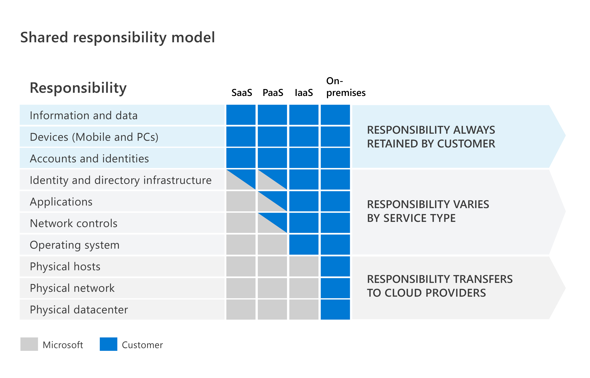
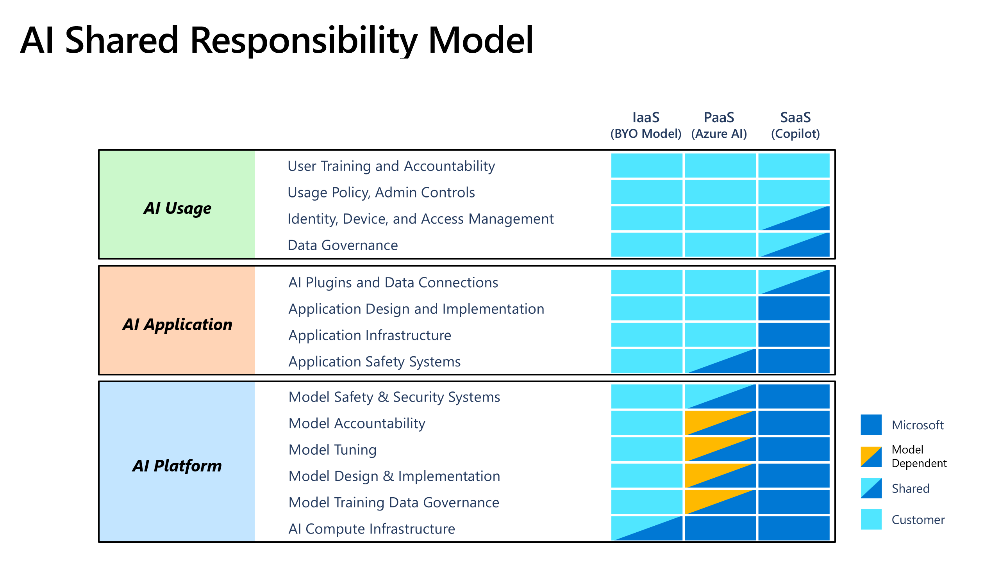
Describe defense in depth
A defense-in-depth strategy uses a layered approach to security, rather than relying on a single perimeter. Instead of depending on one mechanism to keep attackers out, defense in depth combines multiple overlapping layers of controls. Each layer provides protection so that, if one layer is breached, the next layer prevents an attacker from gaining unauthorized access to data.
Think of it like the security measures protecting a high-security vault: a locked outer door, cameras, motion sensors, an access keypad, the vault door itself, and then secured containers inside. If an attacker gets past the outer door, they still face several other barriers. The same principle applies to IT security.
Defense-in-depth layers
A defense-in-depth strategy typically includes the following layers of security:
- Physical security limits access to computing infrastructure. This layer includes locked facilities, security guards, badge readers, and surveillance cameras. Ensuring that only authorized personnel can physically access servers, networking equipment, and storage hardware prevents attackers from tampering with or stealing physical components.
- Identity and access controls authenticate and authorize users before granting them access to resources. This layer includes multifactor authentication (MFA), role-based access control (RBAC), and conditional access policies that evaluate signals—such as sign-in location, device compliance, and risk level—before permitting access. Even if an attacker obtains a valid password, strong identity controls at this layer can prevent unauthorized access.
- Perimeter security protects the boundary of a network from large-scale external attacks. This layer includes distributed denial-of-service (DDoS) protection, which filters attack traffic before it can disrupt services for users, and perimeter firewalls that inspect and control traffic entering and leaving the network.
- Network security controls communication between resources within a network. This layer includes network segmentation—dividing the network into isolated zones so that a compromise in one zone doesn't automatically expose everything else—along with network security groups (NSGs) that restrict traffic flow based on defined rules. By limiting which systems can communicate with which other systems, network security reduces the damage an attacker can cause after compromising a single resource.
- Compute security protects virtual machines, containers, and other compute resources. This layer includes keeping operating systems and software patched and up to date, closing unnecessary network ports, restricting administrative access, and monitoring compute resources for unusual behavior. Attackers frequently target unpatched or misconfigured compute resources as an entry point.
- Application security ensures that applications are designed and deployed without exploitable vulnerabilities. This layer covers secure development practices, input validation to prevent common attacks such as SQL injection and cross-site scripting (XSS), and application-level authentication and authorization. Security testing during development—before code reaches production—is much more cost-effective than discovering vulnerabilities after deployment.
- Data security is the innermost and most critical layer, focused on protecting the information that matters most to an organization. This layer includes access controls that limit who can read or modify data, encryption that makes data unreadable without the appropriate keys, and data classification that identifies which data requires the strongest protections.
Why layered defense matters
Each layer in a defense-in-depth strategy slows down an attacker and gives defenders more opportunities to detect and respond to a threat before damage is done. A single security control—even a strong one—can fail because of a software vulnerability, a misconfiguration, or a business process that requires an exception. When multiple layers are in place, the failure of one layer doesn't immediately lead to a breach.
Defense in depth also supports a key principle of modern security: designing your strategy as if attackers will eventually get through your outer defenses, and focusing on limiting what they can do once inside. Perimeters get tested constantly, so each additional layer of protection adds meaningful resilience.
Confidentiality, integrity, and availability (CIA)
The defense-in-depth layers described above work toward a common set of security goals, captured in the CIA triad: confidentiality, integrity, and availability. These three properties represent what effective security is ultimately designed to protect.
Confidentiality
Confidentiality refers to keeping sensitive information accessible only to those who are authorized to see it. This includes customer records, financial data, passwords, private communications, intellectual property, and any other data that shouldn't be readable by unauthorized individuals.
Protecting confidentiality requires more than just encryption, though encryption is one of the most important technical controls. You also need access controls that restrict who can read data, secure transmission methods, and policies that define who is permitted to view what information and under what circumstances.
A confidentiality breach—commonly called a data breach—occurs when unauthorized parties gain access to protected information. These incidents can have serious consequences for individuals whose data is exposed and for the organizations responsible for protecting it, including regulatory penalties, legal liability, and loss of customer trust.
Integrity
Integrity means keeping data accurate, complete, and unmodified except through authorized processes. When you send a message or store data in a database, you need assurance that what the recipient reads—or what you retrieve later—is exactly what you originally sent or stored.
Integrity can be violated by malicious actors who deliberately tamper with data, by software bugs that cause data corruption, or by problems during transmission. Unauthorized deletion—removing records that should exist—is also a form of integrity violation.
Controls that protect integrity include cryptographic hashing, which generates a unique fingerprint of data that changes if the data is modified, digital signatures, audit logs that record changes to data, and database transaction controls. When you verify the hash of a downloaded software file against the publisher's expected value, you're performing an integrity check.
Availability
Availability means ensuring that data and systems are accessible to authorized users when they need them. An organization's systems serve no useful purpose if legitimate users can't access them.
Availability can be threatened by DDoS attacks that flood services with traffic until they stop responding, ransomware that encrypts data until a ransom is paid, hardware failures, software bugs, and natural disasters. Controls that support availability include redundant infrastructure, load balancing, automatic failover, regular backups and tested recovery plans, and DDoS protection services.
Balancing the CIA triad
In practice, confidentiality, integrity, and availability can sometimes pull in different directions. For example, encrypting everything strongly protects confidentiality, but if encryption keys are lost, data becomes permanently inaccessible—hurting availability. Requiring complex authentication protects confidentiality and integrity but adds friction that can affect productivity.
Security teams work to find the right balance based on the sensitivity of the data, the potential impact of a breach, and the operational requirements of the business. Understanding the tradeoffs between these three properties helps organizations make informed, risk-based security decisions.
The CIA triad also helps frame the impact of attacks: attackers who steal data are targeting confidentiality, attackers who modify records are targeting integrity, and attackers who take systems offline are targeting availability. Keeping the CIA triad in mind helps organizations think about the full range of threats they need to defend against.
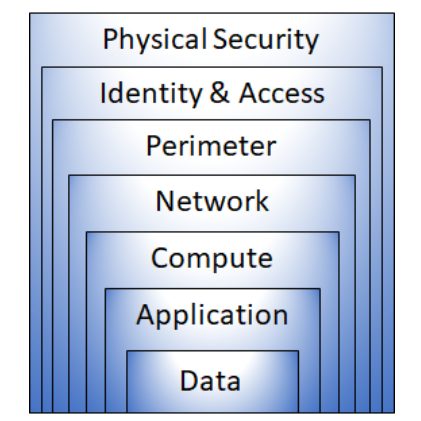
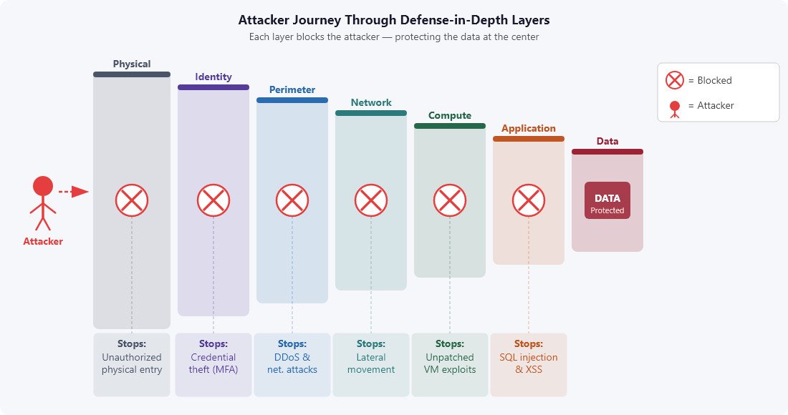
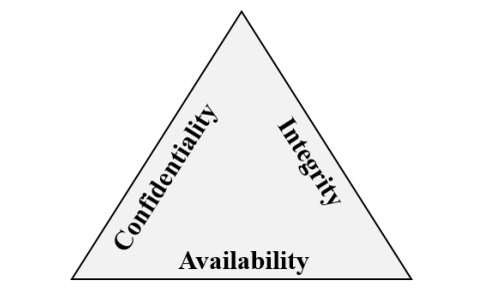
Describe the Zero Trust model
Zero Trust is a security strategy—not a single product or technology. It operates on the principle of "trust no one, verify everything." Instead of assuming that everything inside a corporate network is safe and trustworthy, Zero Trust requires that every request for access be authenticated and authorized, regardless of where the request originates.
Traditional security approaches often relied on a "castle-and-moat" model: strong perimeter controls kept untrusted traffic out, and everything inside the network was assumed to be safe. This model worked reasonably well when employees worked from a fixed office and data lived entirely on-premises. But that environment no longer describes most organizations.
Today, work happens from anywhere. Employees use personal and corporate devices, connect from home networks and public locations, and access data across multiple cloud services. Corporate data moves between on-premises datacenters, cloud platforms, and third-party applications. In this environment, the network perimeter alone is no longer a reliable security boundary. Attackers routinely bypass perimeter controls through phishing, credential theft, and application vulnerabilities—and once inside, they can move through the network if the inside is assumed to be trusted by default.
Zero Trust addresses this reality by assuming that no network, device, user, or application should be trusted by default, even those that have already authenticated or are connected to a trusted network.
Zero Trust guiding principles
The Zero Trust model is built on three guiding principles that shape how security decisions are made in every part of an organization.
- Verify explicitly: Always authenticate and authorize based on all available signals, not just a single factor like a password or network location. Signals include the user's identity, their sign-in location, the device they're using and its compliance status, the service or application being accessed, the classification of the data involved, and any anomalies such as unusual sign-in times or locations. The more signals you can evaluate, the more confident you can be that the right person is accessing the right resource.
- Use least privileged access: Grant users and systems only the minimum access they need to do their job, for only as long as they need it. This principle is implemented through just-in-time (JIT) access—granting access only when it's needed and revoking it afterward—and just-enough-access (JEA)—granting only the specific permissions required for a task, rather than broad permissions "just in case." Risk-based adaptive policies can also automatically limit access when unusual or risky activity is detected.
- Assume breach: Design your security strategy as if an attacker will eventually get through your defenses. When you assume breach, you segment access so that a compromised account or device can't freely reach everything else. You encrypt data end-to-end so that intercepted data is unreadable. You deploy monitoring and analytics so that when a breach happens, you detect it quickly, understand what was accessed, and can limit the damage.
These three principles guide how every aspect of security is implemented: how users authenticate, how devices are trusted, how applications are authorized, and how data is protected.
Seven foundational pillars
In the Zero Trust model, security is implemented across seven interconnected pillars. Six of these pillars are signal sources, a control plane for enforcement, and critical resources to be defended. The seventh pillar collects signals from all six and provides the visibility, automation, and orchestration needed to respond to and mitigate threats.
- Identities may be users, services, or devices. When an identity attempts to access a resource, it must be verified with strong authentication before access is granted. After authentication, access is governed by least-privilege principles—granting only the access needed for the specific task. Identity is the primary control plane for modern security, because almost all successful attacks eventually rely on compromising or abusing an identity.
- Devices create a large attack surface as data flows from devices to on-premises workloads and the cloud. Every device that accesses your resources represents a potential entry point for attackers. Monitoring devices for health status and compliance—and making access decisions based on that status—is an important aspect of Zero Trust. Devices that are out of compliance or show signs of compromise can be blocked or given restricted access.
- Applications are the way that data is consumed. In a Zero Trust strategy, you need visibility into all the applications being used in your environment, including unsanctioned applications—sometimes called shadow IT—that employees use without formal approval. This pillar also includes managing the permissions that applications request from platforms, and the permissions users grant to applications that access their data.
- Data should be classified, labeled, and encrypted based on its attributes and sensitivity. Security efforts across all the other pillars ultimately serve to protect data. Data must carry its own protection—through classification and encryption—so it stays secure even outside the environments your organization controls.
- Infrastructure, whether on-premises or cloud based, represents a significant attack surface. In Zero Trust, infrastructure is continuously assessed for version currency, configuration compliance, and unusual behavior. Just-in-time access to administrative interfaces limits the window of exposure. Telemetry from infrastructure allows teams to detect attacks and anomalies and respond automatically.
- Networks should be segmented so that a compromise in one part of the network doesn't provide unrestricted access elsewhere. This includes deeper in-network micro-segmentation that creates boundaries within network zones, not just at the perimeter. Real-time threat protection, end-to-end encryption of network traffic, continuous monitoring, and analytics should all be applied at the network layer.
- Visibility, automation, and orchestration is the seventh pillar and the integrating layer that ties all the others together. Each of the six pillars generates its own signals and alerts. Without a way to aggregate, correlate, and act on those signals centrally, security teams face an overwhelming volume of separate alerts—a problem that leads to missed threats and analyst fatigue. This pillar provides an integrated capability to manage that influx of data, giving security teams better information for making trust decisions and enabling automated responses to detected threats. Security information and event management (SIEM) and security orchestration, automated response (SOAR) technologies are central to this pillar—a SIEM ingests and correlates signals across all pillars to detect threats, while a SOAR uses those detections to trigger automated response playbooks.
Zero Trust in practice
The seven pillars don't operate in isolation. Consider a real-world scenario: a user signs in from an unfamiliar location on an unmanaged personal device and attempts to access a sensitive financial application.
In a Zero Trust environment, signals from multiple pillars are evaluated simultaneously. The identity pillar checks the user's credentials and detects the unusual sign-in location as a risk signal. The devices pillar finds the device isn't enrolled or compliant. The applications pillar enforces a policy requiring compliant device access for sensitive apps. The network pillar monitors the connection and logs the attempt. The data pillar ensures the financial data is encrypted and access-controlled at the data layer. The infrastructure pillar records the access attempt in telemetry.
The visibility, automation, and orchestration pillar integrates all of these signals. Rather than each pillar independently logging a low-severity event, the combined signals are correlated into a high-confidence risk detection. Automated policies—guided by the "assume breach" and "verify explicitly" principles—step up authentication requirements, block access to the sensitive application, and alert the security team, all without manual intervention.
This is what Zero Trust in practice looks like: continuous verification across every pillar, automated responses that limit damage, and centralized visibility that gives security teams the full picture of what happened and why.
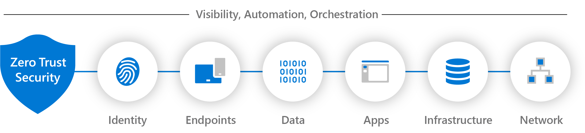
Describe encryption and hashing
One way to mitigate against common cybersecurity threats is to encrypt sensitive or valuable data. Encryption is the process of making data unreadable and unusable to unauthorized viewers. To use or read encrypted data, it must be decrypted, which requires the use of a secret key. Even if an attacker intercepts or gains access to encrypted data, it remains useless to them without the corresponding key.
Types of encryption
There are two primary types of encryption: symmetric and asymmetric.
Symmetric encryption
Symmetric encryption uses the same key to both encrypt and decrypt data. Because only one key is involved, symmetric encryption is computationally fast and well-suited for encrypting large amounts of data—for example, files stored on a hard drive or records in a database.
The main challenge with symmetric encryption is key distribution: both parties need access to the same secret key, and securely sharing that key—especially over a network—can be difficult.
Asymmetric encryption
Asymmetric encryption uses a key pair: a public key and a private key. These keys are mathematically related, but you can't derive the private key from the public key.
- Data encrypted with the public key can only be decrypted with the corresponding private key.
- Data signed with the private key can be verified with the corresponding public key.
Because the public key can be freely shared, asymmetric encryption solves the key distribution problem of symmetric encryption. Anyone can encrypt data using your public key, but only you—holding the private key—can decrypt it. Asymmetric encryption is used in many security protocols you interact with daily, including HTTPS, which secures websites, and email encryption.
Digital signatures
Asymmetric encryption also enables digital signatures, which verify both the authenticity and integrity of data. When a sender signs data with their private key, anyone with the sender's public key can verify that:
- The data came from the expected sender (authenticity).
- The data wasn't modified after it was signed (integrity).
Digital signatures are used to verify software downloads, authenticate email messages, and secure electronic documents and transactions.
Encryption by data state
Encryption for data at rest
Data at rest is data stored on a physical device, such as a server hard drive, a database, or a cloud storage account. Encryption of data at rest ensures the data is unreadable without the keys needed to decrypt it.
If an attacker obtained a hard drive with encrypted data and didn't have access to the encryption keys, they would be unable to read the data. This protection remains even if the physical storage media is stolen or the storage account is accessed without authorization.
Encryption for data in transit
Data in transit is data moving from one location to another, such as across the internet, between services, or over a private network. Data in transit is vulnerable to interception by anyone who can observe the network traffic.
Encrypting data in transit protects it from eavesdropping and interception. HTTPS is the most familiar example: when you access a website over HTTPS, the connection is secured using Transport Layer Security (TLS), which ensures that data exchanged between your browser and the server can't be read by third parties. The same principle applies to data moving between cloud services and to VPN connections that protect traffic over public networks.
Encryption for data in use
Data in use refers to data actively being processed—for example, data loaded into a computer's memory (RAM) or being worked on by a CPU. Traditional encryption protects data at rest and in transit, but data is typically decrypted when loaded into memory for processing, creating a window of potential exposure.
Encryption of data in use is achieved through confidential computing technologies that create protected execution environments, sometimes called secure enclaves, where data can be processed without being exposed even to the operating system or hypervisor. This is especially important in multitenant environments where different customers may share the same physical hardware.
Key management
Encryption is only as secure as the keys used to encrypt data. An encryption key that is stolen or exposed makes encrypted data accessible to attackers, defeating the purpose of encryption. Key management covers how encryption keys are generated, stored, protected, rotated, and eventually retired.
Key management best practices include:
- Storing keys separately from the data they protect: If keys are stored alongside encrypted data, an attacker who gains access to one automatically has both.
- Using dedicated hardware for key storage: Hardware security modules (HSMs) are specialized, tamper-resistant devices designed specifically to store and protect cryptographic keys.
- Rotating keys regularly: Changing encryption keys periodically limits the amount of data exposed if a key is ever compromised.
- Controlling access to keys tightly: Only authorized users and systems should be able to access decryption keys, enforced through strong authentication and least-privilege access principles.
Cloud key management services—such as Azure Key Vault—provide a centralized, managed service for storing and managing encryption keys, certificates, and secrets. These services reduce the risk of key exposure, support key rotation workflows, and integrate with other cloud services to provide encryption without exposing key material to application code or administrators.
Hashing
Hashing uses an algorithm to convert any input into a fixed-length string of characters called a hash (or digest). Unlike encryption, hashing is a one-way process: you can't reverse a hash to recover the original input. Each time the same input is hashed using the same algorithm, the same hash value is produced, making the hash a reliable unique fingerprint for that data.
Hashing is different from encryption in that it doesn't use keys, and the hashed value can't be reversed back to the original data. This makes hashing useful for scenarios where you need to verify data without ever needing to store or read the original value.
How hashing protects passwords
Hashing is widely used to protect stored passwords. Instead of storing a user's actual password, a system stores only the hash of that password. When a user signs in, the system hashes the password they enter and compares it to the stored hash. If the hashes match, the authentication succeeds—without the system ever storing or transmitting the actual password in plain text.
This is more secure than storing plain-text passwords because even if the password database is stolen, the attacker gets only hashes. However, basic hashing has a known vulnerability: because hash functions are deterministic, attackers can precompute hashes for millions of common passwords and look them up in tables—called rainbow tables or dictionary attacks—to find matches.
Salting
To defend against precomputed attacks, passwords are typically salted before hashing. A salt is a unique, randomly generated value created for each individual password and added to it before hashing. Because every password gets a different salt, two users with the same password produce different hashes in the database. This makes precomputed rainbow tables ineffective, because the attacker would need a separate lookup table for every possible salt value.
Salting is a standard best practice in secure password storage and is required for any properly implemented authentication system.
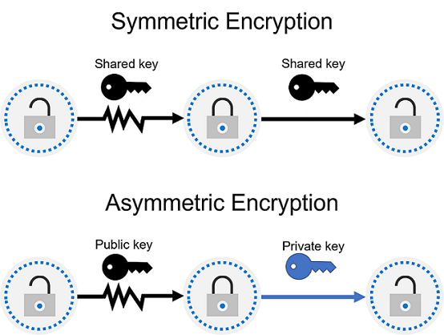
Describe governance, risk, and compliance (GRC) concepts
Organizations operate in an increasingly complex regulatory environment. New laws govern how customer data must be protected, where it can be stored, and who is accountable when incidents occur. At the same time, organizations face internal and external risks that can disrupt operations, expose sensitive data, or damage customer trust. Governance, risk, and compliance (GRC) is the set of practices organizations use to navigate these challenges in a structured and integrated way.
As organizations establish GRC competency, they can build a framework that integrates specific policies, operational processes, and technologies. A structured approach to GRC helps organizations:
- Establish clear accountability for who makes decisions and who is responsible for protecting assets
- Identify potential threats before they become incidents
- Demonstrate compliance with laws, regulations, and industry standards
- Build trust with customers, partners, and regulatory authorities
An important prerequisite to establishing GRC competency is understanding the key terms.
Governance
Governance is the system of rules, practices, and processes an organization uses to direct and control its activities. Many governance activities arise from external standards, obligations, and expectations. For example, organizations establish rules and processes that define who can access corporate resources and applications, who has administrative privileges and for how long, and what must happen when those rules are violated.
In a security context, governance activities include:
- Defining and enforcing policies for how data is classified, handled, and retained
- Establishing standards for identity and access management across the organization
- Creating approval processes for privileged or administrative access
- Assigning ownership and accountability for security controls
- Setting the overall direction for the organization's security strategy
Effective governance creates the structure on which risk management and compliance activities operate.
Risk
Risk management is the process of identifying, assessing, and responding to threats or events that can negatively impact organizational objectives or customer trust. All organizations face risk—the goal of risk management isn't to eliminate all risk, but to understand it well enough to make informed decisions about how to address each threat.
Organizations face risk from both external and internal sources. External risks can come from cyberattacks, natural disasters, economic disruptions, regulatory changes, and the actions of third-party suppliers. Internal risks come from within the organization itself—examples include accidental data exposure by employees, insider threats, fraud, and gaps in security processes.
Risk management typically follows a process that includes:
- Identify: Discover potential risks to the organization's systems, data, and operations through interviews, vulnerability assessments, audit findings, and ongoing monitoring.
- Assess: Evaluate each risk based on its potential impact and the likelihood of it occurring. This produces a risk score that helps prioritize which risks need the most attention.
- Respond: Develop a plan for each significant risk. Organizations can accept the risk if its impact is low, mitigate it by implementing controls, transfer it through measures like insurance, or avoid it by changing the process that creates the risk.
- Monitor: Continuously track identified risks, measure the effectiveness of controls, and update the assessment as the environment changes.
Compliance
Compliance refers to adherence to the laws, regulations, standards, and policies that apply to an organization based on its industry, geography, and the types of data it handles. Compliance requirements define what types of data must be protected, what processes must be in place, and what penalties apply to organizations that fail to comply.
Some familiar compliance frameworks and regulations include:
- HIPAA (Health Insurance Portability and Accountability Act): US regulations governing the protection and handling of health information.
- ISO 27001: An international standard for information security management systems.
- SOC 2 (Service Organization Control 2): An auditing standard for service providers that store or process customer data.
It's important to understand that compliance is not the same as security. Compliance defines the minimum standards that laws and regulations require. Security is broader—it encompasses all the processes, technologies, and practices that protect data and systems from threats. An organization can be technically compliant while still having significant security vulnerabilities if it only does the minimum required by regulation.
Some compliance-related concepts include:
- Data residency: Data residency regulations govern the physical locations where data can be stored and how and when it can be transferred, processed, or accessed internationally. These regulations can differ significantly depending on jurisdiction. When using cloud services, organizations need to verify where the cloud provider physically stores their data and whether those locations meet applicable data residency requirements.
- Data sovereignty: Data sovereignty refers to the concept that data is subject to the laws and regulations of the country/region where it's physically collected, held, or processed. This adds complexity when data is handled across multiple jurisdictions: the same piece of data might be collected in one country/region, stored in another, and processed in a third—making it subject to the laws of each location. Organizations that operate globally must understand which legal jurisdictions apply to their data and how those jurisdictions' laws interact.
- Data privacy: Privacy refers to the appropriate handling of personal data—any information that relates to an identified or identifiable individual. This includes obvious personal information such as names, email addresses, and phone numbers, but also information that can be indirectly linked back to a person, such as location history or browsing data. Privacy laws and regulations require organizations to be transparent about what personal data they collect and how it's used, obtain appropriate consent before collecting certain categories of data, give individuals rights over their data—such as the right to access, correct, or delete it—and protect personal data against unauthorized access or exposure. Organizations are subject to privacy laws wherever they operate and wherever their customers are located. Because different jurisdictions have different requirements, organizations with global operations often need to navigate multiple overlapping privacy regulations simultaneously.
All organizations manage data so understanding terminology and concepts related to compliance is important as they work to meet the minimum, mandated laws and/or regulations.
Section Summary
- Shared Responsibility Model: Defines who secures what across deployment models — On-premises (customer does everything), IaaS (customer manages OS, apps, data; provider handles virtualization/hardware), PaaS (provider manages runtime; customer owns apps, data), SaaS (provider handles almost everything; customer always retains data, devices, identities, and configuration). AI Shared Responsibility extends this to three layers: AI platform (provider secures infrastructure and foundation models), AI application (customer secures prompts, data, app logic), AI usage (customer governs acceptable use)
- Defense in Depth: Seven layered controls — Physical (locked facilities, badge readers, surveillance), Identity & Access (MFA, RBAC, Conditional Access), Perimeter (DDoS protection, perimeter firewalls), Network (segmentation with NSGs, isolated zones), Compute (patch management, port closure, behavioral monitoring), Application (secure dev practices, input validation, SQL injection/XSS prevention), Data (encryption, access controls, classification). Multiple overlapping layers ensure no single point of failure
- CIA Triad: Confidentiality — data accessible only to authorized parties (encryption + access control). Integrity — data accurate and unmodified (hashing, digital signatures, audit logs). Availability — systems accessible when needed (redundancy, failover, backups, DDoS protection). Must balance all three — over-encrypting can hurt availability; over-authenticating can hurt productivity
- Zero Trust: "Never trust, always verify" — three principles applied across seven pillars. Verify explicitly — authenticate and authorize based on ALL signals (identity, location, device compliance, data classification, anomalies). Least privilege — JIT and JEA access, risk-based adaptive policies. Assume breach — segment access, encrypt end-to-end, monitor continuously. Seven pillars: Identities, Devices, Applications, Data, Infrastructure, Networks, and Visibility/Automation/Orchestration (SIEM + SOAR integrating all pillars)
- Encryption: Protects data in three states — At rest (stored data encrypted on disk), In transit (TLS/HTTPS securing data moving across networks), In use (confidential computing with secure enclaves processing data without OS exposure). Symmetric encryption = same key encrypts and decrypts (fast, bulk data — AES-256). Asymmetric encryption = public/private key pair (solves key distribution, used for TLS/SSL, digital signatures). Hashing = one-way, deterministic, fixed-length output for integrity verification. Salting = per-user random value before hashing defeats rainbow tables and hides identical passwords. Digital signatures verify authenticity and integrity using asymmetric keys
- Key Management: Encryption is only as secure as the keys — store keys separately from data, use HSMs (Hardware Security Modules) for dedicated hardware protection, rotate keys regularly, control access tightly. Azure Key Vault centrally manages secrets (passwords, API keys), keys (non-exportable cryptographic material), and certificates (TLS/SSL lifecycle) in Standard (software) or Premium (HSM-backed) tiers
- GRC — Governance, Risk & Compliance: Governance — rules, policies, processes defining who decides what, with accountability and oversight. Risk management — identify, assess, and mitigate threats. Compliance — adherence to laws and regulations (GDPR, ISO 27001, etc.). Data residency — geographic location of data. Data sovereignty — data subject to laws of the country where it's stored. Data privacy — how data is collected, used, and shared, governed by principles like transparency, consent, and purpose limitation
Key Concepts
Cloud Security Fundamentals
- Shared Responsibility Model: Defines who manages each layer across on-premises, IaaS, PaaS, and SaaS. Customer ALWAYS retains data, identities, endpoints, devices, and configuration regardless of model. In IaaS: customer manages everything above virtualization; PaaS: provider handles runtime; SaaS: provider handles almost everything.
- AI Shared Responsibility: Extends the model to AI workloads across three layers — AI platform (provider secures infrastructure and foundation models), AI application (customer secures prompts, data, app logic), and AI usage (customer governs acceptable use).
- Defense in Depth: Seven layered controls — Physical (datacenter access), Identity (MFA, authN/Z), Perimeter (DDoS protection), Network (NSGs, firewall), Compute (antimalware, patch mgmt), Application (WAF, input validation), Data (encryption at rest/transit). Multiple overlapping controls ensure no single point of failure.
- CIA Triad: Confidentiality (only authorized access — encryption + access control), Integrity (data unchanged — hashing + validation + audit), Availability (accessible when needed — redundancy + backups + DR). Must balance all three; focusing on one alone creates risk.
Zero Trust Model
- Verify Explicitly: Always verify identity, device compliance, location, and behavioral risk before granting access — even for users already inside the network.
- Least Privilege: Grant only the minimum permissions needed using JEA (Just Enough Admin) and JIT (Just-In-Time access). Conditional Access + PIM enforce this at scale.
- Assume Breach: Design for breach — segment networks, encrypt end-to-end, use micro-perimeters, limit blast radius. Six Zero Trust pillars: identities, devices, applications, data, infrastructure, networks.
Cryptography Concepts
- Symmetric Encryption: Same key encrypts and decrypts. Fast and efficient for bulk data, but key distribution is the main challenge. Used for data at rest (AES-256).
- Asymmetric Encryption: Public key encrypts, private key decrypts. Slower but solves key distribution — used for TLS/SSL handshakes, digital signatures, and secure key exchange.
- Hashing: One-way, deterministic, fixed-length output from any input. Same input always produces the same hash. Used to verify integrity of downloaded files, passwords, and audit logs. NOT reversible.
- Salting: A per-user random value is added before hashing so identical passwords produce different hashes. Prevents rainbow table attacks and hides identical passwords across users.
Governance, Risk & Compliance (GRC)
- Governance: Rules, policies, and processes that form the foundation. Defines who decides what, accountability structures, and oversight mechanisms.
- Risk Management: Identify threats, assess likelihood/impact, respond (accept/mitigate/transfer/avoid), monitor continuously. Microsoft's risk framework informs product security decisions.
- Compliance: Adherence to laws and standards (GDPR, HIPAA, ISO 27001, SOC 2, NIST). Compliance != security, but both are essential.
Data Location & Protection Concepts
- Data Residency: The geographic location where data is physically stored. Microsoft offers data residency options with contractual commitments about geographic storage boundaries. Often a contractual or policy requirement.
- Data Sovereignty: Data is subject to the laws and regulations of the country/region where it is physically stored. Cross-border data transfers must respect both origin and destination jurisdictions. A legal and regulatory concept.
- Data Privacy: How data is collected, processed, used, and shared — covering transparency, consent, and individual rights (access, deletion, portability). Governed by regulations like GDPR, CCPA, and HIPAA.
- Key Distinction: Residency = where data lives (geography). Sovereignty = whose laws apply (legal). Privacy = how data is handled (rights). All three overlap but address different concerns — exam questions often test the difference.
1.2 Identity Concepts
Domain 1: Security, Compliance, and Identity Concepts (10-15%)
Module: Describe the concepts of identity
Define authentication and authorization
Securing access to digital resources requires two distinct but related processes: confirming who is requesting access, and then deciding what that person, device, or application is allowed to do. These two processes—authentication and authorization—are fundamental to identity and access management. Understanding the difference between them is essential because every access decision in a modern organization depends on both.
Authentication
Authentication is the process of proving that you are who you say you are. Every time you sign in to an application, unlock your phone, or access a company system, authentication is happening. The system challenges you to provide proof of your identity, and then verifies that proof before deciding whether to allow access. Authentication answers the question: Who are you?
Authentication requires credentials—evidence that verifies your identity. A username alone doesn't prove identity—it can be known or guessed by others. Adding a password provides a basic level of verification, but passwords can be stolen, guessed, or phished—making them one of the weakest forms of authentication on their own. Adding a stronger factor, such as a biometric or physical device, raises confidence significantly.
Authentication methods are built on three categories of proof, called authentication factors:
- Something you know—a password, PIN, or security question
- Something you have—a mobile device, hardware security key, or smart card
- Something you are—a biometric characteristic like a fingerprint or facial scan
Using only one factor—such as a password alone—is called single-factor authentication. Single-factor authentication is common but vulnerable. If that single factor is compromised—a password stolen through phishing, for example—an attacker has everything they need to impersonate the user.
Multifactor authentication (MFA) strengthens authentication by requiring two or more factors from different categories. For example, signing in with a password (something you know) and then approving a notification on your phone (something you have). Because an attacker would need to compromise multiple independent credentials, MFA dramatically reduces the risk of account takeover.
After the system evaluates the credentials, authentication either succeeds or fails. Successful authentication confirms the identity and allows the process to continue. Failed authentication denies access before any resources are exposed. But authentication alone doesn't determine what you can do—it only confirms who you are. That's where authorization comes in.
Authorization
Authorization is the process of determining what an authenticated identity is allowed to do. Once authentication confirms your identity, authorization evaluates your permissions and decides whether to grant or deny access to specific resources—applications, files, data, or system features. Authorization answers the question: What are you allowed to do?
Authorization decisions are typically based on roles (such as employee, manager, or administrator), permissions (read, write, or delete), and attributes (department, location, or job function). The system evaluates these rules for each access request and grants or restricts access accordingly.
A key authorization concept is the principle of least privilege: users should have only the minimum access they need to perform their job, and no more. Limiting access reduces the potential damage from a compromised account, minimizes the risk of accidental data loss, and helps organizations meet their security and compliance requirements.
How authentication and authorization work together
Authentication and authorization are distinct processes, but they work together to protect resources. They always occur in a specific order: authentication happens first—at sign-in—and establishes who you are. Authorization happens after authentication and determines what you can access.
Think of it like checking into a hotel. You present your ID at the front desk, and the receptionist verifies who you are—that's authentication. You're then given a keycard that opens your room and the fitness center, but not other guests' rooms or staff areas—that's authorization.
Authorization can only happen after successful authentication. You can't determine what someone is permitted to do without first confirming their identity. And confirming identity alone—without checking permissions—leaves resources exposed. Together, authentication and authorization ensure that the right identities get the right access, and nothing more.
Define identity as the primary security perimeter
Digital collaboration has transformed how and where work gets done. Employees and partners now access organizational resources from anywhere—home offices, coffee shops, client sites, and across borders. They use corporate devices, personal devices, and shared workstations. They're accessing both on-premises systems and cloud services using the same identities.
This shift has fundamentally changed how organizations need to think about security.
The traditional security perimeter
Historically, organizations protected their resources using a network perimeter—a defined boundary, enforced by firewalls and VPN gateways, around corporate systems. Security controls at the edge of the network kept untrusted traffic out and allowed trusted internal traffic to flow freely.
This model worked well when most employees worked in a single office, accessed applications running on local servers, and used only company-managed devices connected to the corporate network. When everything important was inside the boundary, trusting the network made sense.
That environment no longer describes most organizations. Several factors have eroded the traditional perimeter:
- Cloud and SaaS applications: Business-critical workloads like email, collaboration tools, and line-of-business applications now run in the cloud, outside the corporate network entirely.
- Remote and hybrid work: Employees connect from home networks, public Wi-Fi, and locations around the world. Their traffic may never pass through the corporate perimeter.
- Personal devices (BYOD): Employees access corporate resources on personal phones, tablets, and laptops that the organization doesn't fully manage or control.
- Partner and customer access: External users—vendors, contractors, and customers—need access to specific resources without becoming part of the internal network.
- IoT devices: Connected devices throughout facilities and customer locations access organizational networks, often using credentials and interfaces that are difficult to manage through traditional tools.
When trusted users and unmanaged devices all connect from outside the traditional network boundary, the perimeter alone is no longer a reliable security control. An attacker who compromises a VPN credential or a cloud account can bypass perimeter defenses entirely.
Identity as the new security perimeter
If you can't reliably control who or what is on your network, what can you use as a security boundary? The answer is identity.
An identity is the set of attributes that define or characterize a person, device, or software component. A user's identity might include their username, their organizational role, their assigned permissions, and the authentication methods registered to their account. A device's identity might include its hardware ID, its management enrollment status, and whether it meets compliance standards.
When an identity—whether a user, a device, or an application—requests access to a resource, that identity becomes the central point of verification. Rather than asking "Is this request coming from inside our corporate network?", the security question becomes: "Who or what is making this request, and should it be trusted?"
This is why identity is the new security perimeter. Every access decision starts with identity. Verifying identity—and controlling what each identity is authorized to do—is the fundamental security control for a world where work and data are no longer confined to a fixed location.
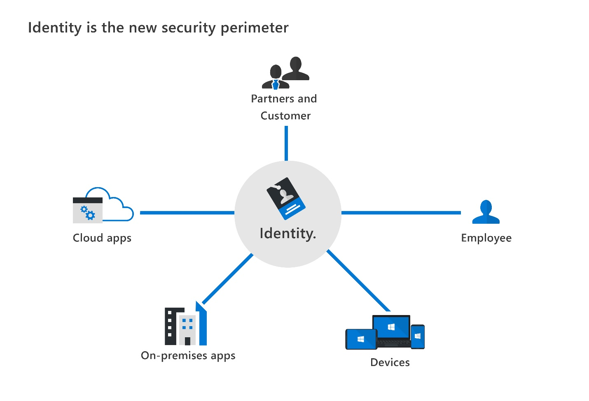
Types of identities
Identities in a modern environment come in several types:
- Human identities represent people: employees, contractors, customers, and partners who sign in to access applications and data.
- Device identities represent hardware: laptops, mobile phones, tablets, and IoT sensors that connect to organizational systems. A device can be enrolled in management, checked for compliance, and trusted or restricted based on its state.
- Workload identities represent software: applications, services, containerized workloads, and automated processes that access APIs, databases, and other resources without a human user actively involved.
- Agent identities represent AI agents: assistive or autonomous agents that act on behalf of users or processes, access resources, and interact with other systems. Agent identities require purpose-built identity constructs that go beyond traditional application identities to support authentication, authorization, governance, and lifecycle management at scale.
All four types of identities need to be authenticated and authorized. A compromised application credential can give an attacker the same access as a compromised user account. A device that doesn't meet compliance standards can be used to access sensitive data. As AI agents become more prevalent, unmanaged agent identities introduce similar risks. Treating identity holistically—across users, devices, workloads, and agents—is essential to a strong security posture.
Four pillars of an identity infrastructure
Managing identity across an organization requires more than just usernames and passwords. Organizations need a comprehensive approach that covers the full lifecycle of every identity—from creation through removal. This approach can be organized into four fundamental pillars:
- Administration: The creation, management, and governance of identities for users, devices, and services. Administration covers how identities are created and assigned (provisioning), how they're updated when roles change, and how they're removed when a user leaves the organization (deprovisioning). It also includes defining the policies that govern how identities are managed across the organization.
- Authentication: The process of verifying that an identity is who or what it claims to be. It involves challenging the identity for legitimate credentials to provide sufficient proof before granting access.
- Authorization: The process of determining what an authenticated identity is allowed to do. Authorization evaluates assigned permissions and the context of the access request, then grants or restricts access accordingly. The goal is to ensure that identities can only access what they need for their specific role or task.
- Auditing: The tracking and recording of who did what, when, and from where. Auditing encompasses sign-in logs, activity reports, alerts on anomalous behavior, and forensic investigation capabilities. Auditing is essential for meeting compliance requirements, detecting security incidents, and understanding the scope of a breach.
Together, these four pillars form the foundation of a comprehensive identity and access management solution. Addressing each pillar—not just authentication—is key to protecting resources in a world where identity is the primary security boundary.
Describe the role of the identity provider
Modern authentication is a framework in which authentication and authorization services are provided by a dedicated, centralized service—the identity provider—rather than being built into each individual application. This approach transforms how organizations manage access and significantly improves consistency, visibility, and control.
The role of the identity provider
An identity provider (IdP) creates, maintains, and manages identity information, and offers authentication, authorization, and auditing services to applications and services. Instead of each application managing its own user accounts and security policies, applications delegate these responsibilities to the identity provider.
When a client wants to sign in to an application, the application directs them to the identity provider. The identity provider verifies their credentials and—if verification succeeds—issues a security token that the user client presents back to the application. The application trusts the identity provider and accepts the token as proof of successful authentication.
Why centralize authentication?
Without a central identity provider, each application manages its own user accounts and enforces its own security policies. This creates several challenges:
- Fragmented credentials: Users maintain separate usernames and passwords for each application. This leads to password reuse, weak passwords, and difficulty removing access when someone leaves the organization.
- Inconsistent security policies: Each application may have different standards for password complexity and MFA requirements, making it difficult to enforce a consistent security baseline.
- Administrative overhead: When a user's role changes or they leave the organization, administrators must update access in every application separately. Forgotten accounts in disconnected systems become security risks.
By delegating authentication and authorization to a central identity provider, organizations can:
- Apply consistent authentication policies—including MFA requirements—across all applications from a single place
- Monitor sign-in activity and detect suspicious patterns across the entire environment, not just one application
- Manage the full user lifecycle—provisioning when users join, and deprovisioning when they leave
Security tokens and claims
The communication between an identity provider and an application is carried through security tokens. A security token is a structured package of data that the identity provider issues after verifying a user's identity. The application validates the token and uses the information inside it to grant access.
Tokens carry information in the form of claims—individual pieces of data about the authenticated identity. Claims can include:
- The user's unique identifier
- Their display name and email address
- Their assigned roles or group memberships
- When the token was issued and when it expires
- What the token grants permission to do
There are two primary types of security tokens in modern authentication:
- ID token: Proof that the user has successfully signed in (authentication). The application uses the ID token to know who the user is—their name, email, and unique identifier.
- Access token: Permission for the application to access a specific resource on behalf of the user (authorization). An access token specifies what the application is allowed to do, such as reading calendar data or calling an API.
Tokens are time-limited—they expire after a set period so that a stolen token can't be used indefinitely. The server validates the token through its trust relationship with the identity provider.
Authentication protocols
Identity providers and applications communicate using industry-standard protocols. These protocols define how authentication requests and security tokens are formatted and exchanged. The three most common protocols are:
- OpenID Connect (OIDC): Widely used for authentication in modern cloud and mobile applications. It enables applications to verify a user's identity and obtain basic profile information. OpenID Connect is built on top of OAuth 2.0.
- OAuth 2.0: Used for authorization. It allows applications to obtain access tokens that grant permission to access protected resources on behalf of the user.
- Security Assertion Markup Language (SAML): Commonly used in enterprise scenarios, particularly for integrating older applications and for federation between organizations. SAML is often used with on-premises identity systems.
Standard protocols ensure that identity providers and applications built by different organizations can work together securely, enabling the broad ecosystem of applications and services that organizations rely on today.
Single sign-on
One of the most valuable capabilities that a central identity provider enables is single sign-on (SSO). With SSO, a user signs in once to the identity provider and is automatically signed in to all applications that trust that same identity provider—without entering credentials again.
SSO works because the identity provider issues tokens that the user presents to multiple applications. Each application validates the token against its trust relationship with the identity provider, and grants access without requiring another sign-in.
The benefits of SSO include:
- Better user experience: Users don't need to remember separate credentials for each application.
- Stronger security: Fewer credential prompts reduce the opportunities for phishing or password theft. With fewer passwords, there's less risk of reuse.
- Centralized control: Disabling a user account in the identity provider immediately removes their access to all connected applications, making offboarding faster and more reliable.
SSO can happen within a single identity provider—one sign-in, many apps. When two different identity providers trust each other to authenticate users across boundaries, that's called federation, which is explored in the next unit.
Microsoft Entra ID is an example of a cloud-based identity provider that supports SSO across thousands of applications. Other examples include Google, Amazon, LinkedIn, and GitHub.
Describe directory services and Active Directory
Keeping track of every user, device, and resource in a network—and deciding who can access what—requires a system for storing and managing identity information. That system is a directory service.
What is a directory service?
A directory is a structured repository that stores information about objects in a network, such as users, devices, groups, policies, and applications. A directory service is the software that stores this directory data and makes it available to users, administrators, applications, and services. Directory services answer questions like "Who is this user?", "What groups do they belong to?", and "Which resources are they authorized to access?" They form the backbone of user authentication and authorization in an organization's network.
Active Directory Domain Services
Active Directory (AD) is a set of directory services developed by Microsoft, first released as part of Windows 2000 Server. It was designed to help organizations manage on-premises, domain-based networks—giving administrators a centralized way to manage users, computers, and resources across the organization.
The most widely deployed component is Active Directory Domain Services (AD DS). AD DS stores information about every member of a network domain, including users, devices, and groups. It verifies credentials during sign-in and defines each user's access rights to network resources. A server running AD DS is called a domain controller (DC).
AD DS gives organizations the ability to:
- Manage multiple on-premises systems using a single identity per user
- Apply Group Policy settings to control device configurations across the organization
- Authenticate users to on-premises applications using established protocols like Kerberos and NTLM
- Organize users and computers into organizational units (OUs) for simplified administration
For years, AD DS was the foundation of identity and access management for most organizations. It served well when employees worked on organization-provided Windows devices connected to a corporate network, and when applications ran on on-premises servers.
Limitations of Active Directory for a modern environment
Active Directory Domain Services was designed for an on-premises world. As organizations adopted cloud services, mobile devices, and remote work, AD DS began to show its limitations:
- Cloud and SaaS applications: AD DS doesn't natively authenticate users to cloud-based applications or SaaS services. Connecting AD DS to cloud applications typically requires additional synchronization tools or federation services.
- Mobile devices: AD DS doesn't natively support iOS, Android, or other non-Windows device management without additional solutions.
- Modern authentication protocols: Many cloud services and modern applications use authentication standards like OAuth 2.0 and OpenID Connect—protocols that AD DS doesn't natively support.
- Remote access: Users working away from the corporate network can't authenticate directly to AD DS without a VPN connection, adding friction and a potential security gap.
These limitations created the need for an identity solution built for cloud services, mobile devices, and remote work.
Microsoft Entra ID
Microsoft Entra ID is Microsoft's cloud-based identity and access management service—the evolution of directory services for the cloud era. Where Active Directory Domain Services was designed for on-premises networks, Microsoft Entra ID is designed for the internet and the cloud. It provides an Identity as a Service (IDaaS) model, meaning Microsoft operates and maintains the underlying infrastructure while organizations use it to manage users, devices, and access policies.
Microsoft Entra ID addresses the limitations of AD DS by supporting modern, standards-based authentication, working across platforms and device types, and integrating with cloud and SaaS applications—without requiring a VPN or on-premises infrastructure. Organizations that already run AD DS can connect the two systems so identities are synchronized, a configuration known as hybrid identity, allowing users to access both on-premises and cloud resources with the same credentials.
A later learning path covers Microsoft Entra ID and its capabilities in detail.
Describe the concept of federation
When users need to access resources in a different organization, or when a web application needs to accept sign-ins from users who belong to external identity systems, a challenge arises: how do you let someone authenticate using their own organization's identity provider to access your resources—without requiring them to create a separate account?
Federation is the answer. Federation enables access to services across organizational or domain boundaries by establishing trust relationships between separate identity providers.
How federation works
Think of federation like passport control between countries/regions. Your passport was issued by your home country/region, but many other countries/regions accept it as proof of identity without requiring you to get a new ID from them. Federation works the same way—your organization's identity system vouches for you, and a partner's system accepts that voucher. The user signs in once with credentials they already have. No new account in the other organization is needed.
In practice, Organization A configures its identity provider to trust Organization B's identity provider. When a user from Organization B tries to access a resource in Organization A, Organization A's identity provider accepts the authentication that Organization B already performed and grants access based on that trust.
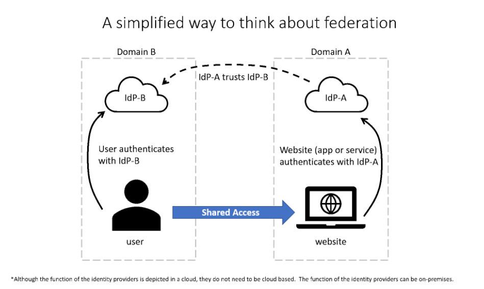
An important point: trust relationships aren't automatically bidirectional. If Organization A trusts Organization B, that doesn't mean Organization B automatically trusts Organization A. A two-way trust must be explicitly configured if both organizations need to access each other's resources.
Federation in practice
Federation works across different vendors and platforms because identity providers use industry-standard protocols to exchange security tokens consistently. This interoperability makes federation practical in many common scenarios:
Business-to-business (B2B) collaboration: When two companies partner on a project, federation lets employees from one company access shared resources—a project workspace, a joint application, a collaboration portal—using their own company credentials. Administrators configure a trust relationship between the two organizations' identity providers rather than creating and managing individual guest accounts.
Social and consumer identity providers: When a consumer application lets users sign in with their Google, Microsoft, or GitHub account instead of creating a new account, that's a federated sign-in. The application trusts the social identity provider to authenticate the user. This approach is common in customer-facing applications where reducing sign-up friction improves adoption.
Enterprise application integration with on-premises identity: Organizations with on-premises Active Directory Domain Services can use federation to extend on-premises authentication to cloud services. Active Directory Federation Services (AD FS) is a Microsoft server role that enables organizations to share identity information with external services securely. Through AD FS, on-premises Active Directory users can access cloud applications by authenticating against the on-premises AD FS server, which issues tokens that cloud services accept.
Microsoft Entra ID supports federation across all of these scenarios, letting organizations extend trust to partners, customers, and external users without requiring those users to create new accounts or learn new credentials.
Section Summary
- Authentication vs Authorization: Authentication answers "Who are you?" — the identity proves itself using credentials (password, biometric, device). Authorization answers "What are you allowed to do?" — permissions are checked AFTER authentication succeeds. Three authentication factor categories: Something you know (password, PIN), Something you have (phone, hardware key, smart card), Something you are (fingerprint, facial scan). Single-factor = one category; MFA requires ≥2 categories, drastically reducing account takeover risk. Authorization enforces least privilege — minimum access needed for the job
- Identity as the Primary Security Perimeter: Traditional network perimeter (firewalls, VPNs) eroded by cloud/SaaS, remote/hybrid work, BYOD, partner/customer access, and IoT devices. With resources no longer confined to the corporate network, identity becomes the central security boundary. Four identity types: Human (employees, customers, partners), Device (laptops, phones, IoT), Workload (apps, services, automated processes), Agent (AI agents acting on behalf of users). Four pillars of identity infrastructure: Administration (provisioning, lifecycle, deprovisioning), Authentication (verification challenge), Authorization (permission evaluation), Auditing (tracking who did what, when, from where — essential for compliance and incident response)
- Identity Providers (IdP): A centralized service that creates, maintains, and manages identity information — applications delegate authentication to the IdP rather than managing accounts individually. Benefits include consistent MFA policies across all apps, centralized sign-in monitoring, and unified user lifecycle management. Security tokens carry claims (user ID, roles, group memberships, expiry). Two token types: ID token (proof of successful authentication — who the user is) and Access token (permission to access a specific resource — what the app can do). Tokens are time-limited to limit stolen-token damage. Three standard protocols: OpenID Connect (OIDC) — authentication layer built on OAuth 2.0, modern cloud/mobile apps; OAuth 2.0 — authorization framework for delegated resource access; SAML — enterprise federation, on-premises identity systems
- Single Sign-On (SSO): User signs in once to the IdP and is automatically signed in to all trusting applications — no re-entering credentials. Benefits: better UX (one set of credentials), stronger security (fewer passwords reduces phishing risk and password reuse), centralized offboarding (disabling one account removes access everywhere). SSO within one IdP; federation extends it across different IdPs
- AD DS vs Entra ID: Active Directory Domain Services (AD DS) — on-premises directory service designed for domain-based networks. Uses domain controllers, Group Policy, OUs, Kerberos/NTLM authentication. Limitations: no native cloud/SaaS auth, no mobile device support, no OAuth/OIDC, requires VPN for remote access. Microsoft Entra ID — cloud-based Identity as a Service (IDaaS). Supports modern protocols (OAuth 2.0, OIDC, SAML), cross-platform devices, no VPN needed. Flat structure (no OUs), policy via Conditional Access + Intune. Hybrid identity connects both — synchronized credentials enable single sign-on to on-premises AND cloud resources
- Federation: Trust relationships between separate identity providers — Organization A trusts Organization B's authentication. The passport analogy: your home country issued your passport, and other countries accept it as ID. Federation enables B2B collaboration (partner employees use their own credentials to access shared resources), social/consumer IdPs (sign in with Google, Microsoft, GitHub — no new account needed), and on-premises integration via AD FS (Active Directory Federation Services extends on-premises authentication to cloud services). Trust relationships are NOT automatically bidirectional — two-way trust must be explicitly configured
Key Concepts
Authentication vs Authorization
- Authentication: Proving identity — "who are you?" Uses credentials (password, biometric, FIDO2 key, certificate). Can be single-factor or multi-factor. The IdP verifies the claim.
- Authorization: Determining access — "what are you allowed to do?" Happens AFTER authentication. Uses RBAC roles, permissions, scopes. Answers: can this user read, write, delete, or administer?
- Authentication Factors: Three categories — knowledge (password, PIN), possession (phone, hardware token, smart card), inherence (fingerprint, face, voice). MFA requires ≥2 different categories.
Identity as the New Perimeter
- Identity as Primary Security Perimeter: As network boundaries dissolve with cloud, mobile, and remote work, identity becomes the central control point. Every access request is authenticated and authorized regardless of network location.
- Four Pillars of Identity: Administration (provisioning, lifecycle), Authentication (verification), Authorization (access decisions), Audit (logging, monitoring). All four must work together for complete identity security.
Identity Providers & Federation
- Identity Provider (IdP): Creates, stores, and manages digital identities. Provides authentication services and SSO. Microsoft Entra ID, AD FS, Google, Facebook are all IdPs.
- Single Sign-On (SSO): Authenticate once against the IdP, access multiple apps without re-entering credentials. Reduces password fatigue and improves security (fewer credentials to manage).
- Federation: Trust relationship between IdPs (e.g., your org's Entra ID trusts another org's IdP). Users authenticate at their home IdP and get access to resources in the trusting org — no separate account needed.
- Federation Protocols: SAML (enterprise federation), OAuth 2.0 (delegated authorization, token-based), OpenID Connect (identity layer on OAuth 2.0). Each serves different use cases.
Directory Services: AD DS vs Entra ID
- Active Directory Domain Services (AD DS): On-premises directory with hierarchical structure (forests, domains, OUs). Uses Kerberos, NTLM, LDAP. Managed via Group Policy. Designed for on-premises network environments.
- Microsoft Entra ID: Cloud-based IAM. Flat structure (no OUs). Uses REST APIs, OAuth 2.0, OpenID Connect. No Group Policy — policy is via Conditional Access + MDM (Intune). Designed for cloud and hybrid.
- Key Difference: AD DS is a directory service for on-prem infrastructure. Entra ID is an identity and access management service for cloud and hybrid — broader scope including SSO, MFA, device management, app provisioning.
- Least Privilege: Grant only the minimum permissions needed. Applied via RBAC roles, administrative units, and scoped role assignments. Foundation of Zero Trust identity pillar.
2.1 Function & Identity Types
Domain 2: Microsoft Entra Capabilities (25-30%)
Module: Describe the function and identity types of Microsoft Entra ID
Describe Microsoft Entra
Microsoft Entra is Microsoft's family of identity and network access products. As organizations adopt Zero Trust security models, they need solutions that go beyond basic authentication to cover identity governance, verified credentials, secure network access, and identities for AI agents. In this unit, you explore the Microsoft Entra product family and how these products work together to secure end-to-end access for employees, customers, partners, workloads, and AI agents across any cloud environment.
The Microsoft Entra family is organized around the access scenarios it secures.
Understand the Microsoft Entra product family
Each category in the Microsoft Entra family maps to a specific access scenario that organizations commonly face. The following sections describe the key products in each category and what they do.
Establish Zero Trust access controls
Microsoft Entra ID is the foundational product of the family. It's a cloud-based identity and access management service that provides authentication, single sign-on (SSO), policy enforcement, and protection for users, devices, apps, and resources. If your organization uses Microsoft 365, Azure, or Dynamics CRM Online, you're already using Microsoft Entra ID. Every tenant of those services is automatically a Microsoft Entra tenant, with an initial domain name like `contoso.onmicrosoft.com`. Organizations can also add their own custom domain names.
Microsoft Entra Domain Services provides managed domain services for organizations that run older applications in the cloud that require traditional Windows Server Active Directory features. It lets those applications work in the cloud without needing to deploy and manage domain controllers. Microsoft manages the underlying infrastructure, so organizations don't have to.
Secure access for employees
This category groups the products most organizations use to govern, protect, and connect their workforce.
- Microsoft Entra Private Access secures access to private apps and resources, including corporate networks and multicloud environments. Remote users can connect to internal resources from any device or network without a virtual private network (VPN). For example, an employee can securely reach a corporate network printer while working from home or a cafe.
- Microsoft Entra Internet Access secures access to internet resources, including software as a service (SaaS) apps and Microsoft 365 apps and resources. Administrators can enable web content filtering to regulate access to websites based on content categories and domain names.
- Microsoft Entra ID Governance simplifies identity and permissions management by automating access requests, assignments, and reviews. It also helps protect critical assets through identity lifecycle management. For example, administrators can automatically assign user accounts, groups, and licenses to new employees and remove those assignments when employees leave.
- Microsoft Entra ID Protection detects and reports identity-based risks, such as risky users and risky sign-ins. Administrators can investigate and automatically remediate risks using tools like risk-based Conditional Access policies. A common scenario is a policy that requires multifactor authentication (MFA) when the sign-in risk level is medium or high.
- Microsoft Entra Verified ID is a credential verification service based on open decentralized identity (DID) standards. Organizations can issue verifiable credentials—digital signatures that prove the validity of information—to users, who store the credentials on their personal devices and present them when needed. For example, a recent college graduate can ask their university to issue a digital diploma to their DID, then present it to a potential employer who can independently verify the issuer, issuance time, and status.
Secure access for customers and partners
Microsoft Entra External ID lets external identities safely access business resources and consumer apps. It provides secure methods for collaborating with business partners and guests on internal apps, and for managing customer identity and access management (CIAM) in consumer-facing applications. For example, an organization can set up self-service registration so customers sign in to a web application using one-time passcodes or social accounts from providers like Google or Facebook.
Secure access in any cloud
Microsoft Entra Workload ID is the identity and access management solution for workload identities—applications, services, and containers that need authentication and authorization policies. It lets organizations secure access to resources using adaptive policies and custom security attributes. For example, GitHub Actions need a workload identity to access Azure subscriptions and run software development workflows.
Secure access for AI agents
Microsoft Entra Agent ID is an identity and security framework that extends Microsoft Entra capabilities to AI agents. As organizations deploy assistive, autonomous, and user-like agents, Agent ID provides purpose-built identity constructs to authenticate, authorize, govern, and protect these nonhuman identities at enterprise scale. For example, when an organization deploys AI agents that access corporate data on behalf of users, Agent ID gives each agent a governed identity, enforces least-privilege access, and maintains an audit trail of the agent's actions.
How Microsoft Entra products work together
The strength of the Microsoft Entra family is how its products integrate. Consider a scenario where a new employee joins your organization:
- Microsoft Entra ID authenticates the employee and provides single sign-on to corporate apps.
- Microsoft Entra ID Governance automatically provisions the right access based on the employee's role.
- Microsoft Entra ID Protection evaluates each sign-in for risk and triggers stronger authentication when needed.
- Microsoft Entra Internet Access secures the employee's connection to cloud and internet resources.
- Microsoft Entra Private Access provides secure access to on-premises apps without a VPN.
This integrated approach reduces the security gaps that occur when organizations use disconnected tools for identity and network access management.
Microsoft Entra licensing
Each product in the Microsoft Entra family can be used independently, but the products deliver the most value when used together as part of a comprehensive identity and access strategy. Microsoft Entra ID is available in several licensing tiers, and additional products can be added or bundled depending on an organization's needs:
- Microsoft Entra ID Free — Included with Microsoft cloud subscriptions such as Microsoft Azure and Microsoft 365. Provides core identity capabilities including user and group management, basic reporting, and self-service password reset.
- Microsoft Entra ID P1 — Adds capabilities such as Conditional Access, hybrid identity support, and advanced group features. Included with Microsoft 365 E3, F1, F3, Enterprise Mobility + Security E3, and Microsoft 365 Business Premium.
- Microsoft Entra ID P2 — Adds risk-based Conditional Access, Microsoft Entra ID Protection, and Privileged Identity Management (PIM). Included with Microsoft 365 E5 and Enterprise Mobility + Security E5.
- Microsoft Entra Suite — A bundled license that combines five Entra products under a single offering, designed for organizations that want comprehensive identity and network access protection. A Microsoft Entra ID P1 subscription is required. The suite includes Microsoft Entra Private Access, Microsoft Entra Internet Access, Microsoft Entra ID Governance, Microsoft Entra ID Protection, and premium capabilities of Microsoft Entra Verified ID.
Microsoft Entra also integrates with Security Copilot to help administrators investigate identity risks and troubleshoot access issues using AI.
Microsoft Entra admin center
Administrators configure and manage all Microsoft Entra products from a single web-based portal called the Microsoft Entra admin center.
Describe Microsoft Entra ID
Microsoft Entra ID is Microsoft's cloud-based identity and access management service. Organizations use Microsoft Entra ID to enable their employees, guests, workloads, and AI agents to sign in and access the resources they need, including:
- Internal resources, such as apps on your corporate network and intranet, and cloud apps developed by your own organization.
- External services, such as Microsoft 365, the Azure portal, and any SaaS applications used by your organization.
Microsoft Entra ID simplifies the way organizations manage authorization and access by providing a single identity system for their cloud and on-premises applications. Microsoft Entra ID can be synchronized with your existing on-premises Active Directory, synchronized with other directory services, or used as a standalone service.
Microsoft Entra ID also allows organizations to securely enable the use of personal devices, such as mobiles and tablets, and enable collaboration with business partners and customers.
Identity Secure Score
Microsoft Entra ID includes an identity secure score, which is a percentage that functions as an indicator for how aligned you are with Microsoft's best practice recommendations for security. Each improvement action in identity secure score is tailored to your specific configuration.
Identity secure score, which is available in all editions of Microsoft Entra ID, helps you to objectively measure your identity security posture, plan identity security improvements, and review the success of your improvements.
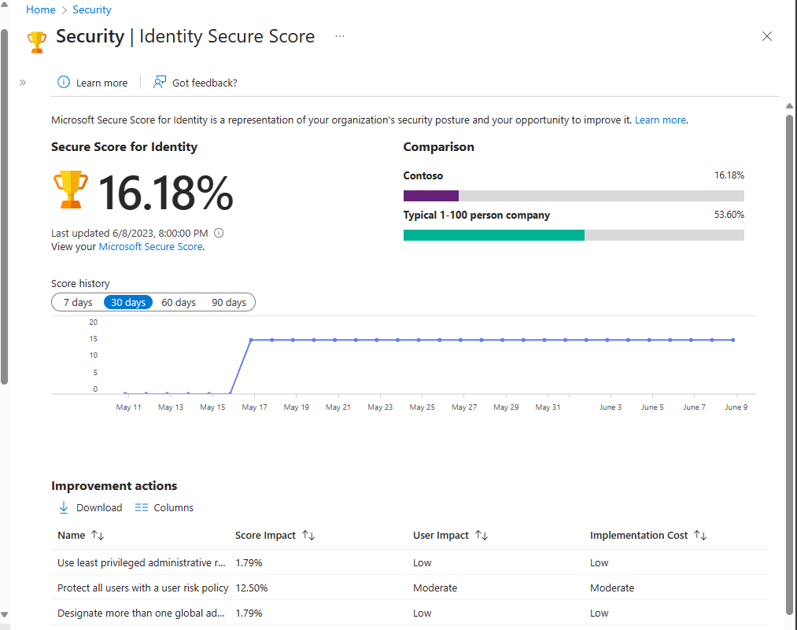
Basic terminology
When talking about Microsoft Entra ID, there's some basic terminology that's important to understand.
- Tenant - A Microsoft Entra tenant is an instance of Microsoft Entra ID in which information about a single organization resides including organizational objects such as users, groups, devices, and application registrations. A tenant also contains access and compliance policies for resources, such as applications registered in the directory. Each Microsoft Entra tenant has a unique ID (tenant ID) and a domain name (for example, contoso.onmicrosoft.com) and serves as a security and administrative boundary, allowing the organization to manage and control access to resources, applications, devices, and services.
- Directory - The terms Microsoft Entra directory and Microsoft Entra tenant are often used interchangeably. The directory is a logical container within a Microsoft Entra tenant that holds and organizes the various resources and objects related to identity and access management including users, groups, applications, devices, and other directory objects. Basically, the directory is like a database or catalog of identities and resources associated with an organization's tenant. A Microsoft Entra tenant consists of only one directory.
- Multi-tenant - A multitenant organization is an organization that has more than one instance of Microsoft Entra ID. Reasons why an organization might have multiple tenants include organizations with multiple subsidiaries or business units that operate independently, organizations that merge or acquire companies, multiple geographical boundaries with various residency regulations, and more.
Who uses Microsoft Entra ID?
Microsoft Entra ID is used by IT admins to control access to corporate apps and resources, based on business requirements. For example, Microsoft Entra ID can also be set up to require multifactor authentication when accessing important organizational resources. It provides powerful tools to automatically help protect user identities and credentials and to meet an organization's access governance requirements.
Developers use Microsoft Entra ID as a standards-based approach for adding single sign-on (SSO) to their apps, so that users can sign in with their preexisting credentials. Microsoft Entra ID also provides application programming interfaces (APIs) that allow developers to build personalized app experiences using existing organizational data.
Subscribers to Azure services, Microsoft 365, or Dynamics 365 automatically have access to Microsoft Entra ID. Users of these services can take advantage of included services and can also enhance their Entra implementation by upgrading to premium licenses.
Microsoft Entra ID and AI
As assistive and autonomous agents become more prevalent in enterprise environments, Microsoft Entra ID extends its identity capabilities through Microsoft Entra Agent ID. Microsoft Entra Agent ID is an identity and security framework that provides purpose-built identity constructs to authenticate, authorize, govern, and protect agent identities at enterprise scale. Organizations can enforce conditional access policies, detect risks in real time, manage agent lifecycles, and apply network-level controls, ensuring that AI agents follow Zero Trust principles just like human and workload identities.
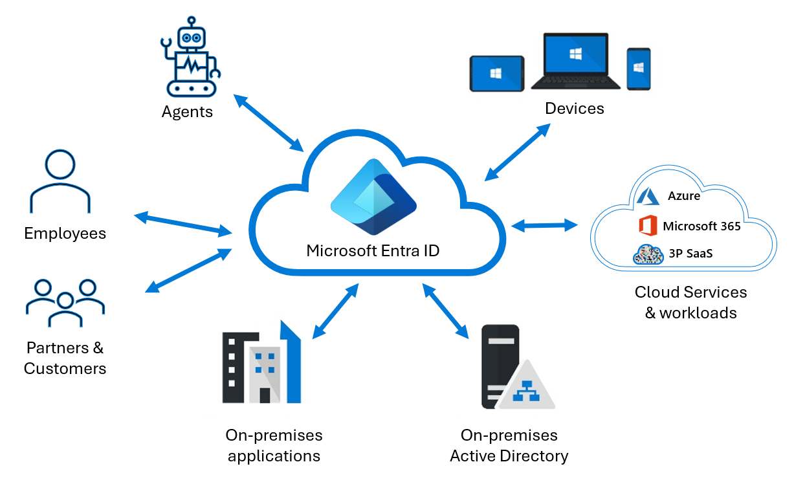
Describe types of identities
In Microsoft Entra ID, there are different types of identities that are supported. The terms you're introduced in this unit are user identities, workload identities, device identities, external identities, and hybrid identities.
When you ask the question, to what can I assign an identity in Microsoft Entra ID, there are three categories.
- You can assign identities to people (humans), referred to as user identities.
- You can assign identities to physical devices, such as mobile phones, desktop computers, and IoT devices.
- You can assign identities to software-based objects, such as applications, virtual machines, services, and containers. These types of identities are referred to as workload identities.
User
User identities represent people such as employees and external users (customers, consultants, vendors, and partners). In Microsoft Entra ID, user identities are characterized by how they authenticate and the user type property.
How the user authenticates relative to the host organization's Microsoft Entra tenant can be internal or external. Internal authentication means the user has an account on the host organization's Microsoft Entra ID. External authentication means the user authenticates using an external Microsoft Entra account, a social network identity, or other external identity provider.
The user type property describes the user's relationship to the host organization's tenancy. The user can be a guest or a member of the organization's Microsoft Entra tenant. By default, guests have limited privileges relative to members.
- Internal member: These users are typically considered employees of your organization. The user authenticates internally via their organization's Microsoft Entra ID, and the user object created in the resource Microsoft Entra directory has a UserType of Member.
- External guest: External users or guests, including consultants, vendors, and partners, typically fall into this category. The user authenticates using an external Microsoft Entra account or an external identity provider (such as a social identity), and their user object has a UserType of Guest.
- External member: This scenario is common in organizations consisting of multiple tenants. For example, if the Contoso and Fabrikam Microsoft Entra tenants are within one large organization, Contoso users can be configured in the Fabrikam Microsoft Entra directory to authenticate with their Contoso account (external to Fabrikam) but have a UserType of Member, enabling member-level access to Fabrikam's resources.
- Internal guest: This scenario exists when organizations set up internal Microsoft Entra accounts for external users such as distributors or vendors, but designate them as guests by setting the user object UserType to Guest. This is considered a legacy scenario, as it's now more common to use B2B collaboration where users can use their own credentials.
External guests and external members are B2B collaboration users that fall under external identities in Microsoft Entra ID.
Workload identities
A workload identity is an identity you assign to a software workload to enable it to authenticate to and access other services and resources.
Securing workload identities is important because a software workload may deal with multiple credentials to access different resources, and those credentials need to be stored securely. It's also hard to track when a workload identity is created or when it should be revoked. Microsoft Entra Workload ID helps resolve these issues.
In Microsoft Entra, workload identities are applications, service principals, and managed identities.
Applications and service principals
A service principal is essentially, an identity for an application. For an application to delegate its identity and access functions to Microsoft Entra ID, the application must first be registered with Microsoft Entra ID to enable its integration. Once an application is registered, a service principal is created in each Microsoft Entra tenant where the application is used. The service principal enables core features such as authentication and authorization of the application to resources that are secured by the Microsoft Entra tenant.
For service principals to access resources, application developers must manage and protect the credentials. Managed identities help offload that responsibility from developers.
Managed identities
Managed identities are a type of service principal. Managed identities are automatically managed in Microsoft Entra ID and eliminate the need for developers to manage credentials. Managed identities provide an identity for applications to use when connecting to Azure resources that support Microsoft Entra authentication and can be used without any extra cost.
There are two types of managed identities: system-assigned and user-assigned.
- System-assigned. Some Azure resources, such as virtual machines, allow you to enable a managed identity directly on the resource. When you enable a system-assigned managed identity, an identity is created in Microsoft Entra that's tied to the lifecycle of that Azure resource. When the resource is deleted, Azure automatically deletes the identity for you.
- User-assigned. You may also create a managed identity as a standalone Azure resource. Once you create a user-assigned managed identity, you can assign it to one or more instances of an Azure service. With user-assigned managed identities, the identity is managed separately from the resources that use it. Deleting the resources that use the user-assigned managed identity doesn't delete the identity; it must be explicitly deleted.
Agent identities
As AI agents become more prevalent in organizations, securing their access to resources is critical. Microsoft Entra Agent ID extends identity and access management capabilities to AI agents by providing purpose-built agent identities. These are specialized identities in Microsoft Entra, distinct from traditional workload identities, that enable organizations to register agents, enforce conditional access policies based on agent risk, and govern agent lifecycles with designated owners and sponsors for accountability. Agent identities support both attended scenarios, where the agent acts on behalf of a user, and unattended scenarios, where the agent operates autonomously.
Device
A device is a piece of hardware, such as mobile devices, laptops, servers, or printers. A device identity gives administrators information they can use when making access or configuration decisions. Device identities can be set up in different ways in Microsoft Entra ID.
- Microsoft Entra registered devices. The goal of Microsoft Entra registered devices is to provide users with support for bring your own device (BYOD) or mobile device scenarios. In these scenarios, a user can access your organization's resources using a personal device.
- Microsoft Entra joined. A Microsoft Entra joined device is a device joined to Microsoft Entra ID through an organizational account, which is then used to sign in to the device. Microsoft Entra joined devices are generally owned by the organization.
- Microsoft Entra hybrid joined devices. Organizations with existing on-premises Active Directory implementations can benefit from the functionality provided by Microsoft Entra ID by implementing Microsoft Entra hybrid joined devices. These devices are joined to both your on-premises Active Directory and Microsoft Entra ID, and require an organizational account to sign in to the device.
Registering and joining devices to Microsoft Entra ID gives users Single Sign-on (SSO) to cloud-based resources and on-premises applications.
IT admins can use tools like Microsoft Intune to control how an organization's devices are used.
Groups
In Microsoft Entra ID, if you have several identities with the same access needs, you can create a group to give access permissions to all members, instead of assigning access individually. This aligns with the Zero Trust principle of limiting access to only those who need it.
There are two group types:
- Security: A security group is the most common type of group and it's used to manage user and device access to shared resources. For example, you may create a security group for a specific security policy such as self-service password reset or for use with a conditional access policy. Members of a security group can include users (including external users), devices, other groups, service principals, and agent identities.
- Microsoft 365: A Microsoft 365 group, which is also often referred to as a distribution group, is used for grouping users according to collaboration needs. For example, you can give members of the group access to a shared mailbox, calendar, files, SharePoint sites, and more. Members of a Microsoft 365 group can only include users, including users outside of your organization.
Groups can be configured to allow members to be assigned, that is manually selected, or they can be configured for dynamic membership. Dynamic membership uses rules to automatically add and remove identities.
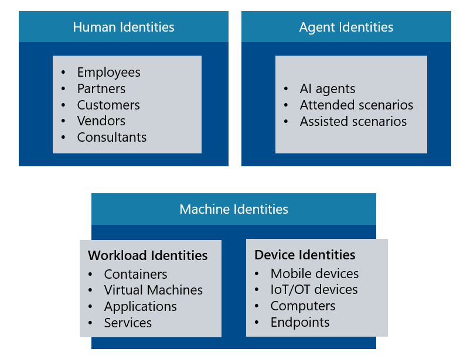
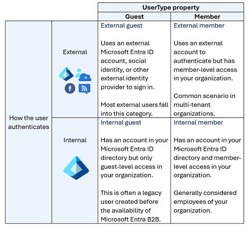
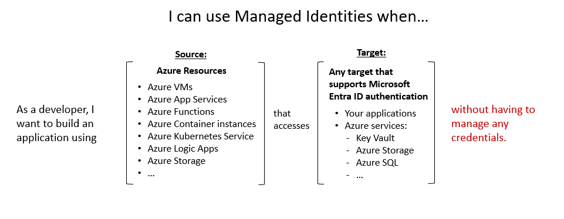
Describe Microsoft Entra Agent ID
As organizations deploy AI agents to automate tasks and enhance productivity, these agents need secure identities to authenticate and access resources, just like human users and traditional applications. Microsoft Entra Agent ID provides an identity and security framework designed specifically for AI agents operating in enterprise environments.
Why AI agents need dedicated identities
AI agents differ from traditional applications in important ways. They make dynamic decisions, adapt behavior based on context, and can operate autonomously. Unlike an application that executes predetermined logic, an AI agent might analyze data, take actions, and interact with other systems or agents on its own. These characteristics create unique security challenges:
- Expanded attack surface. AI agents often interact with external systems, creating potential pathways for adversaries. Agents are also vulnerable to attacks like prompt injection that don't affect traditional applications.
- Permission risks. Agents are often provisioned with broad permissions. Without proper controls, an agent might access more data or take more actions than necessary for its intended task.
- Agent sprawl. Uncontrolled expansion of agents across an organization, without adequate visibility, management, or lifecycle controls, can lead to security and compliance risks. Agents created for temporary purposes may remain in production indefinitely, with permissions that are rarely reviewed.
These challenges make it important to distinguish AI agent identities from traditional user and workload identities, so organizations can apply the right level of governance.
How Microsoft Entra Agent ID works
Microsoft Entra Agent ID is built on the Microsoft Entra ID platform and provides dedicated identity constructs for AI agents. The framework introduces two key concepts:
- Agent identity blueprints serve as reusable templates that define a type or class of agent. A blueprint establishes agent classification, holds the credentials used to create agent instances, and enables administrators to apply policies to all agents of that type. For example, an organization might create a blueprint for "Sales Assistant Agent" that defines what permissions all sales assistant agents receive.
- Agent identities are individual instances created from a blueprint. Each agent identity has a unique identifier in Microsoft Entra ID, a display name, and a sponsor, which is the human user or group accountable for the agent. Agent identities don't have their own credentials. Instead, they rely on the blueprint to acquire authentication tokens on their behalf.
This blueprint-to-identity model enables centralized management while providing the flexibility needed for diverse AI agent deployment scenarios. Administrators can apply conditional access policies, disable permissions, or audit agents at scale through blueprint-based controls.
Microsoft Entra Agent ID is platform-agnostic — it works with agents built on Microsoft and non-Microsoft platforms. Organizations can integrate third-party agents from platforms such as AWS Bedrock and n8n by using the Microsoft Entra Auth SDK or workload identity federation, giving every agent a governed identity regardless of where it was built.
Authentication scenarios
Agent identities support two key authentication patterns:
- Attended (on-behalf-of). The agent operates on behalf of a human user, using delegated permissions that the user grants. The agent acts under the user's authority to access resources or APIs.
- Unattended. The agent acts under its own authority as an autonomous identity. It uses its own assigned roles and permissions to authenticate and operate independently without a user present.
Governance and security
Microsoft Entra Agent ID integrates with existing Microsoft Entra security capabilities to protect agent access:
- Conditional access enables policy-based access controls and risk-based authentication specifically for agents. Administrators can create policies that evaluate agent risk before granting access.
- Identity protection provides real-time risk detection and automated response for agent activities.
- Identity governance provides lifecycle management, including access assignment and compliance reporting for agent identities. Sponsors and owners maintain accountability throughout the agent's lifecycle.
- Agent registry provides centralized metadata management and secure agent discovery, helping organizations maintain visibility into all agents operating in their tenant.
Microsoft Entra ID also limits what agent identities can do. Agents are blocked from being granted many high-privilege roles or permissions, and users and administrators can't consent to powerful permissions for an agent. This design follows the principle of least privilege, minimizing the risk that an AI agent could escalate access or perform unexpected administrative actions.
Describe hybrid identity
While there's no denying the rapid pace at which organizations are moving their workloads to the cloud, many businesses, and corporations are still a mixture of on-premises and cloud applications. Regardless of where an application is hosted, users expect and require easy access. As such, there's need to have a single identity across these various applications.
Microsoft's identity solutions span on-premises and cloud-based capabilities. These solutions create a common identity for authentication and authorization to all resources, regardless of location. We call this hybrid identity.
Hybrid identity is accomplished through provisioning and synchronization.
- Inter-directory provisioning is provisioning an identity between two different directory services systems. For a hybrid environment, the most common scenario for inter-directory provisioning is when a user already in Active Directory is provisioned into Microsoft Entra ID.
- Synchronization is responsible for making sure identity information for your on-premises users and groups is matching the cloud.
Microsoft Entra Cloud Sync is Microsoft's recommended synchronization tool for accomplishing hybrid identity. It uses a lightweight cloud provisioning agent that acts as a bridge between Microsoft Entra ID and Active Directory. An organization only needs to deploy the agent in their on-premises or IaaS-hosted environment. The provisioning configuration is stored in Microsoft Entra ID and managed as part of the service. Cloud Sync offers simplified deployment, high availability through multiple agents, and support for disconnected multi-forest environments.
Microsoft Entra Connect Sync is an earlier on-premises synchronization tool that's being replaced by Cloud Sync. New identity and synchronization features are being developed primarily on the Cloud Sync platform, making it the recommended path forward for new deployments.
The Microsoft Entra Cloud Sync provisioning agent uses the System for Cross-domain Identity Management (SCIM) specification with Microsoft Entra ID to provision and deprovision users and groups. The SCIM specification is a standard that is used to automate the exchanging of user or group identity information between identity domains such as Microsoft Entra ID and is becoming the de facto standard for provisioning.
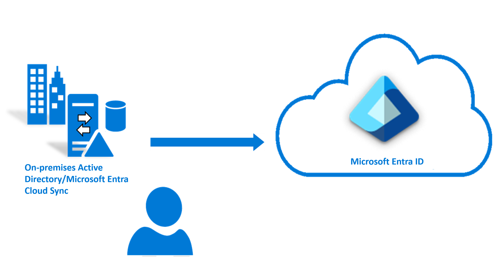
Describe external identities
Today's world is about collaboration, working with people both inside and outside of your organization. That means you'll sometimes need to provide access to your organization's applications or data to external users.
Microsoft Entra External ID combines powerful solutions for working with people outside of your organization. With External ID capabilities, you can allow external identities to securely access your apps and resources. Whether you're working with external partners, consumers, or business customers, users can bring their own identities. These identities can range from corporate or government-issued accounts to social identity providers like Google or Facebook.
Microsoft Entra External ID addresses the scenarios that are encountered when it comes to working with external users.
- Collaborate with business guests
- Secure your apps for consumers and business customers
Also, each of these scenarios suggests a different approach for how an organization configures their Microsoft Entra ID tenant.
There are two ways to configure a tenant, depending on how the organization intends to use the tenant and the resources they want to manage:
- A workforce tenant configuration is for your employees, internal business apps, and other organizational resources. You can invite external business partners and guests to your workforce tenant.
- An external tenant configuration is used exclusively for External ID scenarios where you want to publish apps to consumers or business customers.
Collaborate with business guests
If you want to enable your employees to collaborate with business partners and guests, use External ID for B2B collaboration.
External ID B2B collaboration allows your workforce to collaborate with external business partners.
Using your workforce tenant, you can use B2B collaboration to share your company's applications and services with guests, while maintaining control over your own corporate data. You can invite anyone to sign in to your Microsoft Entra organization using their own credentials so they can access the apps and resources you want to share with them.
Use B2B collaboration when you need to let business guests access your Office 365 apps, software-as-a-service (SaaS) apps, and line-of-business applications. There are no credentials associated with business guests. Instead, they authenticate with their home organization or identity provider, and then your organization checks the user's eligibility for guest collaboration.
Secure your apps for consumers and business customers
If you're an organization or a developer creating consumer apps, use External ID to quickly add authentication and customer identity and access management (CIAM) to your application.
Microsoft Entra External ID includes Microsoft's customer identity and access management (CIAM) solution that includes features like self-service registration, personalized sign-in experiences including single sign-on (SSO) with social and enterprise identities, and customer account management. Because these CIAM capabilities are built into Microsoft Entra ID, you also benefit from platform features like enhanced security, compliance, and scalability.
B2B direct connect
In addition to B2B collaboration, External ID supports B2B direct connect, which creates a mutual trust relationship between two Microsoft Entra organizations. B2B direct connect currently enables the Teams Connect shared channels feature, allowing users from external organizations to seamlessly collaborate for chat, calls, and file sharing. Unlike B2B collaboration users, B2B direct connect users aren't added as guests in your directory; instead, they access shared resources directly from their home tenant.
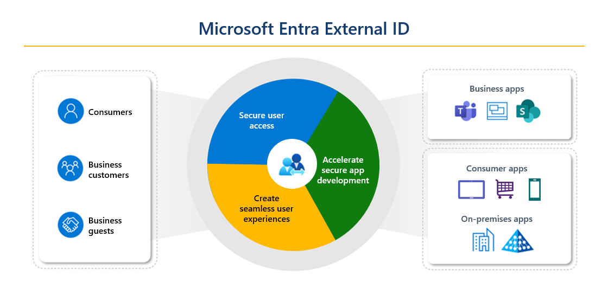
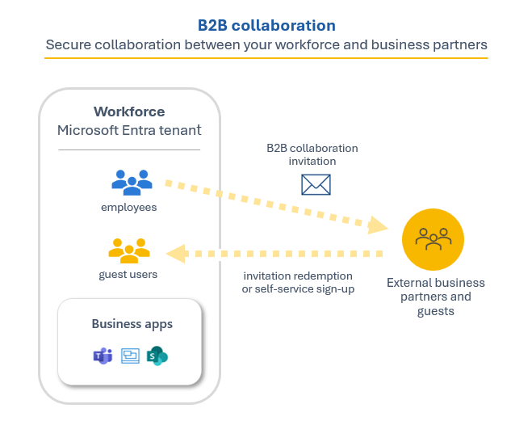
Section Summary
- Microsoft Entra Product Family: Complete identity and network access family — includes Entra ID (core cloud IAM for authentication, SSO, policy enforcement, and access management — every M365/Azure/Dynamics tenant gets one automatically), Entra External ID (B2B/B2C/CIAM), Entra Domain Services (managed LDAP/Kerberos/NTLM for legacy app lift-and-shift without managing DCs), Entra Verified ID (verifiable credentials), and Global Secure Access (SSE for network security)
- Identity Types: Users — human identities (employees as members, external partners as guests), each with a UPN and object ID. Service Principals — application/service identity for automated tools and scripts, authenticated via secret or certificate (equivalent to AD service account). Managed Identities — Azure-managed identities for Azure resources with no secret management needed; system-assigned (tied to one resource) or user-assigned (standalone, shared). Device Identities — registered or joined devices for Conditional Access. Groups — security and Microsoft 365 groups for RBAC and licensing. Agent IDs — new identity type for AI agents acting autonomously with dedicated lifecycle management
- Hybrid Identity: Connects on-premises AD DS to Entra ID via Microsoft Entra Cloud Sync (cloud-based agent, future direction, replaces Entra Connect Sync). Authentication options: Password Hash Sync (PHS) — recommended, syncs password hashes, no on-prem dependency, enables leaked credential detection; Pass-through Authentication (PTA) — validates passwords on-prem via agent; Federation — uses AD FS or third-party IdP for full identity federation. Seamless SSO — automatic sign-in for domain-joined devices on corporate network
- Tenant Configuration: Two tenant types — Workforce tenant (for employees, internal apps, organizational resources, can invite B2B guests) and External tenant (for CIAM scenarios publishing apps to consumers or business customers)
- External Identities — B2B Collaboration: Share apps and services with external business guests who authenticate using their own home organization credentials — no new credentials needed. Guests sign in with their home IdP; your organization checks eligibility for guest collaboration. Supports Office 365 apps, SaaS apps, and line-of-business applications. B2B direct connect creates mutual trust between two Entra organizations for Teams Connect shared channels — users access shared resources directly from their home tenant without being added as guests
- External Identities — B2C / CIAM: Microsoft Entra External ID provides customer identity and access management for consumer-facing apps — self-service registration, personalized sign-in (SSO with social and enterprise identities), customer account management. Built on Entra ID for enhanced security, compliance, and scalability
- Microsoft Entra Agent ID: Purpose-built identity type for AI agents — provides dedicated identity, governance, and lifecycle management for AI agents acting autonomously. Enables organizations to control what AI agents can access, for how long, and under what conditions, with full audit trail
Key Concepts
Microsoft Entra Product Family
- Microsoft Entra: Complete product family for identity and network access — includes Entra ID (IAM), Entra External ID (B2B/B2C), Entra Domain Services (legacy LDAP/Kerberos in cloud), Entra Verified ID (verifiable credentials), and Global Secure Access (SSE for network).
- Microsoft Entra ID: Core cloud-based IAM service providing authentication, SSO, policy enforcement, and access management for users, devices, apps, and resources. Every M365/Azure/Dynamics tenant automatically gets an Entra tenant.
- Entra Domain Services: Managed domain services (LDAP, Kerberos, NTLM) for lifting legacy applications to the cloud without deploying domain controllers. Join VMs to the managed domain without managing DCs.
Identity Types
- Users: Human identities — employees (members) and external partners/guests (B2B collaboration users). Each has a user principal name (UPN) and object ID.
- Service Principals: Application/service identity in Entra ID. Used for automated tools, scripts, and apps to authenticate with a secret or certificate. Equivalent to a "service account" in AD.
- Managed Identities: Azure-managed identities for Azure resources — no secret management needed. System-assigned (tied to one resource) or User-assigned (standalone, shared across resources).
- Device Identities: Each device registered/joined to Entra gets an identity for Conditional Access, device compliance, and MDM policies via Intune.
- Workload Identities: Service principals, managed identities, and apps — non-human identities needing authentication and authorization for cloud workloads.
- Entra Agent ID: First-class identity type for AI agents — dedicated sign-in, Conditional Access, lifecycle management, and governance, so autonomous agents don't use shared human accounts.
Hybrid Identity
- Microsoft Entra Connect: On-premises sync engine — syncs AD DS objects to Entra ID. Supports Password Hash Sync (recommended default), Pass-through Authentication, and Federation. Requires a server on-premises.
- Entra Cloud Sync: Microsoft's recommended future direction — lightweight cloud provisioning agent using SCIM. No on-prem server needed, simpler deployment, supports more source directories.
- Password Hash Sync (PHS): Syncs a salted SHA-256 hash of the on-prem password to Entra ID. If password changes on-prem, the hash updates within minutes. No on-prem dependency for authentication.
- Pass-through Authentication (PTA): Entra ID validates passwords against on-prem AD in real-time via an agent. No password stored in the cloud. Requires connectivity to on-prem DCs.
- Federation (AD FS): Entra ID offloads authentication to on-prem AD FS. Used for existing on-prem MFA, smart cards, or other custom auth requirements. Most complex to manage.
External Identities
- B2B Collaboration: Invite external users as guests — they authenticate with their own identity provider (Microsoft, Google, SAML/WS-Fed IdP). No external user management needed.
- B2B Direct Connect: Mutual trust between two Entra organizations, enabling Teams Connect shared channels. No guest user objects created — trust is at the org level.
- Entra External ID (B2C): Customer-facing identity platform for consumer apps. Supports social identity providers (Google, Facebook, Apple), local accounts, and custom branded sign-up/sign-in experiences.
- Workforce vs External Tenant: Workforce tenants manage employees and internal apps using Entra ID. External tenants (formerly Azure AD B2C) are built for customer-facing identity scenarios with full customization.
2.2 Authentication Capabilities
Domain 2: Microsoft Entra Capabilities (25-30%)
Module: Describe the authentication capabilities of Microsoft Entra ID
Describe authentication methods
Authentication is the process of verifying a person's identity before granting access to a resource, application, service, device, or network. It's how a system makes sure users are who they say they are when they try to sign in. Microsoft Entra ID supports a wide range of authentication methods that balance security, usability, and deployment needs.
Passwords
Passwords are the most common form of authentication, but they have many problems, especially when used as the only form of authentication. If they're easy enough to remember, they're easy for a hacker to compromise. Strong passwords that aren't easily hacked are difficult to remember and affect user productivity when forgotten. The use of passwords should be supplemented or replaced by more secure authentication methods available in Microsoft Entra ID.
Phone
Microsoft Entra ID supports two options for phone-based authentication. Microsoft recommends that users move away from using text messages or voice calls for multifactor authentication in favor of more modern methods like Microsoft Authenticator or passkeys.
- SMS-based authentication. Short message service (SMS) used in mobile device text messaging can be used as a primary form of authentication. With SMS-based sign-in, users enter their registered mobile phone number, receive a text message with a verification code, and enter that code in the sign-in interface. SMS can also serve as a secondary form of authentication during self-service password reset (SSPR) or Microsoft Entra multifactor authentication.
- Voice call verification. Users can use voice calls as a secondary form of authentication to verify their identity during SSPR or Microsoft Entra multifactor authentication. An automated voice call is made to the phone number registered by the user, and the user is prompted to press # on their keypad to complete the sign-in process. Voice calls aren't supported as a primary form of authentication in Microsoft Entra ID.
OATH
OATH (Open Authentication) is an open standard that specifies how time-based, one-time password (TOTP) codes are generated. OATH TOTP can be implemented using either software or hardware to generate the codes.
- Software OATH tokens are typically applications such as the Microsoft Authenticator app and other authenticator apps. Microsoft Entra ID generates the secret key, or seed, that's input into the app and used to generate each OTP.
- OATH TOTP hardware tokens are small hardware devices that look like a key fob and display a code that refreshes every 30 or 60 seconds, providing a second factor for authentication.
Software and hardware OATH tokens are supported as secondary forms of authentication in Microsoft Entra ID, to verify an identity during SSPR or Microsoft Entra multifactor authentication.
Other authentication methods
Microsoft Entra ID supports several other authentication methods for specific scenarios:
- Temporary Access Pass (TAP). A time-limited passcode issued by an administrator that can be used to sign in and register other authentication methods, including passwordless methods. TAP is useful for onboarding new users or helping users recover access when they've lost their credentials.
- QR code authentication. Designed primarily for frontline workers on shared devices, QR code authentication allows users to sign in by scanning a unique QR code (which can be printed on a badge) and entering a numeric PIN, eliminating the need to type complex usernames and passwords.
- Email one-time passcode (OTP). A verification code sent to a user's email address, used as a secondary form of authentication during self-service password reset (SSPR). It can also be configured for guest user sign-in.
- Platform Credential for macOS. A phishing-resistant credential backed by the device's Secure Enclave that enables passwordless sign-in and single sign-on (SSO) across apps on macOS devices, using Touch ID or a password to unlock the credential.
- Authenticator Lite. A capability embedded in familiar apps like Outlook mobile that allows users to complete MFA using push notifications or time-based one-time passcodes without needing the separate Microsoft Authenticator app.
- External authentication methods. Enable organizations to integrate a non-Microsoft multifactor authentication provider (such as Duo Security or RSA SecurID) with Microsoft Entra ID, so users can satisfy MFA requirements using an authentication solution the organization already has in place.
Passwordless authentication
The end-goal for many organizations is to remove the use of passwords as part of sign-in events. Passwordless methods replace passwords with something you have, combined with something you are or something you know, providing a more secure and convenient experience.
Microsoft Entra ID provides the following passwordless authentication options.
Windows Hello for Business
Windows Hello for Business replaces passwords with strong two-factor authentication on devices, combining a key or certificate tied to a device with something the person knows (a PIN) or something the person is (biometrics). The gesture triggers the use of a private key to cryptographically sign data sent to the identity provider, which verifies the user's identity.
Windows Hello for Business helps protect against credential theft because an attacker must have both the device and the biometric info or PIN, making it more difficult to gain access without the employee's knowledge.
Passkeys (FIDO2)
Passkeys based on the FIDO2 (Fast Identity Online) standard are a phishing-resistant passwordless authentication method. Passkeys use public key cryptography, where a public-private key pair is created during registration. The private key is stored securely and the public key is registered with Microsoft Entra ID.
There are two types of passkeys:
- Device-bound passkeys—the private key is stored on a single physical device and never leaves it. Examples include FIDO2 security keys (USB, Bluetooth, or NFC devices) and passkeys in Microsoft Authenticator.
- Synced passkeys—the private key is synced across a user's devices through a cloud passkey provider, like Apple iCloud Keychain or Google Password Manager.
Passkeys are phishing resistant because they're bound to the specific site where they were registered. A passkey created for a legitimate sign-in page can't be used on a fraudulent look-alike site, even one created with AI-powered phishing toolkits.
Microsoft Authenticator
The Microsoft Authenticator app provides a versatile, free authentication solution for iOS and Android devices. It supports passkeys, passwordless sign-in, and multifactor authentication.
- Passkey sign-in. Users can register a device-bound passkey in the app, enabling phishing-resistant authentication using their biometric or device PIN.
- Passwordless sign-in. Instead of entering a password, users see a number on the sign-in screen, match it in their Authenticator app, and confirm using their biometric or PIN.
- Push notification with number matching. When used as a secondary factor for MFA or SSPR, the app sends a push notification. The user must enter the number shown on the sign-in screen into the Authenticator app to approve the request.
- OATH verification codes. The app can also generate OATH verification codes as another form of authentication.
Certificate-based authentication
Microsoft Entra certificate-based authentication (CBA) enables users to authenticate directly with X.509 certificates against their Microsoft Entra identity. CBA eliminates the need for federated infrastructure like Active Directory Federation Services (AD FS), providing a simplified, cloud-native approach. CBA is supported as a primary form of passwordless authentication and, when configured, as a multifactor authentication method.
Phishing-resistant authentication
With the rise of AI-driven cyberattacks, traditional MFA methods like SMS or email one-time passwords are increasingly vulnerable to remote phishing, where attackers use social engineering and AI-driven tools to steal identity credentials without physical access to a user's device.
Microsoft recommends phishing-resistant authentication methods for the most secure sign-in experience. These methods use public key cryptography where the credential is bound to the specific website origin (domain) where it was registered. Because the authenticator verifies the requesting site's domain before responding, the credential can't be used on a fraudulent look-alike site, replayed, or shared with malicious actors. Phishing-resistant methods in Microsoft Entra ID include:
- Windows Hello for Business
- Platform Credential for macOS
- Synced passkeys (FIDO2)
- FIDO2 security keys
- Passkeys in Microsoft Authenticator
- Certificate-based authentication (CBA)
Authentication methods capability summary
The following table summarizes which authentication methods can be used for each purpose in Microsoft Entra ID. Understanding these capabilities is important for exam scenarios that ask which method supports a specific scenario.
| Method | Primary Auth | MFA (Secondary) | SSPR | Account Recovery |
|---|---|---|---|---|
| Password | ✓ | — | — | — |
| Windows Hello for Business | ✓ | ✓* | — | — |
| Passkey (FIDO2) / FIDO2 security key | ✓ | ✓ | — | — |
| Synced passkey (FIDO2) | ✓ | ✓ | — | — |
| Passkey in Microsoft Authenticator | ✓ | ✓ | — | — |
| Microsoft Authenticator (passwordless) | ✓ | — | — | — |
| Microsoft Authenticator (push notification) | — | ✓ | ✓ | — |
| Certificate-based authentication (CBA) | ✓ | ✓ | — | — |
| Temporary Access Pass (TAP) | ✓ | ✓ | — | — |
| Platform Credential for macOS | ✓ | ✓ | — | — |
| SMS sign-in | ✓ | ✓ | ✓ | — |
| Voice call | — | ✓ | ✓ | — |
| QR code authentication | ✓ | — | — | — |
| Email one-time passcode (OTP) | — | SSPR only | ✓ | — |
| Software OATH tokens | — | ✓ | ✓ | — |
| Hardware OATH tokens | — | ✓ | ✓ | — |
| Authenticator Lite | — | ✓ | — | — |
| External authentication methods | — | ✓ | — | — |
| Verified ID (Face Check) | — | — | — | ✓ |
* Windows Hello for Business can serve as step-up MFA credential if user is also enabled for passkey (FIDO2) and has a passkey registered. Verified ID is an identity verification capability for account recovery — it cannot be used for sign-in, MFA, or SSPR.
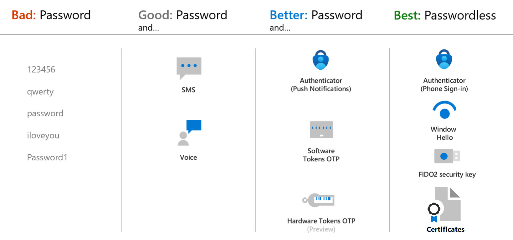
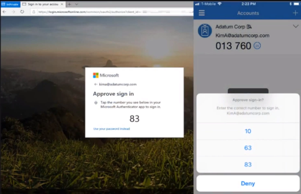
Describe multifactor authentication
Multifactor authentication is a process in which users are prompted during the sign-in process for another form of identification. If you only use a password to authenticate a user, it leaves an insecure vector for attack. If the password is weak or exposed elsewhere, an attacker could be using it to gain access. When you require a second form of authentication, security is increased because this additional factor isn't something that's easy for an attacker to obtain or duplicate.
Microsoft Entra multifactor authentication works by requiring two or more of the following authentication methods:
- Something you know—typically a password or PIN and
- Something you have—such as a trusted device that's not easily duplicated, like a phone or hardware key or
- Something you are—biometrics like a fingerprint or face scan.
Multifactor authentication verification prompts are part of the Microsoft Entra sign-in event. Microsoft Entra ID automatically requests and processes multifactor authentication, without you making any changes to your applications or services. When a user signs in, they receive a multifactor authentication prompt and can choose from one of the other verification forms that they've registered. An administrator can require certain verification methods, or the user can access their MyAccount to edit or add verification methods.
Available verification methods
The following forms of verification can be used with Microsoft Entra multifactor authentication:
- Microsoft Authenticator
- Authenticator Lite (in Outlook)
- Windows Hello for Business
- Passkey (FIDO2)
- Passkey in Microsoft Authenticator
- Certificate-based authentication (when configured for multifactor authentication)
- External authentication methods
- Temporary Access Pass (TAP)
- OATH hardware token
- OATH software token
- Short message service (SMS)
- Voice call
Security defaults and multifactor authentication
Security defaults are a set of basic identity security mechanisms recommended by Microsoft. When enabled, these recommendations are automatically enforced in your organization. The goal is to ensure that all organizations have a basic level of security enabled at no extra cost.
Based on Microsoft learnings, more than 99.9% of common identity-related attacks are stopped by using multifactor authentication and blocking legacy authentication. Security defaults include:
- Requiring all users to register for Microsoft Entra multifactor authentication.
- Requiring administrators to do multifactor authentication.
- Requiring all users to complete multifactor authentication when needed.
- Blocking legacy authentication protocols.
- Protecting privileged activities like access to the Azure portal.
Security defaults are a great option for organizations that want to increase their security posture but don't know where to start, or for organizations using the free tier of Microsoft Entra ID licensing. Security defaults are enabled by default on new tenants.
When users sign in and are prompted to perform multifactor authentication under security defaults, they see a screen providing them with a number to enter in the Microsoft Authenticator app. This number matching measure helps prevent users from falling for MFA fatigue attacks.
Conditional Access and multifactor authentication
For organizations with more complex security requirements, Microsoft Entra Conditional Access policies provide more granular control. Conditional Access allows administrators to define policies that require MFA based on specific conditions, such as user location, device state, risk level, or the sensitivity of the application being accessed. For example, a policy might allow regular sign-in when the user is on a corporate network but require extra verification when the user is remote or on a personal device. Conditional Access requires Microsoft Entra ID P1 or P2 licenses.
Describe self-service password reset
Self-service password reset (SSPR) is a feature of Microsoft Entra ID that allows users to change or reset their password, without administrator or help desk involvement. If a user's account is locked or they forget their password, they can follow a prompt to reset it and get back to work. This ability reduces help desk calls and loss of productivity when a user can't sign in to their device or an application. SSPR also includes robust audit logs available through an API, enabling data to be imported to a security information and event monitoring (SIEM) system.
How self-service password reset works
When a user accesses the SSPR portal, the Microsoft Entra platform performs several checks: it verifies the user's account is valid and SSPR is enabled, confirms the user registered the required authentication methods, and determines where the user's password is managed. If all checks pass, the user is guided through the process to reset or change their password.
To use SSPR, users must be:
- Assigned a Microsoft Entra ID license.
- Enabled for SSPR by an administrator.
- Registered with the authentication methods they want to use. Two or more authentication methods are recommended in case one is unavailable.
Authentication methods for SSPR
When enabled for SSPR, users must register at least one authentication method. Choosing two or more methods is recommended so users have flexibility if one method becomes unavailable. The following authentication methods are available for SSPR:
- Microsoft Authenticator push notifications
- Software OATH tokens
- Hardware OATH tokens (preview)
- Short message service (SMS)
- Voice call
- Email OTP
- Security questions (retiring March 2027)
Administrators configure how many methods are required to reset or unlock a password—one or two. When Microsoft Authenticator is used as a method and only one method is required, only verification code is available. When two methods are required, users can use notification or verification code alongside other enabled methods.
By default, administrator accounts are enabled for SSPR and are required to use two authentication methods to reset their password through a strong two-gate policy. Administrators can't use security questions.
Registration and reconfirmation
Administrators can require users to register for SSPR when they sign in to any application using modern authentication or a web browser, including Microsoft 365, the Microsoft Entra admin center, and federated or custom applications. Users who haven't registered are prompted at each sign-in until they complete registration.
Administrators can also require users to reconfirm their authentication information after a set period (0 to 730 days), ensuring that registered methods remain current and available when needed.
Notifications
SSPR can send email notifications to keep users and administrators informed about password events:
- Users receive an email when their password is reset, sent to their primary and alternate email addresses stored in Microsoft Entra ID.
- Global administrators receive an email when another administrator resets their password using SSPR, providing extra awareness for privileged account activity.
On-premises integration and password writeback
In hybrid environments, Microsoft Entra Connect cloud sync can write password changes from Microsoft Entra ID back to an on-premises Active Directory. When password writeback is enabled, users who are federated, using pass-through authentication, or using password hash synchronization can reset their passwords and have the new password written back on-premises without delay.
Administrators can also allow users to unlock their on-premises accounts without resetting their password, separating the unlock and reset operations for greater flexibility.
If a non-Microsoft password filter is in use for on-premises Active Directory, it must be configured to apply during admin-initiated password reset scenarios to work correctly with SSPR. Microsoft Entra password protection for Active Directory Domain Services is supported by default.
Account recovery
SSPR addresses scenarios where users forget their password but retain access to at least one registered authentication method. However, situations arise where users lose access to all their authentication methods—for example, when a device is lost and backup methods are unavailable. In these total lockout scenarios, SSPR isn't sufficient.
Microsoft Entra ID account recovery addresses these critical scenarios by enabling users to regain access through a comprehensive identity verification process. Unlike SSPR, which relies on preregistered methods, account recovery focuses on re-establishing trust in the user's identity when all authentication methods are unavailable.
The following table compares SSPR and account recovery:
Account recovery uses identity verification providers (IDV) available through the Microsoft Security Store, offering coverage across 192 countries/regions and remote verification for most government-issued ID documents. Microsoft Entra Verified ID with Face Check, powered by Azure AI services, provides high-assurance identity verification by matching a user's real-time selfie to the photo on their government-issued ID. Only the match result is shared—no sensitive identity data—which preserves user privacy while providing strong identity assurance.
Describe password protection and management
Password protection is a feature of Microsoft Entra ID that reduces the risk of users setting weak passwords. Microsoft Entra password protection detects and blocks known weak passwords and their variants, and can also block other weak terms that are specific to your organization.
With Microsoft Entra password protection, default global banned password lists are automatically applied to all users in a Microsoft Entra tenant. To support your own business and security needs, you can define entries in a custom banned password list. When users change or reset their passwords, these lists are checked to enforce the use of strong passwords.
You should use other features like Microsoft Entra multifactor authentication, not just rely on strong passwords enforced by Microsoft Entra password protection. Passwords alone, even strong ones, aren't as secure as multiple layers of security.
Global banned password list
The Microsoft Entra ID Protection team constantly analyzes security telemetry data looking for commonly used weak or compromised passwords. When weak terms are found, they're added to the global banned password list. The contents of the global banned password list aren't based on any external data source but on the results of Microsoft Entra security telemetry and analysis from real-world password spray attacks.
The global banned password list is automatically applied to all users in a Microsoft Entra tenant. There's nothing to enable or configure, and it can't be disabled. When users change or reset their password, the new password is validated against this list. The password validation algorithm uses smart fuzzy-matching techniques to efficiently detect and block millions of common weak passwords and their variations.
Custom banned password lists
Organizations can create custom banned password lists to add terms specific to their business. Terms added to the custom banned password list should focus on organizational-specific terms such as:
- Brand names
- Product names
- Locations, such as company headquarters
- Company-specific internal terms
- Abbreviations that have specific company meaning
When terms are added to the custom banned password list, they're combined with the global banned password list. Password change or reset events are then validated against the combined set. The custom banned password list is limited to a maximum of 1,000 terms. It isn't designed for blocking extremely large lists of passwords—instead, adding key base terms is more effective because the password validation algorithm automatically blocks weak variants and combinations.
How passwords are evaluated
When a user changes or resets their password, the new password is checked for strength by validating it against the combined global and custom banned password lists. Even if a user's password contains a banned term, the password might be accepted if the overall password is strong enough. The evaluation follows these steps:
- Normalization—the password is converted to lowercase, and common character substitutions are applied (for example, "@" to "a", "$" to "s", "1" to "l", "0" to "o"). This maps a small set of banned base terms to a much larger set of potentially weak passwords.
- Fuzzy matching—the normalized password is compared against banned passwords using an edit distance of one. This means passwords that differ from a banned term by a single character substitution, insertion, or deletion are detected and rejected.
- Substring matching—the system checks the normalized password for the user's first and last name and the tenant name, preventing the inclusion of easily guessable personal or organizational identifiers. Substring matching is only enforced for terms that are at least four characters long.
- Score calculation—the system assigns one point for each banned password found in the normalized password and one point for each remaining character. A password must score at least five points to be accepted. This scoring approach means that longer, more complex passwords can be accepted even if they contain a banned term, as long as the overall password is sufficiently strong.
Protecting against password spray
Password spray attacks are one of the most common techniques used by attackers. Rather than targeting a single account with many password attempts, the attacker submits a few of the most commonly used weak passwords against many accounts. This approach avoids triggering account lockout thresholds while rapidly searching for compromised accounts. As these attacks become more sophisticated—with AI enabling attackers to generate and test password variations at scale—strong password protection becomes increasingly important.
Microsoft Entra password protection efficiently blocks all known weak passwords likely to be used in password spray attacks. The global banned password list is built from real-world security telemetry on actual password spray attacks, ensuring it targets the passwords attackers are most likely to use.
On-premises integration
For organizations with hybrid identity models that include on-premises Active Directory Domain Services (AD DS), Microsoft Entra password protection can be extended to the on-premises environment. Two components are installed on on-premises servers:
- Proxy service—runs on a domain-joined machine and forwards password policy download requests from domain controllers to Microsoft Entra ID.
- DC Agent—installed on domain controllers to receive password validation requests and process them using the current password policy downloaded from Microsoft Entra ID.
The on-premises deployment uses the same global and custom banned password lists stored in Microsoft Entra ID and performs the same validation checks for on-premises password changes. Domain controllers never need to communicate directly with the internet—all communication goes through the proxy service. No AD DS schema changes are required, and any supported domain or forest functional level can be used.
The DC Agent service requests a new policy at startup and checks the age of the locally cached policy hourly. If the policy is older than one hour, a new policy is downloaded through the proxy service. Microsoft Entra password protection acts as a supplement to existing AD DS password policies, not a replacement—all password validation components must agree before a password is accepted.
Section Summary
- Authentication Methods in Entra ID: Range from legacy (passwords, SMS, voice calls) to modern passwordless. OATH standard generates TOTP codes via software tokens (Microsoft Authenticator) or hardware tokens (key fob devices refreshing every 30-60s). Temporary Access Pass (TAP) — time-limited passcode issued by admins for onboarding new users, recovering access, or registering passwordless methods. QR code authentication — frontline workers on shared devices scan a printed QR code and enter a PIN. Email OTP — verification code for SSPR or guest sign-in. Platform Credential for macOS — phishing-resistant credential backed by Secure Enclave, uses Touch ID or PIN. Authenticator Lite — MFA built into Outlook mobile without requiring separate Authenticator app. External auth methods — integrate non-Microsoft MFA providers like Duo Security or RSA SecurID
- Passwordless Authentication: Replaces passwords with something you have + something you know/are. Windows Hello for Business — key/certificate tied to TPM device, unlocked by PIN or biometric, cryptographically signs data sent to IdP. Passkeys (FIDO2) — public-private key pair; two types: device-bound (private key stays on single device — FIDO2 security keys, passkeys in Authenticator) and synced (private key roams via iCloud Keychain or Google Password Manager). Passkeys are phishing-resistant because they're bound to the specific site origin — can't be used on look-alike sites. Microsoft Authenticator — supports passkeys, passwordless sign-in (match a number on-screen), push notifications with number matching (prevents MFA fatigue), OATH verification codes. Certificate-based authentication (CBA) — X.509 certificates authenticate directly against Entra ID, eliminates need for federated infrastructure like AD FS; can serve as primary passwordless auth or MFA method
- Phishing-Resistant Methods: Use public key cryptography bound to the specific website domain where registered. The authenticator verifies the requesting site's domain before responding — credential can't be replayed on fraudulent sites or shared. Methods include Windows Hello for Business, Platform Credential for macOS, synced passkeys, FIDO2 security keys, passkeys in Authenticator, and CBA. Increasingly important with AI-driven phishing attacks
- Multifactor Authentication (MFA): Requires ≥2 factors from different categories — something you know (password/PIN), something you have (trusted device/hardware key), something you are (biometric). Blocks over 99.9% of identity-related attacks. Available verification methods: Microsoft Authenticator, Authenticator Lite, Windows Hello, Passkey (FIDO2), CBA, external methods, TAP, OATH hardware/software tokens, SMS, voice call. Security Defaults — Microsoft's recommended baseline protection (free tier), auto-enabled on new tenants, requires all users to register for MFA, requires admin MFA, blocks legacy authentication, protects privileged activities. Conditional Access — granular MFA policies based on location, device state, risk level, or application sensitivity (requires Entra ID P1/P2)
- Self-Service Password Reset (SSPR): Users reset/change their own passwords without help desk involvement. Requirements: Entra ID license, enabled by admin, registered authentication methods (2+ recommended). Available methods: Microsoft Authenticator push notifications, software/hardware OATH tokens, SMS, voice call, Email OTP, security questions (retiring March 2027). Admins configure whether 1 or 2 methods are required. Administrator accounts are enabled for SSPR by default, required to use 2 methods, and security questions are blocked for admins. Registration — admins can require users to register when signing in to any modern auth app; unregistered users prompted at each sign-in. Admins can enforce reconfirmation after 0-730 days. Notifications — users emailed when password resets; global admins notified when another admin resets via SSPR. Password writeback — in hybrid environments, Entra Cloud Sync writes password changes back to on-premises AD DS; federated/PTA/PHS users get new passwords written back without delay. Account recovery — when all auth methods are lost, identity verification via IDV providers (192 countries/regions) or Entra Verified ID with Face Check for high-assurance identity proofing
- Password Protection: Prevents weak passwords through two overlapping mechanisms. Global banned password list — automatically applied to all tenants, built from Microsoft's security telemetry analysis of real-world password spray attacks, can't be disabled. Custom banned password list — org-specific terms (brand names, products, locations, internal terms), max 1,000 terms, combined with global list. Password evaluation: Normalization converts to lowercase and applies common substitutions (@→a, $→s, 1→l, 0→o). Fuzzy matching — compares normalized password with edit distance of one (single char substitution, insertion, or deletion). Substring matching — checks for user's first/last name and tenant name (minimum 4 characters). Score calculation — 1 point per banned term found + 1 point per remaining character; must score ≥5 to be accepted. This means longer passwords can contain banned terms if overall strength is sufficient. On-premises integration — extends protection to on-prem AD DS via two components: Proxy Service (forwards policy from Entra to domain controllers) and DC Agent (on domain controllers, validates passwords, caches policy for 1 hour). No AD DS schema changes needed, all validation components must agree before password is accepted
Key Concepts
Passwordless Authentication Methods
- Windows Hello for Business: TPM-bound key or certificate combined with PIN or biometric (face/fingerprint). Device-bound — the private key never leaves the device. Hardware-bound, phishing-resistant.
- Passkeys (FIDO2): Fast Identity Online 2.0 — public key cryptography, phishing-resistant, bound to specific site origin. Available as device-bound (hardware key, can't be copied) or synced (roams between user's devices via iCloud/Google/Entra).
- Microsoft Authenticator App: Mobile app supporting passwordless sign-in, push notifications with number matching (user sees number on screen, types it in app), time-based OATH codes, and passkey management.
- Certificate-Based Authentication (CBA): X.509 certificates authenticate directly against Entra ID — eliminates need for AD FS. Supports external PKI, smart cards, and managed certificates.
- Temporary Access Pass (TAP): Time-limited passcode issued by admins for onboarding new users (no password yet), password recovery, or registering passwordless methods.
MFA & Password Management
- Multifactor Authentication (MFA): Requires ≥2 factors from different categories (knowledge + possession + inherence). Blocks over 99.9% of identity attacks. Enforced via Security Defaults (baseline) or Conditional Access (granular).
- Security Defaults: Microsoft-enforced baseline protection for tenants without P1/P2 licensing — auto-enrolls all users in MFA, requires admin MFA, blocks legacy authentication. One toggle on/off.
- Self-Service Password Reset (SSPR): Users reset their own passwords after verifying identity (email, phone, security questions). Reduces help desk load. Requires P1 licensing.
- Password Protection: Global banned list (Microsoft's constantly updated list of common breached passwords) always active. Custom banned list (org-specific, e.g., company name, products). Extends to on-prem AD DS via password protection agent.
- Phishing-Resistant Methods: FIDO2 passkeys, CBA, and Windows Hello use public key cryptography bound to the specific site origin — stolen credentials can't be used on fraudulent sites.
2.3 Access Management
Domain 2: Microsoft Entra Capabilities (25-30%)
Module: Describe the access management capabilities of Microsoft Entra ID
Describe Conditional Access
Conditional Access is a feature of Microsoft Entra ID that provides an extra layer of security before allowing authenticated users to access data or other assets. It's Microsoft's Zero Trust policy engine, taking signals from various sources into account when enforcing policy decisions. Conditional Access is implemented through policies that are created and managed in Microsoft Entra ID. At their simplest, Conditional Access policies are if-then statements: if a user wants to access a resource, then they must complete an action. For example, if a user wants to access Microsoft 365, then they must perform multifactor authentication.
Important
Conditional Access policies are enforced after first-factor authentication is completed. Conditional Access isn't intended to be an organization's frontline of defense for scenarios like denial-of-service (DoS) attacks, but it can use signals from these events to determine access.
Conditional Access policy components
A Conditional Access policy in Microsoft Entra ID consists of two components: assignments and access controls.
Assignments
Assignments define the who, what, where, and when of a Conditional Access policy. All assignments are logically ANDed—if more than one assignment is configured, all must be satisfied to trigger the policy.
- Users. Policies can target all users, specific users and groups, directory roles, external guests, and workload identities. Support for agent identities extends Zero Trust principles to AI workloads.
- Target resources. Administrators can target cloud applications (including Microsoft 365 and other Microsoft Entra registered applications), user actions (such as registering security information or registering/joining devices), Global Secure Access traffic profiles, or authentication context to further secure specific data and actions in applications.
- Network. Controls user access based on the user's network or physical location. Administrators can include or exclude trusted networks, trusted IP address ranges, named locations, and compliant networks made up of users and devices that comply with the organization's security policies.
- Conditions. Multiple conditions can be combined for fine-grained policies:
- Sign-in risk and user risk—integration with Microsoft Entra ID Protection identifies suspicious sign-in activity or compromised accounts and triggers additional verification requirements.
- Insider risk—incorporates risk signals from Microsoft Purview adaptive protection into policy decisions.
- Device platform—targets policies based on the operating system running on the device.
- Client apps—the software used to access cloud apps, including browsers, mobile apps, and desktop clients.
- Filters for devices—targets specific devices based on their attributes, such as privileged access workstations.
Access controls
Access controls determine how a Conditional Access policy is enforced once assignments are satisfied. Common decisions include:
- Block access—the most restrictive decision, preventing access under the specified conditions.
- Grant access—administrators can grant access without additional controls, or require one or more of the following:
- Require multifactor authentication
- Require authentication strength
- Require the device to be marked as compliant
- Require a Microsoft Entra hybrid joined device
- Require an approved client app or app protection policy
- Require a password change
- Require terms of use
- Session controls—enable limited experiences within specific cloud applications. For example, Conditional Access App Control uses signals from Microsoft Defender for Cloud Apps to block download, cut, copy, and print of sensitive documents, or to require labeling of sensitive files. Other session controls include sign-in frequency and application-enforced restrictions.
Authentication strengths
Authentication strength is a Conditional Access grant control that specifies which combinations of authentication methods users can use to access a resource. Administrators can choose from three built-in authentication strengths or create custom strengths:
- Multifactor authentication strength—allows all combinations that satisfy MFA requirements, including a password combined with a secondary factor such as a text message, voice call, push notification, or software/hardware OATH token.
- Passwordless MFA strength—limits access to authentication methods that satisfy MFA without requiring a password, such as Microsoft Authenticator (phone sign-in), FIDO2 security keys, Windows Hello for Business, or platform credentials.
- Phishing-resistant MFA strength—restricts access to methods that require an interaction between the authentication method and the sign-in surface, including Windows Hello for Business, FIDO2 security keys, and certificate-based authentication (multifactor).
Authentication strengths allow administrators to enforce stronger authentication for sensitive resources while permitting less restrictive methods for everyday access.
Protecting AI services
As organizations adopt generative AI services like Microsoft 365 Copilot and Microsoft Security Copilot, Conditional Access policies can protect these services from misuse and unauthorized access. Administrators can create policies that:
- Require users of generative AI services to complete phishing-resistant MFA.
- Require access from a compliant device when insider risk is moderate.
- Block access to AI services when insider risk is elevated.
Licensing
Conditional Access requires Microsoft Entra ID P1 or P2 licenses. Organizations using the free tier of Microsoft Entra ID can use security defaults to get a baseline level of MFA protection.
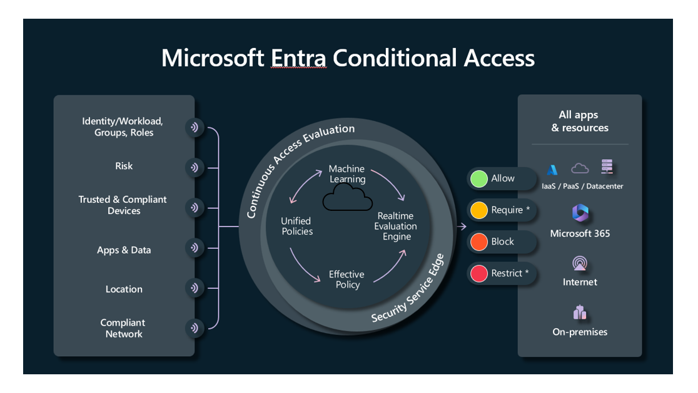
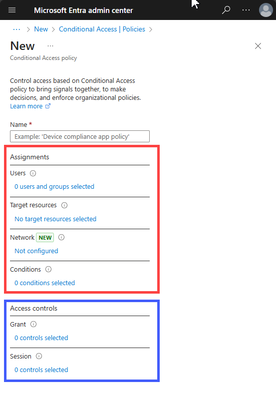
Describe Global Secure Access
Global Secure Access is Microsoft's Security Service Edge (SSE) solution, built on Zero Trust principles of verifying explicitly, using least privilege, and assuming breach. It combines Microsoft Entra Internet Access, Microsoft Entra Internet Access for Microsoft Services, and Microsoft Entra Private Access—together with Microsoft Defender for Cloud Apps—to converge network, identity, and endpoint access controls so organizations can secure access to any app or resource, from any location, device, or identity.
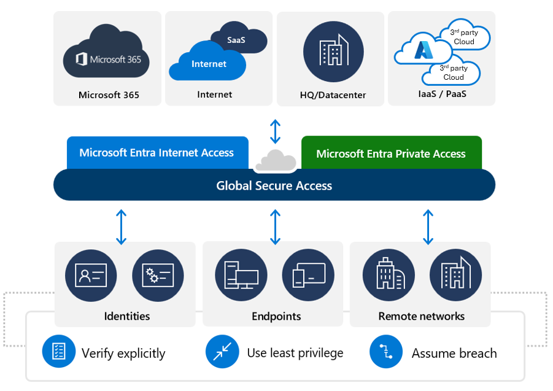
SSE helps organizations address security challenges such as:
- Reducing the risk of lateral movement through a compromised VPN tunnel.
- Putting a security perimeter around internet-based assets.
- Improving service in remote locations, such as branch offices.
The solution employs a Global Secure Access client that gives organizations control over network traffic at the end-user computing device. Organizations route specific traffic profiles through the service, enabling deep integration with Conditional Access policies and real-time risk assessment across identity, device, location, and applications.
Microsoft Entra Internet Access
Microsoft Entra Internet Access provides an identity-centric Secure Web Gateway (SWG) solution for SaaS applications and other internet traffic. It protects users, devices, and data from internet-based threats with security controls and visibility through traffic logs.
Key features include:
- Web content filtering—regulates access to websites based on their content categories and domain names.
- Universal Conditional Access—applies Conditional Access policies to all internet destinations, even those not federated with Microsoft Entra ID.
- TLS inspection—decrypts and inspects encrypted traffic to detect threats hidden in TLS-encrypted connections.
- Threat intelligence—blocks access to known malicious domains and IP addresses based on Microsoft threat intelligence feeds.
- Prompt injection protection—detects and blocks prompt injection attacks targeting AI services, preventing adversarial inputs from manipulating AI model behavior.
- Universal Continuous Access Evaluation (CAE)—apps and Microsoft Entra constantly communicate to ensure user access is up-to-date. If something changes—like a user's location or a security concern—the system can quickly adjust or block access in near real time.
Microsoft Entra Internet Access requires the Microsoft Entra Suite license or a standalone Microsoft Entra Internet Access license.
Microsoft Entra Internet Access for Microsoft Services
Microsoft Entra Internet Access for Microsoft Services enhances Microsoft Entra ID capabilities with direct connectivity to supported Microsoft services, improving security, performance, and resilience. It uses a prepopulated Microsoft traffic forwarding profile that covers Exchange Online, SharePoint Online, Microsoft Teams, and other Microsoft 365 workloads.
Key features include:
- Compliant network check—uses Conditional Access policies to require that users connect through Global Secure Access before accessing any Microsoft Entra ID–integrated application, protecting against token theft at both the authentication plane and the data plane.
- Universal tenant restrictions—prevents data exfiltration to unauthorized foreign tenants or personal accounts, including anonymous access.
- Source IP restoration—restores the original user IP address in Microsoft Entra ID sign-in logs so that location-based Conditional Access policies and risk detections remain accurate, even though traffic passes through the SSE proxy.
- Enriched Microsoft 365 logs—provides detailed network traffic logs for Microsoft traffic, including enforced policy details.
Microsoft Entra Internet Access for Microsoft Services is included with a Microsoft Entra ID P1 or P2 license, making it available to a broad range of organizations.
Microsoft Entra Private Access
Microsoft Entra Private Access provides users—whether in an office or working remotely—secure access to private, corporate resources. It replaces legacy VPNs with a Zero Trust Network Access (ZTNA) approach that grants per-app access rather than broad network-level connectivity.
Private Access works by creating enterprise applications that serve as containers for private resources. A network connector brokers traffic between the service and the resource a user wants to access. Organizations can configure access two ways:
- Quick Access—administrators define private resources by fully qualified domain name (FQDN), IP address, or IP range and ports, grouping them into a single application with linked Conditional Access policies.
- Per-app Access (Global Secure Access app)—provides a more granular approach where each enterprise application has its own resource definitions, user assignments, and Conditional Access policies, enabling different policies for different resource groups.
- App Discovery—automatically discovers private applications being accessed across the organization, helping administrators identify resources that should be secured through Private Access policies.
Global Secure Access dashboard
Global Secure Access includes a dashboard in the Microsoft Entra admin center that provides visualizations of network traffic acquired by the service. Administrators can monitor users, devices, cross-tenant access, web category filtering, and device status to identify suspicious activity and improve network configurations.
Securing AI workloads with network controls
As organizations deploy AI services that connect to both cloud and on-premises resources, Global Secure Access helps ensure that traffic to and from these services passes through the same identity-aware security controls applied to other enterprise traffic. Conditional Access policies integrated with Global Secure Access traffic profiles can enforce compliant network checks and restrict access based on user risk, device state, and location—extending Zero Trust principles to AI workloads that access sensitive corporate data.
Key AI-specific capabilities include:
- Prompt injection protection—inspects traffic to AI services and blocks adversarial inputs designed to manipulate AI model behavior.
- Shadow AI discovery—identifies unauthorized or unmanaged AI applications being accessed across the organization, helping administrators understand and control AI usage.
- Network controls for agents—applies traffic policies to AI agent workloads, ensuring agent-to-service communication is subject to the same security controls as user traffic.
Describe Microsoft Entra roles and Azure RBAC
Microsoft Entra roles control permissions to manage Microsoft Entra resources. For example, allowing user accounts to be created, or billing information to be viewed. Microsoft Entra ID supports built-in and custom roles.
Managing access using roles is known as role-based access control (RBAC). Microsoft Entra built-in and custom roles are a form of RBAC in that Microsoft Entra roles control access to Microsoft Entra resources. This is referred to as Microsoft Entra RBAC.
Built-in roles
Microsoft Entra ID includes many built-in roles, which are roles with a fixed set of permissions. A few of the most common built-in roles are:
- Global administrator: users with this role have access to all administrative features in Microsoft Entra. The person who signs up for the Microsoft Entra tenant automatically becomes a global administrator.
- User administrator: users with this role can create and manage all aspects of users and groups. This role also includes the ability to manage support tickets and monitor service health.
- Billing administrator: users with this role make purchases, manage subscriptions and support tickets, and monitor service health.
All built-in roles are preconfigured bundles of permissions designed for specific tasks. The fixed set of permissions included in the built-in roles can't be modified.
Custom roles
Although there are many built-in admin roles in Microsoft Entra, custom roles give flexibility when granting access. A custom role definition is a collection of permissions that you choose from a preset list. The list of permissions to choose from are the same permissions used by the built-in roles. The difference is that you get to choose which permissions you want to include in a custom role.
Granting permission using custom Microsoft Entra roles is a two-step process. The first step involves creating a custom role definition, consisting of a collection of permissions that you add from a preset list. Once you've created your custom role definition, the second step is to assign that role to users or groups by creating a role assignment.
A role assignment grants the user the permissions in a role definition, at a specified scope. A scope defines the set of Microsoft Entra resources the role member has access to. A custom role can be assigned at organization-wide scope, meaning the role member has the role permissions over all resources. A custom role can also be assigned at an object scope. An example of an object scope would be a single application. The same role can be assigned to one user over all applications in the organization and then to another user with a scope of only the Contoso Expense Reports app.
Custom roles require a Microsoft Entra ID P1 or P2 license.
Only grant the access users need
It's best practice, and more secure, to grant users the least privilege to get their work done. This means if someone mostly manages users, you should assign the User Administrator role rather than Global Administrator. By assigning least privileges, you limit the damage that could be done with a compromised account.
The principle of least privilege is especially important as organizations adopt AI services that can access and process large amounts of organizational data. Overprivileged accounts that are compromised give attackers—and AI tools operating under those credentials—broader access to sensitive information. Ensuring roles are scoped appropriately helps contain the impact of both human and AI-driven threats.
Categories of Microsoft Entra roles
Available Microsoft 365 services include Microsoft Entra ID, Exchange, SharePoint, Microsoft Defender, Teams, Intune, and many more.
Over time, some Microsoft 365 services, such as Exchange and Intune, have developed their own role-based access control systems (RBAC), just like the Microsoft Entra service has Microsoft Entra roles to control access to Microsoft Entra resources. Other services such as Teams and SharePoint don't have separate role-based access control systems, they use Microsoft Entra roles for their administrative access.
There are three broad categories.
- Microsoft Entra specific roles: These roles grant permissions to manage resources within Microsoft Entra-only. For example, User Administrator, Application Administrator, Groups Administrator all grant permissions to manage resources that live in Microsoft Entra ID.
- Service-specific roles: For major Microsoft 365 services, Microsoft Entra ID includes built-in, service-specific roles that grant permissions to manage features within the service. For example, Microsoft Entra ID includes built-in roles for Exchange Administrator, Intune Administrator, SharePoint Administrator, and Teams Administrator roles that can manage features with their respective services.
- Cross-service roles: There are some roles within Microsoft Entra ID that span services. For example, Microsoft Entra ID has security-related roles, like Security Administrator, that grant access across multiple security services within Microsoft 365. Similarly, the Compliance Administrator role grants access to manage compliance-related settings in the Microsoft Purview portal, Exchange, and other services.
Difference between Microsoft Entra RBAC and Azure RBAC
- Microsoft Entra RBAC - Microsoft Entra roles control access to Microsoft Entra resources such as users, groups, and applications.
- Azure RBAC - Azure roles control access to Azure resources such as virtual machines or storage using Azure Resource Management.
There are different data stores where role definitions and role assignments are stored. Similarly, there are different policy decision points where access checks happen.
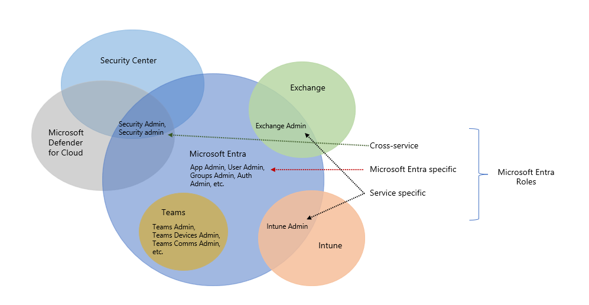
Section Summary
- Conditional Access is Microsoft's Zero Trust policy engine — if-then statements enforced AFTER first-factor authentication. Assignments define the who, what, where, when (all logically ANDed): Users (all users, groups, directory roles, guests, workload identities, agent identities), Target resources (cloud apps, user actions like registering security info, Global Secure Access profiles, authentication context), Network (trusted IPs, named locations, compliant networks), Conditions (sign-in risk + user risk via ID Protection, insider risk via Purview, device platform, client apps, filters for devices). Access controls enforce the policy: Block access, Grant (require MFA, authentication strength, compliant device, hybrid joined device, approved client app, app protection policy, password change, terms of use), Session controls (app-enforced restrictions like block download/cut/copy/print, sign-in frequency). Authentication strengths specify acceptable MFA method combinations: Multifactor (any MFA combination including password + SMS/voice), Passwordless MFA (no password required — Authenticator phone sign-in, FIDO2, Windows Hello), Phishing-resistant MFA (FIDO2, CBA, Windows Hello — requires interaction between auth method and sign-in surface). Requires Entra ID P1/P2 licensing; free tier uses Security Defaults as baseline instead
- Global Secure Access — Microsoft's Security Service Edge (SSE) solution combining identity-centric controls to replace legacy VPN. Uses a Global Secure Access client on user devices to route traffic through the service with deep Conditional Access integration. Comprises three services: Microsoft Entra Internet Access — identity-centric Secure Web Gateway (SWG) for SaaS and internet traffic. Key features: web content filtering by category, Universal Conditional Access (extends CA to non-federated internet destinations), TLS inspection (decrypts and inspects encrypted traffic), threat intelligence (blocks known malicious domains/IPs), prompt injection protection (blocks adversarial AI inputs), Universal Continuous Access Evaluation (near real-time access revocation). Microsoft Entra Internet Access for Microsoft Services — direct connectivity to M365 workloads (Exchange, SharePoint, Teams), included with Entra ID P1/P2. Key features: compliant network check (requires connection through GSA before accessing any Entra-integrated app), universal tenant restrictions (prevents data exfiltration to unauthorized tenants), source IP restoration (preserves original user IP for location-based CA policies and risk detection), enriched M365 logs. Microsoft Entra Private Access — Zero Trust Network Access (ZTNA) replacing VPN with per-app access rather than broad network connectivity. Two access modes: Quick Access (group private resources by FQDN/IP/port into a single app with linked CA policies) and Per-app Access (each enterprise app has own resource definitions, assignments, and CA policies). App Discovery automatically discovers private applications being accessed. AI workload security extends these controls to AI services with shadow AI discovery and agent network controls
- Microsoft Entra Roles and Azure RBAC: Two separate role-based access control systems with different purposes and data stores. Entra RBAC controls permissions to manage Entra directory resources (users, groups, applications). Built-in roles have fixed permission sets — examples: Global Administrator (full access to all admin features), User Administrator (create/manage users and groups, support tickets), Billing Administrator (purchases, subscriptions, support tickets). Fixed permissions can't be modified. Custom roles allow selecting specific permissions from the preset list used by built-in roles — two-step process: create custom role definition (choose permissions) + assign role to users/groups at a scope (organization-wide or object scope like a single application). Requires P1/P2 license. Three role categories: Entra-specific (manage Entra-only resources — User Admin, Application Admin), Service-specific (manage specific M365 services — Exchange Admin, Intune Admin, SharePoint Admin, Teams Admin), Cross-service (span multiple services — Security Administrator grants access across security services, Compliance Administrator manages compliance across Purview, Exchange, and others). Azure RBAC controls permissions to manage Azure infrastructure resources (VMs, storage, networking) through Azure Resource Management. Roles assigned at hierarchically inherited scopes: management group → subscription → resource group → resource. Common roles: Owner (full access + delegate), Contributor (full access but can't delegate), Reader (read-only). Entra RBAC and Azure RBAC are separate systems with different data stores and policy decision points
Key Concepts
Conditional Access
- Conditional Access: Microsoft's Zero Trust policy engine that evaluates signals (user, device, location, risk, app) and enforces access decisions AFTER first-factor authentication. If-then logic: IF signal matches, THEN apply controls.
- Policy Assignments: Define the "if" — users/groups (include + exclude), target resources (cloud apps, user actions, sign-in risk, authentication context), network (IP ranges, locations), conditions (device platform, client app, sign-in risk). All conditions are logically ANDed — all must match.
- Access Controls: The "then" — Grant (block, require MFA, require compliant/hybrid joined device, require approved client app, require app protection policy, require password change, require terms of use) or Session (app-enforced restrictions, sign-in frequency, persistent browser session, Global Secure Access controls).
- Grant Control Logic: When multiple grant controls are selected, you choose Require all selected controls (AND — user must satisfy every control) or Require one of the selected controls (OR — satisfying any one is enough). This is a common exam topic.
- Authentication Strengths: Grant control specifying acceptable MFA method combinations: MFA (any factor), Passwordless MFA (passwordless only), or Phishing-Resistant MFA (FIDO2, CBA, Windows Hello).
Entra Roles & RBAC
- Entra Roles: Control directory-level access to manage Entra resources. Built-in roles include Global Administrator (full access), User Administrator (manage users/groups), Security Administrator, Billing Administrator, and many service-specific roles (Exchange Admin, Intune Admin).
- Azure RBAC: Controls resource-level access to Azure resources (VMs, storage, networking) using Azure Resource Management. Roles assigned at scope: management group → subscription → resource group → resource. Permissions are inherited downward.
- Custom Roles: Collections of chosen permissions from preset lists. Assignable at organization-wide scope or specific object scope (a single app or admin unit). Requires P1 or P2 licensing.
- Administrative Units: Container of Entra objects (users, groups, devices) for scoping administrative permissions. Useful for large orgs with regional or departmental admins.
Global Secure Access (SSE)
- Global Secure Access: Microsoft's Security Service Edge (SSE) solution combining SWG, CASB, and ZTNA to replace traditional VPN. Identity-centric — traffic is authenticated and authorized based on user AND device identity before reaching the target.
- Entra Internet Access: Identity-centric Secure Web Gateway for SaaS and internet traffic. Web content filtering (category blocking), TLS inspection, and tenant restrictions. Lightweight client on user devices routes traffic through the Entra edge.
- Entra Private Access: Zero Trust Network Access (ZTNA) replacing VPN. Per-app access to private corporate resources — users connect only to specific apps, not the entire network. Uses Global Secure Access client and Conditional Access policies.
- Session Controls: Microsoft app-enforced restrictions (block download, require file labeling, copy/paste restrictions) applied via Conditional Access session policies. Works with Exchange, SharePoint, and other M365 apps.
2.4 Identity Protection & Governance
Domain 2: Microsoft Entra Capabilities (25-30%)
Module: Describe the identity protection and governance capabilities of Microsoft Entra ID
Describe Microsoft Entra ID Governance
Microsoft Entra ID Governance is an identity governance solution that enables organizations to improve productivity, strengthen security, and more easily meet compliance and regulatory requirements. It leverages AI-driven insights to help organizations automatically ensure that the right people have the right access to the right resources. This is achieved through identity and access process automation, delegation to business groups, and increased visibility.
ID Governance helps organizations address these four key questions, for access across services and applications both on-premises and in clouds:
- Which identities should have access to which resources?
- What are those identities doing with that access?
- Are there organizational controls in place for managing access?
- Can auditors verify that the controls are working effectively?
With Microsoft Entra ID Governance, you can implement the following scenarios for employees, business partners, and vendors:
- Govern the identity lifecycle.
- Govern the access lifecycle.
- Secure privileged access for administration.
| Feature | Primary Purpose | Key Mechanism |
|---|---|---|
| Entitlement Management | Simplifying resource requests | Access Packages (Bundled resources) |
| Access Reviews | Compliance and security hygiene | Periodic attestation/certification |
| Lifecycle Workflows | Automating user transitions | Joiner, Mover, Leaver (JML) templates |
| Privileged Identity Management | Protecting high-value roles | Just-In-Time (JIT) activation |
Identity lifecycle
Managing users' identity lifecycle is at the heart of identity governance. When planning identity lifecycle management for employees, many organizations model the "join, move, and leave" process. When an individual first joins an organization, a new digital identity is created if one isn't already available. When an individual moves between organizational boundaries, access authorizations may need to be added or removed. When an individual leaves, access may need to be removed, and the identity might no longer be required, other than for audit purposes.
For many organizations, this identity lifecycle for employees is tied to the representation of that user in a human resources (HR) system such as Workday or SuccessFactors. Organizations need to automate the process of creating an identity for a new employee based on a signal from their HR system so that the employee can be productive on day one.
In Microsoft Entra ID Governance, you can automate the identity lifecycle of users using:
- Inbound provisioning from your organization's HR sources, to automatically maintain user identities in both Microsoft Entra ID and Active Directory.
- Lifecycle workflows to automate workflow tasks that run at certain key events, such as before a new employee is scheduled to start work at the organization, as they change status during their time in the organization, and as they leave the organization.
- Automatic assignment policies in entitlement management to add and remove a user's group memberships, application roles, and SharePoint site roles, based on changes to the user's attributes.
- User provisioning to create, update, and remove user accounts in other applications, with connectors to hundreds of cloud and on-premises applications.
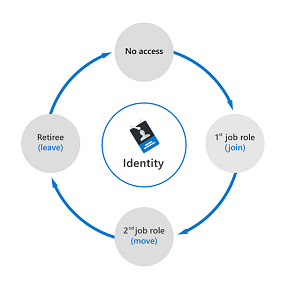
Access lifecycle
Access lifecycle is the process of managing access throughout the user's organizational life. Users require different levels of access from the point at which they join an organization to when they leave it. At various stages in between, they need access rights to different resources depending on their role and responsibilities.
Organizations need a process to manage access beyond what was initially provisioned for a user when that user's identity was created. Enterprise organizations also need to be able to scale efficiently and to develop and enforce access policy and controls on an ongoing basis.
With Microsoft Entra ID Governance, IT departments can establish what access rights users should have across various resources and what enforcement checks are necessary. Organizations can automate the access lifecycle process through technologies such as dynamic groups and entitlement management. Dynamic groups enable admins to create attribute-based rules to determine membership of groups. When any attributes of a user change, the system evaluates all dynamic group rules in a directory to see if the change would trigger any users to be added or removed from a group.
Entitlement management enables organizations to define how users request access across packages of group and team memberships, app roles, and SharePoint Online roles, and enforce separation of duties checks on access requests. Organizations can regularly review access rights using recurring Microsoft Entra access reviews for access recertification, including AI-powered suggestions that help reviewers make better-informed decisions.
Privileged access lifecycle
Monitoring privileged access is a key part of identity governance. When employees, vendors, and contractors are assigned administrative rights, there should be a governance process because of the potential for misuse.
Microsoft Entra Privileged Identity Management (PIM) provides extra controls tailored to securing access rights. PIM helps you minimize the number of people who have access to resources across Microsoft Entra, Azure, and other Microsoft online services. PIM provides a comprehensive set of governance controls to help secure your company's resources.
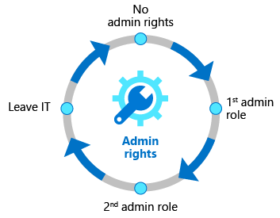
Identity governance for AI agents
With the growth of AI, organizations are increasingly deploying AI agents that need access to applications and data. Microsoft Entra ID Governance extends its capabilities to AI agent identities. Microsoft Entra Agent ID introduces agent identities—purpose-built identity constructs for AI agents—with governance controls that address the unique challenges of autonomous and semi-autonomous agents operating at enterprise scale. Every agent identity requires a human sponsor accountable for the agent's purpose, lifecycle decisions, and access reviews. If a sponsor leaves the organization, sponsorship automatically transfers to their manager, ensuring continuous human oversight.
Describe access reviews
Microsoft Entra access reviews enable organizations to efficiently manage group memberships, access to enterprise applications, and role assignments. Regular access reviews ensure that only the right people have access to resources. Excessive access rights are a known security risk. However, when people move between teams, or take on or relinquish responsibilities, access rights can be difficult to control.
Microsoft Entra ID enables you to collaborate with users from inside your organization and with external users. Users can join groups, invite guests, connect to cloud apps, and work remotely from their work or personal devices. This convenience has led to a need for better access management capabilities.
There are many use cases in which access reviews should be used. Here are a few examples.
- Too many users in privileged roles: It's a good idea to check how many users have administrative access and if there are any invited guests or partners that haven't been removed after being assigned to do an administrative task. You can recertify the role assignment of users in Microsoft Entra roles or Azure resource roles in the Microsoft Entra Privileged Identity Management (PIM) experience.
- Business critical data access: For certain resources, such as business critical applications, it might be required as part of compliance processes to ask people to regularly reconfirm and give a justification for why they need continued access.
- To maintain a policy's exception list: Sometimes there are business cases that require you to make exceptions to policies. As the IT admin, you can manage this task and provide auditors with proof that these exceptions are reviewed regularly.
- Ask group owners to confirm they still need guests in their groups: If a group gives guests access to business sensitive content, then it's the group owner's responsibility to confirm the guests still have a legitimate business need for access.
- Have reviews recur periodically: You can set up recurring access reviews of users at set frequencies such as weekly, monthly, quarterly, or annually. Reviewers are notified at the start of each review and upon completion approve or deny access through a friendly user interface and with the help of smart recommendations.
Manage user and guest user access with access reviews
With access reviews, you can easily ensure that users or guests have appropriate access. You can ask the users themselves or a decision maker to participate in an access review and recertify (or attest) to users' access. The reviewers can give their input on each user's need for continued access based on suggestions from Microsoft Entra ID. When an access review is finished, you can then make changes and remove access from users who no longer need it.
Admins who create access reviews can track progress as the reviewers complete their process. No access rights are changed until the review is finished. You can, however, stop a review before it reaches its scheduled end.
When the review is complete, it can be set to manually or autoapply changes to remove access from a group membership or application assignment, except for a dynamic group or a group that originates on-premises. In those cases, the changes must be applied directly to the group.
Where to create access reviews
The tool used to create an access review depends on what type of access rights are being reviewed:
| Access rights of users | Reviewers can be | Review created in |
|---|---|---|
| Security group / Office group members | Specified reviewers, Group owners, Self-review | Access Reviews |
| Assigned to a connected app | Specified reviewers, Self-review | Access Reviews / Enterprise apps |
| Microsoft Entra role | Specified reviewers, Self-review | PIM |
| Azure resource role | Specified reviewers, Self-review | PIM |
| Access package assignments | Specified reviewers, Group members, Self-review | Entitlement Management |
Multi-stage access reviews
Microsoft Entra access reviews support up to three review stages, in which multiple types of reviewers engage in determining who still needs access to company resources.
Multi-stage access reviews allow you and your organization to enable complex workflows to meet recertification and audit requirements calling for multiple reviewers to attest to access for users in a particular sequence. It also helps you design more efficient reviews for your resource owners and auditors by reducing the number of decisions each reviewer is accountable for.
AI-powered recommendations
Microsoft Entra access reviews use AI-powered recommendations to help reviewers make better-informed decisions. These smart recommendations analyze signals such as user sign-in activity, user-to-group affiliation, and other contextual data to suggest whether access should be approved or denied. AI-identified peer outliers—users whose access patterns differ significantly from their peers—may require higher scrutiny during reviews.
Describe entitlement management and terms of use
Entitlement management is an identity governance feature that enables organizations to manage the identity and access lifecycle at scale. Entitlement management automates access request workflows, access assignments, reviews, and expiration.
Enterprise organizations often face challenges when managing workforce access to resources such as:
- Users may not know what access they should have, and even if they do, they might have difficulty locating the right individuals to approve it.
- When users find and receive access to a resource, they may hold on to access longer than is required for business purposes.
- Managing access for external users adds complexity, as no one in the organization might remember to manage all of the external identities' access consistently.
Entitlement management includes the following capabilities to address these challenges:
- Delegate the creation of access packages to nonadministrators. These access packages contain resources that users can request. The delegated access package managers then define policies that include rules such as which users can request access, who must approve their access, and when access expires.
- Manage external users. When a user who isn't yet in your directory requests access, and is approved, they're automatically invited into your directory and assigned access. When their access expires, if they have no other access package assignments, their B2B account in your directory can be automatically removed.
- Give AI agent identities access to resources needed and allow sponsors of the agent identities to make sure access is maintained only while required. Entitlement management now supports governing access for both human and AI agent identities.
Entitlement management uses access packages to manage access to resources. An access package is a bundle of all the resources with the access a user needs to work on a project or perform their task. Access packages can include membership of security groups, Microsoft 365 Groups, enterprise applications, and SharePoint Online sites.
Microsoft Entra terms of use
Microsoft Entra terms of use allow information to be presented to users, before they access data or an application. Terms of use ensure users read relevant disclaimers for legal or compliance requirements.
Example use cases where employees or guests may be required to accept terms of use include:
- Before they access sensitive data or an application.
- On a recurring schedule, so they're reminded of regulations.
- Based on user attributes, such as terms applicable to certain roles.
- Presenting terms for all users in your organization.
Terms of use are presented in a PDF format, using content that you create, such as an existing contract document. Terms of use can also be presented to users on mobile devices.
Conditional Access policies are used to require a terms of use statement being displayed, and ensuring the user has agreed to those terms before accessing an application. Admins can then view who has agreed to terms of use, and who has declined.
Describe the capabilities of Privileged Identity Management
Privileged Identity Management (PIM) is a service in Microsoft Entra ID that enables you to manage, control, and monitor access to important resources in your organization. These include resources in Microsoft Entra ID, Azure, and other Microsoft online services such as Microsoft 365 or Microsoft Intune. PIM provides time-based and approval-based role activation to mitigate the risks of excessive, unnecessary, or misused access permissions. It requires justification to understand why users want permissions, and enforces multifactor authentication to activate any role.
PIM is:
- Just in time, providing privileged access only when needed, and not before.
- Time-bound, by assigning start and end dates that indicate when a user can access resources.
- Approval-based, requiring specific approval to activate privileges.
- Visible, sending notifications when privileged roles are activated.
- Auditable, allowing a full access history to be downloaded.
Why use PIM?
PIM reduces the chance of a malicious actor getting access by minimizing the number of people who have access to secure information or resources. By time-limiting authorized users, it reduces the risk of an authorized user inadvertently affecting sensitive resources. PIM also provides oversight for what users are doing with their administrator privileges.
What can you do with PIM?
Today, you can use PIM with:
- Microsoft Entra roles—Sometimes referred to as directory roles, Microsoft Entra roles include built-in, and custom roles to manage Microsoft Entra ID and other Microsoft 365 online services.
- Azure roles—The role-based access control (RBAC) roles in Azure that grant access to management groups, subscriptions, resource groups, and resources.
- PIM for Groups—Provide just-in-time membership in the group and just-in-time ownership of the group. PIM for Groups can be used to govern access to various scenarios that include Microsoft Entra roles, Azure roles, and Azure SQL, Azure Key Vault, Intune, other application roles, and non-Microsoft applications.
General workflow
There are a few steps that are generally part of a basic workflow when deploying PIM. These steps are: assign, activate, approve/deny, and extend/renew.
- Assign—The assignment process starts by assigning roles to members. To grant access to a resource, the administrator assigns roles to users, groups, service principals, or managed identities. The assignment includes the following data:
- Members or owners—The members or owners to assign to the role.
- Scope—The scope limits the assigned role to a particular set of resources.
- Assignment type—There are two options. Eligible assignments require the member of the role to perform an action to use the role. Actions might include activation, or requesting approval from designated approvers. Active assignments don't require the member to perform any action to use the role. Members assigned as active have the privileges assigned to the role.
- Duration—The duration of the assignment is defined by start and end dates or is set to permanent.
- Activate—If users have been made eligible for a role, then they must activate the role assignment before using the role. To activate the role, users select specific activation duration within the maximum (configured by administrators), and the reason for the activation request.
- Approve or deny—Delegated approvers receive email notifications when a role request is pending their approval. Approvers can view, approve, or deny these pending requests in PIM. After the request has been approved, the member can start using the role.
- Extend and renew—When a role assignment nears expiration, the user can use PIM to request an extension for the role assignment. When a role assignment has already expired, the user can use Privileged Identity Management to request a renewal for the role assignment.
Audit
You can use the Privileged Identity Management (PIM) audit history to see all role assignments and activations within the past 30 days for all privileged roles.
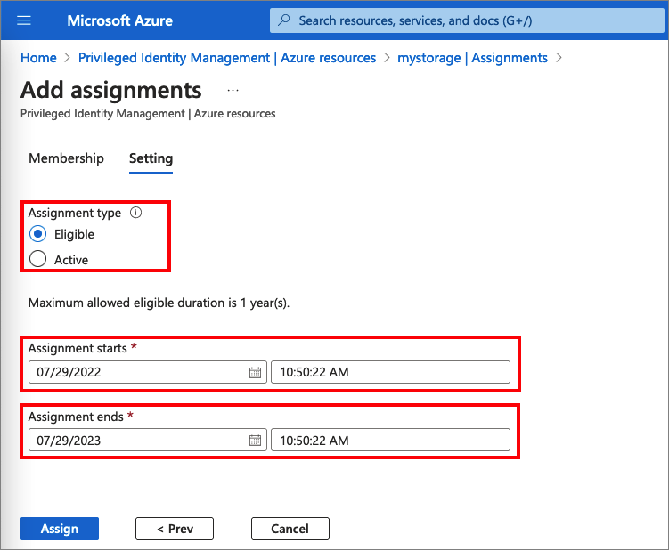
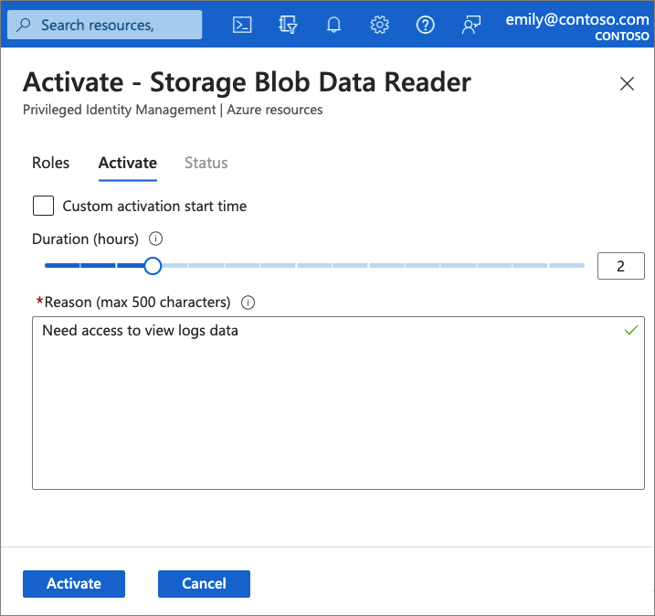
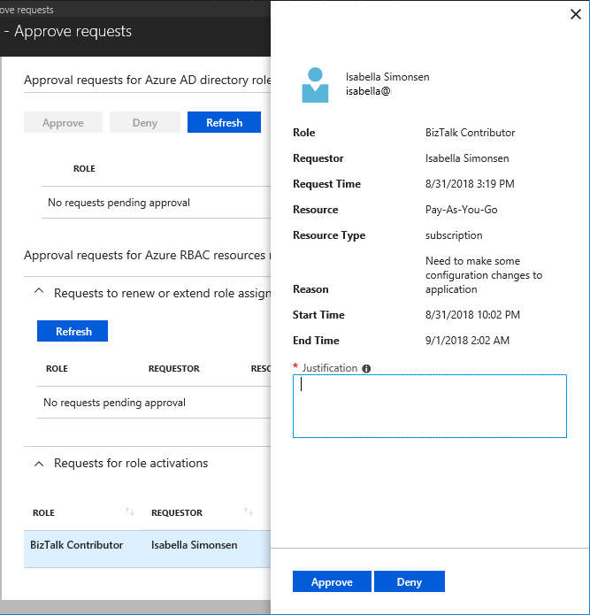
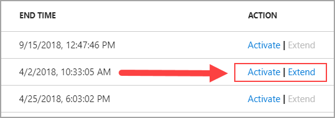
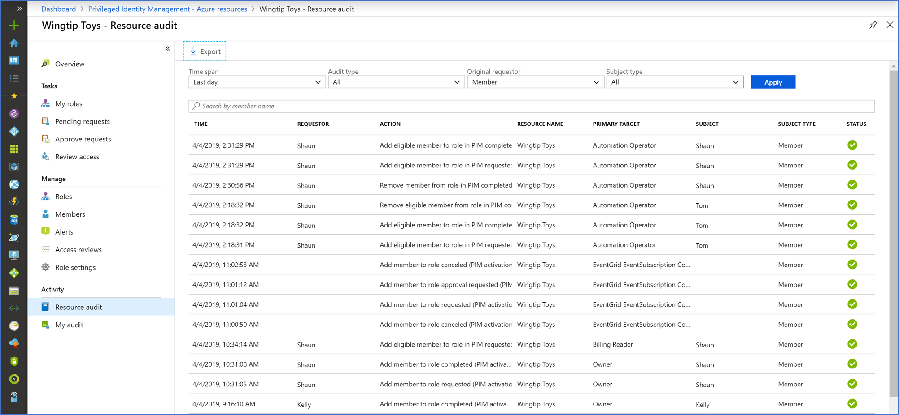
Describe Microsoft Entra ID Protection
Microsoft Entra ID Protection helps organizations detect, investigate, and remediate identity-based risks. This includes user identities and workload identities.
These identity-based risks can be further fed into tools like Conditional Access to make access decisions or fed back to a security information and event management (SIEM) tool for further investigation and correlation.
Detect risks
Microsoft continually adds and updates detections in its catalog to protect organizations. These detections come from the analysis of trillions of signals each day from Microsoft Entra ID, Microsoft Accounts, and in gaming with Xbox. This broad range of signals helps ID Protection detect risky behaviors like anonymous IP address usage, password spray attacks, leaked credentials, and more.
During each sign-in, ID Protection runs all real-time sign-in detections, generating a sign-in session risk level that indicates how likely the sign-in is compromised. Based on this risk level, policies are applied to protect the user and the organization.
Microsoft Entra ID Protection risk detections can be linked to a sign-in event (sign-in risk) or an individual user (user risk).
- Sign-in risk. A sign-in risk represents the probability that a given authentication request isn't authorized by the identity owner. Examples include a sign-in from an anonymous IP address, atypical travel (two sign-ins originating from geographically distant locations), unfamiliar sign-in properties, and more.
- User risk. A user risk represents the probability that a given identity or account is compromised. Examples include leaked credentials, user reported suspicious activity, suspicious sending patterns, and more.
Identity Protection only generates risk detections when correct credentials are used in the authentication request. If a user uses incorrect credentials, it isn't flagged by Identity Protection since there isn't a risk of credential compromise unless a bad actor uses the correct credentials.
Investigate risks
Any risks detected on an identity are tracked with reporting. Identity Protection provides three key reports for administrators to investigate risks and take action:
- Risk detections: Each risk detected is reported as a risk detection.
- Risky sign-ins: A risky sign-in is reported when there are one or more risk detections reported for that sign-in.
- Risky users: A Risky user is reported when either or both of the following are true:
- The user has one or more risky sign-ins.
- One or more risk detections are reported.
Investigation of events is key to understanding and identifying any weak points in your security strategy.
Remediate
Automation is critical in security because the massive scale of signals and attacks makes manual response impractical. Risk-based Conditional Access policies can be enabled to require access controls such as providing a strong authentication method, performing multifactor authentication, or performing a secure password reset based on the detected risk level. If the user successfully completes the access control, the risk is automatically remediated.
When automated remediation isn't enabled, an administrator must manually review the identified risks in the reports through the portal, through the API, or in Microsoft Defender XDR. Administrators can perform manual actions to dismiss, confirm safe, or confirm compromise on the risks.
Export
Data from Identity Protection can be exported to other tools for archive, further investigation, and correlation. The Microsoft Graph based APIs allow organizations to collect this data for further processing in tools such as a SIEM. The data can also be sent to a Log Analytics workspace, archived to a storage account, streamed to Event Hubs, or sent to other solutions.
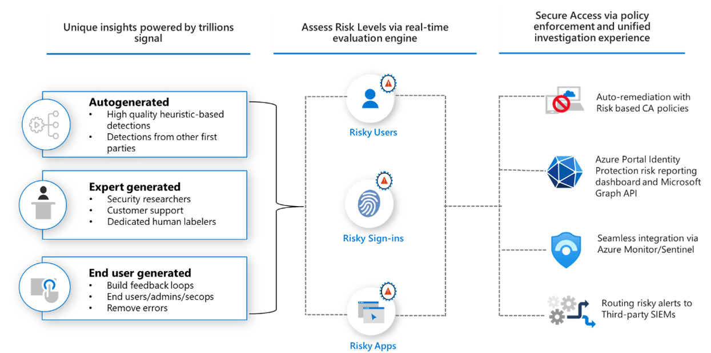
Describe Microsoft Entra Verified ID
Microsoft Entra Verified ID is a managed verifiable credentials service based on open standards. Verified ID automates verification of identity credentials and enables privacy-protected interactions between organizations and users.
Why do we need it?
In the digital world, transactions are increasingly done over the web and often require individuals to make claims or assertions that organizations can digitally verify. Currently, it's difficult for individuals to obtain and present a digital credential that is cryptographically secure, privacy-compliant, and machine-readable. In addition, once you share a digital identity to access a service, it can be hard to retain control of how your identity data is used and shared.
Verifiable credentials help address these challenges. They provide individuals and organizations a way to express their qualifications and personal information over the web in a manner that is cryptographically secure, compliant with privacy requirements, and machine-readable for verification. Microsoft actively collaborates with various organizations and standards bodies, including the W3C and the Decentralized Identity Foundation (DIF), to create a decentralized identity solution that puts individuals in control of their own digital identities.
How it works
The verifiable credential interaction involves three parties:
- The issuer is an organization that attests to claims and grants digitally signed credentials to the user. An issuer can be an identity verification provider, a government agency, an employer, a university, or any other organization that can provide proof of the user's credential.
- The user receives and approves the credentials obtained from the issuer, stores and manages credentials in their digital wallet, and presents them to the verifier. The credential claims are cryptographically signed with the user's private key.
- The verifier is an organization that requests proof and, upon receipt, verifies that the claims in the credentials satisfy requirements. A verifier could be a prospective employer, an airline, a mortgage company, or any organization that's requesting proof of the user's credential.
Supporting it all is a verifiable data registry. The underlying verifiable data registry is a collection of systems involved in creating and recording meta data that are used with verifiable credentials, including public keys. The way to think about the verifiable data registry is as an underlying network that represents a trust system. The verifier interacts with the data registry to read the meta-data associated with the credential to then verify the credential that is presented by the user.
Microsoft Entra Verified ID uses the `did:web` trust system, where the issuer's decentralized identifier (DID) is linked to a web domain that the organization controls. Trust is established through the web domain's existing reputation—verifiers trust the credential because they trust the organization that owns the domain.
A common scenario with any credential is that the credential may expire, or the issuer may need to revoke that credential. The standard for verifiable credentials includes property fields in the credential to account for these scenarios.
Account recovery with Verified ID
Verified ID plays a key role in Microsoft Entra ID account recovery. Account recovery helps users regain access to their accounts when they've lost all their authentication methods—for example, when their phone is lost or stolen and no backup methods are available. Unlike self-service password reset (SSPR), which requires the user to have at least one registered authentication method, account recovery re-establishes trust in the user's identity through comprehensive identity verification.
During the recovery process, users verify their identity through a trusted third-party identity verification provider (available through the Microsoft Security Store), which validates government-issued identification documents. A verifiable credential is then issued into the user's Microsoft Authenticator app. Verified ID Face Check, powered by Azure AI services, adds a critical layer of trust by matching the user's real-time selfie to the photo from their identity document. Only the match results are shared—not sensitive identity data—preserving user privacy. Once identity is confirmed, the user receives a Temporary Access Pass (TAP) to sign in and re-register their authentication methods.
AI and verifiable credentials
As AI-generated content and deepfakes become more prevalent, verifiable credentials play an increasingly important role in establishing digital trust. Organizations can use Verified ID to confirm that interactions involve real, verified individuals, helping mitigate risks associated with AI-driven identity fraud and impersonation.
Describe Microsoft Entra integration with Security Copilot
Microsoft Security Copilot is a generative AI-powered security solution that brings together the power of AI and human expertise to help administrators and security teams respond to attacks faster and more effectively. Microsoft Entra is one of the Microsoft plugins that enable the Security Copilot platform to generate accurate and relevant information. Through the Microsoft Entra plugin, Security Copilot can help you investigate and resolve identity risks, assess identities and access with AI-driven intelligence, and complete complex tasks quickly.
Security Copilot gets insights from your Microsoft Entra users, groups, sign-in logs, audit logs, and more, while also providing contextualized insights and recommendations on security best practices. You can explore sign-ins and risky users, get contextualized insights on how to resolve incidents, and learn how to protect accounts using natural language. Built on top of real-time machine learning, Security Copilot can help you find gaps in access policies, generate identity workflows, and troubleshoot faster.
Standalone and embedded experiences
Security Copilot in Microsoft Entra includes both a standalone experience and embedded experiences available in the Microsoft Entra admin center.
- Standalone experience: In the Security Copilot portal (securitycopilot.microsoft.com), you can use natural language prompts to investigate identity-related incidents. The Microsoft Entra plugin provides built-in capabilities (skills) that you can use, or you can enter your own prompts based on the capabilities supported. Example prompts include:
- Give me all user details for karita@woodgrovebank.com and extract the user Object ID.
- List the recent risky sign-ins for karita@woodgrovebank.com.
- Can you give me sign-in logs for karita@woodgrovebank.com for the past 48 hours? Put this information in a table format.
- Get Microsoft Entra audit logs for karita@woodgrovebank.com for the past 72 hours.
- Embedded experience: Within the Microsoft Entra admin center, Security Copilot capabilities are built directly into workflows. For example, the risky users' report in Identity Protection embeds Security Copilot capabilities to summarize a user's risk level, provide insights relevant to the incident at hand, and provide recommendations for rapid mitigation.
Microsoft Entra scenarios supported by Security Copilot
Security Copilot supports a wide range of identity and access management scenarios across multiple Microsoft Entra products. The following describes the product areas and the types of tasks you can accomplish using Security Copilot in Microsoft Entra.
- Microsoft Entra ID: Quickly retrieve and manage user, group, domain, and license information. Investigate sign-in logs, audit logs, and provisioning logs to identify suspicious activity. Explore Conditional Access policies, authentication methods, device details, and role assignments. Security Copilot can also surface Microsoft Entra recommendations, health monitoring alerts, and service-level agreement data.
- Microsoft Entra ID Protection: Summarize a user's risk level, investigate risk detections, and get remediation recommendations. You can also assess application risk by analyzing workload identities and permissions.
- Microsoft Entra ID Governance: Analyze access review data and decision patterns, manage access packages in entitlement management, monitor privileged access through Privileged Identity Management (PIM), and configure or troubleshoot lifecycle workflows.
- Microsoft Entra Internet Access and Private Access: Investigate Global Secure Access logs and network traffic to understand how users connect to resources.
Microsoft Entra agents
Microsoft Entra agents are AI-powered tools that automate repetitive identity and access management tasks and reduce manual workloads for administrators. These agents analyze your identity environment, apply best practices, and take automated actions to improve your identity and access security posture and operational efficiency. Each agent is grounded in a specific product area and can run on a schedule or be triggered manually.
Each agent uses a unique agent identity created when the agent is turned on. The agent identity is granted specific read and write permissions needed to perform its tasks. Administrators configure and manage agents through the Microsoft Entra admin center under the Agents section.
Currently, the following Microsoft Entra agents are available:
- Conditional Access Optimization Agent: Ensures comprehensive user protection by analyzing Conditional Access policies and recommending improvements. The agent evaluates your current policy configuration against Microsoft best practices and Zero Trust principles, identifying gaps, overlap, and misconfigurations. It scans your tenant every 24 hours or can be triggered manually, checking for new users, applications, and agent identities that aren't protected by Conditional Access policies and provides suggested next steps, such as turning on or modifying a policy.
- Identity Risk Management Agent (Preview): Helps administrators investigate potential risks in Microsoft Entra ID Protection, learn about potential effects, and take decisive action to protect the organization's critical assets. The agent runs every 24 hours, can be triggered manually, or can provide continuous monitoring.
Discovery of Microsoft and partner-built agents is also available through the Security Store, which is embedded directly in the Microsoft Entra admin center. The Security Store provides a centralized place to discover, purchase, and deploy agents and solutions.
Providing feedback
Copilot in Microsoft Entra uses AI and machine learning to process data and generate responses. AI-generated content might be incorrect. All Security Copilot features include an option for submitting feedback through thumbs up and thumbs down icons. Your feedback on the generated responses helps improve the accuracy of Copilot and Microsoft Entra over time.
Section Summary
- Microsoft Entra ID Governance — ensures the right people have the right access to the right resources through three lifecycle pillars. Identity lifecycle automates join/move/leave using inbound provisioning from HR systems (Workday, SuccessFactors), lifecycle workflows (automated tasks triggered by events like new hire or last day), automatic assignment policies in entitlement management, and user provisioning to hundreds of cloud/on-premises apps. Access lifecycle uses dynamic groups (attribute-based membership rules evaluated automatically when attributes change), entitlement management (access packages bundling groups, apps, SharePoint sites with request/approval/expiration policies), access reviews (recurring recertification), and separation of duties enforcement. Privileged access lifecycle uses PIM to minimize standing admin rights. AI agent governance — Microsoft Entra Agent ID introduces purpose-built agent identities requiring a human sponsor accountable for the agent's purpose, lifecycle decisions, and access reviews; sponsorship auto-transfers to manager if sponsor leaves
- Access Reviews — efficiently manage group memberships, app access, and role assignments through periodic recertification. Use cases: too many privileged users (recertify Entra roles and Azure resource roles via PIM), business critical data access (require justification for continued access), policy exception management, confirming guest access in groups, recurring reviews (weekly/monthly/quarterly/annually). Multi-stage — up to 3 review stages with different reviewer types in sequence. AI-powered recommendations analyze sign-in activity, user-to-group affiliation, and other contextual data to suggest approve/deny; AI-identified peer outliers (users with access patterns differing significantly from peers) flagged for higher scrutiny. No access rights changed until review completes; auto-apply or manual apply, except dynamic groups or on-premises groups (must be applied directly)
- Entitlement Management — manages identity and access lifecycle at scale through access packages (bundles of security groups, M365 Groups, enterprise applications, SharePoint Online sites) with policies defining who can request, who must approve, and when access expires. Capabilities: delegate creation of access packages to non-administrators, automatically invite external users to the directory on approval and remove B2B accounts when all access expires, support for AI agent identities alongside human identities. Terms of Use — PDF documents presented to users before accessing data or applications, enforced via Conditional Access policies; usable on mobile devices; admins can track who has agreed or declined. Use cases: before sensitive data access, on recurring schedules, based on user attributes, or for all users
- Privileged Identity Management (PIM) — manages, controls, and monitors privileged access to Entra ID, Azure, and other Microsoft online services (M365, Intune). Five characteristics: Just-in-time (privileged access only when needed), Time-bound (start and end dates for assignments), Approval-based (specific approval required to activate), Visible (notifications when privileged roles activated), Auditable (full access history downloadable). Covers Microsoft Entra roles (built-in and custom), Azure roles (management groups, subscriptions, resource groups, resources), and PIM for Groups (JIT membership/ownership governing access to Entra roles, Azure roles, Azure SQL, Key Vault, Intune, and non-Microsoft apps). Workflow: Assign (eligible vs active — eligible requires activation; includes scope, duration, assignment type), Activate (select duration + justification, requires MFA), Approve/Deny (delegated approvers notified), Extend/Renew (near expiration or expired). Audit history — 30 days of all role assignments and activations
- Microsoft Entra ID Protection — detects, investigates, and remediates identity-based risks for both user and workload identities. Two risk types: Sign-in risk (per-event probability that a given authentication isn't authorized — anonymous IP, atypical travel, unfamiliar sign-in properties, malware-linked IP, password spray) and User risk (aggregate probability that an identity is compromised — leaked credentials on dark web, user reported suspicious activity, suspicious sending patterns). Generated only when correct credentials are used. Investigation reports: Risk detections (each detected risk), Risky sign-ins (sign-ins with ≥1 risk detection), Risky users (users with risky sign-ins or risk detections). Remediation: automated via risk-based Conditional Access policies (require MFA, require password reset, block access) or manual admin actions (dismiss, confirm safe, confirm compromise). Export: via Microsoft Graph APIs to SIEM, Log Analytics, Storage Accounts, or Event Hubs. Backed by trillions of daily signals from Entra ID, Microsoft Accounts, and Xbox
- Microsoft Entra Verified ID — managed verifiable credentials service based on open standards (W3C, DIF). Enables decentralized, privacy-preserving identity verification. Three parties: Issuer (organization attesting to claims — government, employer, university), User (receives/approves credentials in digital wallet, cryptographically signed with private key), Verifier (requests proof, verifies claims satisfy requirements). Uses did:web trust system — issuer's decentralized identifier linked to a controlled web domain; trust established through the domain's existing reputation. Account recovery: when all auth methods are lost, users verify identity via third-party IDV provider validating government ID documents; Verified ID Face Check (Azure AI) matches real-time selfie to ID photo — only match result shared, preserving privacy. Successful verification issues a TAP for users to re-register auth methods. Increasingly important for combating AI-generated deepfakes and identity fraud
- Security Copilot in Microsoft Entra — AI-powered security tool (Azure OpenAI Services) for investigating and resolving identity risks. Standalone experience (securitycopilot.microsoft.com) — natural language prompts query users, groups, sign-in logs, audit logs, risk detections, Conditional Access policies, role assignments. Embedded experience — Copilot capabilities built into Entra admin center workflows like Identity Protection risky users report. Supported scenarios across Entra products: Entra ID (user/group/domain/license info, sign-in/audit/provisioning logs, CA policies, device details, Entra recommendations), ID Protection (risk summary, risk investigation, remediation recommendations, workload identity permissions), ID Governance (access review data, entitlement management, PIM monitoring, lifecycle workflows), Global Secure Access (network traffic logs). Microsoft Entra Agents — AI tools automating repetitive IAM tasks using unique agent identities with specific read/write permissions. Two agents: Conditional Access Optimization Agent (analyzes policies against best practices and Zero Trust, scans tenant every 24h, identifies unprotected users/apps/agent identities), Identity Risk Management Agent (investigates risks, provides remediation actions)
Key Concepts
Identity Governance
- ID Governance: Ensures the right people have the right access to the right resources at the right time. Three pillars: identity lifecycle (joiner/mover/leaver), access lifecycle (reviews, entitlement), and privileged access management (PIM).
- Identity Lifecycle: Automates join (user provisioning from HR systems like Workday/SAP), move (attribute updates, group changes triggered by department changes), and leave (automatic deactivation, access removal). Uses inbound provisioning, lifecycle workflows, and outbound user provisioning.
- Lifecycle Workflows: Automate joiner/mover/leaver tasks with triggers (new hire, last day, group membership change), tasks (send email, assign group, update attribute), and schedule conditions.
- Entitlement Management: Access packages bundling groups, apps, SharePoint sites with policies (who can request, how long, who approves). Enables self-service access requests with automated approval and time-bound access.
- Terms of Use: PDF documents presented to users before resource access, enforced through Conditional Access policies. User must accept before getting access, and can be required to re-accept periodically.
- Access Reviews: Periodic recertification of group memberships, app access, and role assignments. Supports multi-stage reviews (up to 3 reviewers per stage), auto-approve/auto-revoke, and AI-powered recommendations.
Privileged Identity Management (PIM)
- PIM Overview: Just-in-time, time-bound, approval-based privileged access to Entra roles, Azure resources, and other M365 services. Reduces standing admin access and the attack surface.
- PIM Workflow: Assign (eligible vs active — eligible means user has no access until activated), Activate (requires MFA + business justification + approval if configured), time-bound (max activation duration e.g. 1-8 hours), and fully audited (every activation and action logged).
- PIM Roles Covered: Entra ID roles (Global Admin, User Admin, etc.), Azure resources (subscriptions, resource groups), and other M365 services (Exchange, SharePoint, Intune).
Identity Protection & Verified ID
- ID Protection: Detects identity-based risks using two signal types — sign-in risk (per-event: anonymous IP, atypical travel, unfamiliar sign-in properties, malware-linked IP, password spray) and user risk (aggregate: leaked credentials on dark web, unusual user behavior). Risks feed into Conditional Access for automated remediation (block, require MFA, require password change).
- Verified ID: Decentralized identity using verifiable credentials based on open standards (W3C VC, DID). Three parties: issuer (issues credential), user (holds in digital wallet), verifier (requests and verifies). Uses did:web trust system. Privacy-preserving — user shares only what's needed.
- Security Copilot in Entra: AI-powered natural language investigation of sign-in logs, risky users, audit logs, and Conditional Access policies. Enables analysts to query identity data conversationally.
- Entra Agents: AI-powered autonomous security agents including Conditional Access Optimization Agent (recommends policy improvements) and Identity Risk Management Agent (automated risk response workflows).
3.0 Microsoft Security Copilot
Domain 3: Microsoft Security Solutions (35-40%)
Module: Get started with Microsoft Security Copilot
Get acquainted with Microsoft Security Copilot
The top security challenges organizations face include:
- An increase in the number and sophistication of attacks.
- A talent shortage that's driving the need for automation, integration, and consolidation of security tools.
- Visibility into security, privacy, compliance, and governance.
Organizations need to act quickly to address the security challenges they face, but working at human speed, even if there weren't a talent shortage, isn't enough. Organizations need to work at machine speed.
Microsoft Security Copilot is an AI-powered, cloud-based security analysis tool that enables analysts to respond to threats quickly, process signals at machine speed, and assess risk exposure more quickly than may otherwise be possible.
Use cases
Security Copilot focuses on making the following highlighted use cases easy to use.
- Investigate and remediate security threats - gain context for incidents to quickly triage complex security alerts into actionable summaries and remediate quicker with step-by-step response guidance
- Build Kusto Query Language (KQL) queries or analyze suspicious scripts - eliminate the need to manually write query-language scripts or reverse engineer malware scripts with natural language translation to enable every team member to execute technical tasks
- Understand risks and manage security posture of the organization - get a broad picture of your environment with prioritized risks to uncover opportunities to improve posture more easily
- Troubleshoot IT issues faster - synthesize relevant information rapidly and receive actionable insights to identify and resolve IT issues quickly
- Define and manage security policies - define a new policy, cross-reference it with others for conflicts, and summarize existing policies to manage complex organizational context quickly and easily
- Configure secure lifecycle workflows - build groups and set access parameters with step-by-step guidance to ensure a seamless configuration to prevent security vulnerabilities
- Develop reports for stakeholders - get a clear and concise report that summarizes the context and environment, open issues, and protective measures prepared for the tone and language of the report's audience
These use cases represent just a few of the capabilities that Copilot delivers and that helps make analysts more productive and also helps up-level them.
Standalone and embedded experience
You can experience Copilot through the dedicated site, also referred to as the standalone experience. Users interact with Copilot through the prompt bar. In the prompt bar, users make requests in natural language and receive response outputs as text, images, or documents.
Additionally, some Microsoft security products embed Copilot capabilities directly within the products' user interface. This experience is referred to as the embedded experience. Microsoft Defender XDR, for example, enables Copilot capabilities including summarizing incidents, analyzing scripts, generating KQL queries, and more.
Natural language processing (NLP)
Copilot is built using Azure OpenAI Services and is designed to integrate with existing security tools and processes, making it easier for organizations to improve their overall security posture. Azure OpenAI Services provides REST API access to OpenAI's powerful large language models (LLMs) for natural language processing (NLP), while providing security capabilities of Microsoft Azure.
With access to the powerful LLMs for NLP, Copilot is able to read, decipher, and make sense of human languages, enabling users to securely interact with it using natural language. Although the LLMs are trained on a vast amount of information that endows Copilot with broad general knowledge and problem solving abilities, it's not enough. Security analysts expect their copilot to be trained on security and that's where the integration with existing security tools and processes comes into play.
Integration with Security-specific sources
Copilot combines powerful LLMs with security-specific sources from Microsoft. These security-specific sources are informed by Microsoft's unique global threat intelligence, more than 65 trillion daily signals, and incorporates information from a growing set of security solutions using plug-ins and connections to knowledge bases. Through plug-ins, Copilot integrates with Microsoft's own security products, non-Microsoft products, and open-source intelligence feeds. Connections to an organization's knowledge bases gives Copilot more context, resulting in responses that are more relevant, specific, and customized to the user. Through the powerful combination of advanced general models and security specific sources, Copilot is able to learn at machine speed to help analysts identify and respond to emerging threats.
The information you give Copilot is only accessible to your organization. Your data is your data, and it's protected by comprehensive enterprise compliance and security controls. Your data isn't used to train the foundation AI models.
Microsoft Security Copilot is the first security product to enable defenders to move at the speed and scale of AI.
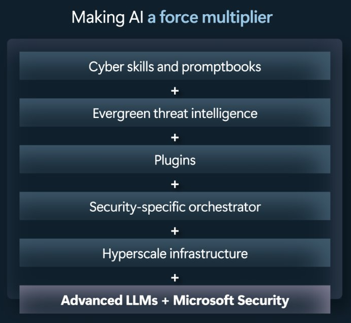
Describe Security Copilot terminology
The following terms are important for understanding the way Microsoft Security Copilot works:
- Session – A particular conversation within Copilot. Copilot maintains context within a session.
- Prompt – A specific statement or question within a session. A user enters a prompt in the prompt bar.
- Capability – A function Copilot uses to solve part of a problem. A capability may sometimes be referred to as a skill.
- Plugin – A collection of capabilities by a particular resource.
- Workspace - Copilot workspaces are separate Copilot work environments within the tenant in which your Copilot instance is operating.
- Agents - Microsoft Security Copilot agents are AI-powered tools that autonomously manage security and IT tasks, enhancing threat response, reducing manual workloads, and improving efficiency across cybersecurity operations at scale.
- Orchestrator – Copilot's system for composing capabilities together to answer a user's prompt.
Prompt bar and sessions
At the center of Security Copilot is the prompt bar. You use the prompt bar to tell Copilot what insights you want from your security data, this is referred to as the prompt. In other words, the prompt is the text-based, natural language input you provide in the prompt bar that instructs Copilot to generate a response. Although you interact with Copilot in natural language, it's helpful to be specific in the prompts (specific questions or statements) that you provide. For those that are relatively new to the security analyst role and engaging with AI, effective prompting may take some practice. For this reason, Copilot provides promptbooks that provide a series of preselected prompts and prompt suggestions.
As you make requests and as Copilot responds, you might have some follow-up requests. The entirety of the dialog is referred to as a session. Copilot maintains context within a session.
Plugins and capabilities
Copilot integrates with various sources through plugins, including Microsoft's own security products such as Microsoft Sentinel, Microsoft Defender XDR, and Microsoft Intune, non-Microsoft solutions, and open-source intelligence feeds. The integration enabled by the plugin, for any specific data source, provides Copilot with a collection of capabilities. Each capability is like a function in software, it's designed to do a specialized task within the scope of the data source. For example, the plugin to Microsoft Defender XDR includes a collection of individual capabilities that are used only by Microsoft Defender XDR. These include:
- The ability to summarize an incident.
- Support incident response teams in resolving incidents through guided responses (a set of recommended actions based on the specific incident).
- The ability to analyze scripts and code.
- The ability to generate KQL queries from natural language input.
- The ability to generate incident reports.
A plugin for Microsoft Sentinel might have similar capabilities but runs only within the scope of Microsoft Sentinel.
Copilot currently supports plug-ins for Microsoft services and non-Microsoft services, including websites and custom plug-ins that can be enabled.
Workspaces
Copilot workspaces are separate Copilot work environments within the tenant in which your Copilot instance is operating. A Copilot workspace is analogous to a room in a house; the tenant is analogous to the house. In the same way that a house has multiple rooms, the tenant in which Copilot is operating can have multiple workspaces.
Through the tenant-switching capability in Security Copilot, a user can select in which tenant they'll be working. In our analogy, this is a Copilot user getting access to the house. Once the tenant is selected, a Copilot user can access and work in any workspace (room in the house) to which they have access, within the context of their role permissions in that workspace.
Workspaces are powered by capacities and each workspace must have its own capacity. Using workspaces, you can efficiently map and monitor costs based on team needs and budgets, ensuring that teams have the capacity they need and resources are allocated effectively. Having workspaces also allows you to store session data according to geo-specific regulations and adhere to local data protection laws.
Agents
A Microsoft Security Copilot agent is an advanced, AI-powered assistant built into Microsoft Security Copilot. These agents go beyond just answering questions—they can autonomously manage high-volume security and IT tasks. They're deeply integrated with Microsoft's security tools and can also work with partner solutions. Each agent is tailored for specific security scenarios, such as threat protection, identity management, or data security.
These agents are designed to learn from feedback, adapt to your organization's workflows, and operate securely within Microsoft's Zero Trust framework.
Orchestrator
The orchestrator is Copilot's system for composing capabilities together to answer a user's prompt.
Describe how Security Copilot processes prompts
When a user submits a prompt, Copilot processes that prompt to generate the best possible response. The diagram illustrates, at a high level, steps that Copilot takes to process the prompt and generate a response.
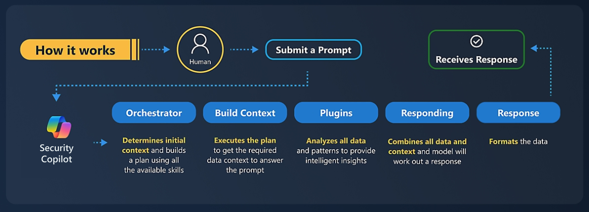
- Submit a prompt: The process starts when a user submits a prompt in the prompt bar.
- Orchestrator: Security Copilot sends the information to the Copilot backend referred to as the orchestrator. The orchestrator is Copilot's system for composing capabilities together to answer a user's prompt. It determines the initial context and builds a plan using all the available capabilities (skills).
- Build context: Once a plan is defined and built, Copilot executes that plan to get the required data context to answer the prompt.
- Plugins: In the course of executing the plan, Copilot analyzes all data and patterns to provide intelligent insights. This includes reasoning over all the plugins and sources of data, enabled and available to Copilot.
- Responding: Copilot combines all the data and context and uses the power of its advanced LLM to compose a response using language that makes sense to a human being.
- Response: Before the response can be sent back to the user, Copilot formats and reviews the response as part of Microsoft's commitment to responsible AI.
- Receives response: The process culminates with the user receiving the response from the Copilot.
Process log
During this process, Copilot generates a process log that's visible to the user. The user can see what capability is used to generate the response. This is important because it enables the user to determine whether the response was generated from a trusted source. The process log shows that Copilot chose the specific capability used. The process log also shows that the final output went through safety checks, which is part of Microsoft's commitment to responsible AI.
Describe elements of an effective prompt
The quality of the response that Copilot returns depends in large part on the quality of the prompt used. In general, a well-crafted prompt with clear and specific inputs leads to more useful responses by Copilot.
Elements of an effective prompt
Effective prompts give Copilot adequate and useful parameters to generate a valuable response. Security analysts or researchers should include the following elements when writing a prompt.
- Goal - specific, security-related information that you need
- Context - why you need this information or how you use it
- Expectations - format or target audience you want the response tailored to
- Source - known information, data sources, or plugins Copilot should use
Every good prompt should have a goal. Whether it comes in the form of instructions or questions, it should indicate what you want out of your current session.
For Copilot, context can refer to the time frame, or that you use the response for a report. Expectations can include whether you want the response to be in a table format, a list of action steps, a summary, or even a diagram. Source might be useful in specifying which Microsoft plugins you're referring to, if needed. Some plugins require more context to work effectively or supporting plugins to ensure a response when initial responses fail.
Other prompting tips
Some things to remember when coming up with your own prompts:
- Be specific, clear, and concise as much as you can about what you want to achieve. You can always start simply with your first prompt, but as you get more familiar with Copilot, include more details following the elements of an effective prompt.
- Basic prompt: Pearl Sleet actor
- Better prompt: Can you give me information about Pearl Sleet activity, including a list of known indicators of compromise and tools, tactics, and procedures (TTPs)?
- Iterate. Subsequent prompts are typically needed to further clarify what you need or to try other versions of a prompt to get closer to what you're looking for. Like all LLM-based systems, Copilot can respond to the same prompt in slightly different ways.
- Provide necessary context to narrow down where Copilot looks for data.
- Basic prompt: Summarize incident 15134.
- Better prompt: Summarize incident 15134 in Microsoft Defender XDR into a paragraph that I can submit to my manager and create a list of entities involved.
- Give positive instructions instead of "what not to do." Copilot is geared toward action, so telling it what you want it to do for exceptions is more productive.
- Directly address Copilot as "You" as in, "You should ..." or "You must ...," as this is more effective than referring to it as a model or assistant.
While these guidelines can help you get started in creating prompts, it's important to note that you're not limited to forming prompts following the structure of the previous examples. What's great about Copilot is that it's designed to respond to questions or instructions made in your own words (that is, using natural language).
Describe how to enable Security Copilot
To start using Microsoft Security Copilot, organizations need to take steps to onboard the service and users. These include:
- Identify your customer category
- Provision Copilot capacity (if required)
- Set up the default environment
- Assign role permissions
Identify your customer category
Your onboarding experience depends on your license status:
- Microsoft 365 E5 and E7 customers - Security Copilot is included with your Microsoft 365 E5 and E7 license. Microsoft automatically provisions and onboards Security Copilot for eligible tenants through zero-click activation, so no Azure setup or manual capacity provisioning is required. Customers receive a 7-day advance notification before activation. Once provisioning is complete, Security Copilot is ready for use.
- Non-Microsoft 365 E5 and E7 customers - If Security Copilot isn't included in your license, you must follow the manual onboarding steps to provision Security Compute Units (SCUs) to use Security Copilot.
Provision capacity
For non-Microsoft 365 E5 and E7 customers, Security Copilot operates on a provisioned capacity and an overage model. Provisioned capacity is billed by the hour while the overage capacity is billed on usage.
You can flexibly provision Security Compute Units (SCUs) to accommodate regular workloads and adjust them anytime without long-term commitments. An SCU is the unit of measure of computing power used to run Copilot in both the standalone and embedded experiences.
To manage unexpected demand spikes, you can allocate an overage amount to ensure that additional SCUs are available when initially provisioned units are depleted during unexpected workload spikes. Overage units are billed on-demand and can be set as unlimited or a maximum amount. This approach enables predictable billing while providing the flexibility to handle both regular and unexpected usage.
Before users can start using Copilot, admins need to provision and allocate capacity. To provision capacity:
- You must have an Azure subscription.
- You need to be an Azure owner or Azure contributor, at a resource group level, as a minimum.
- You need to be a Security Administrator or higher in the tenant you're onboarding Security Copilot.
There are two options for provisioning capacity:
- Provision capacity within Security Copilot (recommended) - When you first open Security Copilot as an admin, a wizard guides you through the steps in setting up capacity, including workspace creation.
- Provision capacity through Azure - The Azure portal now includes Security Copilot as a service.
Regardless of the method you choose, you need to purchase a minimum of one and a maximum of 100 SCUs. The recommended number of units to conduct an introductory exploration of Security Copilot is three units with overage set to unlimited overage.
Set up the default environment
To set up the default environment, you need to have, at least, a Security Administrator role.
During the setup of Security Copilot, you're prompted to configure settings. These include:
- SCU capacity - Select the capacity of SCUs previously provisioned. Each workspace must have its own capacity.
- Data storage - When an organization onboards to Copilot, one of the available settings determines where your customer data will be stored. Configuration of the data storage location applies at a workspace level. Microsoft Security Copilot operates in the Microsoft Azure data centers in the European Union (EUDB), the United Kingdom, the United States, Australia and New Zealand, Japan, Canada, and South America.
- Decide where your prompts are evaluated - You can restrict the evaluation within your geo or allow evaluation anywhere in the world.
- Logging audit data in Microsoft Purview - As part of the initial setup and listed under Owner settings in the standalone experience, you can choose to allow Microsoft Purview to process and store admin actions, user actions, and Copilot responses. This includes data from any Microsoft and non-Microsoft Integrations. If you opt in and you already use Microsoft Purview, no further action is needed.
- Your organization's data - The admin must also opt in or opt out of data sharing options. These options are part of the initial setup and also listed under Owner settings in the standalone experience and can be configured per workspace.
- Plugin settings - The admin manages plugins and configures whether to allow Security Copilot to access data from your Microsoft 365 services. These settings are configured per workspace.
Role permissions
To ensure that the users can access the features of Copilot, they need to have the appropriate role permissions. Role permissions are configured per workspace.
Permissions can be assigned using Microsoft Entra or Microsoft Purview roles, or Security Copilot roles. As a best practice, provide the least privileged role applicable for each user.
Security Copilot introduces two roles that function like access groups but aren't Microsoft Entra ID roles. Instead, they only control access to the capabilities of the Security Copilot platform and provide no access by themselves to security data.
The Microsoft Security Copilot roles are:
- Copilot owner
- Copilot contributor
The following Microsoft Entra and Microsoft Purview roles automatically inherit Copilot owner access, ensuring Security Copilot always has at least two owners:
Microsoft Entra roles:
- Billing Administrator
- Microsoft Entra Compliance Administrator
- Global Administrator
- Intune Administrator
- Security Administrator
Microsoft Purview roles:
- Purview Compliance Administrator
- Purview Data Governance Administrator
- Purview Organization Management
Only users that have the global administrator, security administrator, or Copilot owner roles can make role assignments in Copilot by adding/removing members from the Owner and Contributor roles.
Copilot plugins and role requirements
Your role controls what activities you have access to, such as configuring settings, assigning permissions, or performing tasks. Copilot doesn't go beyond the access you have. Additionally, individual Microsoft plugins might have their own role requirements for accessing the service and data it represents. Generally speaking, Microsoft plugins in Copilot use the OBO (on behalf of) model – meaning that Copilot knows that a customer has licenses to specific products and is automatically signed into those products.
Section Summary
- Microsoft Security Copilot is an AI-powered, cloud-based security analysis tool built on Azure OpenAI Services, enabling analysts to work at machine speed. Addresses three key challenges: increasing attack sophistication, cybersecurity talent shortage, and visibility gaps. Use cases: investigate and remediate threats (actionable summaries with step-by-step response guidance), build KQL queries or analyze suspicious scripts (natural language to KQL/reverse engineering), understand risks and manage security posture, troubleshoot IT issues, define/manage security policies, configure lifecycle workflows, develop stakeholder reports. Two experiences: Standalone (securitycopilot.microsoft.com — dedicated prompt bar with natural language interaction) and Embedded (Copilot built directly into Microsoft Defender XDR, Sentinel, Intune, Entra, Purview — summarizing incidents, analyzing scripts, generating KQL). Security-specific integration: combines LLMs with Microsoft's global threat intelligence from 65+ trillion daily signals, plus plugins for Microsoft security products, non-Microsoft solutions, and open-source intelligence feeds. Your data stays within your org — not used to train foundation AI models
- Key Terminology: Session — a conversation maintaining context across prompts. Prompt — natural language input instructing Copilot. Capability (Skill) — a specialized function Copilot uses (incident summarization, KQL generation, script analysis, guided response). Plugin — a collection of capabilities for a specific data source (Microsoft Sentinel, Defender XDR, Intune, ServiceNow, custom). Workspace — isolated Copilot environment within a tenant, each with its own SCU capacity, data residency, plugin settings, and user permissions. Agent — AI-powered autonomous assistant for repetitive security tasks (Phishing Triage, Threat Intelligence Briefing, Identity Risk Management), deeply integrated with Microsoft security tools and partner solutions, designed to learn from feedback. Orchestrator — Copilot's core system that composes capabilities together to answer a prompt. SCU (Security Compute Unit) — unit of computing power (1 GB memory + appropriate CPU); provisioned capacity billed by the hour
- Prompt Processing Flow: Submit — user enters a prompt in the prompt bar. Orchestrator — determines initial context and builds a plan using all available capabilities. Build context — executes the plan to gather required data. Plugins — queries enabled data sources, reasons over all data patterns. Responding — LLM combines data and context into human-readable language. Response — formatted and reviewed per responsible AI commitments. Receives — user gets the response. Process log — visible to users showing which capability was used, data source accessed, and that safety checks were applied. Effective prompts include four elements: Goal (specific security-related information needed), Context (why you need it, time frame), Expectations (output format — table, list, summary, diagram), Source (specific Microsoft plugins or data sources). Prompting tips: be specific and concise, iterate and refine, provide context to narrow scope, use positive instructions, address Copilot as "You". Starting simply and adding detail progressively yields better results
- Enabling Security Copilot: Licensing options — M365 E5/E7 customers get Copilot included with zero-click auto-provisioning (7-day advance notification before activation). Non-E5/E7 customers must manually provision SCUs. Capacity provisioning — SCUs (min 1, max 100, recommended 3 with unlimited overage for exploration). Provisioned capacity billed by the hour; overage capacity billed on-demand for unexpected spikes. Requires Azure subscription, Azure Owner/Contributor at resource group level, and Security Administrator or higher in the tenant. Two provisioning methods: within Security Copilot (recommended wizard) or through Azure Portal. Default environment setup (requires Security Administrator role): SCU capacity selection, data storage location (per workspace — EU, UK, US, Australia/NZ, Japan, Canada, South America), prompt evaluation location (restrict to your geo or allow worldwide), Purview audit logging opt-in, data sharing opt-in/opt-out, plugin configuration. Role permissions (configured per workspace): Copilot Owner — manage workspaces, plugins, SCU capacity, settings, role assignments. Copilot Contributor — use assigned capabilities in their workspace. Automatically inherit Copilot Owner: Entra roles (Billing Admin, Compliance Admin, Global Admin, Intune Admin, Security Admin) + Purview roles (Compliance Admin, Data Governance Admin, Organization Management). Only Global Admin, Security Admin, or Copilot Owner can assign roles. Copilot uses OBO (on behalf of) model — automatically uses your existing product licenses and permissions
Key Concepts
Architecture & Licensing
- Microsoft Security Copilot: AI-powered, cloud-based security analysis tool built on Azure OpenAI Services with a security-specific model (not just GPT-4). Enables analysts to respond at machine speed — investigate incidents, generate reports, hunt for threats, reverse-engineer files.
- Standalone vs Embedded: Standalone mode = dedicated Copilot portal (securitycopilot.microsoft.com) for cross-product investigations. Embedded mode = Copilot integrated directly inside Sentinel, Defender, Entra, Purview, and Intune — using each product's native context.
- Licensing: Included with M365 E5/E7 via zero-click auto-provisioning. Others must manually provision Security Compute Units (SCUs). Billed by provisioned SCUs per hour with overage options.
Terminology & Components
- Session: A conversation context within Copilot that maintains continuity across prompts.
- Prompt: A natural language statement or question instructing Copilot to generate a response.
- Plugin: Connector integrating Copilot with specific data sources — Sentinel, Defender XDR, Intune, ServiceNow, and third-party tools.
- Capability (Skill): A specific function Copilot uses — incident summarization, KQL generation, file analysis, script analysis, guided response.
- Workspace: Isolated Copilot environment within a tenant, each with its own SCU capacity, data residency, plugin settings, and user permissions.
- Orchestrator: Copilot's core system that composes capabilities together — builds context, creates a plan, executes capabilities, and evaluates results to answer a user's prompt.
- Agent: Autonomous assistant for repetitive security tasks — Phishing Triage Agent, Threat Intelligence Briefing Agent, Identity Risk Management Agent. Works autonomously within defined guardrails.
- Security Compute Unit (SCU): Unit of computing power dedicated to Copilot. Each SCU = 1 GB memory + appropriate CPU. Provisioned capacity is billed by the hour.
- Process Log: Visible record showing which capabilities were used, what data was accessed, and that responsible AI safety checks were applied.
Prompting Best Practices
- Goal: What do you want to accomplish? Be specific — "summarize this incident" vs "help me".
- Context: Provide background — who, what, when, why, which environment.
- Expectations: Specify output format — bullet list, table, JSON, executive summary.
- Source: Tell Copilot where to look — which product (Sentinel, Defender), which workspace, which incident ID.
- Copilot Roles: Copilot Owner (manage workspaces, plugins, SCU capacity, settings) and Copilot Contributor (use assigned capabilities). Separate from Entra ID roles.
3.1 Core Infrastructure Security
Domain 3: Microsoft Security Solutions (35-40%)
Module: Describe the core infrastructure security solutions in Azure
Describe Azure DDoS protection
Any company, large or small, can be the target of a serious network attack. The nature of these attacks might be to make a statement, or because the attacker wanted a challenge.
Distributed Denial of Service attacks
The aim of a Distributed Denial of Service (DDoS) attack is to overwhelm the resources on your applications and servers, making them unresponsive or slow for genuine users. A DDoS attack usually targets any public-facing endpoint that's reachable through the internet.
The three most frequent types of DDoS attack are:
- Volumetric attacks: These are volume-based attacks that flood the network layer with seemingly legitimate traffic, overwhelming the available bandwidth. Legitimate traffic can't get through.
- Protocol attacks: Protocol attacks render a target inaccessible by exhausting server resources with false protocol requests that exploit weaknesses in layer 3 (network) and layer 4 (transport) protocols.
- Resource (application) layer attacks: These attacks target web application packets, to disrupt the transmission of data between hosts.
What is Azure DDoS Protection?
Azure DDoS Protection is designed to help protect your applications and servers by analyzing network traffic and discarding anything that looks like a DDoS attack.
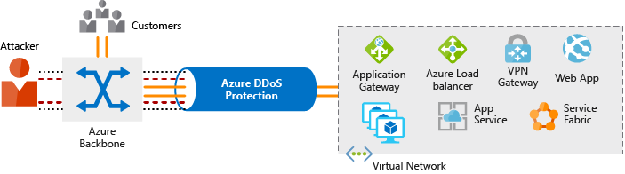
Azure DDoS Protection protects at layer 3 (network layer) and layer 4 (transport layer). Key benefits include:
- Always-on traffic monitoring: Your application traffic patterns are monitored 24 hours a day, 7 days a week, looking for indicators of DDoS attacks. Azure DDoS Protection instantly and automatically mitigates the attack, once it's detected. As part of the mitigation, traffic sent to the protected resource is redirected by the DDoS protection service and several checks are performed. Azure DDoS Protection drops attack traffic and forwards the remaining traffic to its intended destination. Within a few minutes of attack detection, you're notified using Azure Monitor metrics.
- Adaptive real time tuning: Intelligent traffic profiling learns your application's traffic over time, and selects and updates the profile that is the most suitable for your service. The profile adjusts as traffic changes over time.
- DDoS Protection analytics, metrics, and alerting: Azure DDoS Protection exposes rich telemetry through Azure Monitor. You can configure alerts for any of the Azure Monitor metrics that DDoS Protection uses. You can integrate logging with Azure Event Hubs, Azure Monitor logs, and Azure Storage for advanced analysis.
Azure DDoS Protection supports two tier types, DDoS IP Protection and DDoS Network Protection. The tier is configured in the Azure portal when you configure Azure DDoS Protection.
- DDoS Network Protection: Combined with application design best practices, DDoS Network Protection provides enhanced DDoS mitigation features to defend against DDoS attacks. It's automatically tuned to help protect your specific Azure resources in a virtual network. Protection is simple to enable on any new or existing virtual network, and it requires no application or resource changes.
- DDoS IP Protection: DDoS IP Protection is a pay-per-protected IP model. It contains the same core engineering features as DDoS Network Protection, but doesn't include the value-added services—such as DDoS rapid response support, cost protection, and discounts on WAF—that are part of DDoS Network Protection.
A common question is: why consider adding DDoS Protection if services running on Azure are already protected by default infrastructure-level DDoS protection? The default infrastructure protection has a higher threshold than most applications can handle, and it doesn't provide telemetry or alerting. Traffic volume that the platform perceives as harmless can be devastating to the application receiving it. By onboarding to Azure DDoS Protection, your application gets dedicated monitoring to detect attacks and application-specific thresholds. A service is protected with a profile tuned to its expected traffic volume, providing a tighter defense against DDoS attacks.
Azure DDoS Protection protects at layers 3 and 4. For web applications, protection at layer 7 (the application layer) requires adding a Web Application Firewall (WAF) offering. Combining Azure DDoS Protection with a WAF provides multi-layered protection against both network-level and application-level attacks—consistent with a defense-in-depth security strategy.
DDoS Protection analytics and visibility
One of the key advantages of Azure DDoS Protection over default infrastructure protection is the rich telemetry it provides before, during, and after an attack:
- Attack analytics: During an active attack, you receive detailed reports in five-minute increments. After the attack ends, you receive a complete summary report. You can stream mitigation flow logs to Microsoft Sentinel or another security information and event management (SIEM) system for near real-time monitoring.
- Attack metrics: Azure Monitor makes summarized metrics from each attack accessible, so you can track patterns and trends over time.
- Attack alerting: Configure alerts at the start and stop of an attack, and throughout its duration, using built-in attack metrics. Alerts integrate with operational tools like Azure Monitor logs, Azure Storage, email, and the Azure portal.
This telemetry capability is a key differentiator from the default infrastructure-level DDoS protection, which provides no visibility into ongoing or historical attacks. For organizations that need to understand their threat landscape, demonstrate compliance, or investigate incidents, this visibility is essential.
DDoS rapid response
Organizations using DDoS Network Protection have access to the DDoS rapid response (DRR) team during an active attack. DRR experts assist with attack investigation while an attack is underway and provide post-attack analysis. This expert support complements the automated protection already in place, providing a human element for complex or prolonged attacks.
Best practices for DDoS protection
A multi-layered approach to DDoS protection is most effective:
- Combine DDoS Protection with WAF: Use Azure DDoS Protection for network-layer (layers 3 and 4) protection and a WAF for application-layer (layer 7) protection. Neither service alone covers all attack vectors.
- Design for resilience: Build applications with redundancy so that if one component is temporarily impacted, the overall application can continue serving users.
- Enable telemetry and alerting: Configure Azure Monitor alerts for DDoS metrics so that your security team is notified immediately when an attack is detected.
- Plan for incidents: Have an incident response plan in place before an attack occurs, so your team knows how to respond quickly and coordinate effectively.
Describe Azure Firewall
A firewall is a security device, either hardware, software, or a combination of both, that monitors and controls incoming and outgoing network traffic based on predetermined security rules. Its primary purpose is to establish a barrier between a trusted internal network and untrusted external networks, such as the internet, to protect the internal network from malicious attacks.
Azure Firewall is a managed, cloud-based network security service that provides threat protection for your cloud workloads and resources running in Azure.
You can deploy Azure Firewall on any virtual network, but the best approach is to use it on a centralized virtual network. All your other virtual and on-premises networks route through it. The advantage of this model is the ability to centrally control network traffic for all your VNets across different subscriptions.
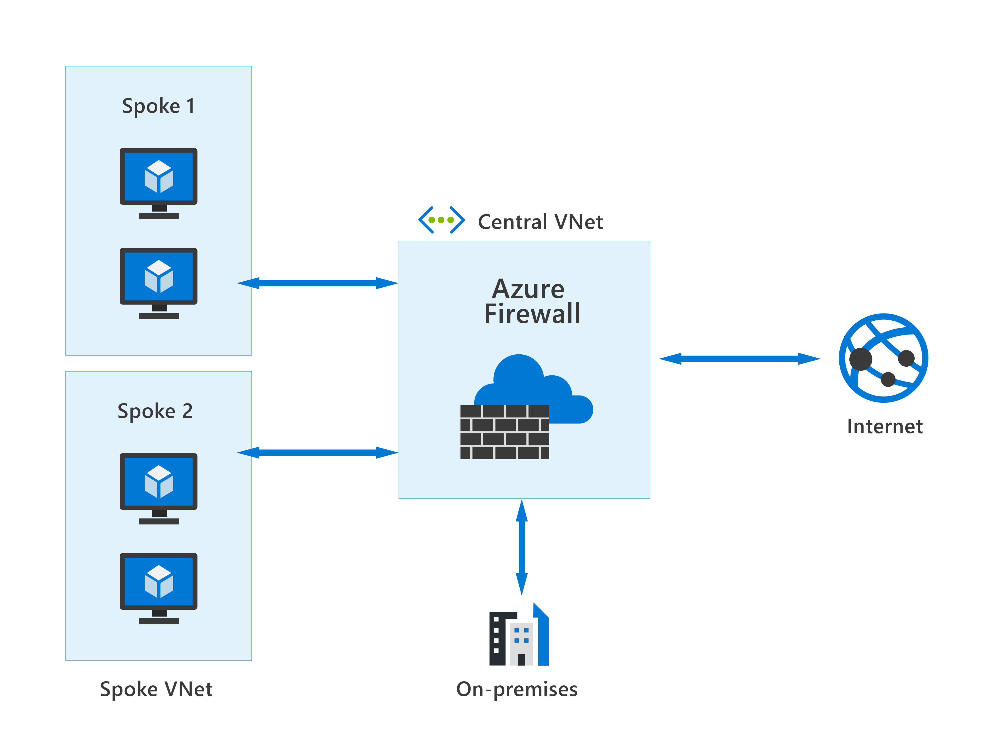
With Azure Firewall, you can scale up the usage to accommodate changing network traffic flows, so you don't need to budget for peak traffic. Network traffic is subjected to the configured firewall rules when you route it to the firewall as the subnet default gateway.
Key features of Azure Firewall
- Stateful Firewall: Azure Firewall is a stateful firewall, meaning it can keep track of the state of active connections and make decisions based on the context of the traffic.
- Built-in high availability and availability zones: Azure Firewall has built-in high availability, meaning it's designed to ensure continuous operation and minimal downtime, even in the event of failures or high traffic loads. Azure Firewall can be configured to span multiple availability zones where each availability zone is made up of one or more datacenters equipped with independent power, cooling, and networking. Azure Firewall's support for availability zones ensures higher availability and resilience by distributing resources across these separate zones.
- Network and application level filtering: Azure Firewall allows you to create and enforce network traffic filtering rules for both inbound and outbound traffic. You can define rules based on IP addresses, ports, and protocols. Azure Firewall can filter traffic based on the application-layer protocols such as HTTP/S. This means you can control access to fully qualified domain names (FQDNs).
- Source and destination network address translation (NAT): Network Address Translation is a method of remapping an IP address into another IP address to manage and secure network traffic. Azure Firewall supports source network address translation (SNAT). SNAT translates the private IP address of a network resource (the source) to an Azure public IP address. This identifies and allows traffic originating from the virtual network to internet destinations. Similarly, Azure Firewall supports destination network address translation (DNAT). With DNAT, the public IP address used to access specific services inside your network is translated and filtered to the private IP addresses of the resource on the virtual network (the destination). This allows traffic, originating from the internet, to access your private resources.
- Threat intelligence: Azure Firewall integrates with Microsoft's Threat Intelligence feed to alert you about known malicious IP addresses and domains, helping to protect your network from threats. Threat intelligence-based filtering can be enabled for your firewall to alert and deny traffic from/to known malicious IP addresses and domains.
- Logging and Monitoring: Azure Firewall provides logging and monitoring capabilities to help you keep track of firewall activity and diagnose issues. Logs can be sent to Azure Monitor, Log Analytics, or Event Hubs for further analysis.
- Integration with Azure services: Azure Firewall integrates with other Azure services, such as Azure Virtual Networks, Azure Policy, and Microsoft Defender for Cloud, providing a cohesive security solution for your cloud infrastructure.
Azure Firewall is offered in three tiers: Basic, Standard, and Premium. Each tier is designed for different organizational needs and security requirements.
Azure Firewall tiers
- Azure Firewall Basic: Designed for small and medium-sized businesses (SMBs). It provides essential threat protection at an affordable price. Azure Firewall Basic supports Threat Intelligence in alert mode only and uses a fixed-scale unit with two virtual machine backend instances. It's recommended for environments with an estimated throughput of 250 Mbps.
- Azure Firewall Standard: Provides layer 3 through layer 7 filtering and threat intelligence feeds directly from Microsoft Cyber Security. It alerts you to and blocks traffic to or from known malicious IP addresses and domains, updating in real time to protect against new and emerging threats. This is the most commonly used tier for production enterprise environments.
- Azure Firewall Premium: Provides advanced capabilities, including signature-based intrusion detection and prevention system (IDPS) for rapid attack detection. IDPS identifies specific patterns—such as byte sequences in network traffic or known malicious instruction sequences used by malware. With over 67,000 signatures in more than 50 categories, updated in real time, Azure Firewall Premium protects against new and emerging exploits such as malware, phishing, coin mining, and Trojan attacks. Premium is designed for highly sensitive and regulated environments.
Azure Firewall Manager
Azure Firewall Manager provides a central place to manage Azure Firewalls across multiple subscriptions. Rather than managing each firewall individually, Firewall Manager lets you define a common set of network and application rules in firewall policies and apply those policies to all firewalls across your organization's tenant. This is particularly useful for organizations with complex, distributed network environments spanning multiple Azure subscriptions or regions.
Firewall Manager supports firewalls deployed in both virtual networks and Virtual WAN (Secure Virtual Hub) environments.
Integration with Security Copilot
Azure Firewall is integrated with Microsoft Security Copilot. The Azure Firewall integration helps analysts perform detailed investigations of the malicious traffic intercepted by the network intrusion detection and prevention system (available in the standard and premium Azure Firewall SKUs) and/or the threat intelligence features, using natural language questions in the Security Copilot standalone experience.
Describe Web Application Firewall
Web applications are increasingly targeted by malicious attacks that exploit commonly known vulnerabilities. Preventing such attacks in application code is challenging. It can require rigorous maintenance, patching, and monitoring.
Web Application Firewall (WAF) provides centralized protection of your web applications from common exploits and vulnerabilities. A centralized WAF helps make security management simpler, improves the response time to a security threat, and allows patching a known vulnerability in one place, instead of securing each individual web application. A WAF also gives application administrators better assurance of protection against threats and intrusions.
Among the types of threats that WAF can protect against are distributed denial of service (DDoS) attacks that occur at the application layer. While Azure DDoS Protection services protect customers against DDoS attacks that can occur at the network and transport layers, Azure WAF protects web applications against application-layer DDoS attacks, such as HTTP Floods. These defenses can prevent attackers from reaching your application and affecting your application's availability and performance.
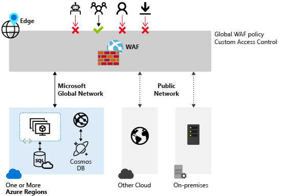
Common attacks WAF protects against
WAF defends against a wide range of threats defined in the Open Web Application Security Project (OWASP) core rule set—a set of generic attack detection rules designed as a baseline for any WAF. Common attacks WAF protects against include:
- SQL injection: Attackers insert malicious SQL code into input fields to manipulate or extract data from the application's backend database. SQL injection can expose sensitive data or allow attackers to modify or delete database records.
- Cross-site scripting (XSS): Attackers inject malicious scripts into web pages that other users view. The scripts can steal session tokens, credentials, or sensitive data from the affected user's browser.
- HTTP floods: High volumes of HTTP requests overwhelm a web application at the application layer. This type of distributed denial of service (DDoS) attack targets layer 7 (the application layer), which Azure DDoS Protection alone doesn't cover. Azure WAF detects and blocks abnormal traffic patterns at this layer.
- Remote file inclusion: Attackers trick a web application into including a malicious remote file, which then executes on the server and can give the attacker unauthorized access.
By using a centralized WAF, you can patch newly discovered vulnerabilities in one place rather than updating protection on every individual web application. This simplifies security management and reduces the window of exposure when new threats emerge.
Supported deployment options
Azure Web Application Firewall can be deployed with several Microsoft services, giving you flexibility to protect web applications wherever they're hosted:
- Azure Application Gateway: Provides regional WAF protection for web applications hosted behind the gateway. Application Gateway WAF includes deep HTTP packet inspection and supports complex routing decisions—making it well suited for applications hosted in a single Azure region.
- Azure Application Gateway for Containers: Extends WAF protection to containerized workloads managed through Application Gateway for Containers, bringing application-layer security to modern container-based architectures.
- Azure Front Door: Microsoft's global content delivery network (CDN) and application delivery platform. WAF on Azure Front Door provides global protection, blocking attacks closer to the source before traffic reaches your infrastructure. This is useful for globally distributed applications that need consistent protection across all regions.
- Azure Content Delivery Network: WAF on Azure CDN extends protection to static and dynamic content delivered through the CDN.
Each deployment option provides WAF capabilities customized for its specific service and scale requirements.
Integration with Microsoft Security Copilot
Azure Web Application Firewall is integrated with Microsoft Security Copilot. Azure Web Application Firewall integration in Copilot enables deep investigation of Azure WAF events, using natural language prompts and responses. It can help you investigate WAF logs triggered by Azure WAF in a matter of minutes and provide related attack vectors. Azure WAF integration with Copilot provides visibility into your environment's threat landscape.
Describe network segmentation in Azure
Segmentation is about dividing something into smaller pieces. An organization, for example, typically consists of smaller business groups such as human resources, sales, customer service, and more. In an office environment, it's common to see each business group have their own dedicated office space, while members of the same group share an office. This enables members of the same business group to collaborate, while maintaining separation from other groups to address the confidentiality requirements of each business.
The same concept applies with corporate IT networks. The main reasons for network segmentation are:
- The ability to group related assets that are a part of (or support) workload operations.
- Isolation of resources.
- Governance policies set by the organization.
Network segmentation also supports the Zero Trust model and a layered approach to security that is part of a defense in depth strategy.
Assume breach is a principle of the Zero Trust model so the ability to contain an attacker is vital in protecting information systems. When workloads (or parts of a given workload) are placed into separate segments, you can control traffic from/to those segments to secure communication paths. If one segment is compromised, you can better contain the impact and prevent it from spreading laterally through the rest of your network.
Network segmentation can secure interactions between perimeters. This approach can strengthen an organization's security posture, contain risks in a breach, and stop attackers from gaining access to an entire workload.
Azure Virtual Network
Azure Virtual Network (VNet) is the fundamental building block for your organization's private network in Azure. A virtual network is similar to a traditional network that you'd operate in your own data center, but brings with it additional benefits of Azure's infrastructure such as scale, availability, and isolation.
Azure virtual network enables organizations to segment their network. Organizations can create multiple virtual networks per region per subscription, and multiple smaller networks (subnets) can be created within each virtual network.
VNets provide network-level containment of resources with no traffic allowed across VNets or inbound to the virtual network by default. Communication needs to be explicitly provisioned. This enables more control over how Azure resources in a virtual network communicate with other Azure resources, the internet, and on-premises networks.
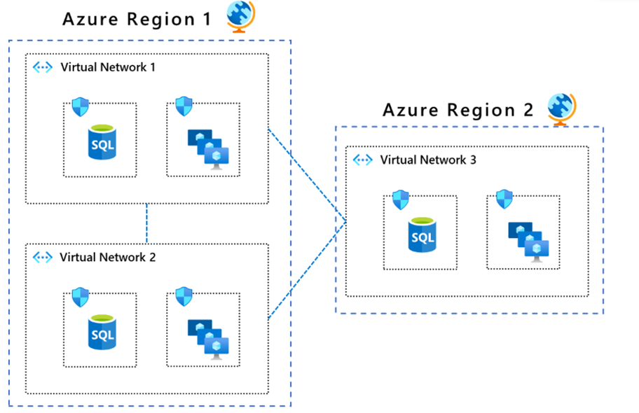
VNet capabilities
Azure virtual networks support a range of networking capabilities that help you build a secure and well-segmented environment:
- Communicate with the internet: Resources in a virtual network can communicate outbound to the internet by default. You control inbound access using public IP addresses or load balancers.
- Communicate between Azure resources: Resources in the same virtual network can communicate securely with each other without going over the public internet.
- Connect to on-premises networks: Azure virtual networks support connections to on-premises environments through site-to-site VPN, point-to-site VPN, or Azure ExpressRoute, allowing you to extend your private network into Azure.
- Filter network traffic: You can use network security groups (NSGs) and Azure Firewall to filter traffic between subnets, controlling what traffic is allowed in and out of different parts of your network.
- Route network traffic: Azure automatically routes traffic between subnets and connected networks. You can define custom routing rules to control how traffic flows through your environment.
Subnets
Within a virtual network, you can create smaller network segments called subnets. Subnets let you divide a virtual network into segments with different security requirements or functions. For example, you might place web servers in one subnet and database servers in another, with access controls that define which traffic can flow between them. Each subnet can have its own controls, making it easier to isolate workloads and contain the impact of a potential breach.
VNet peering
Virtual network peering connects two virtual networks so that resources in either network can communicate with each other as if they were in the same virtual network. VNet peering works across Azure regions (called global virtual network peering), meaning you can connect virtual networks in different geographic locations. Traffic between peered virtual networks uses the Azure backbone network—not the public internet—keeping the traffic private and low-latency.
Network segmentation through virtual networks, subnets, and peering aligns directly with the Zero Trust principle of assume breach. If one segment is compromised, you can contain the impact and prevent it from spreading laterally through the rest of your network. Each boundary between segments is an opportunity to inspect, filter, and control traffic.
Describe Azure Network Security Groups
Network security groups (NSGs) let you filter network traffic to and from Azure resources in an Azure virtual network; for example, a virtual machine. An NSG consists of rules that define how the traffic is filtered. You can associate only one network security group to each virtual network subnet and network interface in a virtual machine. The same network security group, however, can be associated with as many different subnets and network interfaces as you choose.
In the highly simplified diagram that follows, you can see an Azure virtual network with two subnets that are connected to the internet, and each subnet has a virtual machine. Subnet 1 has an NSG assigned to it that's filtering inbound and outbound access to VM1, which needs a higher level of access. In contrast, VM2 could represent a public-facing machine that doesn't require an NSG.
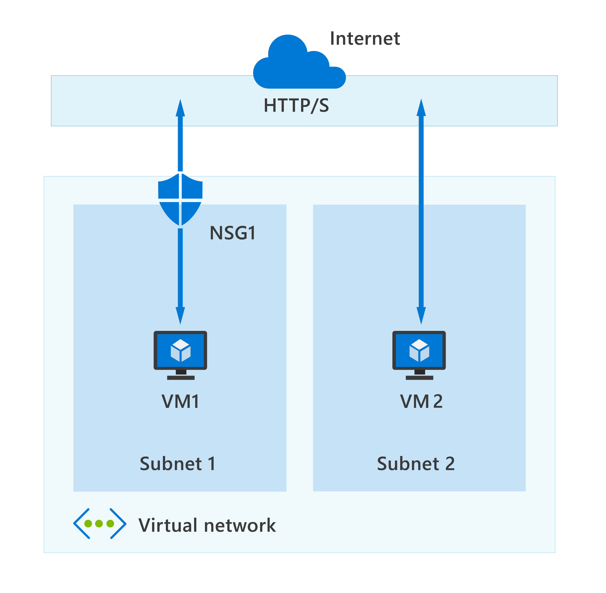
Inbound and outbound security rules
An NSG is made up of inbound and outbound security rules. NSG security rules are evaluated by priority using five information points: source, source port, destination, destination port, and protocol to either allow or deny the traffic. By default, Azure creates a series of rules, three inbound and three outbound rules, to provide a baseline level of security. You can't remove the default rules, but you can override them by creating new rules with higher priorities.
Each rule specifies one or more of the following properties:
- Name: Every NSG rule needs to have a unique name that describes its purpose. For example, AdminAccessOnlyFilter.
- Priority: Rules are processed in priority order, with lower numbers processed before higher numbers. When traffic matches a rule, processing stops. This means that any other rules with a lower priority (higher numbers) won't be processed.
- Source or destination: Specify either individual IP address or an IP address range, service tag (a group of IP address prefixes from a given Azure service), or application security group. Specifying a range, a service tag, or application security group, enables you to create fewer security rules.
- Protocol: What network protocol will the rule check? The protocol can be any of: TCP, UDP, ICMP or Any.
- Direction: Whether the rule should be applied to inbound or outbound traffic.
- Port range: You can specify an individual or range of ports. Specifying ranges enables you to be more efficient when creating security rules.
- Action: Finally, you need to decide what will happen when this rule is triggered.
Descriptions for the default inbound rules are as follows:
- AllowVNetInBound - The AllowVNetInBound rule is processed first as it has the lowest priority value. Recall that rules with the lowest priority value get processed first. This rule allows traffic from a source with the VirtualNetwork service tag to a destination with the VirtualNetwork service tag on any port, using any protocol. If a match is found for this rule, then no other rules are processed. If no match is found, then the next rule gets processed.
- AllowAzureLoadBalancerInBound - The AllowAzureLoadBalancerInBound rule is processed second, as its priority value is higher than the AllowVNetInBound rule. This rule allows traffic from a source with the AzureLoadBalancer service tag to a destination with the AzureLoadBalancer service tag on any port to any IP address on any port, using any protocol. If a match is found for this rule, then no other rules are processed. If no match is found, then the next rule gets processed.
- DenyAllInBound - The last rule in this NSG is the DenyAllInBound rule. This rule denies all traffic from any source IP address on any port to any other IP address on any port, using any protocol.
In summary, any virtual network subnet or network interface card to which this NSG is assigned will only allow inbound traffic from an Azure Virtual Network or an Azure load balancer (as defined by their respective service tags). All other inbound network traffic is denied. You can't remove the default rules, but you can override them by creating new rules with higher priorities (lower priority value).
The default outbound rules follow a similar pattern. The AllowVNetOutBound rule allows outbound traffic from any resource in a virtual network to any other resource in a virtual network. The AllowInternetOutBound rule allows outbound traffic to the internet. The DenyAllOutBound rule denies all other outbound traffic. Like the inbound defaults, these outbound rules can be overridden by creating new rules with higher priorities.
Application security groups
Application security groups (ASGs) let you configure network security as a natural extension of your application's structure. You can group virtual machines and define network security policies based on those groups. For example, if you have a multi-tier application with web servers, application servers, and database servers, you can create ASGs named WebServers, AppServers, and DbServers.
Rather than specifying individual IP addresses in your NSG rules, you reference the application security group as the source or destination. Azure applies the rule to all virtual machines in that group. As your application scales and you add new VMs, you simply add them to the appropriate ASG—the existing NSG rules automatically apply. This makes it easier to manage security policies that reflect your application's structure rather than tracking IP addresses manually.
What is the difference between Network Security Groups (NSGs) and Azure Firewall?
The Azure Firewall service complements network security group functionality. Together, they provide better "defense-in-depth" network security. Network security groups provide distributed network layer traffic filtering to limit traffic to resources within virtual networks in each subscription. Azure Firewall is a fully stateful, centralized network firewall as-a-service, which provides network and application-level protection across different subscriptions and virtual networks.
Describe Azure Bastion
Let's assume you've set up multiple virtual networks that use a combination of NSGs and Azure Firewalls to protect and filter access to the assets and resources, including virtual machines (VMs). You're now protected from external threats, but need to allow your developers and data scientist, who are working remotely, direct access to those VMs.
In a traditional model, you'd need to expose the Remote Desktop Protocol (RDP) and/or Secure Shell (SSH) ports to the internet. These protocols can be used to gain remote access to your VMs. This process creates a significant surface threat that can be exploited by attackers who actively hunt accessible machines with open management ports, like RDP or SSH. When a VM is successfully compromised, it's used as the entry point to attack further resources within your environment.
Azure Bastion
Azure Bastion is a service you deploy that lets you connect to a virtual machine using your browser and the Azure portal. The Azure Bastion service is a fully platform-managed PaaS service that you provision inside your virtual network. Azure Bastion provides secure and seamless RDP and SSH connectivity to your virtual machines directly from the Azure portal using Transport Layer Security (TLS). When you connect via Azure Bastion, your virtual machines don't need a public IP address, agent, or special client software.
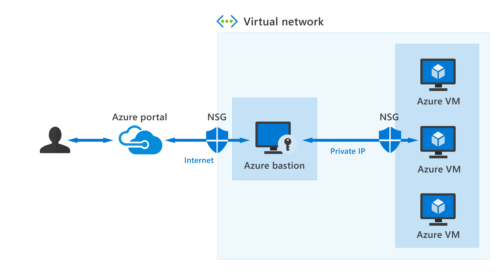
Bastion provides secure RDP and SSH connectivity to all VMs in the virtual network, and peered virtual networks, in which it's provisioned. Using Azure Bastion protects your virtual machines from exposing RDP/SSH ports to the outside world, while still providing secure access using RDP/SSH.
Azure Bastion deployment is per virtual network with support for virtual network peering, not per subscription/account or virtual machine. Once you provision the Azure Bastion service in your virtual network, the RDP/SSH experience is available to all your VMs in the same VNet, and peered VNets.
Key benefits of Azure Bastion
The following are key benefits of Azure Bastion:
- RDP and SSH directly in Azure portal: You get to the RDP and SSH session directly in the Azure portal, using a single-click experience.
- Remote session over TLS and firewall traversal for RDP/SSH: From the Azure portal, a connection to the VM opens an HTML5-based web client that is automatically streamed to your local device. Your Remote Desktop Protocol (RDP) and Secure Shell (SSH) traverse corporate firewalls securely. The connection uses the Transport Layer Security (TLS) protocol to establish encryption.
- No Public IP required on the Azure VM: Azure Bastion opens the RDP/SSH connection to your Azure virtual machine using private IP on your VM. You don't need a public IP.
- No hassle managing NSGs: A fully managed platform PaaS service from Azure that's hardened internally to provide secure RDP/SSH connectivity. You don't need to apply any NSGs on an Azure Bastion subnet.
- Protection against port scanning: Because you don't need to expose your virtual machines to the internet, your VMs are protected against port scanning by rogue and malicious users located outside your virtual network.
- Hardening in one place to protect against zero-day exploits: Azure Bastion is a fully platform-managed PaaS service. Because it sits at the perimeter of your virtual network, you don't need to worry about hardening each virtual machine in the virtual network. The Azure platform protects against zero-day exploits by keeping the Azure Bastion hardened and always up to date for you.
Use Azure Bastion to establish secure RDP and SSH connectivity to your virtual machines in Azure.
Azure Bastion tiers
Azure Bastion is available in four tiers, allowing organizations to choose the right level of capability for their needs:
- Developer: Uses shared infrastructure and is provided at no cost. Designed for development and testing environments—not production. Developer tier supports one virtual machine connection at a time and is available in select regions.
- Basic: Provides a dedicated deployment with fixed capacity. Suitable for production environments with moderate connection requirements. Basic tier offers the core Bastion capabilities without the advanced features of higher tiers.
- Standard: Includes all Basic features plus scalability, host scaling, shareable links, IP-based connections, custom port support, native client support, and file transfer. Standard is suited for organizations that need flexibility and a wider range of access options.
- Premium: Includes all Standard features plus session recording (for compliance and audit requirements), and supports private-only deployment—meaning Bastion can be deployed without a public IP address for enhanced security. Premium is designed for organizations with strict regulatory or compliance requirements.
How to connect using Azure Bastion
Azure Bastion supports several connection methods depending on the tier:
- Browser-based connections: Connect to a virtual machine directly through the Azure portal using an HTML5 web client. No additional client software is required. Available for all tiers.
- Native client connections: Connect using the SSH or RDP client already installed on your local computer. This provides a more familiar experience for users accustomed to native tools. Available for Standard and Premium tiers.
- Shareable links: Create shareable links that allow authorized users to connect to VMs without needing to access the Azure portal directly. Available for Standard and Premium tiers.
In all connection methods, the traffic goes over TLS on port 443, which means it traverses corporate firewalls that allow standard HTTPS traffic—without needing to open additional ports.
Describe Azure Key Vault
Azure Key Vault is a cloud service for securely storing and accessing secrets. A secret is anything that you want to tightly control access to, such as API keys, passwords, certificates, or cryptographic keys.
Azure Key Vault helps solve the following problems:
- Secrets management. Use Key Vault to securely store and tightly control access to tokens, passwords, certificates, API keys, and other secrets.
- Key management. You can use Key Vault as a key management solution. Key Vault makes it easier to create and control the encryption keys used to encrypt your data.
- Certificate management. Key Vault lets you provision, manage, and deploy your public and private TLS/SSL certificates for use with Azure and internally connected resources.
Azure Key Vault offers two service tiers, described later in this unit.
Why use Key Vault?
Centralize application secrets. Centralizing storage of application secrets in Azure Key Vault allows you to control their distribution and greatly reduces the chances that secrets may be accidentally leaked. When application developers use Key Vault, they no longer need to store security information as part of the code in their application. Instead, the application retrieves the information it needs at runtime using a unique identifier—with no custom code required to protect the secret.
Securely store secrets and keys. Access to a key vault requires proper authentication and authorization before a caller (user or application) can get access. Authentication establishes the identity of the caller, while authorization determines the operations that they're allowed to perform.
Authentication is done via Microsoft Entra ID. Authorization may be done via Azure role-based access control (Azure RBAC) or Key Vault access policy.
Azure Key Vault is designed so that Microsoft doesn't see or extract your data.
Monitor access and use. Azure Key Vault supports logging so you can monitor how and when your secrets and keys are accessed. You can route these logs to your preferred monitoring or storage solution for analysis and retention. This visibility helps you detect unauthorized access attempts, support compliance audits, and investigate security incidents.
Simplified administration of application secrets. Azure Key Vault simplifies the administration that would typically be required to secure your application secrets, including:
- Replicating the contents of your Key Vault within a region and to a secondary region. Data replication ensures high availability and takes away the need of any action from the administrator to trigger the failover.
- Providing standard management options through the Azure portal.
- Automating certain tasks on certificates that you purchase from Public Certificate Authorities (CAs), such as enrollment and renewal.
In addition, Azure Key Vaults allow you to segregate application secrets. Applications may access only the vault that they're allowed to access, and they can be limited to only perform specific operations. You can create an Azure Key Vault per application and restrict the secrets stored in a Key Vault to a specific application and team of developers.
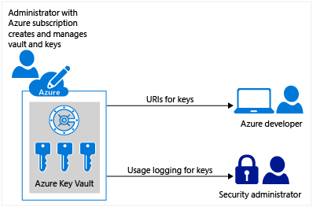
Key Vault and Zero Trust
Zero Trust is a security strategy based on three principles: verify explicitly, use least privilege access, and assume breach. Azure Key Vault directly supports the least privilege access principle. By centralizing the storage of secrets and keys, Key Vault enables you to grant applications and users access only to the specific secrets they need—nothing more. This limits the blast radius if credentials are ever compromised.
Authentication to Key Vault is handled by Microsoft Entra ID, which verifies the identity of every caller. Authorization is then determined by Azure role-based access control (Azure RBAC) or Key Vault access policies, giving you granular control over who can access or manage secrets. Azure Key Vault is designed so that Microsoft doesn't see or extract your data—your secrets, keys, and certificates are for your use only.
Integration with Azure services
Azure Key Vault integrates with a wide range of Azure services, making it the natural choice for managing secrets across your environment:
- Azure Disk Encryption: Stores the encryption keys used to encrypt virtual machine disks.
- Azure SQL Database and SQL Server: Stores and manages the encryption keys used to protect data stored in databases.
- Azure App Service: Applications retrieve connection strings, API keys, and other configuration secrets from Key Vault at runtime—without storing them in application code or configuration files. This eliminates a common source of accidental credential exposure.
- Certificate management: Key Vault provisions, manages, and automatically renews public and private TLS/SSL certificates from public certificate authorities (CAs). This reduces the operational burden of certificate lifecycle management and lowers the risk of certificate-related outages.
Key Vault service tiers
Azure Key Vault offers two service tiers to meet different security and compliance requirements:
- Standard tier: Encrypts with software-based key protection. Suitable for most typical business scenarios.
- Premium tier: Offers hardware security module (HSM)-protected keys. An HSM is a dedicated hardware device that generates and stores cryptographic keys in a tamper-resistant environment—keys never leave the HSM boundary. The Premium tier is designed for organizations with stringent compliance requirements, such as those in financial services or government sectors.
Both tiers provide the same core capabilities—secrets management, key management, and certificate management—with the difference being the level of hardware protection applied to cryptographic keys.
Section Summary
- Azure DDoS Protection — protects applications at layers 3-4 (network/transport) from three attack types: Volumetric (floods overwhelming bandwidth), Protocol (exploits L3/L4 protocol weaknesses exhausting server resources), Resource/Application layer (L7 HTTP floods — requires WAF for full coverage). Two tiers: DDoS Network Protection (enhanced mitigation for all public IPs in a vNet — auto-tuning, attack analytics, metrics/alerting, DDoS Rapid Response team support, cost protection, WAF discounts) and DDoS IP Protection (pay-per-IP model with same core features but no value-added services). Always-on traffic monitoring adaptively learns app traffic patterns and tunes thresholds. Default infrastructure protection covers all Azure services but has a higher threshold and provides no telemetry or alerting — onboarding to DDoS Protection adds dedicated monitoring and app-specific thresholds. Attack analytics provide detailed reports in 5-minute increments during attacks with post-attack summaries; integrates with Azure Monitor, Event Hubs, Log Analytics, SIEM. Best practice: combine DDoS Protection (L3-4) with WAF (L7) for multi-layered defense
- Azure Firewall — managed, cloud-based, fully stateful firewall-as-a-service. Best deployed on a centralized virtual network with all other VNets and on-premises networks routing through it. Key features: stateful inspection, built-in HA with availability zones, network-level filtering (IP/ports/protocols), application-level filtering (FQDNs), SNAT/DNAT, threat intelligence integration (alert/block known malicious IPs and domains), logging to Azure Monitor/Log Analytics/Event Hubs, integration with Azure Policy and Defender for Cloud. Three tiers: Basic (SMB — 250 Mbps throughput, fixed-scale 2 VM backend, threat intel in alert mode only), Standard (production enterprise — L3-L7 filtering, real-time threat intel feeds, alert and block malicious traffic), Premium (sensitive/regulated — IDPS with 67,000+ signatures in 50+ categories updated in real time, detecting malware, phishing, coin mining, Trojans). Azure Firewall Manager centrally manages firewall policies across multiple subscriptions, supports VNet and Virtual WAN (Secure Virtual Hub) environments. Integrates with Security Copilot for natural language investigation of malicious traffic
- Web Application Firewall (WAF) — centralized protection of web apps from common exploits and vulnerabilities, particularly OWASP Top 10. Protects against: SQL injection (malicious SQL in input fields to extract/modify database data), Cross-site scripting (XSS) (malicious scripts stealing session tokens/credentials), HTTP floods (application-layer DDoS — not covered by Azure DDoS Protection alone), Remote file inclusion (tricking app into executing malicious remote files). Uses OWASP Core Rule Set (CRS) as baseline detection rules. Deployment options: Azure Application Gateway (regional WAF with deep HTTP inspection and complex routing), Application Gateway for Containers (containerized workloads), Azure Front Door (global CDN-based protection blocking attacks closer to source), Azure CDN (static/dynamic content delivery). Centralized WAF enables patching vulnerabilities in one place rather than per-app. Integrates with Security Copilot for natural language investigation of WAF logs and attack vectors
- Network Segmentation — dividing networks into segments supports Zero Trust assume-breach principle by containing attacker lateral movement. Azure Virtual Network (VNet) — fundamental building block for private networks in Azure, provides network-level containment with no cross-VNet or inbound traffic by default. Supports multiple VNets per region per subscription, with subnets for further segmentation. VNet capabilities: internet communication, secure Azure resource communication, on-premises connectivity (site-to-site VPN, point-to-site VPN, ExpressRoute), traffic filtering (NSGs, Azure Firewall), custom routing. Subnets divide VNets into segments with different security requirements (e.g., web servers vs database servers in separate subnets). VNet peering connects VNets across regions using Azure backbone network (private, low-latency) — enabling hub-spoke topologies where a central firewall VNet inspects all traffic
- Network Security Groups (NSGs) — distributed network-layer traffic filters applied at subnet or NIC level. Each rule specifies: name, priority (100-4096 — lower number processes first), source/destination (IP, range, service tag, ASG), protocol (TCP/UDP/ICMP/Any), direction (inbound/outbound), port range, action (allow/deny). Processing stops at first match. Default inbound rules: AllowVNetInBound (traffic within VNet), AllowAzureLoadBalancerInBound (health probes), DenyAllInBound (catch-all deny). Default rules can't be removed but can be overridden with higher-priority custom rules. Application Security Groups (ASGs) — group VMs by application role (WebServers, AppServers, DbServers) and reference in NSG rules instead of individual IP addresses — automatically applies to all VMs in the group as they scale. NSG vs Azure Firewall: NSGs provide distributed filtering within VNets (subscription-level); Azure Firewall provides centralized filtering across subscriptions and VNets (organization-level). Together they provide defense-in-depth
- Azure Bastion — fully managed PaaS service provisioned inside a VNet providing secure RDP and SSH connectivity to VMs directly from Azure portal over TLS (port 443). No public IP, agent, or special client software needed on VMs. Protects VMs from RDP/SSH port scanning, zero-day exploits, and reduces NSG management. Deployed per VNet (not per subscription/VM) with VNet peering support — one Bastion covers all VMs in the VNet and peered VNets. Four tiers: Developer (free, shared infrastructure, dev/test only, single connection at a time, select regions), Basic (dedicated fixed-capacity deployment for production with moderate connections), Standard (adds host scaling, shareable links, IP-based connections, custom ports, native client support, file transfer), Premium (adds session recording for compliance/audit, private-only deployment without public IP). Connection methods: Browser-based HTML5 web client (all tiers), Native client SSH/RDP (Standard+), Shareable links (Standard+)
- Azure Key Vault — cloud service for securely storing and managing secrets (API keys, passwords), cryptographic keys (encryption keys), and certificates (TLS/SSL lifecycle). Solves three problems: secrets management (controlled access to tokens, passwords, certs, API keys), key management (create and control encryption keys), certificate management (provision, manage, deploy public/private TLS/SSL certs from public CAs with auto-renewal). Benefits: centralize application secrets (remove secrets from application code), secure storage (Microsoft Entra ID authentication + Azure RBAC or Key Vault access policies, Microsoft never sees your data), access monitoring (logging to preferred monitoring/storage), simplified administration (regional replication, standard Azure portal management, automated cert enrollment/renewal). Supports per-application segregation (one vault per app). Two tiers: Standard (software-based key protection — suitable for most scenarios), Premium (HSM-protected keys — tamper-resistant hardware, keys never leave HSM boundary, FIPS 140-2, designed for financial services/government). Zero Trust alignment: least privilege (grant access only to specific secrets), explicit verification (Entra ID for authentication), assume breach (limited blast radius). Integrates with Azure Disk Encryption (VM disk encryption keys), Azure SQL (database encryption keys), Azure App Service (runtime secret retrieval), and certificate auto-renewal
Key Concepts
DDoS Protection
- DDoS Protection Overview: Defends against volumetric (L3 — floods), protocol (L3-4 — SYN floods), and application-layer (L7 — HTTP floods) attacks. Default infrastructure-level protection is free and always-on for all Azure services.
- DDoS Network Protection: Enhanced mitigation for all public IPs in a vNet. Auto-tuning (adaptive tuning based on traffic patterns), attack analytics (near real-time metrics), metrics/alerts, cost protection (credit for scale-out costs during attack), and DDoS Rapid Response (DRR) team support.
- DDoS IP Protection: Per-IP enhancement — pay-per-IP basis, no vNet-wide requirement. Includes same auto-tuning and analytics as Network Protection.
Firewall & WAF
- Azure Firewall: Managed cloud-based stateful firewall-as-a-service. Standard = Layer 4 (network rules for TCP/UDP) + Layer 7 (application rules for FQDNs). Premium adds TLS inspection (decrypt, inspect, re-encrypt), IDPS (intrusion detection/prevention), and URL filtering.
- Web Application Firewall (WAF): Protects web apps from OWASP Top 10 threats (SQL injection, XSS, application-layer DDoS). Uses OWASP Core Rule Set (CRS). Deployed via Azure Front Door (global, edge) or Application Gateway (regional).
- Defense in Depth for Network: Combine DDoS Protection (L3-4), Azure Firewall (L4-7, general traffic), and WAF (L7, web-specific) for comprehensive multi-layered network protection.
Network Segmentation & Access
- Virtual Networks (VNets): Regional isolation boundaries in a subscription. Subnets segment within a VNet. VNet peering connects VNets across regions. Hub-spoke topology centralizes firewall and monitoring in a hub VNet.
- NSGs (Network Security Groups): Traffic filters applied at subnet or NIC level. Rules based on source/destination IP, port, and protocol. Priority 100-4096 — lower number wins. First match applies. Default rules exist (deny all inbound, allow outbound) but can be overridden.
- ASGs (Application Security Groups): Group VMs by application role (e.g., "web servers", "database servers") for NSG rules. ASG reference in NSG rule = rule applies to all VMs in that ASG. No need to maintain IP addresses.
- Azure Bastion: Managed jump box inside your VNet — browser-based RDP/SSH to VMs without public IPs. No special client needed. Reduces port scanning, vulnerability exposure, and management overhead.
Secrets Management
- Azure Key Vault: Central cloud service for securely storing and managing three distinct object types — each with different access patterns and use cases.
- Secrets: Read/write values — passwords, connection strings, API keys, tokens. Applications retrieve the plaintext value at runtime. You manage the value lifecycle.
- Keys: Cryptographic keys for encryption/signing — non-exportable. Key Vault performs crypto operations (encrypt, decrypt, sign, verify) without ever exposing the key material. Used for disk encryption, database encryption, and code signing.
- Certificates: Full TLS/SSL certificate lifecycle management — issuance, renewal, and rotation. Key Vault can integrate with CAs (DigiCert, Let's Encrypt) or import existing certificates.
- Tiers: Standard (software-protected keys) vs Premium (HSM-backed — FIPS 140-2 Level 2/3 validated, required for high-assurance scenarios).
3.2 Security Management
Domain 3: Microsoft Security Solutions (35-40%)
Module: Describe the security management capabilities of Microsoft Defender for Cloud
Describe Microsoft Defender for Cloud
Microsoft Defender for Cloud is a cloud-native application protection platform (CNAPP) with a set of security measures and practices designed to protect cloud-based applications from various cyber threats and vulnerabilities. Defender for Cloud covers resources and workloads running in Azure, on other clouds such as Amazon Web Services (AWS) and Google Cloud Platform (GCP), and in on-premises environments. It combines the capabilities of:
- A development security operations (DevSecOps) solution that unifies security management at the code level across multicloud and multiple-pipeline environments.
- A cloud security posture management (CSPM) solution that surfaces actions that you can take to prevent breaches.
- A cloud workload protection platform (CWPP) with specific protections for servers, containers, storage, databases, and other workloads.
- AI security and threat protection capabilities to discover and protect generative AI applications and workloads.
Three pillars of Microsoft Defender for Cloud
Defender for Cloud organizes its capabilities into three pillars: DevSecOps, CSPM, and CWPP. Together, these pillars give organizations a comprehensive security approach that spans from development pipelines all the way through to production workloads.
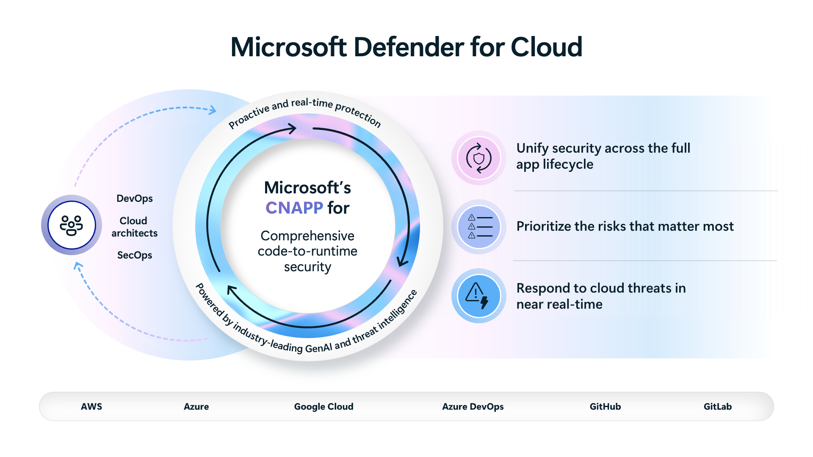
DevSecOps
DevSecOps integrates security practices into every phase of the software development lifecycle—an approach sometimes called "shift-left security" because it moves security checks earlier in the development process. Rather than discovering vulnerabilities at the point of deployment, built-in scans and gates catch issues while code is still being written.
Defender for Cloud helps you incorporate security practices early in the software development process. Defender for DevOps, a service available in Defender for Cloud, empowers security teams to manage DevOps security across multi-pipeline environments, such as GitHub and Azure DevOps. It provides a central console where security teams can configure DevOps resources and review findings from code, secrets, and open-source dependency vulnerability scans across multiple environments.
Cloud security posture management (CSPM)
Misconfiguration is one of the leading causes of cloud security incidents. A single setting left at its default value, or a permission that was never restricted, can create a significant vulnerability. CSPM addresses this by continuously assessing your systems and automatically alerting security staff when vulnerabilities or misconfigurations are found.
Microsoft Defender for Cloud uses tools and services in your cloud environment to monitor and prioritize security improvements. CSPM aggregates all findings into a secure score that reflects your organization's overall security posture, and provides hardening recommendations that guide security teams toward the most impactful improvements.
Cloud workload protection platform (CWPP)
Proactive security means protecting workloads from threats before those threats cause damage. CWPP surfaces workload-specific recommendations that lead you to the right security controls to protect your workloads.
Microsoft Defender for Cloud delivers CWPP through Microsoft Defender plans specific to the types of resources in your subscriptions—for example, Defender for Servers, Defender for Storage, or Defender for Databases. When your environment is threatened, security alerts indicate the nature and severity of the threat so you can plan your response.
Microsoft Security Copilot in Defender for Cloud
Microsoft Security Copilot is an AI-powered security assistant that helps security professionals perform security tasks at machine speed and scale. For organizations that are onboarded to Microsoft Security Copilot, Defender for Cloud embeds Security Copilot capabilities directly into its experience.
The integration with Security Copilot allows you to use natural language prompts to:
- Analyze and understand the context of a security recommendation.
- Get a concise summary of security findings across your environment.
- Receive remediation guidance for a specific issue.
- Delegate a recommendation to the appropriate resource owner.
This AI-powered experience helps security teams work more efficiently, focusing attention on the most critical issues rather than manually parsing security data.
Integration with the Microsoft Defender portal
Microsoft Defender for Cloud (MDC) is now deeply integrated into the Defender portal and part of the broader Microsoft Security eco-system. With threat protection already deeply embedded into the Defender portal, this integration adds posture management—bringing together a complete cloud-native application protection platform (CNAPP) solution in one unified experience. This native-integration eliminates silos so security teams can see and act on threats across all cloud, hybrid, and code environments - all from one place and eliminates the need to switch between tools and portals.
AI security and threat protection
As organizations increase their use of generative AI, securing those workloads has become an essential part of a comprehensive cloud security strategy. Beyond the three core pillars, Defender for Cloud provides dedicated capabilities to help organizations discover and protect their AI applications throughout their lifecycle.
AI security posture management (AI SPM) gives security teams visibility into their organization's generative AI workloads. It maintains an AI Bill of Materials (AI BOM)—a catalog of the AI models, applications, and services your organization runs. With this inventory, AI SPM assesses the security posture of those workloads, surfaces built-in recommendations specific to AI, and uses attack path analysis to identify how vulnerabilities in your AI environment could be combined to reach sensitive data. AI SPM is available as part of the Defender CSPM plan and is covered in more detail in the unit on cloud security posture management.
AI threat protection identifies threats to generative AI applications and agents in real time. Defender for Cloud works with Microsoft Threat Intelligence and Azure AI Content Safety to detect threats such as:
- Prompt injection attacks—attempts by malicious actors to manipulate an AI model's behavior by inserting instructions into its input.
- Data leakage—sensitive information being exposed or extracted through AI model responses.
- Data poisoning—attempts to corrupt the data an AI model uses, undermining the integrity of its outputs.
- Credential theft—attempts to steal tokens or credentials by exploiting AI application components.
Security alerts from AI threat protection integrate with Microsoft Defender XDR, which lets security teams correlate AI workload threats with alerts across the broader environment. Defender for Cloud also includes a Data and AI security dashboard, which gives security teams a central place to monitor AI resources, track risks, and check protection status.
Describe how security policies, standards, and recommendations improve posture
Microsoft Defender for Cloud enables organizations to improve their security posture by continuously assessing resources and workloads against a set of security policies, standards, and recommendations. Understanding how these concepts work together is essential to understanding how Defender for Cloud helps you protect your environment.
Security policies and initiatives
Security policies in Microsoft Defender for Cloud are backed by Azure Policy—Microsoft's governance service for enforcing organizational rules across Azure resources. There are a few related concepts to understand:
- An Azure Policy definition is a rule about a specific security condition that you want controlled. Azure Policy supports many built-in policy definitions, and you can also create custom definitions for your organization.
- A security initiative is a collection of Azure Policy definitions grouped together toward a specific goal or purpose. Security initiatives simplify management by grouping related policies logically as a single item.
- To implement policy definitions or initiatives, you assign them to any scope of resources that are supported—such as management groups, subscriptions, resource groups, or individual resources.
Microsoft Defender for Cloud applies security initiatives to your subscriptions. These initiatives contain one or more security policies. Each of those policies results in a security recommendation when your resources aren't compliant with the policy.
Security standards
Security administrators can build their own custom security initiatives in Defender for Cloud. However, a default, built-in security initiative is automatically assigned when you first enable Defender for Cloud: the Microsoft cloud security benchmark (MCSB).
Microsoft cloud security benchmark
The Microsoft cloud security benchmark is a Microsoft-authored set of guidelines for security and compliance that provides best practices and recommendations to help improve the security of workloads, data, and services on Azure and multicloud environments. The MCSB builds on the controls from the Center for Internet Security (CIS) and the National Institute of Standards and Technology (NIST), with a focus on cloud-centric security.
The MCSB organizes its security guidance across control domains and provides the following key information:
- ID and control domain—Each line item in the MCSB has an identifier that maps to a specific recommendation within a control domain. Control domains include network security, data protection, identity management, privileged access, incident response, and endpoint security, among others.
- Mapping to industry frameworks—The MCSB maps recommendations to existing industry frameworks including CIS, NIST, and the Payment Card Industry Data Security Standards (PCI DSS). This mapping makes security and compliance simpler for organizations operating in regulated industries or those already working with these frameworks.
- Recommendation—For each control domain, there can be many distinct recommendations. For example, the "Network Security" control domain includes recommendations for establishing network segmentation boundaries, securing network traffic, and protecting web applications, among others.
- Azure Guidance—Provides guidance on how to implement a control using Azure features and services, with relevant technical details.
- AWS and GCP Guidance—The MCSB also provides implementation guidance for Amazon Web Services and Google Cloud Platform environments, making it valuable for multicloud organizations.
The MCSB also includes links to additional implementation information and details about which security functions in the customer organization may be accountable or responsible for each control.
Microsoft cloud security benchmark in Defender for Cloud
Microsoft Defender for Cloud continuously assesses your hybrid cloud environment to analyze risk factors according to the controls and best practices in the MCSB. The regulatory compliance dashboard in Defender for Cloud reflects the status of your compliance with the MCSB and any other standards that you've applied to your subscriptions.
Some of the control domains used in the MCSB include network security, identity and access control, data protection, data recovery, incident response, and more.
Security recommendations
Recommendations are the result of assessing your resources against the relevant policies and identifying resources that aren't meeting your defined requirements.
Defender for Cloud periodically analyzes the compliance status of your resources to identify potential security misconfigurations and weaknesses. It then provides recommendations on how to remediate those issues. Recommendations are based on your chosen initiatives and the MCSB default initiative. When a policy from an initiative is compared against your resources and finds one or more that aren't compliant, it's presented as a recommendation in Defender for Cloud.
Each recommendation provides you with the following information:
- A short description of the security issue
- The remediation steps to carry out to implement the recommendation
- The affected resources
- Severity and risk factors
- Attack path context (when available)
Recommendations also include a severity level—high, medium, or low—indicating how urgently the issue should be addressed. A high-severity recommendation points to a significant exposure that could be exploited quickly. A low-severity recommendation still represents a risk, but one that is less likely to be targeted immediately. Prioritizing recommendations by severity helps security teams focus first on the actions that have the greatest impact on their security posture.
In the Defender CSPM plan, recommendations are further enriched with risk prioritization. This capability considers factors like internet exposure and whether the affected resource holds sensitive data, so that a recommendation for a resource that is both publicly accessible and contains customer records appears more urgently than one for an isolated internal resource with a similar configuration gap.
Regulatory compliance standards
The Microsoft cloud security benchmark is the default standard in Defender for Cloud, but many organizations must also demonstrate compliance with other regulatory and industry frameworks. Defender for Cloud lets you add standards such as ISO 27001, SOC 2, NIST SP 800-53, and PCI DSS to your compliance assessments.
When you add a regulatory standard to Defender for Cloud, it assesses your environment against that standard and shows your compliance status in the regulatory compliance dashboard. The dashboard displays each control within the standard and indicates how many of your resources pass or fail that control. This view helps compliance teams understand where gaps exist and what actions are needed to close them.
A significant benefit of this approach is that addressing a single security recommendation can improve your compliance status across multiple standards at once. For example, enabling multifactor authentication (MFA) for all privileged accounts might contribute to compliance with ISO's 27001 access management controls, NIST's identity management requirements, and PCI DSS's authentication standards simultaneously. This overlap means that security improvements and compliance improvements reinforce each other, making both efforts more efficient.
Describe Cloud security posture management (CSPM)
One of Microsoft Defender for Cloud's main pillars for cloud security is Cloud Security Posture Management (CSPM). CSPM provides hardening guidance that helps you efficiently and effectively improve your security, and gives you visibility into your current security situation.
Secure score
The central feature of Microsoft Defender for Cloud that provides visibility into your current security posture is secure score. Defender for Cloud continually assesses your cross-cloud resources for security issues. It then aggregates all the findings into a single score so that you can tell, at a glance, your current security situation: the higher the score, the lower the identified risk level.
All Defender for Cloud customers automatically gain access to the secure score when they enable Defender for Cloud. The Microsoft cloud security benchmark (MCSB) is automatically applied to your environments and generates all the built-in recommendations that contribute to this score.
Hardening recommendations
Microsoft Defender for Cloud provides hardening recommendations based on any identified security misconfigurations and weaknesses. Recommendations are grouped into security controls. Each control is a logical group of related security recommendations and reflects your vulnerable attack surfaces. Your score only improves when you remediate all of the recommendations for a single resource within a control. Use these security recommendations to strengthen the security posture of your organization's Azure, hybrid, and multicloud resources.
Attack path analysis
The advanced Defender CSPM plan includes attack path analysis, an AI-powered feature that helps security teams understand how an attacker might chain together vulnerabilities to reach high-value resources. By modeling potential attack paths through your environment, this feature helps you identify and prioritize the most critical risks—those that could lead to significant damage if exploited.
For example, an attack path might reveal that an internet-exposed virtual machine with a known vulnerability has access to a storage account containing sensitive data. Understanding this path helps security teams prioritize addressing the combination of issues rather than treating each vulnerability in isolation.
Cloud security explorer
The cloud security explorer is a query-based security tool available in the advanced Defender CSPM plan. It lets security teams proactively explore the security state of their cloud environments by running graph-based queries across resources.
Rather than waiting for recommendations to surface, security teams can ask specific security questions about their environment. This proactive approach helps uncover risks before they're exploited and enables more targeted security investigations.
Governance
Defender CSPM includes governance capabilities that help organizations drive accountability for security remediation. Security administrators can assign recommendations to specific resource owners and set due dates for remediation. This ensures that security issues don't get overlooked and that ownership of fixes is clear across teams.
Data security posture management
Data security posture management (DSPM) helps organizations protect sensitive data stored in the cloud. It automatically discovers datastores—such as databases, storage accounts, and data services—that contain sensitive information like personal data or financial records. For each discovered datastore, DSPM assesses the security posture and surfaces targeted recommendations to reduce the risk of data exposure or breaches.
Rather than requiring security teams to manually audit each data source, DSPM continuously monitors your data environment and alerts you when datastores containing sensitive data are exposed or inadequately protected. This is especially valuable in multicloud environments, where data may be spread across Azure, Amazon Web Services (AWS), and Google Cloud Platform (GCP) with varying security configurations. DSPM is available with the Defender CSPM plan or with Microsoft Defender for Storage.
AI security posture management
AI security posture management (AI SPM) helps organizations discover and protect their generative AI workloads. As AI adoption grows, understanding what AI applications your organization runs—and whether they're securely configured—is an important part of managing your overall security posture.
AI SPM maintains an AI Bill of Materials (AI BOM): a catalog of the generative AI models, applications, and services your organization uses. With this inventory, AI SPM assesses the security posture of each AI workload and surfaces built-in security recommendations. It also uses attack path analysis to model how vulnerabilities in your AI environment could be chained together to reach sensitive data.
For example, an AI SPM attack path might reveal that a generative AI application has access to a database containing customer data and is reachable from the internet without proper authentication—a combination of risks that could allow an attacker to extract sensitive information through the AI application. Identifying and addressing these paths proactively reduces the risk of a breach.
AI SPM is available as part of the Defender CSPM plan.
Integration with Microsoft Security Copilot
For organizations that are onboarded to Microsoft Security Copilot, Defender for Cloud embeds Security Copilot capabilities on the recommendations page. Microsoft Copilot in Defender for Cloud helps security professionals to:
- Understand the context and significance of a recommendation.
- Evaluate the effect of implementing a recommendation.
- Get step-by-step remediation guidance.
- Remediate misconfigurations directly in code.
Defender CSPM plan options
Defender for Cloud offers foundational multicloud CSPM capabilities for free. These capabilities are automatically enabled by default on any subscription or account that has onboarded to Defender for Cloud. The foundational CSPM includes asset discovery, continuous assessment and security recommendations for posture hardening, compliance with the Microsoft cloud security benchmark (MCSB), and secure score.
The optional Defender CSPM plan provides advanced posture management capabilities and tools to assess your security compliance with a wide range of benchmarks, regulatory standards, and any custom security policies. Advanced capabilities include attack path analysis, the cloud security explorer, governance, data security posture management, and AI security posture management.
Describe the enhanced security of Microsoft Defender for Cloud
A pillar of cloud security is cloud workload protection. Through cloud workload protection capabilities, Microsoft Defender for Cloud is able to detect and resolve threats to resources, workloads, and services. Cloud workload protections are delivered through integrated Microsoft Defender plans, specific to the types of resources in your subscriptions and provide enhanced security features for your workloads.
Defender plans
Microsoft Defender for Cloud includes a range of advanced intelligent protections for your workloads. The workload protections are provided through Microsoft Defender plans specific to the types of resources in your subscriptions. Some of the Microsoft Defender for Cloud plans you can select from include:
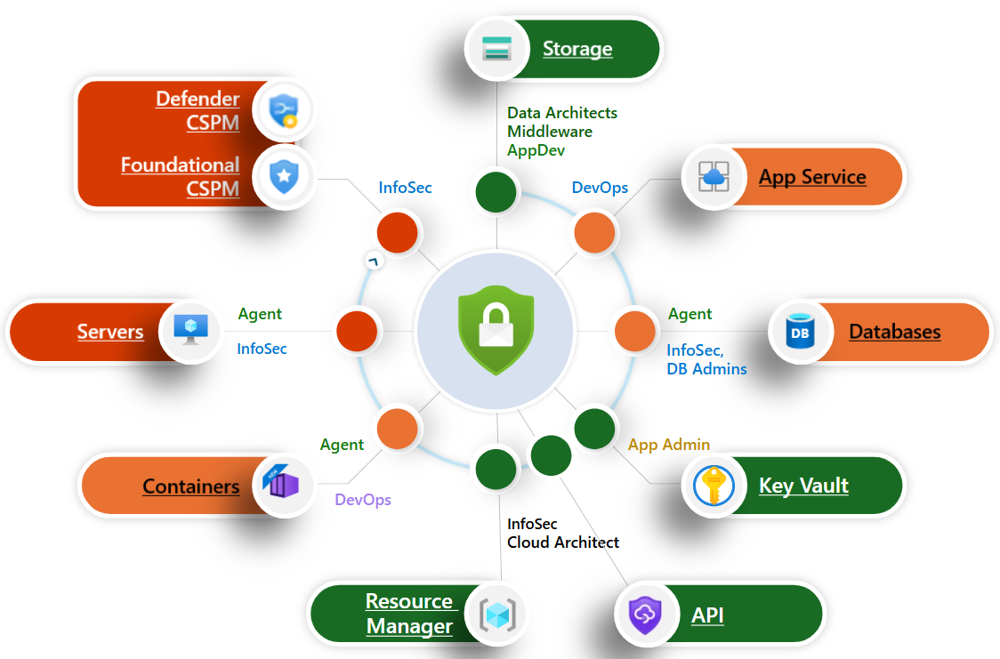
- Microsoft Defender for Servers adds threat detection and advanced defenses for your Windows and Linux machines.
- Microsoft Defender for Storage detects potentially harmful activity on your Azure Storage accounts.
- Microsoft Defender for SQL protects your SQL Server and Azure SQL databases with vulnerability assessments and threat detection.
- Microsoft Defender for Containers provides cloud-native security for Kubernetes environments, including environment hardening, workload protection, and run-time threat detection for containerized workloads and registries.
- Microsoft Defender for App Service identifies attacks targeting applications running over App Service.
- Microsoft Defender for Key Vault is advanced threat protection for Azure Key Vault.
- Microsoft Defender for Resource Manager automatically monitors the resource management operations in your organization.
- Microsoft Defender for DNS detects suspicious DNS queries and communication with known malicious domains from your Azure resources.
- Microsoft Defender for open-source relational databases provides threat protection for open-source database engines such as PostgreSQL, MySQL, and MariaDB.
- Microsoft Defender for Azure Cosmos DB detects attempts to exploit or access your Cosmos DB accounts, including SQL injection and unusual access patterns.
- Microsoft Defender for AI Services provides threat protection for AI workloads, detecting prompt injection attacks, anomalous usage patterns, and other threats targeting Azure AI services.
- Microsoft Defender for APIs provides visibility into business-critical APIs, improves API security posture, prioritizes vulnerability fixes, and detects active real-time threats against your APIs.
These different plans can be enabled separately and will run simultaneously to provide a comprehensive defense for compute, data, and service layers in your environment.
Enhanced security features
Microsoft Defender plans specific to the types of resources in your subscriptions provide enhanced security features for your workloads. Listed below are some of the enhanced security features.
- Comprehensive endpoint detection and response - Microsoft Defender for servers includes Microsoft Defender for Endpoint for comprehensive endpoint detection and response (EDR).
- Vulnerability scanning for virtual machines, container registries, and SQL resources - Easily deploy a scanner to all of your virtual machines. View, investigate, and remediate the findings directly within Microsoft Defender for Cloud.
- Multicloud security - Connect your accounts from Amazon Web Services (AWS) and Google Cloud Platform (GCP) to protect resources and workloads on those platforms with a range of Microsoft Defender for Cloud security features.
- Hybrid security – Get a unified view of security across all of your on-premises and cloud workloads. Apply security policies and continuously assess the security of your hybrid cloud workloads to ensure compliance with security standards. Collect, search, and analyze security data from multiple sources, including firewalls and other partner solutions.
- Threat protection alerts - Monitor networks, machines, and cloud services for incoming attacks and post-breach activity. Use interactive tools and contextual threat intelligence to investigate alerts and determine the appropriate response.
- Track compliance with a range of standards - Microsoft Defender for Cloud continuously assesses your hybrid cloud environment to analyze the risk factors according to the controls and best practices in the Microsoft cloud security benchmark. When you enable the enhanced security features, you can apply a range of other industry standards, regulatory standards, and benchmarks according to your organization's needs. Add standards and track your compliance with them from the regulatory compliance dashboard.
- Access and application controls - Block malware and other unwanted applications by applying machine learning powered recommendations adapted to your specific workloads to create allow lists and block lists. Reduce the network attack surface with just-in-time, controlled access to management ports on Azure VMs. Access and application controls drastically reduce exposure to brute force and other network attacks.
Additional benefits include threat protection for the resources connected to the Azure environment and container security features, among others. Some features may be associated with specific Defender plans for specific workloads.
Protecting AI workloads
Generative AI has expanded the attack surface that security teams must protect. Organizations running AI applications built on services like Azure OpenAI are potential targets for attacks specifically designed to exploit or misuse AI models. Microsoft Defender for AI Services is the CWPP plan dedicated to addressing this new category of threat.
Defender for AI Services monitors AI workload activity in real time and works with Microsoft Threat Intelligence and Azure AI Content Safety Prompt Shields to detect threats such as:
- Prompt injection attacks—malicious attempts to manipulate an AI model's behavior by inserting instructions into the model's input, potentially causing it to bypass safety controls or reveal sensitive information.
- Data leakage—sensitive information being extracted or exposed through AI model responses.
- Data poisoning—attempts to corrupt the data an AI model uses during inference, undermining the reliability of its outputs.
- Credential theft—attempts to steal authentication tokens or API keys by targeting AI application components.
Security alerts from Defender for AI Services integrate with Microsoft Defender XDR. This integration lets security teams correlate AI workload threats with other alerts across endpoints, identities, and applications—giving them the broader context they need to understand the full scope of an attack.
Describe DevOps security management
DevOps combines development (Dev) and operations (Ops) to unite people, process, and technology in application planning, development, delivery, and operations. Modern enterprises rely on DevOps platforms for deployment, including the pipelines and production environments that developers require to be productive. Traditional application security methods didn't consider the increased attack surface that these pipelines and environments represent. With attackers shifting their focus to these upstream tools, a new approach is needed to secure DevOps platform environments.
Defender for DevOps, a service available in Defender for Cloud, empowers security teams to manage DevOps security across multi-pipeline environments.
What Defender for DevOps does
Defender for DevOps uses a central console to empower security teams with the ability to protect applications and resources from code to cloud across multi-pipeline environments, such as GitHub, Azure DevOps, and GitLab. Findings from Defender for DevOps can then be correlated with other contextual cloud security insights to prioritize remediation in code. Key capabilities in Defender for DevOps include:
- Unified visibility into DevOps security posture: Security administrators have full visibility into DevOps inventory and the security posture of preproduction application code. They can configure their DevOps resources across multi-pipeline and multicloud environments in a single view that includes findings from code, secrets, and open-source dependency vulnerability scans. They can also assess the security configurations of their DevOps environment.
- Strengthened cloud resource configurations throughout the development lifecycle: Security of Infrastructure as Code (IaC) templates, which are used to define and deploy infrastructure rapidly and reliably, can be assessed to minimize cloud misconfigurations from reaching production environments. This allows security administrators to focus on any critical evolving threats.
- Prioritized remediation of critical issues in code: Comprehensive code-to-cloud contextual insights within Defender for Cloud help developers prioritize critical code fixes with Pull Request annotations. Security admins can assign developer ownership by triggering custom workflows that feed directly into the tools developers use.
DevOps security overview
Defender for DevOps provides your security teams with a high-level overview of discovered issues in connected DevOps environments through the Defender for DevOps console. The security overview surfaces metrics across key risk dimensions:
- Code scanning vulnerabilities: Security weaknesses found in the application code itself.
- Exposed secrets: Credentials, API keys, or other sensitive information inadvertently included in code or configuration files.
- Open-source software (OSS) vulnerabilities: Known security vulnerabilities in third-party open-source dependencies used by the application.
- Recommendations: Actions your security team can take to improve the security configuration of connected DevOps environments.
Together, these capabilities help organizations embed security into their development workflows, so that vulnerabilities are identified and addressed before code reaches production environments.
DevSecOps and AI development pipelines
Teams building AI-powered applications use the same development pipelines as any other software project, which means they're subject to the same categories of risk. Code that provisions AI infrastructure, stores API keys for AI services, or configures AI endpoints can introduce serious security vulnerabilities if those secrets or misconfigurations aren't caught early.
Defender for DevOps helps security teams identify these issues in AI development workflows. For example, it can detect if an AI service API key has been committed to a code repository, or if an infrastructure template deploys an AI endpoint without proper authentication controls. Catching these issues during development is far less costly than addressing them after they've reached a production AI application.
By extending DevSecOps practices to AI development workflows, organizations ensure that the same security discipline applied to traditional application development also covers the AI applications they're building.
How DevSecOps connects to the broader Defender for Cloud platform
Defender for DevOps doesn't operate in isolation. Findings from code scanning, secrets detection, and infrastructure-as-code (IaC) analysis feed directly into the broader Defender for Cloud experience. In the Defender CSPM plan, these DevOps findings can be correlated with cloud infrastructure risks to provide a code-to-cloud view of security issues.
This integration means that security teams can trace a production risk back to its source in code. For example, if CSPM identifies a misconfigured virtual network in production, the infrastructure template that deployed it can often be found and corrected—preventing the same misconfiguration from being redeployed in the future.
Similarly, attack path analysis in CSPM can incorporate findings from Defender for DevOps, giving security teams a more complete picture of how a vulnerability in code could ultimately lead to a compromise of a production workload.
Section Summary
- Microsoft Defender for Cloud — a cloud-native application protection platform (CNAPP) unifying four capability pillars across Azure, AWS, GCP, and on-premises environments (via Azure Arc). DevSecOps (shift-left security integrated into CI/CD pipelines — GitHub and Azure DevOps — scanning code, secrets, and open-source dependencies). Cloud Security Posture Management (CSPM) (continuous assessment of misconfigurations using secure score, attack path analysis, cloud security explorer, and regulatory compliance dashboards). Cloud Workload Protection Platform (CWPP) (runtime threat protection via Microsoft Defender plans specific to resource types — Servers, Storage, SQL, Containers, App Service, Key Vault, Resource Manager, DNS, open-source relational databases, Cosmos DB, AI Services, and APIs). AI security (AI SPM with AI Bill of Materials inventory and attack path analysis, plus AI threat protection detecting prompt injection, data leakage, data poisoning, and credential theft — integrates with Microsoft Defender XDR). Security Copilot integration enables natural language prompts to analyze recommendations, summarize findings, and delegate remediation. Deeply integrated into the Microsoft Defender portal for unified CNAPP experience
- Security Policies and Standards — backed by Azure Policy. Azure Policy definition — a rule about a specific security condition. Security initiative — a collection of policy definitions grouped toward a specific goal. Assignment — implementing initiatives at a scope (management group, subscription, resource group, individual resource). The default built-in initiative automatically assigned is the Microsoft Cloud Security Benchmark (MCSB) — a Microsoft-authored set of guidelines built on CIS and NIST controls with a cloud-centric focus. MCSB organizes security guidance across control domains (network security, data protection, identity management, privileged access, incident response, endpoint security) and maps to CIS, NIST, and PCI DSS. Non-compliant resources generate security recommendations — each includes a description, remediation steps, affected resources, severity/risk factors, and attack path context (when available). Harden rules enable automatic governance (auto-remediate non-compliant resources) and Rule exemptions allow justified exceptions. Custom initiatives can be created for organization-specific compliance requirements
- Cloud Security Posture Management (CSPM) — Foundational (free, included automatically for all Azure subscriptions): continuously assesses resources against MCSB, provides secure score (single metric reflecting overall posture — higher = lower risk, each recommendation has a point value based on severity), asset inventory, and regulatory compliance dashboards. No agents required. Defender CSPM plan (paid): adds attack path analysis (AI-powered — models how attackers could chain vulnerabilities to reach high-value resources), cloud security explorer (interactive investigation of environment), advanced threat hunting (query posture data over time), deeper compliance assessments, and AI SPM. Multi-cloud CSPM — connect AWS (via Amazon Web Services connector) and GCP (via Google Cloud Platform connector) to assess posture across all cloud environments from a single dashboard. Regulatory compliance — add standard-specific assessments like ISO 27001, SOC 2, NIST SP 800-53, PCI DSS, HIPAA, with one recommendation potentially improving compliance across multiple standards simultaneously
- Microsoft Defender Plans (CWPP) — each plan provides resource-specific threat detection and response. Defender for Servers — advanced threat detection, vulnerability scanning (Qualys or Microsoft Defender vulnerability management), file integrity monitoring, and just-in-time VM access (Plan 1 = basic, Plan 2 = full with MDE integration). Defender for Storage — detects anomalous access patterns, suspicious file uploads, and data exfiltration attempts on Blob Storage, Azure Files, and Data Lake Storage. Defender for SQL — identifies and mitigates SQL database vulnerabilities and anomalous access to SQL databases (Azure SQL, SQL Server on VMs, on-premises SQL). Defender for Containers — runtime threat protection for AKS, Azure Container Instances, and container registries — scans images for vulnerabilities. Defender for App Service — detects attacks targeting App Service applications (web apps, APIs, mobile backends) by monitoring traffic to underlying infrastructure. Defender for Key Vault — detects unusual access patterns and extraction attempts, protecting secrets stored in Key Vault. Defender for Resource Manager — detects suspicious ARM operations (unauthorized changes, privilege escalation attempts) at the management plane. Defender for DNS — monitors DNS queries to detect malicious domain resolution, communication with known malware C2 servers, and data exfiltration via DNS tunneling. Defender for open-source relational databases — threat detection for PostgreSQL, MySQL, and MariaDB (single/flexible servers). Defender for Cosmos DB — detects SQL injection attempts, anomalous access patterns, and potential data exfiltration from Cosmos DB. AI threat protection detects prompt injection, data leakage, data poisoning, and credential theft targeting generative AI applications and agents — security alerts integrate with Microsoft Defender XDR for correlation across the broader environment
- Connecting Non-Azure Resources — Defender for Cloud extends protection beyond Azure. AWS: connect via AWS connector (CloudFormation template) to assess EC2 instances, S3 buckets, containers (EKS), and databases (RDS) from the Defender dashboard — supports CSPM posture assessment and CWPP threat protection. GCP: connect via GCP connector to assess Compute Engine, Cloud Storage, and containers (GKE). On-premises servers: connect through Azure Arc — install Azure Arc agent on non-Azure machines to manage them as Azure resources, enabling Defender plans, policy enforcement, and secure score contributions. All non-Azure resources benefit from the same CSPM assessments, secure score tracking, and (with appropriate Defender plans) workload protection capabilities available to Azure-native resources
Key Concepts
Defender for Cloud Overview (CNAPP)
- Defender for Cloud: Cloud-native application protection platform (CNAPP) unifying three pillars — CSPM (posture management), CWPP (workload protection), and DevSecOps (shift-left security). Supports Azure, AWS, and GCP in a single dashboard.
- Foundational CSPM (Free): Continuously assesses systems for misconfigurations, provides Secure Score, MCSB compliance, asset inventory. No agent required. All Azure subscriptions get this automatically.
CSPM — Cloud Security Posture Management
- Microsoft Cloud Security Benchmark (MCSB): Default security initiative in Defender for Cloud — defines policy rules grouped into security controls (identity, network, data, etc.). Maps to CIS, NIST, PCI DSS, ISO 27001. Non-compliant resources generate security recommendations.
- Secure Score: Single snapshot metric reflecting overall security posture. Higher score = lower risk. Each recommendation has a point value based on severity. Fixing high-priority issues increases the score most.
- Attack Path Analysis: AI-powered feature that models how attackers could chain multiple vulnerabilities/misconfigurations to reach high-value resources. Visualized as attack paths in the Defender portal.
- Regulatory Compliance: Add standard-specific assessments (ISO 27001, SOC 2, NIST SP 800-53, PCI DSS, HIPAA). One recommendation can improve compliance across multiple standards.
- CSPM Plan: Advanced posture management beyond the free tier — adds attack path analysis, cloud security explorer, advanced threat hunting, and deeper compliance assessments.
CWPP — Cloud Workload Protection
- Defender Plans: Per-workload runtime threat protection — Defender for Servers (antimalware, file integrity, JIT VM access), Defender for Storage (malware scanning, sensitive data threat detection), Defender for Databases (SQL, MySQL, PostgreSQL, MariaDB), Defender for Containers (cluster security, runtime protection), Defender for Key Vault (suspicious access patterns), Defender for AI Services (model protection, prompt injection detection), Defender for APIs (API security posture, vulnerability prioritization, real-time threat detection).
- AI Security Posture Management: Maintains an AI Bill of Materials and assesses security posture of generative AI workloads including prompt injection risks and data exfiltration paths.
DevSecOps
- Defender for DevOps: Integrates security into CI/CD pipelines. Central console for code scanning, secrets detection, and IaC (Infrastructure as Code) analysis. Supports GitHub, Azure DevOps, and GitLab. PR annotations show remediation guidance directly in pull requests.
3.3 Microsoft Sentinel
Domain 3: Microsoft Security Solutions (35-40%)
Module: Describe the capabilities in Microsoft Sentinel
Define the concepts of SIEM and SOAR
Protecting an organization's digital estate is an ongoing and escalating challenge. As more staff work remotely and more services move to the cloud, the attack surface has expanded significantly. Security teams must monitor activity across dozens or hundreds of systems—cloud services, on-premises servers, user devices, and applications—and doing that manually is no longer feasible at scale.
Security information and event management (SIEM) and security orchestration, automation, and response (SOAR) are two complementary technologies that help organizations gain visibility into threats and respond to them more quickly and consistently.
What is SIEM?
A security information and event management (SIEM) system collects data from across an organization's entire digital environment—infrastructure, software, services, and resources, whether on-premises, in the cloud, or both.
Once collected, the SIEM analyzes that data to surface potential security threats. A SIEM serves several key purposes:
- Log aggregation: The SIEM gathers log data and security events from many sources—firewalls, servers, identity systems, applications, and endpoint devices—and consolidates them into a single platform.
- Correlation: The SIEM analyzes collected data to look for patterns, relationships, and anomalies that might indicate a threat. An event that seems harmless in isolation can become significant when correlated with other events. For example, a user logging in at an unusual time of night might not seem concerning alone. When that same user also downloads a large volume of sensitive files, the combination warrants investigation.
- Alerting: When the SIEM identifies suspicious activity, it generates alerts. Analysts review these alerts to determine whether a genuine threat is present.
- Incident creation: Related alerts are automatically grouped into incidents—case files representing a potential security threat for further investigation.
- Centralized visibility: Security analysts see a single view of security activity across the entire organization, rather than checking each system separately.
Without a SIEM, detecting a breach can take days or weeks. With one, detection can happen within minutes of suspicious activity occurring—a critical difference in limiting the impact of an attack.
What is SOAR?
Security orchestration, automation, and response (SOAR) take the alerting capability of a SIEM further. A SOAR system takes alerts from a SIEM—and from other security tools—then triggers action-driven automated workflows to handle the response.
SOAR introduces two important concepts into security operations:
- Orchestration connects different security tools and systems so they work together. For example, when the SIEM detects a threat, the SOAR system can simultaneously query an identity system for user context, check a threat intelligence feed for related indicators, and notify the security team—all coordinated automatically.
- Automation handles repetitive, time-consuming tasks without requiring manual effort. Rather than having an analyst follow the same response steps every time a particular alert fires, a SOAR platform executes those steps automatically.
A key SOAR concept is the playbook—a predefined sequence of automated actions triggered by a specific alert or incident type. For example, when a user account is flagged for suspicious sign-in activity, a playbook can automatically:
- Disable the account.
- Send a notification to the security team.
- Open an incident ticket in the help desk system.
- Gather additional context about the user's recent activity.
All of these steps happen without a human initiating each one individually, which dramatically reduces the time from detection to containment.
Why SIEM and SOAR work better together
SIEM and SOAR are designed to complement each other. SIEM provides visibility—collecting, correlating, and surfacing threats. SOAR provides speed—automating the response to those threats.
A combined SIEM+SOAR solution delivers the following benefits:
- A single source of data and context for security events across the enterprise
- Automated responses that reduce the time between detecting a threat and containing it
- Consistent, repeatable processes for common threat scenarios, reducing the chance of human error
- More time for security analysts to focus on complex investigations that require human judgment
Without this integration, security teams often switch between multiple disconnected tools—reviewing an alert in one platform, querying a threat intelligence database in another, and logging actions in a third. This slows response times and increases the risk of missing critical signals.
The role of AI and machine learning in modern SIEM/SOAR
Today's threat landscape is more sophisticated than ever. Attack volumes have grown dramatically, and threat actors increasingly use automation to launch attacks at scale. Modern SIEM/SOAR solutions incorporate artificial intelligence (AI) and machine learning (ML) capabilities to help security teams detect and respond faster and with greater precision.
AI and ML capabilities common to modern SIEM/SOAR platforms include:
- Anomaly detection: Machine learning models study historical behavior to establish a baseline of what's normal for your environment. When behavior deviates from that baseline—such as a user accessing resources they've never touched before, or a device communicating with an unfamiliar external server—the system flags it for investigation.
- Alert correlation and prioritization: AI identifies which alerts are related and groups them into meaningful incidents. It also assesses severity, helping analysts focus on the highest-priority threats first.
- False positive reduction: Many alerts turn out not to represent real threats—these are called false positives. AI models trained on historical data can distinguish genuine threat patterns from benign activity, reducing the number of false alarms analysts must review.
- Multi-stage attack detection: Advanced attacks often unfold across multiple steps, each one individually appearing benign. An attacker might perform reconnaissance one day, establish persistence days later, and exfiltrate data weeks after that. ML models can connect these low-level signals over time and identify the broader attack pattern, even when individual events wouldn't trigger an alert on their own.
- Natural language assistance: AI-powered assistants embedded in SIEM/SOAR platforms help analysts generate search queries, summarize incidents, and receive step-by-step response guidance—all through natural language. This lowers the technical bar for effective security analysis and helps analysts work faster.
Alert fatigue and the importance of context
One core operational challenge in security is the sheer volume of alerts that monitoring systems generate. Security teams at large organizations can receive thousands of alerts per day. Without a way to prioritize and contextualize those alerts, analysts experience alert fatigue—they become overwhelmed by volume and may start dismissing alerts without thorough review, creating the vulnerability that attackers exploit.
Modern SIEM/SOAR platforms address alert fatigue in several ways:
- Incident grouping: Related alerts from different sources are correlated and consolidated into a single incident. Instead of reviewing dozens of separate alerts about the same attack, an analyst reviews one high-quality incident with all relevant context attached.
- Severity scoring: Each alert and incident gets a severity level—such as informational, low, medium, or high—based on the potential impact and likelihood of a genuine threat.
- Automatic enrichment: Alerts are automatically enhanced with additional context—known threat intelligence, user account history, device compliance status, and location data—so analysts have what they need to make decisions quickly, without manually gathering it from multiple systems.
Describe threat detection and mitigation in Microsoft Sentinel
Microsoft Sentinel is a scalable, cloud-native security information and event management (SIEM) and security orchestration, automation, and response (SOAR) solution. It delivers AI-powered security analytics and threat intelligence across multicloud and multiplatform environments, providing a single solution for threat detection, investigation, proactive hunting, and response.
Microsoft Sentinel has evolved beyond a traditional SIEM. Today it serves both as a SIEM and as a security platform—providing an AI-ready, data-first foundation that transforms telemetry into actionable security insights while keeping your security team in command.
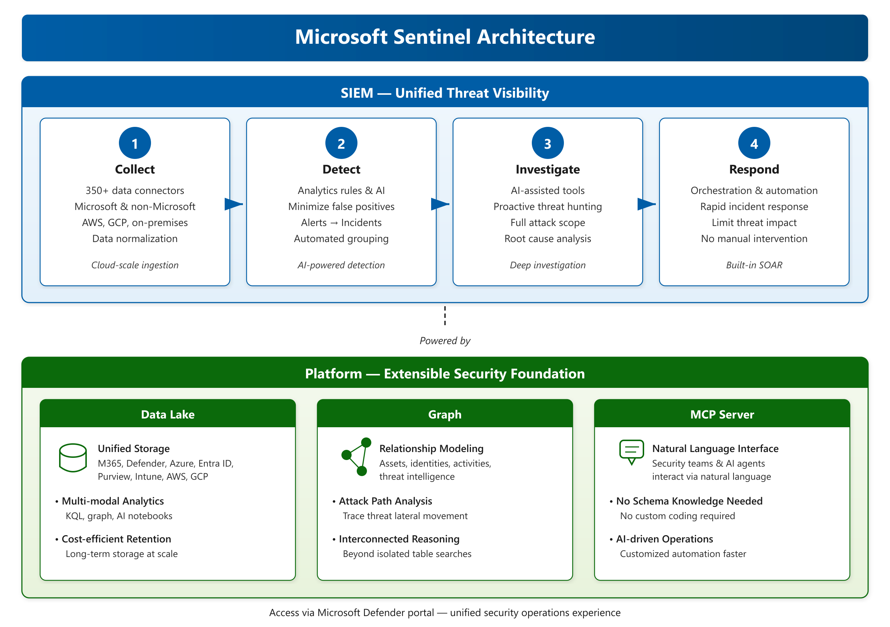
Microsoft Sentinel as a SIEM
As a SIEM, Microsoft Sentinel gives your security team a unified view of threats across the entire enterprise. It collects and correlates signals from all users, devices, applications, and infrastructure—whether on-premises, in Azure, or in other cloud environments like Amazon Web Services (AWS) and Google Cloud Platform (GCP).
Microsoft Sentinel supports end-to-end security operations across four interconnected areas:
- Collect security data at cloud scale from across your entire digital estate using 350+ built-in data connectors for Microsoft services, non-Microsoft platforms, and custom sources. Data normalization translates diverse formats into a uniform view, making it easier to correlate events across sources.
- Detect previously undetected threats and minimize false positives using analytics rules and AI-powered detections. Rules run regularly to query collected data, generate alerts when suspicious activity is found, and group related alerts into incidents—case files your team can assign and investigate.
- Investigate threats using AI-assisted tools and proactive threat hunting to understand the full scope of an attack and find its root cause.
- Respond to incidents rapidly with built-in orchestration and automation that limits the impact of threats without requiring manual intervention.
Microsoft Sentinel is available in the Microsoft Defender portal, which is the recommended access point and provides a unified security operations experience.
Microsoft Sentinel as a platform
Beyond its SIEM capabilities, Microsoft Sentinel provides an extensible security platform built on three core components that support advanced analytics, AI-driven operations, and developer extensibility.
Microsoft Sentinel data lake
Microsoft Sentinel stores security data across two complementary tiers. The analytics tier is a Log Analytics workspace that supports real-time alerting, advanced hunting, and incident management—this is where data is ingested first and where analytics rules run. The data lake tier is a cost-effective, long-term storage layer purpose-built for security operations. Data from the analytics tier is mirrored to the data lake tier, preserving a single copy of the data in an open format.
Together, these tiers provide a unified data platform with the following capabilities:
- Unified storage: Centralizes logs from Microsoft 365, Microsoft Defender, Azure, Microsoft Entra ID, Microsoft Purview, Microsoft Intune, and over 350 connectors including AWS and GCP—eliminating data silos.
- Multi-modal analytics: Query security data using Kusto Query Language (KQL) in the analytics tier, and use graph analytics and AI-powered notebooks on data lake tier data—all on a single copy of open-format data.
- Cost-efficient retention: The data lake tier stores large volumes of security data at scale for up to 12 years. Long-term retention enables investigations into persistent threats and the creation of behavioral baselines using months of historical data—without the cost of keeping all data in the analytics tier.
Microsoft Sentinel graph
Microsoft Sentinel graph models and analyzes complex relationships across assets, identities, activities, and threat intelligence. Rather than searching isolated tables of data, security teams can reason over interconnected data to understand how threats move through an environment. For example, the graph can help you identify which paths an attacker could take from a compromised identity to a critical asset.
Microsoft Sentinel MCP server
The Microsoft Sentinel model context protocol (MCP) server provides a hosted interface that lets security teams—and AI agents—interact with Microsoft Sentinel data using natural language. It removes the need for schema knowledge or custom coding, which makes AI-driven security operations more accessible and helps security teams build customized automation faster.
Threat detection capabilities
Microsoft Sentinel uses analytics rules to detect threats. These rules query collected data on a regular basis and generate alerts when suspicious activity is found. Related alerts are automatically grouped into incidents—case files your security team can assign and investigate. In the unified Microsoft Defender portal, custom detections provide a unified experience for creating detection rules across both Microsoft Sentinel and Defender XDR data—reducing ingestion costs, enabling real-time detections, and integrating seamlessly with remediation actions.
Detection in Microsoft Sentinel spans three broad approaches:
- Rule-based detection: Rules match patterns in your data against known threat signatures and defined conditions. Prebuilt rule templates, designed by Microsoft security experts, are available through the Content hub so your team doesn't have to build detection logic from scratch.
- AI and machine learning detection: Microsoft Sentinel uses machine learning to establish behavioral baselines and flag unusual deviations. It also uses a correlation engine called Fusion that automatically links low-severity signals from multiple sources into high-confidence, actionable incidents—helping surface advanced multistage attacks that individual rules might miss.
- Threat intelligence matching: Microsoft Sentinel integrates threat intelligence feeds that identify known malicious IP addresses, domains, and URLs. Ingested data is automatically matched against these indicators to detect activity associated with known threat actors.
Microsoft Sentinel maps detection coverage to the MITRE ATT&CK® framework, a global knowledge base of adversary tactics and techniques. This lets you visualize which attack techniques your current rules cover and identify gaps in your defenses.
The Content hub is your centralized location to discover and deploy packaged solutions. Each solution bundles multiple content types—data connectors, workbooks, analytics rules, hunting queries, and playbooks—into a single deployment for a complete end-to-end scenario.
Threat investigation and hunting
When an analytics rule detects a threat, Microsoft Sentinel aggregates related alerts into incidents. An incident is a case file that brings together all relevant evidence—alerts, affected entities, timelines, and context—in one place. Your team can assign, triage, and investigate incidents directly in the Microsoft Defender portal.
For proactive threat detection, Microsoft Sentinel supports threat hunting. Rather than waiting for an alert, your security team can run hunting queries across your data to search for suspicious activity that hasn't triggered a rule yet. When a hunting query surfaces a significant finding, you can promote it into a custom analytics rule so it generates alerts automatically in the future.
Threat response and mitigation
Microsoft Sentinel automates common response tasks so your team can act quickly and consistently.
Automation rules let you centrally manage how incidents are handled. You define conditions—such as incident severity, source, or entity type—and specify actions like assigning the incident to an analyst, adding tasks, changing its status, or triggering a playbook.
Playbooks are automated workflows built on Azure Logic Apps. They execute a sequence of remediation actions in response to a triggered automation rule. For example, when an incident involving a compromised account is created, a playbook can automatically disable the account, open a ticket in your IT service management system, and notify the security team—all before an analyst even opens the incident. Playbooks can also run on demand, giving analysts a one-click response option for common scenarios.
Together, automation rules and playbooks reduce the time between threat detection and mitigation, and free your security team to focus on complex investigations that require human judgment.
Describe Microsoft Sentinel integration with Security Copilot
Microsoft Sentinel integrates with Microsoft Security Copilot to bring AI-assisted capabilities directly into security operations workflows. Rather than replacing analyst judgment, the integration surfaces relevant context faster—so your team can investigate and respond to threats more efficiently.
How the integration works
The integration between Microsoft Sentinel and Security Copilot works across two experiences:
- The embedded experience in the Microsoft Defender portal: Because Microsoft Sentinel incidents are unified with Microsoft Defender XDR incidents in the Defender portal, Security Copilot capabilities are available for any incident—including those that originate in Microsoft Sentinel. Analysts can summarize incidents, analyze scripts, assess suspicious files, and generate reports without leaving the portal.
- The standalone Security Copilot experience: Security Copilot connects to Microsoft Sentinel as a data source through two plugins—Microsoft Sentinel and Natural language to KQL for Microsoft Sentinel. These plugins allow analysts to ask questions about incidents and data in a conversational, chat-based interface.
Security Copilot capabilities in the Defender portal
When Microsoft Sentinel is onboarded to the Defender portal, the following Security Copilot capabilities are available for Microsoft Sentinel incidents and data.
Incident summarization
When you open a Microsoft Sentinel incident, Security Copilot automatically generates a natural-language summary describing what happened, which entities are involved, and what the likely impact is. The summary includes the attack timeline, affected assets, indicators of compromise (IoCs), and threat actor names when available. This helps analysts quickly understand the scope of a threat without manually reviewing every alert and log entry.
Guided responses
Security Copilot provides AI-generated response recommendations specific to each incident. Recommendations are organized into four categories: triage (classify the incident), containment (stop the attack from spreading), investigation (further analysis steps), and remediation (specific actions for affected entities). These aren't automated actions—they're suggestions that help analysts decide how to proceed, especially useful for less experienced team members.
Script and command-line analysis
Attackers often use obfuscated scripts to avoid detection. Security Copilot can analyze potentially malicious scripts, such as PowerShell command lines, and provide a plain-language explanation of what the script does, whether it's malicious, and which MITRE ATT&CK techniques it uses. This eliminates the need for external reverse-engineering tools and lets analysts of varying experience levels assess threats quickly.
File analysis
Security Copilot assesses suspicious files by generating a summary that includes detection information, related file certificates, API calls, and strings found in the file. This analysis is generated automatically when an analyst opens a file page, accelerating investigation of potentially malicious files associated with Microsoft Sentinel incidents.
Identity and device summarization
During an investigation, analysts often need to assess whether a user account is compromised or whether a device is at risk. Security Copilot generates:
- Identity summaries that include the user's role, recent role changes, sign-in behaviors, authentication methods, and risk flags from Microsoft Entra ID.
- Device summaries that include the device's security posture, protection status, unusual activity, vulnerable software, and relevant Microsoft Intune information.
These summaries let analysts quickly evaluate the entities involved in a Microsoft Sentinel incident without navigating to multiple consoles.
Incident report generation
After an investigation, Security Copilot can compile all incident information—including the summary, response actions taken, timestamps, analysts involved, and classification reasoning—into a structured report. Analysts can export the report to PDF or post it to the incident activity log, saving significant documentation time.
Natural language to KQL for threat hunting
Threat hunting in Microsoft Sentinel typically requires writing queries in Kusto Query Language (KQL), which has a learning curve. The natural language to KQL capability lets analysts describe what they're looking for in plain language, and Security Copilot generates a ready-to-run KQL query against Microsoft Sentinel data.
For example, an analyst can type "Show me sign-in attempts from unfamiliar locations in the last 48 hours" and receive a KQL query they can run immediately or refine. This capability is available in both the standalone experience and the advanced hunting section of the Defender portal.
Threat intelligence
Security Copilot consolidates and summarizes threat intelligence to help security teams understand which threats are most relevant to their environment. Analysts can ask Copilot to summarize threats based on their organization's exposure levels or find threat actors that might target their industry.
AI agents
In addition to the analyst-driven capabilities described above, Security Copilot includes autonomous AI agents that operate in the background. Two agents are especially relevant for Microsoft Sentinel:
- Security Alert Triage Agent—an autonomous agent that helps security teams triage alerts at scale. It applies AI-driven reasoning across evidence to classify alerts for supported security workloads—including phishing, identity, and cloud alerts—delivering clear verdicts that identify which alerts represent real attacks and which are false positives.
- Dynamic Threat Detection Agent—an always-on service that uses AI to identify gaps in traditional rule-based detection by correlating alerts, events, anomalies, and threat intelligence across Microsoft Defender and Microsoft Sentinel environments. When it identifies a threat that traditional rule-based detection missed, it generates a dynamic alert with full context, natural language explanations, mapped MITRE ATT&CK techniques, and recommended remediation steps.
The standalone experience
In the standalone Security Copilot portal, the Microsoft Sentinel plugin lets analysts interact with their security data conversationally. Analysts can ask questions like "What are the top five high priority Microsoft Sentinel incidents?" or "Tell me about the entities associated with that incident." The Microsoft Sentinel incident investigation promptbook assembles a sequence of prompts automatically—retrieving the incident report, related alerts, reputation scores, and details about users and devices involved—giving analysts a structured starting point.
Why this integration matters
Security operations teams deal with high volumes of alerts, complex investigations, and time pressure. The integration of Microsoft Sentinel with Security Copilot helps address those challenges by:
- Reducing investigation time: AI-generated summaries, script analysis, and file analysis help analysts understand incidents in minutes rather than hours.
- Making hunting more accessible: Natural language queries remove a technical barrier, enabling analysts who aren't KQL experts to participate in proactive threat detection.
- Streamlining documentation: Automated incident reports save time on post-investigation paperwork.
- Keeping humans in control: Security Copilot provides suggestions and surfaces information—analysts make the final decisions.
Section Summary
- SIEM vs SOAR Concepts: SIEM (Security Information and Event Management) collects log data from across the entire digital environment, aggregates it, correlates events to find patterns/anomalies, generates alerts, and groups related alerts into incidents for investigation. SOAR (Security Orchestration, Automation, and Response) takes SIEM alerts further — orchestration connects different security tools so they work together; automation uses playbooks (predefined sequences) to handle response without manual intervention (e.g., disable account, notify team, open ticket, gather context). Together they provide a single source of context, automated responses that reduce detection-to-containment time, consistent repeatable processes, and more analyst time for complex investigations. AI/ML in modern SIEM/SOAR: anomaly detection (baseline learning), alert correlation/prioritization, false positive reduction, multi-stage attack detection (connecting low-level signals over time), and natural language assistance. Alert fatigue addressed through incident grouping (related alerts consolidated), severity scoring (informational to high), and automatic enrichment (threat intelligence, user history, device compliance)
- Microsoft Sentinel — cloud-native SIEM+SOAR built on Azure, providing AI-powered security analytics across multicloud and multiplatform environments. Four interconnected areas: Collect — 350+ built-in data connectors for Microsoft services (M365, Defender, Entra, Purview, Intune), non-Microsoft platforms (AWS, GCP), and custom sources (Syslog, CEF, REST API). Data normalization via ASIM (Advanced Security Information Model). Detect — analytics rules run on collected data to generate alerts, grouped into incidents. Three detection approaches: rule-based (pattern matching against known threat signatures — prebuilt templates in Content hub), AI/ML (behavioral baselines, Fusion correlation engine linking low-severity signals into high-confidence incidents), threat intelligence matching (known malicious IPs/domains/URLs). All detections mapped to MITRE ATT&CK framework to visualize coverage gaps. Content hub provides packaged solutions bundling connectors, workbooks, analytics rules, hunting queries, and playbooks. Investigate — incidents as case files with alerts, entities, timelines, and context. Proactive threat hunting via KQL queries; suspicious findings can be promoted into custom analytics rules. Respond — automation rules (triggered by incident creation/update, conditions like severity, source, entity type) execute playbooks (Azure Logic Apps workflows) for automated remediation (block IPs, disable accounts, open tickets). Data platform: analytics tier (Log Analytics for real-time alerting) + data lake tier (cost-effective long-term storage up to 12 years in open Parquet/JSON format, enabling graph analytics and AI-powered notebooks). Sentinel graph models complex relationships across assets, identities, activities, and threat intelligence. MCP server provides a hosted interface for natural language interaction with Sentinel data
- Security Copilot Integration with Sentinel — available in both the embedded Defender portal experience and the standalone Security Copilot portal (with Microsoft Sentinel and Natural language to KQL plugins). Capabilities: Incident summarization (auto-generated natural language summary with attack timeline, affected assets, IoCs, threat actor names). Guided responses — AI-generated recommendations in four categories: triage, containment, investigation, remediation (suggestions, not automated actions). Script and command-line analysis — plain-language explanation of obfuscated scripts, identifying malicious intent and MITRE ATT&CK techniques. File analysis — detection info, certificates, API calls, strings for suspicious files. Identity and device summarization — user role, sign-in behavior, risk flags; device posture, protection status, vulnerable software, Intune info. Incident report generation — structured report compiled post-investigation, exportable to PDF. Natural language to KQL — describe hunting intent in plain language, get ready-to-run KQL queries. Threat intelligence — consolidated relevant threat summaries. AI agents: Security Alert Triage Agent (autonomous triage classifying alerts as real attacks vs false positives for phishing, identity, cloud workloads) and Dynamic Threat Detection Agent (always-on AI identifying gaps in rule-based detection, correlating alerts/events/anomalies across Defender and Sentinel, generating dynamic alerts with MITRE ATT&CK mapping and remediation steps)
Key Concepts
SIEM vs SOAR
- SIEM (Security Information and Event Management): Collects, correlates, and alerts on security data from across the entire digital environment. Provides a centralized view of all security events, log management, and compliance reporting.
- SOAR (Security Orchestration, Automation, and Response): Automates incident response by orchestrating security tools and executing playbooks triggered by alerts. Reduces manual triage and response time.
Microsoft Sentinel
- Microsoft Sentinel: Cloud-native SIEM+SOAR built on Azure (Log Analytics + Data Lake + Graph + MCP server). Four core functions: Collect, Detect, Investigate, Respond. 350+ built-in data connectors plus custom API/Syslog/CEM connectors.
- Collect: Built-in connectors (M365, Azure, Defender, Entra), Syslog/CEMS, REST API, and 350+ third-party integrations. ASIM (Advanced Security Information Model) normalizes data from different sources into a common schema.
- Detect: Analytics rules (scheduled query rules, ML Behavioral Analytics, Fusion correlation engine, threat intelligence matching) detect threats and generate alerts. Related alerts are grouped into incidents. MITRE ATT&CK framework maps every detection rule to adversary tactics and techniques.
- Investigate: Incidents as case files with graph, timeline, and entity pages. KQL hunting queries proactively search for suspicious activity before it triggers a rule. Notebooks enable advanced data science investigations. Workbooks provide interactive dashboards.
- Respond: Automation rules (triggered when incidents/alerts created/updated) execute playbooks (Azure Logic Apps workflows) for automated remediation — block IPs, disable accounts, open tickets. Content Hub provides packaged solutions bundling connectors, workbooks, analytics rules, hunting queries, and playbooks.
- Sentinel Data Lake: Cost-effective long-term storage in open format (Parquet/JSON) preserving security data for up to 12 years. Decouples storage from compute.
- Security Copilot in Sentinel: Incident summarization, guided response, natural language to KQL generation, file analysis (reverse-engineer suspicious files), and AI agents for automated triage.
3.4 Threat Protection with Defender XDR
Domain 3: Microsoft Security Solutions (35-40%)
Module: Describe the threat protection capabilities of Microsoft Defender XDR
Describe Microsoft Defender XDR services
Modern cyberattacks rarely stay within the boundaries of a single system. Attackers typically move laterally—starting with a phishing email to compromise a user's credentials, then pivoting to endpoints and cloud applications to exfiltrate data or deploy ransomware. Detecting and responding to these multistage attacks requires security tools that can share information and act together across all affected systems.
Microsoft Defender XDR (Extended Detection and Response) is a unified pre- and post-breach enterprise defense suite that natively coordinates detection, prevention, investigation, and response across endpoints, identities, email, and applications. By bringing together signals from multiple Microsoft security products into a single platform, Defender XDR gives security teams a complete, correlated view of an attack—making it possible to understand how the attack entered the environment, what it has affected, and how to stop it.
The Microsoft Defender XDR suite
The Microsoft Defender XDR suite includes the following integrated solutions:
- Microsoft Defender for Endpoint - A unified endpoint platform for preventative protection, post-breach detection, automated investigation, and response for devices across the organization.
- Microsoft Defender Vulnerability Management - Delivers continuous asset visibility, intelligent risk-based assessments, and built-in remediation tools to help your security and IT teams prioritize and address critical vulnerabilities and misconfigurations across your organization.
- Microsoft Defender for Office 365 - Safeguards your organization against malicious threats posed by email messages, links (URLs), and collaboration tools.
- Microsoft Defender for Identity - A cloud-based security solution that monitors identity signals from on-premises Active Directory and Microsoft Entra ID to identify, detect, and investigate advanced threats, compromised identities, and malicious insider actions across on-premises, cloud, and hybrid environments.
- Microsoft Entra ID Protection - Works alongside Defender for Identity to protect cloud identities. It uses the learnings Microsoft has acquired across organizations with Microsoft Entra ID, the consumer space with Microsoft Accounts, and in gaming with Xbox to protect your users from identity-based risks.
- Microsoft Defender for Cloud Apps - A comprehensive cross-SaaS solution that brings deep visibility, strong data controls, and enhanced threat protection to your cloud apps. Defender for Cloud Apps is a cloud access security broker (CASB) that helps discover and control shadow IT and protect sensitive information across SaaS and PaaS applications.
- Microsoft Defender Threat Intelligence (Defender TI) - A platform that aggregates and enriches critical threat information, helping security analysts with triage, incident response, threat hunting, and vulnerability management workflows. Defender TI capabilities are converging into Microsoft Defender XDR and Microsoft Sentinel for a unified experience.
- Microsoft Security Exposure Management - A security solution that provides a unified view of security posture across company assets and workloads spanning endpoints, cloud resources, and external attack surfaces. It enriches asset information with security context to help proactively manage attack surfaces, protect critical assets, and explore and mitigate exposure risk across your entire digital estate.
Cross-product capabilities
What makes Microsoft Defender XDR more than a collection of individual products is how the suite shares signals and takes coordinated action across all products. These cross-product capabilities provide a level of protection and visibility that individual, isolated tools can't deliver.
Combined incidents queue
Across all products in the suite, related alerts, suspicious events, and impacted assets are automatically grouped into a single incident. The combined incidents queue helps security professionals stay focused on the full scope of an attack. Rather than chasing individual alerts from separate consoles, you can see the entire attack story in one place—from the initial entry point to the affected assets.
Automatic response to threats
When one product in the suite detects a threat, it immediately shares that information with all other products. For example, if Microsoft Defender for Endpoint detects a malicious file on a device, it instructs Microsoft Defender for Office 365 to scan and remove that file from all email messages across the organization. The file is blocked on sight by the entire Microsoft 365 security suite without manual intervention, stopping the threat from spreading through other channels.
Self-healing for compromised devices, user identities, and mailboxes
Microsoft Defender XDR uses AI-powered automatic actions and playbooks to remediate impacted assets back to a secure state. When an attack is contained, Defender XDR leverages automatic remediation capabilities of the suite products to ensure all impacted assets related to an incident are automatically remediated where possible, reducing the manual recovery effort for security teams.
Automatic attack disruption
Microsoft Defender XDR uses high-fidelity signals produced across the suite to detect attacks in progress and contain them before they can spread. Automatic attack disruption correlates signals from multiple sources into a single high-confidence incident, identifies assets controlled by the attacker, and automatically takes response actions—such as isolating compromised devices, disabling compromised accounts, or containing malicious IP addresses—in real time without waiting for human action. This capability limits damage and gives security teams more time to investigate and respond.
Cross-product threat hunting
Security teams can build custom queries across the raw data collected by all products in the suite. Microsoft Defender XDR provides query-based access to 30 days of historic raw signals and alert data across endpoint and Defender for Office 365 data, enabling analysts to proactively hunt for signs of compromise across their entire environment.
The Microsoft Defender portal
The information and insights from the Microsoft Defender XDR suite are centralized in the Microsoft Defender portal, which delivers a unified security operations platform. The portal combines data from the Defender XDR suite with information from Microsoft Sentinel and Microsoft Defender for Cloud, giving security teams a single place to monitor, investigate, and respond to threats across identities, endpoints, email, applications, and cloud infrastructure.
Microsoft Security Copilot integration
Microsoft Defender XDR integrates with Microsoft Security Copilot. Security Copilot brings together the power of AI and human expertise to help security teams respond to attacks faster and more effectively. With the integration, security teams can summarize incidents in natural language, receive AI-guided response recommendations, generate threat-hunting queries without needing to know a query language, and analyze suspicious files and scripts in seconds.
Describe Microsoft Defender for Office 365
Microsoft Defender for Office 365 is a cloud-based email and collaboration security service that provides protection against threats like phishing and malware that arrive through email links (URLs), attachments, or collaboration tools like SharePoint, Teams, and Outlook. Defender for Office 365 provides real-time views of threats. It also provides investigation, hunting, and remediation capabilities to help security teams identify, prioritize, investigate, and respond to threats.
Microsoft Defender for Office 365, which is available in two plans Microsoft Defender for Office 365 Plan 1 and Plan 2, safeguards organizations against malicious threats by providing admins and security operations (sec ops) teams a wide range of capabilities.
These capabilities can be categorized into the following security emphases:
- Preventing and detecting threats
- Investigating threats
- Responding to threats
Prevent and detect
Some of the features of Microsoft Defender for Office 365 that help organizations prevent and detect email and collaboration based threats include:
- Anti-malware protection that protects against major categories of malware, including viruses, spyware, and ransomware.
- Anti-spam protection that uses content filtering technologies to identify and separate junk email from legitimate email.
- Anti-phishing (spoofing) protection to protect against phishing (spoofed) email attacks that try to steal sensitive information in messages that appear to be from legitimate or trusted senders.
- Outbound spam filtering
- Connection filtering to help identify good or bad source email servers by IP addresses.
- Quarantine policies to define the user experience for quarantined messages
- The Submissions page in the Microsoft Defender portal to submit messages, URLs, and attachments to Microsoft for analysis.
- Safe attachments that provide an extra layer of protection against malware. After files are scanned by the common virus detection engine in Microsoft 365, Safe Attachments opens files in a virtual environment to see what happens (a process known as detonation).
- Safe Links scanning that protects your organization from malicious links that are used in phishing and other attacks.
- Email and collaboration alerts
- Attack simulation training, which allows admins to run realistic attack scenarios in your organization. These simulated attacks help identify and train vulnerable users before a real attack impacts your bottom line.
- Security information and event management (SIEM) integration for alerts.
Investigate
Some of the features of Microsoft Defender for Office 365 that help organizations investigate email and collaboration based threats include: by users with appropriate permissions such as admins, insider risk teams, compliance and legal investigators, to provide visibility into the activities of the organization.
- Message trace capabilities. Message trace follows email messages as they travel through your Microsoft 365 organization. You can determine if a message was received, rejected, deferred, or delivered by the service. It also shows what actions were taken on the message before it reached its final status.
- Reports to help you see how email security features are protecting your organization.
- Explorer (also known as Threat Explorer) or Real-time detections that are near real-time tools to help Security Operations (SecOps) teams investigate and respond to threats. Explorer allows admins to see malware detected by Microsoft 365 security features, start an automated investigation and response process, investigate malicious email, and more.
- Security information and event management (SIEM) integration for detections.
- URL trace that allows admins to investigate a domain to see if the devices and servers in your enterprise network have been communicating with a known malicious domain.
- Threat trackers that are queries that you create and save to automatically or manually discover cybersecurity threats in your organization.
- The campaigns feature that identifies and categorizes coordinated phishing and malware email attacks. The campaigns feature lets you see the overall picture of an email attack faster and more completely than any human.
Respond
Some of the features of Microsoft Defender for Office 365 that help organizations respond to email and collaboration based threats include:
- Zero-hour auto purge (ZAP) that retroactively detects and neutralizes malicious phishing, spam, or malware messages that have already been delivered to Exchange Online mailboxes.
- Automated investigation and response (AIR) capabilities that include automated investigation processes in response to well-known threats that exist today.
- Security information and event management (SIEM) integration for automated responses.
Microsoft Defender for Office 365 in the Microsoft Defender portal
Microsoft Defender for Office 365 is experienced through the Microsoft Defender portal. The Defender portal is the home for monitoring and managing security across your Microsoft identities, data, devices, apps, and infrastructure, allowing security admins to perform their security tasks, in one location.
Microsoft Defender for Office 365 functionality can be found under the Email & collaboration node on the left navigation panel of the Microsoft Defender portal.
Microsoft Security Copilot integration
Microsoft Defender for Office 365 integrates with Microsoft Security Copilot. With Security Copilot embedded in the Microsoft Defender portal, security teams can summarize incidents involving email threats, get guided response recommendations, and investigate suspicious messages faster.
Security Copilot also enables autonomous AI agents that work directly within Defender for Office 365. The Phishing Triage Agent automatically reviews and classifies user-reported phishing submissions. The agent operates autonomously to determine whether a submission is a genuine phishing attack or a false positive, provides a transparent rationale for its verdict in natural language, and continuously improves its accuracy based on analyst feedback. The Phishing Triage Agent requires Microsoft Defender for Office 365 Plan 2 and Microsoft Security Copilot.
Describe Microsoft Defender for Endpoint
Microsoft Defender for Endpoint is a platform designed to help enterprise networks protect endpoints including laptops, phones, tablets, PCs, access points, routers, and firewalls. It does so by preventing, detecting, investigating, and responding to advanced threats. Microsoft Defender for Endpoint embeds technology built into Windows 10 and beyond, and Microsoft cloud services. This technology includes:
- Endpoint behavioral sensors that are embedded in Windows 10 and beyond that collect and process signals from the operating system.
- Cloud security analytics that translate behavioral signals into insights, detections, and recommended responses to advanced threats.
- Threat intelligence that enables Defender for Endpoint to identify attacker tools, techniques, and procedures, and generate alerts when they're observed in collected sensor data.
Microsoft Defender for Endpoint includes:
- Core Defender Vulnerability Management: Built-in core vulnerability management capabilities use a risk-based approach to the discovery, assessment, prioritization, and remediation of endpoint vulnerabilities and misconfigurations.
- Attack surface reduction: The attack surface reduction set of capabilities provides the first layer of defense in the stack. By ensuring configuration settings are properly set and exploit mitigation techniques are applied, the capabilities resist attacks and exploitation. This set of capabilities also includes network protection and web protection, which regulate access to malicious IP addresses, domains, and URLs.
- Next generation protection: Next-generation protection was designed to catch all types of emerging threats. In addition to Microsoft Defender Antivirus, your next-generation protection services include the following capabilities:
- Behavior-based, heuristic, and real-time antivirus protection.
- Cloud-delivered protection, which includes near-instant detection and blocking of new and emerging threats.
- Dedicated protection and product updates, which include updates related to keeping Microsoft Defender Antivirus up to date.
- Endpoint detection and response: Provides advanced attack detections that are near real time and actionable. Security analysts can prioritize alerts, see the full scope of a breach, and take response actions to remediate threats.
- Automated investigation and remediation (AIR): The technology in automated investigation uses various inspection algorithms and is based on processes that are used by security analysts. AIR capabilities are designed to examine alerts and take immediate action to resolve breaches. AIR capabilities significantly reduce alert volume, allowing security operations to focus on more sophisticated threats and other high-value initiatives.
- Microsoft Secure Score for Devices: Microsoft Secure Score for Devices helps you dynamically assess the security state of your enterprise network, identify unprotected systems, and take recommended actions to improve the overall security of your organization.
- Microsoft Defender Experts for Hunting: Microsoft Defender Experts for Hunting is a managed threat hunting service that provides proactive hunting, prioritization, and additional context and insights that further empower security operations centers (SOCs) to identify and respond to threats quickly and accurately.
- Management and APIs: Defender for Endpoint offers an API model designed to expose entities and capabilities through a standard Microsoft Entra ID-based authentication and authorization model.
Microsoft Defender for Endpoint also integrates with various components in the Microsoft Defender suite, and with other Microsoft solutions including Intune and Microsoft Defender for Cloud.
Microsoft Defender for Endpoint is an AI-powered endpoint security solution. Microsoft Security Copilot integrates with Defender for Endpoint, enabling security teams to summarize device security posture, investigate alerts faster, and generate threat-hunting queries using natural language.
Microsoft Defender for Endpoints in the Microsoft Defender portal
Microsoft Defender for Endpoints is experienced through the Microsoft Defender portal. The Defender portal is the home for monitoring and managing security across your Microsoft identities, data, devices, apps, and infrastructure, allowing security admins to perform their security tasks, in one location.
The Endpoints node on the left navigation panel of the Microsoft Defender portal includes the following:
- Vulnerability management - Manage vulnerabilities and other risk sources on devices. From here you can access the vulnerability management dashboard, recommendations, remediation, weaknesses, and more. More details on Microsoft Defender Vulnerability Management are in a subsequent unit of this module.
- Partners and APIs - From here you can select Connected applications and API explorer.
- Connected applications - The Connected applications page provides information about the Microsoft Entra applications (SaaS applications that are preintegrated with Microsoft Entra ID) connected to Microsoft Defender for Endpoint in your organization.
- API Explorer - Defender for Endpoint exposes much of its data and actions through a set of programmatic APIs. Those APIs enable you to automate workflows and innovate based on Defender for Endpoint capabilities. The Microsoft Defender for Endpoint API Explorer is a tool that helps you explore various Defender for Endpoint APIs interactively. You can use the API explorer to test Microsoft Defender for Endpoint capabilities by running sample queries or creating and testing your own API query.
- Configuration management - Define endpoint policies and track deployment.
Describe Microsoft Defender for Cloud Apps
Software as a service (SaaS) apps are ubiquitous across hybrid work environments. Protecting SaaS apps and the important data they store is a significant challenge for organizations. The rise in app usage, combined with employees accessing company resources outside of the corporate perimeter has also introduced new attack vectors. To combat these attacks effectively, security teams need an approach that protects their data within cloud apps beyond the traditional scope of cloud access security brokers (CASBs).
Microsoft Defender for Cloud Apps delivers full protection for SaaS applications, helping you monitor and protect your cloud app data across the following feature areas:
- Fundamental cloud access security broker (CASB) functionality. A CASB acts as a gatekeeper to broker real-time access between your enterprise users and the cloud resources they use. CASBs help organizations protect their environment by providing a wide range of capabilities across key functional areas including: discovery into cloud app usage and shadow IT, protection against app-based threats from anywhere in the cloud, information protection, and compliance.
- SaaS Security Posture Management (SSPM) features, enabling security teams to improve the organization's security posture
- Advanced threat protection, as part of Microsoft's extended detection and response (XDR) solution, enabling powerful correlation of signal and visibility across the full kill chain of advanced attacks
- App-to-app protection, extending the core threat scenarios to OAuth-enabled apps that have permissions and privileges to critical data and resources.
Discover SaaS applications
Defender for Cloud Apps shows the full picture of risks to your environment from SaaS app usage and resources, and gives you control of what's being used and when.
- Identify: Defender for Cloud apps uses data based on an assessment of network traffic and an extensive app catalog to identify apps accessed by users across your organization.
- Assess: Evaluate discovered apps for more than 90 risk indicators, allowing you to sort through the discovered apps and assess your orgs security and compliance posture.
- Manage: Set policies that monitor apps around the clock. For example, if anomalous behavior happens, like unusual spikes in usage, you're automatically alerted and guided to action.
Information protection
Defender for Cloud Apps connects to SaaS apps to scan for files containing sensitive data uncovering which data is stored where and who is accessing it. To protect this data, organizations can implement controls such as:
- Apply a sensitivity label
- Block downloads to an unmanaged device
- Remove external collaborators on confidential files
The Defender for Cloud Apps integration with Microsoft Purview also enables security teams to use out-of-the-box data classification types in their information protection policies and control sensitive information with data loss prevention (DLP) features.
SaaS Security Posture Management (SSPM)
Optimizing an organization's security posture is important, but security teams are challenged by needing to research best practices for each app individually. Defender for Cloud Apps helps by surfacing misconfigurations and recommending specific actions to strengthen the security posture for each connected app. Recommendations are based on industry standards like the Center for Internet Security and follow best practices set by the specific app provider.
Defender for Cloud Apps automatically provides SSPM data in Microsoft Secure Score, for any supported and connected app.
Advanced threat protection
Cloud apps continue to be a target for adversaries trying to exfiltrate corporate data. Sophisticated attacks often cross modalities. Attacks often start from email as the most common entry point then move laterally to compromise endpoints and identities, before ultimately gaining access to in-app data.
Defender for Cloud Apps offers built-in adaptive access control (AAC), provides user and entity behavior analysis (UEBA), and helps you mitigate these types of attacks.
Defender for Cloud Apps is also integrated directly into Microsoft Defender XDR, correlating eXtended detection and response (XDR) signals from the Microsoft Defender suite and providing incident-level detection, investigation, and powerful response capabilities. Integrating SaaS security into Microsoft's XDR experience gives SOC teams full kill chain visibility and improves operational efficiency and effectivity.
App to app protection with app governance
OAuth, an open standard for token-based authentication and authorization, enables a user's account information to be used by third-party services, without exposing the user's password. Apps that use OAuth often have extensive permissions to access data in other apps on behalf of a user, making OAuth apps susceptible to a compromise.
Defender for Cloud Apps closes the gap on OAuth app security, helping you protect inter-app data exchange with application governance. With Defender for Cloud Apps, you can watch for unused apps and monitor both current and expired credentials to govern the apps used in your organization and maintain app hygiene.
AI agent protection
As organizations build and deploy custom AI agents using platforms like Microsoft Copilot Studio, new security risks emerge. Attackers can attempt to manipulate these agents through malicious prompt injection, unauthorized tool execution, or by exploiting data sources to escalate privileges or exfiltrate data.
Microsoft Defender for Cloud Apps addresses these risks through AI agent protection capabilities that monitor custom AI agents for suspicious activity. Defender for Cloud Apps detects all custom AI agents created with Microsoft Copilot Studio, integrates their activity data into advanced hunting for proactive threat detection, and collects audit logs to enable ongoing monitoring and alerts. It also provides real-time protection to block suspicious or harmful actions initiated by AI agents. Alerts from AI agent protection are integrated into the Microsoft Defender XDR incidents and alerts environment, giving security teams a unified view across traditional and AI-driven threats.
Microsoft Defender for Cloud Apps in the Microsoft Defender portal
Microsoft Defender for Cloud Apps is experienced through the Microsoft Defender portal. The Defender portal is the home for monitoring and managing security across your Microsoft identities, data, devices, apps, and infrastructure, allowing security admins to perform their security tasks, in one location.
Microsoft Defender for Cloud apps functionality can be found under the Cloud apps node on the left navigation panel of the Microsoft Defender portal.
Describe Microsoft Defender for Identity
Microsoft Defender for Identity is a cloud-based security solution that uses signals from your identity infrastructure to detect threats, like privilege escalation or high-risk lateral movement, and reports on easily exploited identity issues.
At a high level, the way Microsoft Defender for Identity works is as follows:
- Microsoft Defender for Identity uses software-based sensors installed on your on-premises identity infrastructure servers (domain controllers and servers running Active Directory Federation Services and Active Directory Certificate Services).
- The Defender for Identity sensor accesses the event logs it acquires directly from the servers. After the logs and network traffic are parsed by the sensor, Defender for Identity sends only the parsed information to the Defender for Identity cloud service. In addition to on-premises Active Directory signals, Defender for Identity also monitors identity signals from Microsoft Entra ID and can ingest activity from other identity providers, helping protect hybrid environments. The Defender for Identity cloud service uses the data and signals obtained to deliver an identity threat detection and response (ITDR) solution. Microsoft Defender for Identity helps security professionals managing a hybrid environment with the functionality to:
- Prevent breaches, by proactively assessing your identity posture.
- Detect threats, using real-time analytics and data intelligence.
- Investigate suspicious activities, using clear, actionable incident information.
- Respond to attacks, using automatic response to compromised identities.
- The configuration of the service and the signals and insights generated by the Microsoft Defender for Identity service are exposed through the Microsoft Defender portal that provides security teams a unified experience for investigating and responding to attacks.
Proactively assess your identity posture
Defender for Identity provides you with a clear view of your identity security posture, helping you to identify and resolve security issues before they can be exploited by attackers. For example, Microsoft Defender for Identity continuously monitors your environment to identify sensitive accounts with the riskiest lateral movement paths that expose a security risk, and reports on these accounts to assist you in managing your environment. Defender for Identity security assessments, available from Microsoft Secure Score, provide extra insights to improve your organizational security posture and policies.
Detect threats, using real-time analytics and data intelligence
Defender for Identity monitors and analyzes user activities and information across your network, including permissions and group membership, creating a behavioral baseline for each user. Defender for Identity then identifies anomalies with adaptive built-in intelligence. It gives insights into suspicious activities and events, revealing the advanced threats, compromised users, and insider threats facing your organization. Defender for Identity identifies these advanced threats at the source throughout the entire cyberattack kill-chain:
- Reconnaissance - Identify rogue users and attackers' attempts to gain information.
- Compromised credentials - Identify attempts to compromise user credentials using brute force attacks, failed authentications, user group membership changes, and other methods.
- Lateral movements - Detect attempts to move laterally inside the network to gain further control of sensitive users.
- Domain dominance - View attacker behavior if threat actors gain control over Active Directory, referred to as domain dominance, through remote code execution on the domain controller or other methods.
Investigate alerts and user activities
Defender for Identity is designed to reduce general alert noise, providing only relevant, important security alerts in a simple, real-time organizational attack timeline.
Use the Defender for Identity attack timeline view and the intelligence of smart analytics to stay focused on what matters. Also, you can use Defender for Identity to quickly investigate threats, and gain insights across the organization for users, devices, and network resources.
Microsoft Defender for Identity protects your organization from compromised identities, advanced threats, and malicious insider actions.
Remediation actions
Microsoft Defender for Identity supports remediation actions to be performed directly on your on-premises identities. Examples include:
- Disable user in Active Directory: This will temporarily prevent a user from signing in to the on-premises network. This can help prevent compromised users from moving laterally and attempting to exfiltrate data or further compromise the network.
- Reset user password – This will prompt the user to change their password on the next sign-in, ensuring that this account can't be used for further impersonation attempts.
Depending on your Microsoft Entra ID roles, you may see additional Microsoft Entra ID actions, such as requiring users to sign in again and confirming a user as compromised.
Microsoft Defender for Identity in the Microsoft Defender portal
Microsoft Defender for Identity is experienced through the Microsoft Defender portal. The Defender portal is the home for monitoring and managing security across your Microsoft identities, data, devices, apps, and infrastructure, allowing security admins to perform their security tasks, in one location.
The Identities node on the left navigation panel of the Microsoft Defender portal includes the following:
- The Microsoft Defender for Identity Dashboard provides critical insights and real time data about identity threat detection and response (ITDR).
- The health Issues page lists any current health issues for your Defender for Identity deployment and sensors, alerting you to any problems in your Defender for Identity deployment.
- The tools page lists additional information to help manage your Microsoft Defender for Identity environment. Examples include a readiness script that you can run to determine if all the Microsoft Defender for Identity prerequisites are in place, a PowerShell module with a collection of functions designed to help you configure and validate your environment for working Microsoft Defender for Identity, and more.
Describe Microsoft Defender Vulnerability Management
Organizations face an ever-growing number of vulnerabilities that can expose their devices and data to cyberattacks. To stay ahead of threats, security teams need a way to continuously discover vulnerabilities, assess which ones pose the greatest risk, and take action to remediate them. Microsoft Defender Vulnerability Management provides this comprehensive, risk-based approach to identifying, assessing, remediating, and tracking vulnerabilities across your most critical assets.
Defender Vulnerability Management delivers asset visibility, intelligent assessments, and built-in remediation tools for Windows, macOS, Linux, Android, iOS, and network devices. It uses Microsoft threat intelligence, breach likelihood predictions, business contexts, and device assessments to rapidly and continuously prioritize the biggest vulnerabilities on your most critical assets and provides security recommendations to mitigate risk. With Defender Vulnerability Management, you can empower your security and IT teams to bridge workflow gaps and prioritize and address critical vulnerabilities and misconfigurations across your organization.
Defender Vulnerability Management reduces cyber security risk through three core capabilities: continuous asset discovery and monitoring, risk-based intelligent prioritization, and remediation and tracking. Together, these capabilities help security teams stay ahead of attackers by identifying what's vulnerable, focusing on what's most urgent, and ensuring issues get fixed.
Continuous asset discovery and monitoring
Defender Vulnerability Management built-in and agentless scanners continuously monitor and detect risk in your organization, even when devices aren't connected to the corporate network.
Consolidated inventories provide a real-time view of your organization's software applications, digital certificates, hardware and firmware, and browser extensions to help you monitor and assess all your organization's assets. These inventories go beyond traditional scanning by providing a comprehensive asset-level view that includes managed devices, unmanaged devices, and network infrastructure. Advanced vulnerability and configuration assessment tools help you understand and assess your cyber exposure, including:
- Security baselines assessment - Create customizable baseline profiles to measure risk compliance against established benchmarks, such as Center for Internet Security (CIS) and Security Technical Implementation Guides (STIG).
- Visibility into software and vulnerabilities - Get a view of the organization's software inventory, and software changes like installations, uninstalls, and patches.
- Network share assessment - Assess vulnerable internal network share configurations with actionable security recommendations.
- Authenticated scan for Windows - Scan unmanaged Windows devices regularly for software vulnerabilities by providing credentials to remotely access the devices.
- Threat analytics and event timelines - Use event timelines and entity-level vulnerability assessments to understand and prioritize vulnerabilities.
- Browser extensions assessment - View a list of the browser extensions installed across different browsers in your organization. View information on an extension's permissions and associated risk levels.
- Digital certificates assessment - View a list of certificates installed across your organization in a single central certificate inventory page. Identify certificates before they expire and detect potential vulnerabilities due to weak signature algorithms.
- Hardware and firmware assessment - View a list of known hardware and firmware in your organization organized by system models, processors, and BIOS. Each view includes details such as the vendor name, number of weaknesses, threat insights, and the number of exposed devices.
Risk-based intelligent prioritization
Not all vulnerabilities present the same level of risk. Defender Vulnerability Management uses Microsoft's threat intelligence, breach likelihood predictions, business contexts, and device assessments to quickly prioritize the biggest vulnerabilities in your organization. Rather than treating every vulnerability equally, this approach helps security teams focus their limited time and resources on the issues that matter most. A single view of prioritized recommendations from multiple security feeds, along with critical details including related Common Vulnerabilities and Exposures (CVEs) and exposed devices, helps you quickly remediate the biggest vulnerabilities on your most critical assets. Risk-based intelligent prioritization:
- Focuses on emerging threats - Dynamically aligns the prioritization of security recommendations with vulnerabilities currently being exploited in the wild and emerging threats that pose the highest risk.
- Pinpoints active breaches - Correlates vulnerability management and endpoint detection and response (EDR) insights to prioritize vulnerabilities being exploited in an active breach within the organization.
- Protects high-value assets - Identifies exposed devices with business-critical applications, confidential data, or high-value users.
Remediation and tracking
Remediation and tracking enable security administrators and IT administrators to collaborate and seamlessly remediate issues with built-in workflows. Rather than relying on manual handoffs between teams, Defender Vulnerability Management provides integrated tools that connect vulnerability findings directly to remediation actions:
- Remediation requests sent to IT - Create a remediation task in Microsoft Intune from a specific security recommendation.
- Block vulnerable applications - Mitigate risk with the ability to block vulnerable applications for specific device groups.
- Alternate mitigations - Gain insights on other mitigations, such as configuration changes that can reduce risk associated with software vulnerabilities.
- Real-time remediation status - Monitor the status and progress of remediation activities across the organization in real time.
Defender Vulnerability Management in the Microsoft Defender portal
Defender Vulnerability Management is accessed through the Microsoft Defender portal. The Defender portal is the home for monitoring and managing security across your Microsoft identities, data, devices, apps, and infrastructure, allowing security admins to perform their security tasks in one location.
The Vulnerability management section is located under Exposure management on the left navigation panel of the Microsoft Defender portal. This placement is part of the integration of Defender Vulnerability Management into Microsoft Security Exposure Management, which allows you to consume and manage security exposure data and vulnerability data in a unified location.
From the Vulnerability management section, you can access the following pages:
- Overview - View your organization's endpoint exposure score and Microsoft Secure Score for Devices, along with top security recommendations, top impactful events, vulnerable software, remediation activities, and exposed devices. The exposure score reflects the current state of your organization's device exposure to threats and vulnerabilities. A lower score means your devices are less exposed. The Microsoft Secure Score for Devices reflects the collective security configuration posture of your devices across application, OS, network, accounts, and security controls.
- Vulnerabilities - View the list of Common Vulnerabilities and Exposures (CVEs) in your organization. You can view the severity, Common Vulnerability Scoring System (CVSS) rating, corresponding breach and threat insights, and more.
- Inventories - Discover and assess all your organization's assets in a single view. The software inventory lists software installed on your network, including the vendor name, weaknesses found, threats, exposed devices, and impact to your exposure score. You can also view browser extensions, certificates, and hardware and firmware inventories.
- Remediation - When you submit a remediation request from the Recommendations page, it creates a remediation activity. From the Remediation page, you can follow the remediation steps, track progress, view the related recommendation, export to CSV, or mark as complete.
- Baseline assessments - A security baseline profile is a customized profile that you create to assess and monitor endpoints in your organization against industry security benchmarks. On the baseline assessments page, you can view device compliance, profile compliance, top failing devices, and top misconfigured settings.
Microsoft Security Copilot integration
Microsoft Security Copilot is embedded in the Microsoft Defender portal and provides AI-powered assistance for vulnerability management workflows. With Security Copilot, security teams can get AI-generated summaries of vulnerability recommendations, understand the risk context for specific vulnerabilities, and generate step-by-step remediation guidance. Security Copilot can also help delegate remediation tasks to the appropriate resource owners, reducing the time it takes to investigate and address vulnerabilities.
As part of the broader Security Copilot integration in Microsoft Defender, security teams also benefit from capabilities like incident summarization, guided response recommendations, and natural-language threat hunting queries. These AI-driven features work alongside vulnerability management to provide a more complete view of the organization's security posture. This integration is available to organizations that have provisioned access to Security Copilot.
Describe Microsoft Defender Threat Intelligence
The standalone Microsoft Defender Threat Intelligence (Defender TI) product is being retired on August 1, 2026. Its capabilities are converging into Microsoft Defender XDR and Microsoft Sentinel, where threat intelligence features are accessible directly through the Microsoft Defender portal. Existing Defender TI customers have full access to their current experience until retirement.
Microsoft Defender Threat Intelligence (Defender TI) is a threat analysis and intelligence platform designed to help security analysts streamline triage, incident response, threat hunting, vulnerability management, and threat infrastructure analysis workflows.
Security analysts typically spend significant time collecting and correlating data from multiple, disconnected sources—DNS records, WHOIS information, malware databases, and more—before they can make an informed assessment about a suspicious IP address, domain, or host. Defender TI addresses this by aggregating and enriching these critical data sources into a single, unified interface, allowing analysts to focus on deriving insights rather than gathering raw data.
Defenders TI capabilities are accessible through the Threat intelligence node in the Microsoft Defender portal.
Threat intelligence capabilities
Threat analytics
Threat analytics helps you understand how emerging threats impact your organization's environment. Threat analytics reports provide an analysis of a tracked threat and extensive guidance on how to defend against it. Each report also incorporates data from your own network, indicating whether the threat is active and whether you have applicable protections in place.
The threat analytics dashboard surfaces the reports most relevant to your organization in three categories:
- Latest threats—the most recently published or updated threat reports, along with the number of active and resolved alerts.
- High-impact threats—threats with the highest number of active and resolved alerts in your organization.
- Highest exposure—threats to which your organization has the highest exposure, calculated based on the severity of associated vulnerabilities and the number of devices in your organization that could be exploited.
Intel profiles
Intel profiles are Microsoft's curated repository of knowledge on tracked threat actors, malicious tools, and vulnerabilities. This content is continuously updated by Microsoft's Threat Intelligence experts to provide relevant, actionable threat context that analysts can use to understand who might be targeting them and how.
Intel explorer
The Intel explorer is where analysts can scan new featured articles and search by keyword, indicator, or Common Vulnerabilities and Exposures (CVE) ID to begin intelligence gathering, triage, incident response, and hunting.
Defender TI articles are narratives that provide insight into threat actors, tooling, attacks, and vulnerabilities. Each article links to actionable content and key indicators of compromise (IOCs) to help analysts take action. Defender TI also supports CVE ID searches, which return vulnerability articles that include a description of the CVE, affected components, tailored mitigation guidance, deep and dark web chatter references, and a Defender TI priority score that reflects which vulnerabilities should be remediated first based on exploitability, recency, and linkage to malware.
Projects
Defender TI lets you create projects to organize indicators of interest and indicators of compromise (IOCs) from an investigation. A project contains a listing of all associated artifacts and a detailed history that retains names, descriptions, collaborators, and monitoring profiles.
Defender TI in the Microsoft Defender portal
Threat intelligence capabilities are accessed through the Threat intelligence node on the navigation panel of the Microsoft Defender portal.
Microsoft Security Copilot integration
Microsoft Security Copilot integrates with Defender TI. With the Defender TI plugin enabled, Copilot delivers information about threat activity groups, indicators of compromise (IOCs), tools, and contextual threat intelligence. You can use prompts and promptbooks to investigate incidents, enrich threat hunting workflows with threat intelligence, or gain deeper knowledge of the global threat landscape.
Copilot includes two built-in promptbooks for Defender TI:
- Vulnerability impact assessment—generates a report summarizing the intelligence for a known vulnerability, including steps on how to address it.
- Threat actor profile—generates a report profiling a known threat actor group, including suggestions to defend against their common tools and tactics.
Copilot is also embedded directly in the Threat intelligence section of the Microsoft Defender portal. On any of the following pages, you can use available prompts or enter your own:
- Threat analytics
- Intel profiles
- Intel explorer
- Intel projects
Threat Intelligence Briefing Agent
Security Copilot also includes the Threat Intelligence Briefing Agent, an autonomous AI agent that provides security operations teams with regular, customized threat intelligence briefings. The agent autonomously gathers and synthesizes relevant threat intelligence data from various sources and delivers concise, actionable insights to help analysts stay informed about emerging threats and trends. Rather than requiring analysts to manually review threat reports across multiple sources, the Threat Intelligence Briefing Agent surfaces the information most relevant to your organization on an ongoing basis.
Describe Microsoft Security Exposure Management
As organizations grow, so do their digital environments. Devices, identities, cloud resources, and applications create a broad and constantly changing attack surface. Without a unified view, security teams struggle to see the full picture and know which risks to address first.
Microsoft Security Exposure Management is a security solution in the Microsoft Defender portal that provides a unified view of security posture across your organization's assets and workloads. It aggregates signals from Microsoft Defender for Endpoint, Microsoft Defender for Cloud, Microsoft Defender for Identity, Microsoft Entra ID, and non-Microsoft tools to continuously discover and enrich asset information with security context. This gives security teams a single place to manage attack surfaces, protect critical assets, and mitigate exposure risk.
Attack surface management
An attack surface is the total collection of entry points and pathways that an attacker could use to gain access to your environment. As organizations adopt cloud services and hybrid infrastructure, the attack surface extends across on-premises systems, multiple cloud platforms, and external-facing resources. Managing this sprawling attack surface requires visibility into how all these assets connect and interact.
The enterprise exposure graph
At the core of attack surface management is the enterprise exposure graph. The graph gathers information about assets, users, and workloads from across your organization—including cloud misconfigurations, multicloud assets (Azure, AWS, and GCP), and external attack surface data—to create a comprehensive map of your security posture. Security teams can query the graph to explore assets, assess risk, and hunt for threats across on-premises, hybrid, and multicloud environments.
The attack surface map
The attack surface map is a visual representation of the enterprise exposure graph. It lets security teams see what assets are at risk and how they connect across on-premises and cloud environments. For example, a security team could use the map to check whether a device has unwanted connections or whether cloud misconfigurations expose on-premises assets.
Attack paths
Understanding where vulnerabilities exist is important, but it's also critical to understand how an attacker could chain those vulnerabilities together to reach a high-value target. Security Exposure Management automatically generates attack paths based on data collected across assets and workloads, including paths that span on-premises and cloud environments. Each attack path shows the sequence of steps—from an exposed endpoint or misconfigured access setting to a critical asset—that an attacker could follow.
The attack path dashboard provides a high-level view of paths, choke points, and affected critical assets. A choke point is a node where multiple attack paths converge. Securing a single choke point can disrupt multiple attack routes at once, making choke points a high priority for remediation. For each attack path, Security Exposure Management provides recommendations such as fixing a misconfiguration, restricting access permissions, or patching a vulnerability.
Critical asset management
Not every asset carries the same level of risk. A domain controller or an account with high-level administrative privileges represents a far greater risk if compromised than a standard workstation. Security Exposure Management helps you identify, classify, and prioritize these high-value targets—called critical assets. The solution provides predefined critical asset classifications, including:
- Critical cybersecurity assets such as file servers and domain controllers.
- Databases that contain sensitive data.
- Identity groups such as power users.
- User roles such as privileged role administrators.
- Cloud resources from Azure, AWS, and GCP environments.
You can also create custom classifications tailored to your organization using a query builder to match assets based on criteria like naming conventions or resource tags. Once classified, asset criticality levels appear throughout the Defender portal—in the device inventory, advanced hunting, and attack paths—helping security teams focus on the assets that matter most.
Exposure insights
Exposure insights aggregate security posture data across all assets, helping chief information security officers (CISOs), decision makers, and security teams prioritize where to invest security efforts.
Security initiatives
Security initiatives group related metrics and recommendations for a specific security area or workload. Each initiative provides an overall score that reflects current security posture, along with a target score, the number of critical assets affected, and recent score changes.
Security Exposure Management provides several types of initiatives:
- Workload initiatives assess and manage risk for specific workload domains, such as endpoint security, identity resources, and cloud assets.
- Horizontal threat initiatives assess risk for specific threat categories, such as ransomware protection or business email compromise.
- Threat analytics initiatives assess threat risk based on up-to-date research from Microsoft security researchers, focusing on real-world threat actors and attack vectors.
- Zero Trust initiative assesses risk associated with Zero Trust compliance, aligned with Microsoft's Zero Trust adoption framework.
Metrics and recommendations
Within each initiative, metrics measure exposure risk for different areas. Each metric gathers one or more recommendations for similar assets. As you act on recommendations and improve metrics, the initiative score rises to reflect a stronger security posture.
Security recommendations come from multiple sources, including Security Exposure Management, Microsoft Secure Score, and Microsoft Defender for Cloud. All recommendations are consolidated into a unified catalog in the Defender portal, organized by attack surface (devices, cloud, identity, SaaS, and data) and categorized by issue type (misconfigurations and vulnerabilities). Every action taken on a recommendation helps reduce exposure and directly improves related metrics and initiative scores.
Microsoft Secure Score and Security Exposure Management
Microsoft Secure Score is a numerical measurement of your organization's security posture—a higher score means you've taken more recommended security actions. Secure Score assigns points for recommended actions based on how fully you've implemented them. For example, if a recommendation asks you to protect all users with multifactor authentication (MFA) and you've protected 50 out of 100 users, you receive a partial score. Secure Score covers recommendations across Microsoft products including Microsoft Entra ID, Microsoft Defender for Endpoint, Microsoft Defender for Office, Microsoft Defender for Cloud Apps, and Microsoft Teams.
Security Exposure Management uses Secure Score as one of its key data sources. Secure Score recommendations feed directly into initiatives and metrics, and improvements to those recommendations directly affect initiative scores.
Within the Defender portal, Security Exposure Management presents multiple secure scores side by side:
- Microsoft Secure Score measures overall organizational posture across identities, devices, SaaS applications, and data, covering recommendations from Microsoft Entra ID, Defender for Endpoint, and other Microsoft 365 services.
- Cloud Secure Score measures cloud security posture across Azure, AWS, and GCP. This score comes from Microsoft Defender for Cloud and factors in asset risk and criticality to prioritize recommendations for the highest-risk cloud resources.
- Domain-specific scores appear within individual initiatives. For example, the endpoint security initiative has its own score based on device-related metrics, while the identity initiative tracks identity-specific posture.
By presenting these scores together, Security Exposure Management gives security teams a consolidated view across all security domains in one place.
Data connectors
Security Exposure Management isn't limited to Microsoft data sources. It supports data connectors that integrate with non-Microsoft security solutions and platforms, such as ServiceNow CMDB, Tenable, Qualys, and Rapid7. These connectors consolidate security data from across your environment into a single unified view, giving security teams deeper insights into their overall posture without needing to check multiple tools separately.
How Security Exposure Management relates to Defender Vulnerability Management
Defender Vulnerability Management focuses on individual vulnerabilities and misconfigurations at the endpoint and software layer. It identifies specific Common Vulnerabilities and Exposures (CVEs) on devices, evaluates unpatched software, and provides prioritized remediation based on exploit likelihood and asset importance.
Security Exposure Management operates at a higher, cross-workload level. Rather than tracking individual CVEs, it answers broader questions: What is my overall attack surface? What path could an attacker take through my endpoints, identities, and cloud resources to reach a critical asset? Defender Vulnerability Management is one of several data sources that feed into Security Exposure Management. For example, a CVE detected on an endpoint might appear as one step in an attack path that also involves a misconfigured cloud resource and an overprivileged identity. Security Exposure Management connects those dots across workload boundaries.
Describe the Microsoft Defender portal
A unified security operations platform is a fully integrated toolset for security teams to prevent, detect, investigate, and respond to threats across their entire environment. For Microsoft, this means delivering the best of SIEM, XDR, posture management, and threat intelligence with advanced generative AI as a single platform.
Through the Microsoft Defender portal, Microsoft delivers on the promise of a unified security operations platform so you can view the security health of your organization. The Microsoft Defender portal combines protection, detection, investigation, and response to threats across your entire organization and all its components, in a central place.
To access the portal, you must be assigned an appropriate role such as Global Reader or Administrator, Security Reader or Administrator, or Security Operator in Microsoft Entra ID to access the Microsoft Defender portal.
The Defender portal emphasizes quick access to information, simpler layouts, and bringing related information together for easier use.
The Microsoft Defender portal home page shows many of the common cards that security teams need. The composition of cards and data depends on the user role. Because the Microsoft Defender portal uses role-based access control, different roles see cards that are more meaningful to their day-to-day jobs.
The Microsoft Defender portal allows you to tailor the navigation pane to meet daily operational needs. You can customize the navigation pane to show or hide functions and services based on their specific preferences. Customization is specific to you, so other admins won't see these changes.
The left navigation pane provides easy access to the suite of Microsoft Defender XDR services. You also get access to Microsoft Sentinel and many other capabilities.
Defender Experts
Microsoft Defender Experts for XDR is a managed extended detection and response service that helps your security operations centers (SOCs) focus and accurately respond to incidents that matter. Microsoft Defender Experts for XDR is sold separately from other Microsoft Defender XDR products.
You can view and monitor Defender Experts activities as a status card in the portal home page and in the portal navigation menu of Microsoft Defender portal.
The Defender Experts Overview page provides a consolidated view of Defender Experts activity, status, and outcomes. It helps you easily understand what Defender Experts need you to do and observe the value of the service without navigating to multiple areas of the portal.
The Defender Experts messages page lets you track your managed response chat conversations and inquiries you submitted through Ask Defender Experts.
Exposure management
Microsoft Security Exposure Management is a security solution that provides a unified view of security posture across company assets and workloads. Security Exposure Management enriches asset information with security context that helps you to proactively manage attack surfaces, protect critical assets, and explore and mitigate exposure risk.
With Security Exposure Management you can discover and monitor assets, get rich security insights, investigate specific risk areas with security initiatives, and track metrics across the organization to improve security posture.
Also, Vulnerability Management is now located under Exposure management.
Investigation & response
The investigation and response tab includes access to incidents and alerts, hunting, actions & submissions, and a partner catalog.
Incidents and alerts
An incident in the Microsoft Defender portal is a collection of related alerts, assets, investigations, and evidence to give you a comprehensive look into the entire breadth of an attack. It serves as a case file that your SOC can use to investigate that attack and manage, implement, and document the response to it. Because the Microsoft Defender portal is built upon a unified security operations platform, you get a view of all incidents including incidents generated from the suite of Microsoft Defender XDR solutions, Microsoft Sentinel, and other solutions.
Within an incident, you analyze the alerts that affect your network, understand what they mean, and collate the evidence so that you can devise an effective remediation plan. The information provided for an incident includes:
- The full story of the attack, including all the alerts, assets, and remediation actions taken.
- All the alerts related to the incident.
- All the assets (devices, users, mailboxes, and apps) that have been identified to be part of or related to the incident.
- All the automated investigations triggered by the alerts in the incident.
- All the supported evidence and response.
If your organization is onboarded to Microsoft Security Copilot you can also view an incident summary, guided responses, and more.
Hunting
Advanced hunting is a query-based threat hunting tool that lets you explore up to 30 days of raw data, from Microsoft Defender XDR and Microsoft Sentinel. You can proactively inspect events in your network to locate threat indicators and entities, through hunting queries. Hunting queries can be created via the query editor, if you're familiar with Kusto Query Language (KQL), using a query builder, or through Security Copilot. For users onboarded to Microsoft Security Copilot, you can make a request or ask a question in natural language and Security Copilot generates a KQL query that corresponds to the request.
You can use the same threat hunting queries to build custom detection rules. These rules run automatically to check for and then respond to suspected breach activity, misconfigured machines, and other findings.
Actions and submissions
The unified Action center brings together remediation actions across Microsoft Defender for Endpoint and Microsoft Defender for Office 365. It lists pending and completed remediation actions for your devices, email & collaboration content, and identities in one location.
In Microsoft 365 organizations with Exchange Online mailboxes, admins can use the Submissions page in the Microsoft Defender portal to submit messages, URLs, and attachments to Microsoft for analysis.
Partner catalog
The partner catalog lists supported technology partners and professional services that can help your organization enhance the detection, investigation, and threat intelligence capabilities of the platform.
Threat intelligence
From the Threat Intelligence tab, users access Microsoft Defender Threat Intelligence.
Assets
The Assets tab allows you to view and manage your organization's inventory of protected and discovered assets, including devices, identities, applications, cloud, and AI agents.
The Device inventory shows a list of the devices in your network where alerts were generated. By default, the queue displays devices seen in the last 30 days. At a glance, you see information such as domain, risk level, OS platform, and other details for easy identification of devices most at risk.
The identity inventory provides a comprehensive view of all corporate identities, both cloud and on-premises.
The cloud asset inventory provides a unified, contextual view of cloud infrastructure across Azure, AWS, and GCP environments. It categorizes assets by workload, criticality, and coverage status while integrating health data, device actions, and risk signals into a single interface.
Microsoft Sentinel
Some Microsoft Sentinel capabilities, like the unified incident queue, are accessed through the incidents and alerts page of the Defender portal, along with incidents from other Microsoft Defender services. Many other Microsoft Sentinel capabilities are available in the Microsoft Sentinel section of the Defender portal.
Identities
The Identities node on the left navigation panel of the Microsoft Defender portal maps to functionality associated with Microsoft Defender for Identity.
Endpoints
The Endpoints node on the left navigation panel of the Microsoft Defender portal maps to functionality associated with Microsoft Defender for Endpoints.
Email and collaboration
The email and collaboration node on the left navigational panel is where you find Microsoft Defender for Office 365 functionality that allows you to track and investigate threats to your users' email, track campaigns, and more.
Cloud apps
The Cloud apps node on the left navigational panel is where you find Microsoft Defender for Cloud Apps functionality.
Cloud security
The Cloud security node in the Microsoft Defender portal provides access to Microsoft Defender for Cloud. The Cloud Overview dashboard is the landing page and gives security teams a clear, actionable view of their cloud security status across Azure, AWS, and GCP environments. The dashboard is organized around three key areas:
- Security at a glance – A snapshot of current security status including cloud secure score, threat protection alerts by severity, and asset coverage across Defender for Cloud plans.
- Top actions – Guidance on where to focus next, highlighting critical recommendations, high-severity incidents, and attack paths.
- Trends over time – Historical views of security posture and threat detection trends, helping teams track progress over 30 days, 3 months, or 6 months.
Security Copilot
The Microsoft Defender portal includes access to the list of Agents in use. The portal also provides access to solutions and agents, available in the Security Store, that integrate with Microsoft Defender.
SOC Optimization
Security operations center (SOC) teams actively look for opportunities to optimize both processes and outcomes. SOC optimization surfaces ways you can optimize your security controls, gaining more value from Microsoft security services as time goes on.
Reports
Reports are unified in the Microsoft Defender portal. Admins can start with a general security report, and branch into specific reports about endpoints, email & collaboration, cloud apps, infrastructure, and identities. The links here are dynamically generated based upon workload configuration.
Learning hub
The learning hub links you Microsoft Learn where you can get access to training courses, tutorials, documentation, and other relevant material.
System
The system option in the Defender portal includes selections to configure permissions, view service health, and general settings.
Describe Copilot integration with Microsoft Defender XDR
Microsoft Defender XDR integrates with Microsoft Security Copilot. Integration with Security Copilot can be experienced through the standalone and embedded experiences.
The standalone experience
For businesses that are onboarded to Microsoft Security Copilot, the integration is enabled through plugins accessed through the Copilot portal (the standalone experience). There are two separate plugins that support integration with Microsoft Defender XDR:
- Microsoft Defender XDR
- Natural language to KQL for Microsoft Defender XDR
Microsoft Defender XDR plugin
The Microsoft Defender XDR plugin includes capabilities that enable users to:
- Analyze files
- Generate an incident report
- Generate a guided response
- List incidents and related alerts
- Summarize the security state of the device
- more...
Microsoft Defender XDR capabilities in Copilot are built-in prompts that you can use, but you can also enter your own prompts based on the capabilities supported.
Copilot also includes a builtin promptbook for Microsoft Defender XDR incident investigation you can use to get a report about a specific incident, with related alerts, reputation scores, users, and devices.
Natural language to KQL for Microsoft Defender plugin
The Natural language to KQL for Microsoft Defender plugin enables query assistant functionality that converts any natural-language question in the context of threat hunting, into a ready-to-run Kusto Query Language (KQL) query. The query assistant saves security teams time by generating a KQL query that can then be automatically run or further tweaked according to the analyst's needs.
The embedded experience
With the plugin enabled, Copilot integration with Defender XDR can also be experienced through the embedded experience, which is referred to as Copilot in Microsoft Defender XDR.
Copilot in Microsoft Defender XDR enables security teams to quickly and efficiently investigate and respond to incidents, through the Microsoft Defender XDR portal. Copilot in Microsoft Defender XDR supports the following features.
- Summarize incidents
- Guided responses
- Script analysis
- Natural language to KQL queries
- Incident reports
- Analyze files
- Device and identity summaries
Users can also seamlessly pivot from the embedded experience to the standalone experience.
Summarize incidents
To immediately understand an incident, you can use Copilot in Microsoft Defender XDR to summarize an incident for you. Copilot creates an overview of the attack containing essential information for you to understand what transpired in the attack, what assets are involved, the timeline of the attack, and more. Copilot automatically creates a summary when you navigate to an incident's page. Incidents containing up to 100 alerts can be summarized into one incident summary.
Guided responses
Copilot in Microsoft Defender XDR uses AI and machine learning capabilities to contextualize an incident and learn from previous investigations to generate appropriate response actions, which are shown as guided responses. The guided response capability of Copilot allows incident response teams at all levels to confidently and quickly apply response actions to resolve incidents with ease.
Guided responses recommend actions in the following categories:
- Triage - includes a recommendation to classify incidents as informational, true positive, or false positive
- Containment - includes recommended actions to contain an incident
- Investigation - includes recommended actions for further investigation
- Remediation - includes recommended response actions to apply to specific entities involved in an incident
Each card contains information about the recommended action, including why the action is recommended, similar incidents, and more. For example, the View similar incidents action becomes available when there are other incidents within the organization that are similar to the current incident. Incident response teams can also view user information for remediation actions such as resetting passwords.
Not all incidents/alerts provide guided responses. Guided responses are available for incident types such as phishing, business email compromise, and ransomware.
Analyze scripts and codes
The script analysis capability of Copilot in Microsoft Defender XDR provides security teams added capacity to inspect scripts and code without using external tools. This capability also reduces complexity of analysis, minimizing challenges and allowing security teams to quickly assess and identify a script as malicious or benign.
Generate KQL queries
Copilot in Microsoft Defender XDR comes with a query assistant capability in advanced hunting.
To access the natural language to KQL query assistant, users with access to Copilot select advanced hunting from the left navigation pane of the Defender XDR portal.
Copilot provides prompts you can use to start hunting for threats with Copilot, or you can write your own natural language question, in the prompt bar, to generate a KQL query. For example,"Give me all the devices that signed in within the last 10 minutes." Copilot then generates a KQL query that corresponds to the request using the advanced hunting data schema.
The user can then choose to run the query by selecting Add and run. The generated query then appears as the last query in the query editor. To make further tweaks, select Add to editor.
Create incident reports
A comprehensive and clear incident report is an essential reference for security teams and security operations management. However, writing a comprehensive report with the important details present can be a time-consuming task for security operations teams as it involves collecting, organizing, and summarizing incident information from multiple sources. Security teams can now instantly create an extensive incident report within the portal.
While an incident summary provides an overview of an incident and how it happened, an incident report consolidates incident information from various data sources available in Microsoft Sentinel and Microsoft Defender XDR. The incident report also includes all analyst-driven steps and automated actions, the analysts involved in the response, the comments from the analysts, and more.
To create an incident report, the user selects Generate incident report on the top right corner of the incident page or the icon in the Copilot pane. Once the incident report is generated, selecting the ellipses on the incident report presents the user with the option to copy the report to the clipboard, post to an activity log, regenerate the report, or opt to open in the Copilot standalone experience.
Analyze files
Sophisticated attacks often use files that mimic legitimate or system files to avoid detection. Copilot in Microsoft Defender XDR enables security teams to quickly identify malicious and suspicious files through AI-powered file analysis capabilities.
Summarize devices and identities
The device summary capability of Copilot in Defender enables security teams to get a device's security posture, vulnerable software information, and any unusual behaviors. Security analysts can use a device's summary to speed up their investigation of incidents and alerts.
Similarly, Copilot in Microsoft Defender XDR can summarize identities.
Move to the Standalone experience
As an analyst using Microsoft Defender XDR, you're likely to spend a good amount time in Defender XDR, so the embedded experience is a great place to start a security investigation. Depending on what you learn you may determine that a deeper investigation is needed. In this scenario, you can easily transition to the standalone experience to pursue a more detailed, cross product investigation that brings to bear all the Copilot capabilities enabled for your role.
For content generated through the embedded experience you can easily transition to the standalone experience. To move to the standalone experience, select the ellipses within the generated content window then choose Open in Security Copilot.
AI agents in Microsoft Defender XDR
Microsoft Security Copilot also enables autonomous AI agents that operate within Microsoft Defender XDR to handle specific security tasks. AI agents can work independently, take actions, provide transparent explanations of their decisions, and continuously learn from analyst feedback. Several agents are available directly in the Microsoft Defender portal.
Phishing Triage Agent
The Phishing Triage Agent helps security operations analysts triage and classify user-submitted phishing reports. When a user reports a suspicious email, the agent automatically reviews the submission to determine whether it represents a genuine phishing attack or a false positive. The agent provides a clear rationale for its verdict in natural language, and it continuously improves its accuracy based on feedback from analysts. This automation reduces the manual effort of reviewing high volumes of reported emails while keeping analysts in control of final decisions.
The Phishing Triage Agent requires Microsoft Defender for Office 365 Plan 2 and Microsoft Security Copilot.
Threat Intelligence Briefing Agent
The Threat Intelligence Briefing Agent provides security operations teams with regular, customized threat intelligence briefings. The agent autonomously gathers and synthesizes relevant threat intelligence data from various sources in Microsoft Defender Threat Intelligence and delivers concise, actionable insights to help analysts stay informed about emerging threats. Rather than requiring analysts to manually review threat reports across multiple consoles, the agent surfaces the threat intelligence most relevant to your organization on an ongoing basis.
Threat Hunting Agent
The Threat Hunting Agent is an AI-powered agent available in advanced hunting that enables analysts to investigate threats using natural language from start to finish. Rather than requiring deep Kusto Query Language (KQL) expertise, the agent transforms natural-language questions into KQL queries, interprets the results, surfaces contextual insights, and guides analysts through complete hunting sessions. The agent maintains context throughout a session, enabling follow-up questions that build on previous ones, and provides smart suggestions to help drive the investigation forward. These capabilities empower analysts of all levels to hunt threats faster and with greater confidence.
Dynamic Threat Detection Agent
The Dynamic Threat Detection Agent is an always-on, adaptive backend service that uncovers hidden threats across Defender and Microsoft Sentinel environments. Security teams often face the risk of false negatives—threats that go undetected by traditional, rule-based detection systems. The Dynamic Threat Detection Agent addresses this by using AI to correlate alerts, events, anomalies, and threat intelligence to identify gaps and surface missed behaviors. When the agent identifies a threat, it generates a dynamic alert with full context in the alert details, including natural language explanations, mapped MITRE ATT&CK techniques, and tailored remediation steps. The agent runs seamlessly in the Defender backend and requires no setup or onboarding.
Section Summary
- Microsoft Defender XDR — unified pre- and post-breach enterprise defense suite coordinating detection, prevention, investigation, and response across endpoints, identities, email, and applications. The suite includes: Defender for Endpoint (endpoint EPP+EDR — behavioral sensors, cloud analytics, threat intelligence, attack surface reduction, next-gen protection, AIR, Secure Score for Devices, Defender Experts for Hunting), Defender Vulnerability Management (continuous asset discovery via agentless scanners, risk-based prioritization using breach likelihood predictions, remediation tracking via Intune integration — covers Windows, macOS, Linux, Android, iOS, network devices), Defender for Office 365 (email and collaboration security — Plan 1 and Plan 2), Defender for Identity (on-premises identity threat detection via sensors on domain controllers, AD FS, AD CS — monitors AD signals for compromised credentials and lateral movement), Entra ID Protection (cloud identity risk detection alongside Defender for Identity), Defender for Cloud Apps (CASB — shadow IT discovery against 37,000+ app catalog, 90+ risk indicators, SSPM, UEBA, app governance for OAuth, AI agent protection for Copilot Studio agents), Defender Threat Intelligence (aggregates DNS, WHOIS, malware data into unified interface — threat analytics, intel profiles, intel explorer, projects — converging into Defender XDR and Sentinel), Security Exposure Management (unified view of security posture across endpoints, cloud, external attack surfaces — attack paths, critical asset management). All integrated into the Microsoft Defender portal — the unified SOC platform combining XDR, SIEM (Sentinel), posture management (Defender for Cloud), threat intelligence, and Security Copilot in one place
- Cross-Product Capabilities — what makes Defender XDR more than individual products. Combined incidents queue: related alerts from all products automatically correlated into a single incident showing the full attack story from initial access to affected assets. Automatic response: when one product detects a threat, information is shared instantly — e.g., Defender for Endpoint detects a malicious file → Defender for Office 365 scans and removes it from all email, blocked on sight across the entire suite. Self-healing: AI-powered automatic actions and playbooks remediate impacted assets (devices, identities, mailboxes) back to secure state. Automatic attack disruption: correlates high-fidelity signals from multiple sources to detect active attacks in progress and automatically contain them in real time — isolate compromised devices, disable accounts, block malicious IPs — without human intervention. Cross-product threat hunting: custom KQL queries across 30 days of historic raw signals and alert data from endpoint and Office 365 data
- Microsoft Defender for Office 365 — cloud-based email and collaboration security in two plans. Prevent and detect: anti-malware (viruses, spyware, ransomware), anti-spam content filtering, anti-phishing (spoofing protection), outbound spam filtering, connection filtering (IP-based), quarantine policies, submission page, Safe Attachments (detonation chamber — opens files in virtual environment to observe behavior), Safe Links (scans URLs at click-time to protect against malicious links), email/collaboration alerts, Attack simulation training (realistic scenarios to train vulnerable users). Investigate: message trace (track email through the service), Explorer/Real-time detections (near real-time investigation), URL trace, threat trackers (queries for automated discovery), campaigns feature (identifies coordinated phishing/malware campaigns). Respond: Zero-hour auto purge (ZAP) (retroactively detects and neutralizes malicious messages already delivered to Exchange Online mailboxes), Automated investigation and response (AIR), SIEM integration. Security Copilot integration: incident summarization, guided response, Phishing Triage Agent (autonomous AI agent classifying user-reported phishing submissions as genuine attacks or false positives — requires Plan 2 + Security Copilot)
- Microsoft Defender for Endpoint — endpoint security platform for laptops, phones, tablets, PCs, routers, firewalls. Built on Windows 10+ embedded behavioral sensors + cloud security analytics + threat intelligence. Core DVM: risk-based discovery/assessment/prioritization/remediation of endpoint vulnerabilities. Attack surface reduction: configuration settings, exploit mitigation, network/web protection (regulate access to malicious IPs/domains/URLs). Next-gen protection: Microsoft Defender Antivirus + behavior-based/heuristic/real-time protection + cloud-delivered near-instant detection/blocking. Endpoint detection and response (EDR): near real-time advanced attack detections, full breach scope visibility, response actions. Automated investigation and remediation (AIR): inspection algorithms examining alerts and taking immediate remediation actions, significantly reducing alert volume. Microsoft Secure Score for Devices: dynamically assess security state, identify unprotected systems, get recommended actions. Defender Experts for Hunting: managed threat hunting service providing proactive hunting, prioritization, context. Security Copilot integration: summarize device posture, investigate alerts faster, generate hunting queries via natural language
- Microsoft Defender for Cloud Apps — comprehensive CASB for SaaS applications. Shadow IT discovery: identify apps via network traffic assessment against extensive app catalog (37,000+ apps), assess against 90+ risk indicators, set monitoring policies. Information protection: scan files for sensitive data, apply sensitivity labels, block downloads to unmanaged devices, remove external collaborators, integrate with Microsoft Purview DLP. SaaS Security Posture Management (SSPM): surface misconfigurations with specific recommendations based on CIS standards and app provider best practices; automatically provides SSPM data in Microsoft Secure Score. Advanced threat protection: built-in adaptive access control (AAC), UEBA, integration with Defender XDR for full kill chain visibility. App-to-app protection with app governance: monitor OAuth apps with extensive permissions, watch for unused apps, monitor credentials, maintain app hygiene. AI agent protection: detect custom AI agents built with Copilot Studio, monitor for suspicious activity (prompt injection, unauthorized tool execution), collect audit logs, provide real-time protection to block harmful actions — integrated into Defender XDR incidents
- Microsoft Defender for Identity — cloud-based ITDR solution using software-based sensors on on-premises identity infrastructure (domain controllers, AD FS, AD CS servers). Sensors parse event logs and network traffic, send only parsed information to the Defender for Identity cloud service. Also monitors identity signals from Entra ID and other identity providers. Proactive assessment: identify sensitive accounts with riskiest lateral movement paths, security assessments available in Microsoft Secure Score. Threat detection across kill chain: Reconnaissance (rogue user info gathering), Compromised credentials (brute force, failed auth, group membership changes), Lateral movements (inside network to gain control of sensitive users), Domain dominance (attacker control over AD via remote code execution on DC). Investigation: attack timeline view with smart analytics, focused alert noise reduction. Remediation: disable user in AD (prevent sign-in), reset user password, additional Entra ID actions (require re-sign-in, confirm compromised). Accessed via the Identities node in the Microsoft Defender portal
- Microsoft Defender Vulnerability Management — risk-based vulnerability management for Windows, macOS, Linux, Android, iOS, and network devices. Three core capabilities: Continuous asset discovery and monitoring: built-in and agentless scanners, consolidated inventories (software, digital certificates, hardware/firmware, browser extensions), security baselines assessment (CIS, STIG), network share assessment, authenticated scan for Windows, threat analytics with event timelines. Risk-based intelligent prioritization: uses Microsoft threat intelligence, breach likelihood predictions, business contexts, and device assessments to prioritize — focuses on emerging threats currently exploited in the wild, pinpoints active breaches (correlates VM + EDR insights), protects high-value assets. Remediation and tracking: remediation requests sent to IT via Intune, block vulnerable applications for device groups, alternate mitigation insights, real-time remediation status monitoring. Accessed via Microsoft Defender portal under Exposure management > Vulnerability management. Security Copilot integration: AI-generated vulnerability recommendation summaries, risk context, step-by-step remediation guidance, task delegation to resource owners
- Microsoft Defender Threat Intelligence — threat analysis and intelligence platform (converging into Defender XDR and Sentinel; standalone product retiring August 1, 2026). Aggregates DNS records, WHOIS information, malware databases into unified interface. Threat analytics: emerging threat impact reports with organizational data on whether threat is active and protections in place — dashboard shows latest threats, high-impact threats, highest exposure. Intel profiles: curated repository of tracked threat actors, malicious tools, and vulnerabilities, continuously updated by Microsoft Threat Intelligence experts. Intel explorer: search by keyword, IOC, or CVE ID; vulnerability articles include description, affected components, mitigation guidance, dark web chatter references, and Defender TI priority score. Projects: organize IOCs from investigations with history, collaborators, and monitoring profiles. Security Copilot integration: built-in promptbooks for Vulnerability impact assessment (generate report summarizing intelligence for a known vulnerability) and Threat actor profile (generate report profiling known threat actor group with defense suggestions)
- Microsoft Security Exposure Management — unified view of security posture across company assets and workloads spanning endpoints, cloud resources, and external attack surfaces. Enriches asset information with security context to proactively manage attack surfaces, protect critical assets, and explore/mitigate exposure risk across the entire digital estate. Accessed from the Microsoft Defender portal
Key Concepts
Defender XDR — Unified Protection
- Defender XDR: Unified pre- and post-breach defense suite coordinating detection, prevention, investigation, and response across endpoints, identities, email, cloud apps, and data. Correlates signals from all products into unified attack stories with automatic alert correlation.
- Combined Incidents Queue: Related alerts from all Defender products automatically correlated into a single incident showing the entire attack story — from initial access to data exfiltration. Enriched with threat intelligence context.
- Automatic Attack Disruption: Correlates signals from multiple sources to detect active attacks in progress and automatically contain them in real-time — isolate devices, disable accounts, block network connections.
- Defender Portal: Unified SOC platform combining XDR incidents/alerts, SIEM (Sentinel), posture management (Secure Score), threat intelligence, and exposure management in a single experience.
Defender for Office 365
- Defender for Office 365: Email and collaboration protection with Safe Attachments (detonation chamber), Safe Links (time-of-click URL scanning), anti-phishing/anti-malware, and Zero-Hour Auto-Purge (ZAP — auto-removes malicious messages after delivery). Plan 1 (configuration/security) vs Plan 2 (investigation, hunting, simulation training).
Defender for Endpoint & Identity
- Defender for Endpoint: Unified EPP + EDR platform with attack surface reduction, next-gen AV (behavioral + ML), endpoint detection and response, automated investigation and remediation (AIR), and vulnerability management.
- Defender for Identity: Lightweight sensors deployed on AD domain controllers. Detects identity-based attacks — reconnaissance (BloodHound-type enumeration), lateral movement (pass-the-hash, pass-the-ticket), privilege escalation, and domain dominance (Golden Ticket, DCSync).
- Defender for Cloud Apps: CASB (Cloud Access Security Broker) — Cloud Discovery against 37,000+ app catalog, shadow IT detection, SSPM (SaaS Security Posture Management), app governance, and risky OAuth permission analysis.
Vulnerability Management & Threat Intelligence
- Defender Vulnerability Management: Continuous discovery of assets (Windows, macOS, Linux, mobile, network), risk-based prioritization using threat intelligence and breach likelihood predictions, built-in remediation tracking.
- Defender Threat Intelligence: Intel profiles (threat actors, tools), threat analytics (active campaigns with impact and mitigations), vulnerability articles, intel projects (organize IoCs, indicators for tracking). Integrated into Defender portal incidents.
- Security Exposure Management: Unified attack surface map across all assets (cloud, on-prem, identities, devices). Attack path analysis and critical asset management for proactive risk reduction.
- AI Agents in Defender XDR: Autonomous security agents — Phishing Triage Agent (classify user-reported phish), Threat Intelligence Briefing Agent (daily intel summaries), Threat Hunting Agent (proactive KQL hunts), Dynamic Threat Detection Agent (real-time anomaly detection).
4.1 Service Trust Portal & Privacy
Domain 4: Microsoft Compliance Solutions (20-25%)
Module: Describe the Service Trust Portal and Microsoft privacy
Describe the offerings of the Service Trust Portal
The Microsoft Service Trust Portal provides content, tools, and other resources about how Microsoft cloud services protect your data, and how you can manage cloud data security and compliance for your organization.
The Service Trust Portal (STP) is Microsoft's public site for publishing audit reports and other compliance-related information associated with Microsoft's cloud services. STP users can download audit reports produced by external auditors and gain insight from Microsoft-authored whitepapers that provide details on how Microsoft cloud services protect your data, and how you can manage cloud data security and compliance for your organization.
Accessing the Service Trust Portal
To access some of the resources on the Service Trust Portal, you must sign in as an authenticated user with your Microsoft cloud services account (Microsoft Entra organization account).
Service Trust Portal Content Categories
The Service Trust Portal landing page includes content that is organized into the following categories:
- Certifications, Regulations, and Standards
- Reports, Whitepapers, and Artifacts
- Industry and Regional Resources
- Resources for your Organization
Certifications, Regulations, and Standards
The certification, regulations, and standards section of the STP provides a wealth of security implementation and design information with the goal of making it easier for you to meet regulatory compliance objectives by understanding how Microsoft Cloud services keep your data secure.
Selecting a tile provides a list of available documents, including a description and when it was last updated.
Reports, Whitepapers, and Artifacts
This section includes general documents relating to the following categories:
- BCP and DR - Business Continuity and Disaster Recovery
- Pen Test and Security Assessments - Attestation of Penetration tests and security assessments conducted by third parties
- Privacy and Data Protection - Privacy and Data Protection Resources
- FAQ and Whitepapers - Whitepapers and answers to frequently asked questions
Industry and Regional Resources
This section includes documents that apply to the following industries and regions:
- Financial Services - Resources elaborating regulatory compliance guidance for FSI (by country/region)
- Healthcare and Life Sciences - Capabilities offered by Microsoft for Healthcare Industry
- Media and Entertainment - Media and Entertainment Industry Resources
- United States Government - Resources exclusively for US Government customers
- Regional Resources - Documents describing compliance of Microsoft's online services with various regional policies and regulations
Resources for your Organization
This section lists documents applying to your organization (restricted by tenant) based on your organization's subscription and permissions.
My Library
Use the My Library feature to add documents and resources on the Service Trust Portal to your My Library page. This lets you access documents that are relevant to you in a single place. To add a document to your My Library, select the ellipsis (...) menu to the right of a document and then select Save to library.
Additionally, the notifications feature lets you configure your My Library so that an email message is sent to you whenever Microsoft updates a document that you've added to your My Library. To set up notifications, go to your My Library and select Notification Settings. You can choose the frequency of notifications and specify an email address in your organization to send notifications to. Email notifications include links to the documents that have been updated and a brief description of the update.
If a document is part of a series, you're subscribed to the series, and receive notifications when there's an update to that series.
Describe Microsoft privacy principles
Microsoft's products and services run on trust. At Microsoft, we value, protect, and defend privacy. We believe in transparency, so that people and organizations can control their data and have meaningful choices in how it's used. We empower and defend the privacy choices of every person who uses our products and services.
Microsoft's commitment to privacy shapes the way that products and services are designed.
Microsoft's commitment to data privacy
Microsoft's approach to data privacy is grounded in a time-tested commitment to give you control over the data you put in the cloud—guaranteed through contractual commitments. The Microsoft Trust Center outlines this commitment across four areas: data control, data location, data security, and data defense.
These principles form Microsoft's privacy foundation, and they shape the way that products and services are designed.
You control your data
Your data belongs to you. You can access, modify, or delete it at any time. Microsoft won't use your data without your agreement, and when you provide that agreement, Microsoft uses your data only to provide the services you have chosen.
Your control over your data is reinforced by Microsoft compliance with broadly applicable privacy laws and standards, including ISO/IEC 27018—the world's first international code of practice for cloud privacy.
Microsoft doesn't share your data with advertiser-supported services or mine it for purposes such as marketing research or advertising. When Microsoft deploys subcontractors or subprocessors who require access to your data, those parties can perform only the functions they were engaged to provide. They're bound by the same contractual privacy commitments that Microsoft makes to you, and authorized subprocessors are audited in advance against stringent security and privacy requirements.
Know where your data is located
When you use Microsoft commercial cloud services, Microsoft helps you choose the service and data location that's right for your business. Through options available in services such as Microsoft Azure, Microsoft Dynamics 365, and Microsoft 365, you can determine where you want your data stored.
Microsoft offers data residency options around the world, helping to ensure that resiliency and compliance requirements can be honored within geographic boundaries. Microsoft backs these capabilities with contractual commitments and transparency about how your data is stored and processed.
Your data is secured at rest and in transit
Microsoft uses advanced encryption to protect your data both at rest and in transit. Encryption protocols erect barriers against unauthorized access, including two or more independent encryption layers to protect against any single point of compromise.
- Data at rest: The Microsoft Cloud employs a wide range of encryption capabilities up to AES-256, giving you the flexibility to choose the solution that best fits your business needs.
- Data in transit: Microsoft uses and enables industry-standard encrypted transport protocols, such as Transport Layer Security (TLS) and Internet Protocol Security (IPsec).
- Encryption keys: All Microsoft-managed encryption keys are properly secured. Technologies such as Azure Key Vault give you control over passwords, encryption keys, and other secrets.
Microsoft defends your data
Microsoft defends your data through clearly defined response policies, strong contractual commitments, and, if necessary, the courts. Microsoft's position is that all government requests for your data should be directed to you—not to Microsoft. Microsoft doesn't give any government direct or unfettered access to customer data.
If a government or law enforcement agency requests your data, Microsoft won't disclose it except as you direct or where required by law. Microsoft scrutinizes all government demands to ensure they're legally valid and appropriate. Where legally permitted, Microsoft promptly notifies you and provides a copy of the request, then directs the requesting party to seek the data directly from you.
Microsoft's contractual commitments to enterprise and public sector customers include defending their data. Microsoft will challenge every government request for commercial and public sector customer data where it can lawfully do so, and has a proven track record of successfully challenging government demands in the courts when those demands are inconsistent with the rule of law.
Microsoft is transparent about its specific policies, operational practices, and technologies that protect the privacy of your data across every Microsoft commercial cloud service—and these promises are guaranteed in Microsoft's standard contracts for commercial and public sector customers.
Section Summary
- Microsoft Service Trust Portal (STP) — Microsoft's public site (servicetrust.microsoft.com) for publishing audit reports, compliance documentation, certifications, and whitepapers about Microsoft cloud services. Access requires signing in with a Microsoft Entra organization account; some sensitive documents require additional NDA acceptance. Four content categories: Certifications, Regulations, and Standards (security implementation/design information helping meet regulatory compliance — ISO, SOC, PCI, FedRAMP, with documents including description and last-updated date), Reports, Whitepapers, and Artifacts (BCP/DR — Business Continuity and Disaster Recovery plans, Pen Test and Security Assessments — attestation of third-party penetration tests, Privacy and Data Protection resources, FAQ and Whitepapers), Industry and Regional Resources (Financial Services — regulatory compliance guidance by country, Healthcare and Life Sciences, Media and Entertainment, US Government resources, Regional Resources describing compliance with various regional policies and regulations), Resources for your Organization (tenant-restricted documents based on subscription and permissions). My Library feature lets users save documents for quick access and configure email notifications when Microsoft updates a saved document — including automatic subscription to document series updates with configurable frequency
- Microsoft's Privacy Principles — grounded in contractual commitments across four areas: You control your data — your data belongs to you; you can access, modify, or delete it at any time. Microsoft won't use your data without agreement and only provides the services you chose. Complies with ISO/IEC 27018 (world's first international code of practice for cloud privacy). No sharing with advertiser-supported services or mining for marketing. Subcontractors bound by same contractual privacy commitments and audited in advance. Know where your data is located — Microsoft offers data residency options worldwide through Azure, Dynamics 365, and Microsoft 365 so you can determine where data is stored, backed by contractual commitments and transparency about storage/processing. Your data is secured at rest and in transit — advanced encryption up to AES-256 for data at rest, industry-standard encrypted transport protocols (TLS, IPsec) for data in transit, two or more independent encryption layers, Azure Key Vault for encryption key control. Microsoft defends your data — clearly defined response policies, strong contractual commitments. Microsoft's position: government requests for your data should go to you, not Microsoft. Microsoft doesn't give any government direct or unfettered access to customer data. Scrutinizes all government demands for legal validity, promptly notifies you where legally permitted, directs the requesting party to you, and challenges invalid demands in court where it can lawfully do so. These promises are guaranteed in Microsoft's standard contracts for commercial and public sector customers
Key Concepts
Service Trust Portal
- Service Trust Portal (STP): servicetrust.microsoft.com — Microsoft's public site for audit reports, compliance documentation, certifications, and whitepapers. Public access for most content; sensitive documents require sign-in + NDA acceptance.
- STP Content Categories: Certifications/Regulations/Standards (ISO, SOC, PCI, FedRAMP), Reports/Whitepapers/Artifacts (pen test results, security assessments), Industry/Regional Resources (financial services, healthcare, GDPR), and Resources for your Organization (tenant-specific documents).
- My Library: Save and track relevant STP documents with email notifications when documents are updated. Organize by compliance framework or project.
Microsoft Privacy Principles
- Control: Your data belongs to you — you can access, modify, delete, or export it at any time. Microsoft uses your data only to provide the services you agreed to.
- Transparency: Microsoft documents data collection, processing, and storage practices clearly. Privacy statements, data protection addendums, and trust docs are publicly available.
- Security: Advanced encryption at rest (AES-256) and in transit (TLS, IPsec) with multiple independent encryption layers. Microsoft invests $1B+ annually in security.
- Strong Legal Protections: Microsoft directs government data requests to customers, challenges legally invalid demands, and notifies customers when legally permitted.
- No Content-Based Targeting: Microsoft does not use customer data for advertising. No scanning of email, docs, or content for ad targeting.
- Benefit to Customer: Customer data is used only to improve service reliability and security (e.g., telemetry for bug fixes), never for competitive advantage.
- ISO/IEC 27018: International code of practice for cloud privacy — Microsoft complies to reinforce data control commitments and independent verification.
Microsoft Priva
- Microsoft Priva: Privacy management solution — Privacy Risk Management (identify overexposed data, risky transfers, over-retention), Subject Rights Requests (automated access/deletion workflows with data discovery across M365, Azure, and third parties), Consent Management (centralized consumer consent tracking), Tracker Scanning (find web tracking technologies on your sites), Privacy Assessments (auto-evaluate data processing activities for privacy risk).
4.2 Data Security
Domain 4: Microsoft Compliance Solutions (20-25%)
Module: Describe the data security solutions of Microsoft Purview
Describe the data classification capabilities of Microsoft Purview Information Protection
Organizations need to know their data to identify important information across the estate and ensure that data is handled in line with compliance requirements. Admins can enable their organization to know its data through data classification and explorer capabilities available in the Microsoft Purview portal.
Sensitive information types
Sensitive information types (SITs) are pattern-based classifiers that detect sensitive information—like social security numbers, credit card numbers, or bank account numbers—to identify sensitive items in your environment.
Every SIT is defined by a set of components that work together to determine when a match is detected:
- Primary element: The main element the SIT looks for. It can be a regular expression (with or without a checksum validation), a keyword list, a keyword dictionary, or a function.
- Supporting elements: Corroborating evidence that increases confidence in a match. For example, finding the keyword "Social Security Number" near a nine-digit number increases confidence that the number is genuinely a social security number, not just a random string of digits.
- Confidence level: Reflects how much supporting evidence is detected alongside the primary element. The three confidence levels—low, medium, and high—determine how aggressively a SIT flags potential matches. A high confidence level returns fewer false positives but might miss more true matches.
- Proximity: Specifies how close a supporting element must be to the primary element, measured in the number of characters between them.
Microsoft Purview includes many built-in sensitive information types based on these patterns, covering common scenarios across finance, health care, government, and more. Examples include:
- Credit card numbers
- Passport or identification numbers
- Bank account numbers
- Health service numbers
Microsoft Purview supports four categories of sensitive information types:
- Built-in sensitive information types: Microsoft creates and maintains these SITs, and they appear in the Purview portal by default. You can't edit them directly, but you can copy them as a template to create custom variations.
- Named entity sensitive information types: These SITs detect person names, physical addresses, and medical terms and conditions. They come in two forms: unbundled (narrow focus, such as addresses for a single country or region) and bundled (broad detection of all possible matches in a class, such as all physical addresses worldwide).
- Custom sensitive information types: When the built-in SITs don't meet your needs, you can create your own using regular expressions, keywords, and keyword dictionaries. For example, an organization might create a custom SIT to represent employee IDs or project codes.
- Exact data match (EDM) sensitive information types: EDM-based classification lets you create custom sensitive information types that reference exact values from a database of sensitive information. In the Purview portal, these are referred to as EDM classifiers. EDM classification is useful for highly specific data like employee IDs, patient record numbers, or proprietary product codes.
Sensitive information types are used across many Microsoft Purview solutions, including data loss prevention (DLP) policies, sensitivity labels, retention labels, insider risk management, communication compliance, and auto-labeling policies.
Trainable classifiers
Trainable classifiers use artificial intelligence (AI) and machine learning (ML) to intelligently classify your data. This method is most useful for classifying data that's unique to an organization—like specific kinds of contracts, invoices, or customer records—where pattern matching alone isn't sufficient. Rather than identifying elements in an item through pattern matching, a trainable classifier learns how to identify content based on what it is.
Two types of trainable classifiers are available:
- Pre-trained classifiers: Microsoft has created and pretrained many classifiers that you can start using without any additional training. These classifiers appear with the status of Ready to use. Microsoft Purview includes pretrained classifiers across a wide range of categories, including behavioral signals (such as harassment, profanity, and threat), financial documents, HR content (such as resumes), legal content, and more.
- Custom trainable classifiers: You can create and train your own classifiers when pretrained options don't meet your needs. Creation begins with seeding—providing a set of samples that are definitely in the category you want to classify, and another set that are definitely not. Microsoft Purview uses these samples to build a prediction model for the classifier. You then verify the results, sorting true positives, true negatives, false positives, and false negatives to improve the accuracy of the model. After the accuracy score of the model has stabilized, you can publish the classifier. Published classifiers sort through items in locations like SharePoint Online, Exchange, and OneDrive.
Trainable classifiers can be used as conditions for auto-labeling with sensitivity labels, retention label policies, communication compliance policies, and data loss prevention policies.
Note
Classifiers only work with items that aren't encrypted.
Data classification and AI interactions
Data classification plays an important role in securing AI interactions. Sensitive information types and trainable classifiers can identify sensitive data in user prompts and responses when users interact with AI apps like Microsoft 365 Copilot. For example, if a user pastes credit card numbers or health records into an AI prompt, the same SITs that protect those items in email and documents can detect them in the AI interaction.
The resulting classification information surfaces in Microsoft Purview reports and in Activity explorer within Data Security Posture Management (DSPM), where admins can review AI-related activities alongside traditional data classification insights. This visibility helps organizations understand how sensitive data flows through AI interactions and whether additional protection policies are needed.
Understand and explore the data
Data classification can involve large numbers of documents and emails. To help administrators derive insights and understanding, the Explorers section under Information Protection in the Microsoft Purview portal provides two tools for reviewing classified content at a glance.
Content explorer
Content explorer provides a current snapshot of the items in your organization that have a sensitivity label, a retention label, or have been classified as a sensitive information type. Administrators with the appropriate role permissions can drill down to access and review the scanned source content stored in locations like Exchange, SharePoint, and OneDrive. Content explorer helps admins understand:
- The number of items classified as sensitive information and which classification types apply.
- Where sensitive data is stored, by location and label.
- How sensitive content is distributed across the organization.
Access to content explorer is highly restricted because it makes it possible to read the contents of scanned files. A user who requires access must be assigned one of the designated content explorer role groups.
Activity explorer
Activity explorer provides visibility into what content has been discovered and labeled, and what actions users are taking on that content. It lets you monitor document-level activities like label changes and label downgrades (for example, when a user changes a label from Confidential to Public), file copies to removable media or network shares, and other sensitive content interactions across the organization.
Admins use the filters to see all the details for a specific label, including file types, users, and activities. Activity explorer also receives signals from endpoint data loss prevention, providing visibility into activities on Windows and macOS devices—like printing sensitive documents or copying files to a USB drive. Admins use activity explorer to evaluate whether controls already in place are effective, and to identify areas where additional protection policy may be needed.
Describe sensitivity labels and policies
Organizations must protect their data to safeguard customers and business processes and to meet compliance standards. Admins can enable their organization to protect its data through capabilities like sensitivity labels and sensitivity label policies in Microsoft Purview.
Sensitivity labels
Sensitivity labels from Microsoft Purview Information Protection let you classify and protect your organization's data, while making sure that user productivity and the ability to collaborate aren't hindered. When you assign a sensitivity label to content, it's like a stamp that's applied and travels with the content wherever it goes.
Sensitivity labels are:
- Customizable: Admins create different categories specific to the organization, such as Personal, Public, Confidential, and Highly Confidential.
- Clear text: Each label is stored in clear text in the content's metadata, so third-party apps and services can read it and then apply their own protective actions if needed.
- Persistent: After you apply a sensitivity label to content, the label is stored in the metadata of that email or document. The label then moves with the content, including the protection settings, and this data becomes the basis for applying and enforcing policies.
Each item that supports sensitivity labels can only have one label applied to it at any given time.
What sensitivity labels can do
Sensitivity labels can be configured to:
- Encrypt emails, meeting invites, and documents. Encryption prevents unauthorized people from accessing labeled content. You can specify which users or groups have permissions to perform which actions and for how long.
- Mark the content when Office apps are used. Content markings include adding watermarks, headers, or footers. Headers or footers can be added to emails, meeting invites, or documents. Watermarks can be applied to documents and Loop components and pages, but not to email or meeting invites.
- Apply the label automatically in Office apps or recommend a label. Admins choose the types of sensitive information to trigger the label. The label can be applied automatically or configured to prompt users to apply the recommended label.
- Protect content in containers such as Teams, Microsoft 365 Groups, SharePoint sites, Viva Engage communities, and Loop workspaces. This configuration doesn't result in documents being automatically labeled. Instead, the label settings protect content by controlling access to the container where documents are stored.
- Extend sensitivity labels to third-party apps and services. The Microsoft Information Protection SDK enables third-party apps to read sensitivity labels and apply protection settings.
- Set the default sharing link type for SharePoint sites and individual documents. This setting helps prevent oversharing by controlling the default scope and permissions when users share documents from SharePoint and OneDrive.
- Classify content without using any protection settings. A classification can be assigned to content as a tag that persists and roams with the content as it's used and shared. The classification generates usage reports and activity data for sensitive content.
Label scopes
When you create a sensitivity label, you configure its scope, which determines which label settings are available and to which types of content the label applies. Label scopes let you create labels tailored to specific content types:
- Files & other data assets: Covers files in Word, Excel, PowerPoint, and PDF, as well as items in Microsoft Fabric and Power BI. This scope is selected by default for all new labels.
- Emails: Covers Outlook emails. Many labeling features require both Files and Emails to be selected, since emails frequently contain file attachments that share the same sensitivity.
- Meetings: Covers calendar events, Teams meeting options, and Teams chat. Requires the Files and Emails scopes to also be selected.
- Groups & sites: Covers SharePoint sites, Teams sites, Microsoft 365 groups, Viva Engage communities, and Loop workspaces. Labels applied at this scope protect the container by controlling access settings, but don't automatically label the individual items inside.
This scope configuration means you can have sensitivity labels designed specifically for documents and emails, and separate labels for protecting team collaboration spaces. Users only see the labels that are published to them and that apply to the type of content they're working with.
Sensitivity labels and Microsoft 365 Copilot
Sensitivity labels are recognized and honored by Microsoft 365 Copilot and Microsoft 365 Copilot Chat. When Copilot generates a response that draws on data from multiple items, it recognizes the sensitivity labels applied to that data and inherits the most restrictive label—typically the highest-priority label. If a label applies encryption from Microsoft Purview Information Protection, Copilot checks whether the user has the permissions needed to access and reference that content before including it in a response. This ensures that the protection configured for labeled content is respected even in AI-assisted workflows.
Sensitivity label policies
After sensitivity labels are created, they need to be published to make them available to people and services in the organization. Sensitivity labels are published to users or groups through sensitivity label policies. Sensitivity labels then appear in Office apps for those users and groups, and can be applied to documents and emails.
Sensitivity label policies enable admins to:
- Choose the users and groups that can see labels. Labels can be published to specific users, distribution groups, or Microsoft 365 groups in Microsoft Entra ID, and more.
- Apply a default label to all new emails and documents that the specified users and groups create. Users can always change the default label if they believe the document or email has been mislabeled.
- Require justifications for label changes. If a user wants to remove a label or replace it with a lower-sensitivity label, admins can require the user to provide a valid justification to complete the action. The user is prompted to provide an explanation for why the label should be changed.
- Require users to apply a label (mandatory labeling). This ensures a label is applied before users can save their documents, send emails, or create new sites or groups.
- Link users to custom help pages. This helps users understand what the different labels mean and how they should be used.
Once a sensitivity label is applied to an email or document, any configured protection settings for that label are enforced on the content.
Describe data loss prevention in Microsoft Purview
Data loss can harm an organization's customers, business processes, and the organization itself. Organizations need to prevent data loss by detecting risky behavior and preventing sensitive information from being shared inappropriately.
In Microsoft Purview, you implement data loss prevention (DLP) by defining and applying DLP policies. With a DLP policy, you can identify, monitor, and automatically protect sensitive items across:
- Microsoft 365 services such as Teams, Exchange, SharePoint, and OneDrive accounts
- Office applications such as Word, Excel, and PowerPoint
- Windows 10, Windows 11, and macOS (three latest released versions) endpoints
- Non-Microsoft cloud apps
- On-premises file shares and on-premises SharePoint
- Microsoft Fabric and Power BI workspaces
- Microsoft Edge for Business (for inline web traffic to unmanaged cloud apps)
DLP detects sensitive items by using deep content analysis, not by just a simple text scan. Content is analyzed for primary data matches to keywords, by the evaluation of regular expressions, by internal function validation, and by secondary data matches that are in proximity to the primary data match. Beyond that DLP also uses machine learning algorithms and other methods to detect content that matches your DLP policies.
Protective actions of DLP policies
DLP policies are how you monitor the activities that users take on sensitive items at rest, sensitive items in transit, or sensitive items in use and take protective actions. Protective actions that DLP policies can take include:
- Show a pop-up policy tip to the user that warns them that they might be trying to share a sensitive item inappropriately.
- Block the sharing and, via a policy tip, allow the user to override the block and capture the users' justification.
- Block the sharing without the override option.
- For data at rest, sensitive items can be locked and moved to a secure quarantine location.
- For Teams chat, the sensitive information isn't displayed.
All DLP monitored activities are recorded to the Microsoft 365 Audit log by default and routed to Activity explorer. When a user performs an action that meets the criteria of a DLP policy, and you have alerts configured, DLP provides alerts in the DLP alert management dashboard. DLP alerts are also routed to the Microsoft Defender portal, where they're automatically combined into incidents that provide a comprehensive view of potential policy violations.
DLP Policy information
DLP policies can be created from predefined templates, or you can create a custom policy. No matter which policy you choose, all DLP policies require the same information.
- Choose the type of data to monitor. Predefined policy templates allow you to choose from categories such as Financial data, Medical and health data, or Privacy data for various country/regions. Alternatively, you can create a custom policy that uses the available sensitive information types, retention labels, and sensitivity labels.
- Choose administrative scoping. DLP policies can be applied to all users and groups by an unrestricted administrator, or they can be scoped to administrative units. Administrative units let you subdivide your organization into smaller units, and then assign specific administrators that can manage only the members of those units.
- Choose the location where the policy is applied, such as Exchange, SharePoint, OneDrive, and more.
- Choose the conditions that must be matched for a policy to be applied to an item.
- Choose the protective action to take when the policy conditions are met.
What is endpoint data loss prevention?
Endpoint DLP enables you to audit and manage the many activities users take on sensitive items that are physically stored on Windows 10, Windows 11, or macOS devices. The list that follows shows a few examples:
- Creating an item
- Renaming an item
- Copying items to removable media
- Copying items to network shares
- Printing documents
- Accessing items using unallowed apps and browsers
In the activity explorer, you can view information about what users are doing with sensitive content.
Admins use this information to enforce protective actions for content through controls and policies.
Data loss prevention in Microsoft Teams
Data loss prevention capabilities extend to Microsoft Teams chat and channel messages, whether it's in a message or a file, including messages in private channels. Just like with Exchange, Outlook, SharePoint, and OneDrive, administrators can use DLP policy tips that are displayed to the user to show them why a policy has been triggered. For example, the screenshot that follows shows a policy tip on a chat message that was blocked because the user attempted to share a U.S. Social Security Number.
The user can then find out more about why their message was blocked by selecting the "What can I do?" link, and take appropriate action.
DLP policies applied to Microsoft 365 services, including Microsoft Teams, can help users across organizations to collaborate securely and in a way that's in line with compliance requirements.
Data loss prevention and AI interactions
DLP capabilities extend to AI interactions to help prevent sensitive data from being shared through generative AI apps. Windows devices onboarded to Microsoft Purview can be configured with endpoint DLP policies that warn or block users from sharing sensitive information with third-party generative AI sites accessed through a browser. For example, a DLP policy can prevent a user from pasting credit card numbers into ChatGPT, or display a warning that the user can override with a justification.
This protection helps organizations adopt AI tools while maintaining control over sensitive data. DLP policies for AI interactions work alongside the existing DLP capabilities for email, documents, and chat—providing a consistent layer of data protection across all the ways users work with sensitive information.
Integration with Microsoft Security Copilot
Microsoft Purview Data Loss Prevention supports integration with Microsoft Security Copilot, through the standalone and embedded experiences.
To experience this Copilot capability, organizations must be onboarded to Copilot, have enabled Copilot to access data from Microsoft 365 services, and users must have the appropriate role permissions.
The Microsoft Purview capabilities, that you can view in the standalone experience by selecting the prompt icon and selecting all capabilities, are built-in prompts that you can use but you can also enter your own prompts based on the capabilities supported.
In the embedded experience, Microsoft Purview Data Loss Prevention supports both alert summarization and the Alert Triage Agent. The Alert Triage Agent is an AI-powered agent that autonomously evaluates DLP alerts based on content risk, exfiltration risk, and policy risk, then categorizes and prioritizes them in a managed alert queue — helping analysts focus on the most critical alerts and reduce noise from lower-risk activities. The Alert Triage Agent requires Microsoft Security Copilot onboarding and is available in the DLP alerts queue.
To access alert summarization from within Microsoft Purview Data Loss Prevention, navigate to the alerts queue to select the alert you want to review. Information about the alert and the option to summarize the alert are displayed. You select Summarize to have Copilot generate the alert summary.
Describe insider risk management in Microsoft Purview
Microsoft Purview Insider Risk Management is a compliance solution that helps minimize internal risks by enabling you to detect, investigate, and act on risky and malicious activities in your organization.
Managing and minimizing risk in an organization starts with understanding the types of risks found in the modern workplace. Some risks are driven by external events and factors, and are outside an organization's direct control. Other risks are driven by internal events and employee activities that can be eliminated and avoided. Some examples include:
- Leaks of sensitive data and data spillage
- Confidentiality violations
- Intellectual property (IP) theft
- Fraud
- Insider trading
- Regulatory compliance violations
Insider risk management is centered around the following principles:
- Transparency: Balance user privacy versus organization risk with privacy-by-design architecture.
- Configurable: Configurable policies based on industry, geographical, and business groups.
- Integrated: Integrated workflow across Microsoft Purview solutions.
- Actionable: Provides insights to enable reviewer notifications, data investigations, and user investigations.
Identifying potential risks with analytics
Before configuring any insider risk policies, you can use insider risk analytics to evaluate potential insider risks in your organization. This evaluation can help identify potential areas of higher user risk and determine the type and scope of policies you might consider configuring—without requiring any prior policy setup.
Insider risk management workflow
Insider risk management uses focused policy templates and comprehensive activity signaling across Microsoft 365 to help you identify and resolve risky behavior quickly. The workflow has five stages:
- Policies - Insider risk management policies are created using predefined templates and policy conditions that define what risk indicators are examined in Microsoft 365 feature areas. These conditions include how indicators are used for alerts, what users are included in the policy, which services are prioritized, and the monitoring time period.
- Alerts - Alerts are automatically generated by risk indicators that match policy conditions and are displayed in the alerts dashboard, which provides a quick view of all alerts needing review, open alerts over time, and alert statistics for the organization. DLP alerts can also be viewed in the Microsoft Defender portal, where they're automatically combined into incidents that provide a comprehensive view into potential policy violations.
- Triage - Alerts with a Needs review status are evaluated by reviewers who can open a new case, assign the alert to an existing case, or dismiss it. Reviewers can examine alert details, associated user activity, severity, and user profile information.
- Investigate - Cases created from alerts bring together risk activities, policy conditions, alert details, and user details into an integrated view for reviewers. The primary investigation tools are:
- User activity: An interactive chart shows risk activities over time, letting investigators filter and drill into specific events.
- Content explorer: Files and email messages linked to an alert are automatically captured and can be filtered by data source, file type, and other attributes.
- Case notes: Reviewers document findings directly in the case, creating a consolidated audit trail.
- Data risk graph: Powered by Microsoft Sentinel integration, the data risk graph is an interactive visualization that maps connections between users, devices, cloud resources, and data flows associated with a case. It helps investigators quickly understand the scope and impact of risky activities.
- Action - Reviewers resolve cases by sending policy reminder notifications to users, or escalating serious cases to Microsoft Purview eDiscovery (Premium) for legal investigation. Alert data can also be exported to external security tools for broader analysis.
Insider risk management addresses these common scenarios:
- Data theft by departing users: When employees leave an organization—voluntarily or involuntarily—policy templates automatically detect associated theft activities, such as downloading large volumes of files or emailing data to personal accounts.
- Intentional or unintentional data leaks: Whether accidental or deliberate, policies detect and alert on inappropriate sharing of sensitive or confidential information.
- Security policy violations: Policies detect risky security activities—such as disabling security features or installing unauthorized applications—using signals from Microsoft Defender for Endpoint.
- Risky AI usage: As AI tools become part of everyday work, new risks emerge from inappropriate or unauthorized AI use. Insider risk management policies can detect activities such as sending sensitive data to AI services outside of organizational controls, helping organizations govern AI use while protecting sensitive information.
- Risky agents (preview): As organizations deploy AI agents through platforms like Microsoft Copilot Studio and Microsoft Foundry, those agents interact with users, other agents, and tools. Misconfigured or compromised agents could inadvertently send sensitive data to unauthorized recipients or access restricted resources. The Risky Agents policy template helps detect and surface these agent-related risks.
- Priority users: Users in high-risk positions—such as executives or IT administrators—can be placed in priority user groups for closer monitoring and more aggressive risk scoring.
- Healthcare: Organizations in the healthcare industry can use the patient data misuse policy template to detect misuse of patient records and health information. This template helps organizations safeguard patient privacy and comply with regulations such as the Health Insurance Portability and Accountability Act (HIPAA).
- Risky user behavior: Employment stressor events—such as poor performance reviews or demotions—can trigger risky behavior. Policies use HR data connectors to bring affected users into scope and score related risk indicators.
- Forensic evidence: Insider risk management supports visual evidence capturing for online and offline devices, giving investigators screen captures to better assess and respond to potentially risky activities.
Insider risk management and AI interactions
As AI tools become part of everyday work, new risks emerge from inappropriate or unauthorized AI usage. Insider Risk Management includes a Risky AI usage policy template that detects activities such as prompt injection attacks, accessing protected materials, and sending sensitive data to AI services outside organizational controls. Insights from these signals are integrated into Microsoft Defender XDR, providing a comprehensive view of AI-related risks alongside other insider threats.
Integration with Microsoft Security Copilot
Microsoft Purview Insider Risk Management supports integration with Microsoft Security Copilot, through the standalone and embedded experiences.
In the standalone experience, Microsoft Security Copilot includes built-in prompts for insider risk management scenarios, and you can also enter your own prompts based on the supported capabilities.
In the embedded experience, Microsoft Purview Insider Risk Management supports both alert summarization and the Triage Agent. The Triage Agent is an AI-powered agent that autonomously evaluates alerts based on user risk, file risk, and activity risk, then categorizes and prioritizes them in a managed alert queue — helping analysts focus on the highest-risk activities and reducing time spent on lower-risk alerts. The Triage Agent requires Microsoft Security Copilot onboarding and is available in the alerts queue in the Insider Risk Management solution.
Describe adaptive protection in Microsoft Purview
Adaptive protection in Microsoft Purview uses machine learning (ML) to identify the most critical risks and proactively and dynamically apply protection controls from:
- Microsoft Purview Data Loss Prevention (DLP)
- Microsoft Purview Data Lifecycle Management
- Microsoft Entra Conditional Access
Integration with these three control surfaces helps organizations automate their response to insider risks and reduce the time required to identify and remediate potential threats. Adaptive protection applies the right level of protection to each user based on their current risk level—blocking high-risk activities for users who demonstrate risky behavior, while allowing low-risk users to remain productive.
Adaptive protection helps mitigate potential risks by using:
- Context-aware detection: Identifies the most critical risks with ML-driven analysis of both content and user activities.
- Dynamic controls: Enforces effective controls on high-risk users while others maintain productivity.
- Automated mitigation: Minimizes the impact of potential data security incidents and reduces admin overhead.
Insider risk levels
At the center of adaptive protection are insider risk levels, which are calculated by Insider Risk Management based on each user's behavior and the risk indicators defined in the organization's policies. Adaptive protection uses three risk levels:
- Elevated risk level: Assigned to users with high severity alerts or users with multiple high-severity activity sequences. The strongest protective controls apply to users at this level.
- Moderate risk level: Assigned to users with medium severity alerts or users with multiple high-severity data exfiltration activities. Moderate controls help balance security with productivity.
- Minor risk level: Assigned to users with low severity alerts or users with at least one high-severity exfiltration activity. Light controls such as policy tips and educational reminders apply to influence positive behavior without disrupting work.
Insider risk levels update continuously and automatically based on users' ongoing activity. When a user's risk level decreases, the protective controls applied to them also relax. When risk increases, controls tighten automatically—without any manual action from an admin.
Adaptive protection in Data Loss Prevention
When Insider Risk Management identifies a user as high-risk, adaptive protection dynamically assigns DLP policies to that user based on their current risk level. Organizations don't need to maintain separate, static DLP policies for every possible risk scenario—instead, the right policy applies automatically as risk levels change.
For example, an organization might configure adaptive protection so that:
- Users with a Minor risk level receive a policy tip that educates them about best practices for handling sensitive data.
- Users with a Moderate risk level receive a warning and are required to justify any action that would share or export sensitive information.
- Users with an Elevated risk level are blocked from saving or sharing sensitive data outside the organization.
As a user's insider risk level changes in Insider Risk Management, the DLP policy applied to them adjusts automatically.
Adaptive protection in Data Lifecycle Management
For users identified as high-risk, adaptive protection can also apply controls through Microsoft Purview Data Lifecycle Management. When a user is assigned an Elevated risk level, a retention label policy automatically preserves any content that user deletes from SharePoint, OneDrive, or Exchange Online for 120 days. This preservation is automatic—if a high-risk user attempts to delete evidence of their activity, that content is retained and remains available for investigation.
Adaptive protection in Conditional Access
Adaptive protection integrates with Microsoft Entra Conditional Access to restrict application access based on insider risk levels. Organizations configure Conditional Access policies that respond automatically to a user's current risk level. For example:
- Users with a Minor risk level might be required to acknowledge a Terms of Use agreement before accessing certain applications.
- Users with a Moderate risk level might be blocked from accessing specific high-sensitivity applications.
- Users with an Elevated risk level might be completely blocked from accessing organizational applications until their risk level is resolved.
Because Conditional Access policies and DLP policies both respond dynamically to the insider risk levels managed by Insider Risk Management, the organization achieves a layered, coordinated response to insider risk—without needing to manually update multiple policies whenever a user's behavior changes.
Describe Data Security Posture Management
As organizations adopt AI tools and expand their data across cloud, on-premises, and third-party platforms, keeping track of sensitive information becomes more challenging. Data moves constantly between services and users, and traditional approaches that focus on securing individual endpoints or applications can leave gaps. Microsoft Purview Data Security Posture Management (DSPM) addresses this challenge by providing a unified view of an organization's data security landscape—helping you discover where sensitive data resides, assess how it's protected, and take action to reduce risk.
What is Data Security Posture Management?
Data Security Posture Management is a solution in Microsoft Purview that helps organizations discover, protect, and investigate sensitive data risks across their digital estate. Rather than focusing on infrastructure or endpoints, DSPM centers on the data itself. It continuously scans your environment to identify sensitive data, assess risk, and recommend actions to reduce exposure.
DSPM consolidates insights from several Microsoft Purview solutions—including data loss prevention (DLP), Insider Risk Management, information protection with sensitivity labels, and Data Security Investigations—into a single view for monitoring data risks, policy coverage, and posture trends.
DSPM answers four practical questions about an organization's data:
- What data do we have?
- Where is it stored?
- Who can access it?
- How is it protected?
When these questions are addressed, DSPM can automate remediation steps—such as removing public sharing links or applying DLP policies—to help prevent incidents before they happen. Investigation, alerting, analytics, and reporting are all integrated, supporting a layered security approach.
Data security objectives
After initial setup, DSPM presents data security objectives as prominent, selectable cards in the Microsoft Purview portal. Each objective represents a specific security goal, such as:
- Prevent data exposure in Microsoft 365 Copilot and Microsoft Copilot interactions
- Prevent oversharing of sensitive data
- Prevent exfiltration to risky locations
- Discover sensitive data in your organization
Selecting an objective guides you through an end-to-end workflow that groups together the most relevant Microsoft Purview solutions—such as information protection, DLP, Insider Risk Management, and eDiscovery. This approach lets you focus on achieving specific data security outcomes rather than navigating separate solutions individually.
Each objective card displays key metrics, such as the percentage of data covered by policies, the number of risky sharing incidents, or improvements over time. Within each objective, you see suggested prioritized actions—such as applying sensitivity labels, configuring DLP policies, or investigating alerts—all tailored to your organization's data. You can take action directly from the workflow, including remediating oversharing, configuring one-click policies, or launching investigations into suspicious activity.
Visibility across Microsoft and non-Microsoft environments
DSPM provides unified visibility across Microsoft 365, Azure, Microsoft Fabric, and integrated non-Microsoft software as a service (SaaS) platforms. This version of DSPM extends coverage to non-Microsoft SaaS and infrastructure as a service (IaaS) platforms—such as Google Cloud Platform, Snowflake, and Databricks—and integrates with partner solutions such as Cyera, BigID, and OneTrust for comprehensive risk insights.
The asset explorer provides a unified view across your organization of unlabeled or classified data by workload, filtered by Microsoft and non-Microsoft locations. This helps uncover shadow data—sensitive information that exists outside of known, managed locations—classify it, analyze access patterns, and highlight risks.
AI observability
As organizations adopt AI tools like Microsoft 365 Copilot, Copilot Studio, and non-Microsoft AI applications, new data security risks emerge. Users might inadvertently share sensitive data in AI prompts, or AI agents might access content that isn't adequately protected. DSPM provides dedicated dashboards and metrics to monitor these risks through AI observability.
AI observability tracks agent-specific activities—such as oversharing, exfiltration, and unusual access patterns—across both Microsoft and non-Microsoft environments. The AI observability page shows an inventory of all AI apps and agents with activity in the last 30 days, including how many are high risk and the total with sensitive interactions. It provides a breakdown of individual agents and the policies that govern them.
This visibility helps organizations govern AI usage while protecting sensitive information from unauthorized access through AI interactions. For example, if an AI agent accesses sensitive financial data without appropriate DLP policies in place, DSPM surfaces this as a risk and recommends corrective actions. Organizations can then apply one-click policies directly from DSPM to close the gap.
How AI helps achieve data security outcomes
DSPM doesn't just secure AI apps—it also uses AI to help secure your data. Through integration with Microsoft Security Copilot and AI agents, DSPM helps you more quickly identify, protect, and investigate data across cloud, SaaS, on-premises, and AI environments.
AI analyzes access patterns, sharing behaviors, and policy gaps to surface actionable risks. It can detect unusual activity—such as excessive sharing or suspicious downloads—and prioritize incidents that need immediate attention. AI-driven triage agents review alerts from DLP and Insider Risk Management, filtering out noise and highlighting the most critical threats.
Under your guidance, AI agents can take direct action on detected risks—such as removing public sharing links, applying DLP policies, or revoking permissions. You review, approve, or customize the automated actions that AI agents take, and these actions are always audited. This combination of AI-driven analysis and human oversight helps organizations respond to data security incidents faster while maintaining control over the actions taken on their behalf. Data security becomes more adaptive and less reliant on manual intervention, allowing security teams to focus their attention on the most critical threats.
Key pages in DSPM
DSPM organizes its capabilities across several key pages in the Microsoft Purview portal:
- Posture: The main dashboard that lets you interact with Security Copilot through suggested prompts, view key posture metrics, see top objectives to address based on risk, review a snapshot of data use across your data estate, and track a 30-day trending graph for your organization's data security posture.
- Objectives: Data security objectives that help you address identified risks, each with a remediation plan that includes one-click policies and recommended actions.
- AI observability: An inventory of all AI apps and agents with activity details, risk assessments, and policies to govern them.
- Asset explorer: A unified view of unlabeled or classified data by workload, filtered by Microsoft and non-Microsoft locations.
- Reports: Dashboards to track sensitive data usage and labeling, policy usage, and risky behavior of users and AI agents.
Operational insights and reporting
DSPM surfaces operational insights throughout the experience, including:
- Before you apply a remediation action, DSPM shows how many items, users, or locations the change affects (impact prediction visuals), and progress indicators track how far you've advanced through each objective's recommended steps
- Role-based access controls for granular access to features and AI content for delegated administration and compliance
- Audit logs and activity explorer features to track interactions with AI apps and agents, supporting compliance investigations and incident response
These reporting capabilities help organizations track their progress over time, identify areas where extra protection is needed, and demonstrate compliance improvements to stakeholders. Key metrics are tracked continuously, supporting ongoing improvement of your organization's data security posture.
DSPM and the broader Microsoft Purview ecosystem
DSPM brings together the capabilities you've explored in this module—data classification, sensitivity labels, DLP, Insider Risk Management, and adaptive protection—into a coordinated management experience. Rather than configuring each solution in isolation, DSPM provides a central location to view the combined effect of these solutions on your organization's data security.
For example, DSPM might identify that a significant portion of sensitive documents in SharePoint lack sensitivity labels and recommend a labeling policy. Or it might surface an insider risk alert related to a user who downloaded sensitive files and suggest escalating the case through Insider Risk Management. By connecting these capabilities under a unified posture view, DSPM helps organizations move from reactive incident response to proactive risk management.
DSPM also supports setup tasks that help you identify and complete configuration steps independently from the security objectives. These tasks include setting up a Microsoft Sentinel data lake to integrate with partner solutions for non-Microsoft data sources—such as Google Cloud Platform and Snowflake—expanding your visibility beyond the Microsoft ecosystem. Data risk assessments are another key capability, helping prevent oversharing of sensitive data through default or custom assessments that identify and fix potential data oversharing risks across your organization.
Describe Microsoft Purview Data Security Investigations
When a data security incident occurs—a data breach, an insider leak, or an unexpected data exposure—your security team needs to understand quickly what data was affected and what risk it creates. Historically, that kind of investigation required significant time and manual effort: downloading files, searching through them one by one, and trying to piece together what was exposed. Microsoft Purview Data Security Investigations is a purpose-built solution for cybersecurity teams. It uses generative AI to help teams analyze large amounts of data and identify the most critical risks faster than traditional methods.
What is Data Security Investigations?
Data Security Investigations is a Microsoft Purview solution that helps security analysts investigate data security incidents from start to finish. It lets you find and review impacted data, use AI to understand what risks are present, take action to reduce the damage, and collaborate with others in your organization—such as legal, IT, and executive teams—throughout the process.
Think of it like a smart investigation workspace. When an incident happens, you bring the relevant data into the investigation, let the AI analyze it, review what's most at risk, and then take steps to address the problem—all from one place. This is especially helpful for security teams that don't have dedicated forensic tools or that need to respond to a high volume of incidents without a large analyst workforce.
AI integration
One of the key strengths of Data Security Investigations is its use of generative AI to analyze data quickly. There are three main AI capabilities.
Vector search goes beyond keyword matching. Instead of only finding files that contain exact words, it understands the meaning behind your search. If you're looking for files related to client contracts, it surfaces relevant content even if those exact words don't appear in the file. This is useful when you're searching through unfamiliar data or when the language used in files is indirect.
Categorization helps you make sense of large amounts of data before committing to a deeper analysis. AI automatically sorts impacted content into categories by subject matter and risk level—using default categories, custom ones you define, or categories that the AI suggests based on what it finds. Your team can quickly see which items carry the most risk and prioritize those items.
Examination takes the analysis a step further by scanning file content for specific security risks. It can surface things like exposed credentials, network vulnerabilities, or discussion of threat actor activity buried within files. This is the step that moves from "what data was touched" to "what danger does this data actually represent."
Common scenarios
Data Security Investigations supports several situations that security teams regularly face.
Investigate a data breach. After a security incident, it's often hard to know what sensitive data was exposed. You can use Data Security Investigations to identify intellectual property, personal data, or financial information that might be compromised. For example, if a document containing unfiled patents was downloaded from a risky IP address, you can create an investigation to see who accessed it and take steps to protect or remove the file from circulation.
Investigate a potential insider data leak. If Insider Risk Management flags a user who has been sharing files externally, you can open a Data Security Investigations investigation directly from that case. Preliminary insights are available right away, before you commit to deeper processing. When you expand the scope, the data is automatically categorized by risk level so your team knows where to prioritize.
Proactively assess data risk. You don't have to wait for an incident. Data Security Investigations also lets you scan specific data sources or a sample of users to look for gaps in your security policies before a problem occurs. This kind of proactive review can reveal risks that existing policies haven't yet addressed.
Integration with other solutions
Data Security Investigations connects with the security tools your organization might already use, so you can move from an alert to an investigation without starting from scratch. Rather than switching between separate tools and manually copying information, the integrations let signals flow directly into investigations.
- Insider Risk Management—When an Insider Risk Management case surfaces a potential data leak, investigators can pass that case directly to Data Security Investigations for deeper content analysis. This closes the gap between detecting a risky behavior and understanding what data was exposed.
- Microsoft Defender XDR—From the Microsoft Defender portal, you can open a Data Security Investigations investigation to get deeper insight into the data and users connected to a security alert. This helps your security operations team go beyond the alert itself to understand the data impact.
- Data Security Posture Management—When DSPM identifies a potential exfiltration event, you can route that finding to Data Security Investigations. The investigation is automatically scoped to the recently exfiltrated data so your team can quickly assess what was exposed.
- Unified audit log—You can query the audit log for user activities—like file downloads or sensitivity label changes—and pull that content into your investigation. Every action taken within Data Security Investigations is also recorded in the audit log, creating a clear record for compliance and legal purposes.
Taking action
Once you understand what's at risk, Data Security Investigations gives you options to respond directly. You can soft purge items, which moves them to a recoverable deleted state in case you need to restore them later. You can also hard purge items to permanently delete them from the data source.
Beyond removing content, investigation findings give you the context you need to take other protective steps: tightening access controls on affected data sources, working with your IT team to apply extra encryption, or preparing documentation to meet regulatory requirements. Depending on the nature of the data and your organization's location, data protection laws might require that you notify affected individuals or authorities about a breach, and the records generated by an investigation help support that process.
Billing
Data Security Investigations uses a pay-as-you-go billing model. The solution uses AI analysis powered by large language models and Microsoft Copilot for Security. Organizations pay only for the storage and processing they use, not a fixed per-user license. This means you're not paying for capacity you don't need. You don't need a dedicated enterprise plan to access Data Security Investigations, which makes it available to organizations of different sizes and at different points in their security maturity.
Section Summary
- Microsoft Purview Portal — centralized compliance command center organizing solutions into Core (Audit, Content search, Data map, Domain network, eDiscovery, Microsoft Graph, Connectors, AI hub, Workflows), Risk & Compliance (Communication compliance, Data lifecycle management, Insider risk management, Records management), Data Governance (Microsoft Priva subject rights requests, consent management), and Data Security (Data classification, DLP, Information protection, Data lifecycle management, Insider risk management, Adaptive protection, DSPM)
- Compliance Manager — provides prebuilt assessments for regulations (ISO 27001, GDPR, NIST SP 800-53, SOC 2, FedRAMP, HIPAA), organized by control families. Each assessment has improvement actions with point values based on implementation status (Implemented = 1.0, Tested = 1.0, Unknown = 0.0, Not implemented = 0.0). Compliance score — percentage reflecting overall compliance posture, calculated as achieved points / total possible points. Includes automated and manual actions, Microsoft actions (not scored), and assessment templates with automated testing via Secure Score and Defender for Cloud. Supports evidence storage, PDF/CSV reports, workflow automation, and role-based access
- Data Classification — four categories of sensitive information types (SITs): Built-in (Microsoft-created, 300+ types covering common scenarios — credit card numbers, passport IDs, bank accounts, health service numbers), Named entity (person names, physical addresses, medical terms — unbundled narrow or bundled broad), Custom (org-specific using regex, keywords, dictionaries for employee IDs or project codes), Exact Data Match (EDM) (references exact values from a database using salted hashes — Microsoft never sees raw values). Every SIT defined by: primary element (regex with optional checksum validation, keyword list/dictionary, or function), supporting elements (corroborating evidence increasing confidence), confidence level (low/medium/high balancing false positives vs misses), proximity (character distance between primary and supporting elements). Trainable classifiers — AI/ML-based classification learning what content IS (not pattern matching what it LOOKS like). Pre-trained classifiers (Ready to use — harassment, profanity, threat, financial documents, HR content, resumes, legal content). Custom trainable classifiers: seeding (provide positive and negative samples) → verify (true positives/negatives, false positives/negatives) → publish (sorts items in SharePoint, Exchange, OneDrive). Classifiers only work with unencrypted items. Content Explorer — current snapshot of labeled/classified items (sensitivity labels, retention labels, SITs) across Exchange, SharePoint, OneDrive, Teams — highly restricted access because it reveals file contents. Activity Explorer — monitors user actions on labeled content (label changes, downgrades, file copies to removable media/network shares, printing) with 30-day rolling window; receives endpoint DLP signals from Windows/macOS
- Sensitivity Labels — customizable, clear-text metadata stamps that travel with content wherever it goes (persistent — stored in metadata, moves with the email/document/meeting). Each item can have only ONE label. What labels can do: encrypt emails/meetings/documents (specify which users/groups have which permissions for how long), mark content (watermarks for docs/Loop, headers/footers for docs/emails/meetings), auto-apply or recommend labels (triggered by SITs or trainable classifiers), protect containers (Teams, M365 Groups, SharePoint sites, Viva Engage, Loop workspaces — controls access without auto-labeling documents), extend to third-party apps (via MIP SDK), set default sharing link type for SharePoint/OneDrive, classify without protection for usage reporting. Label scopes: Files & other data assets (Word, Excel, PowerPoint, PDF, Microsoft Fabric, Power BI — selected by default), Emails (Outlook — often required with Files for consistency), Meetings (calendar, Teams meeting options, Teams chat — requires Files+Emails scopes), Groups & sites (SharePoint, Teams, M365 groups, Viva Engage, Loop workspaces — protects container access settings but doesn't auto-label items inside). Labels honored by Microsoft 365 Copilot — inherits most restrictive label from source data and checks encryption permissions. Label policies publish labels to users/groups with options: default label, require justification for downgrade/removal, mandatory labeling (must apply before saving/sending), link to custom help pages
- Data Loss Prevention (DLP) — identifies, monitors, and automatically protects sensitive items across Exchange, SharePoint, OneDrive, Teams (chat + channel messages including private channels), Office apps (Word, Excel, PowerPoint), Windows 10/11 and macOS endpoints, non-Microsoft cloud apps, on-premises file shares/SharePoint, Microsoft Fabric/Power BI workspaces, Microsoft Edge for Business (inline web traffic). Uses deep content analysis (not simple text scan) — primary data matches to keywords, regex evaluation, internal function validation, secondary data matches in proximity, plus ML algorithms. Protective actions: policy tip pop-up warning, block sharing with optional user override capturing justification, hard block without override, lock and quarantine data at rest, hide sensitive info in Teams chat. All monitored activities recorded to Microsoft 365 Audit log and Activity explorer. DLP alerts routed to Microsoft Defender portal as incidents. DLP policies created from predefined templates (Financial data, Medical and health, Privacy data) or custom. Policy components: data type to monitor, administrative scope (unrestricted or scoped to admin units), location, conditions, protective action. Endpoint DLP — audit/manage activities on sensitive items on Windows/macOS (creating, renaming, copying to removable media/network shares, printing, accessing via unallowed apps). DLP for AI interactions — endpoint DLP policies warn/block users from sharing sensitive info with third-party generative AI sites (e.g., ChatGPT). Teams DLP — policy tips on sensitive info in chat/channel messages. Security Copilot integration: alert summarization + Alert Triage Agent (AI-powered — evaluates alerts based on content risk, exfiltration risk, policy risk; categorizes and prioritizes in managed queue; requires Security Copilot onboarding)
- Microsoft Purview Records Management — retention labels declared as records (content can't be edited/deleted) or regulatory records (more restrictive, can't be removed, label can't be changed). Disposition review: content owners review expiring content before permanent deletion. Retention policies: adaptive scopes (dynamic queries based on user/group/site attributes) vs static scopes (specific users/groups/sites). Preservation lock: prevents anyone (including admins) from modifying/deleting a retention policy
- Microsoft Purview Data Lifecycle Management — retain what's needed and delete what's not. Retention policies (adaptive or static scopes), retention labels (users apply manually or auto-apply based on SITs/trainable classifiers), preservation lock (protect policy from modification/deletion). Disposition review for content at end of retention period. Supports Exchange, SharePoint, OneDrive, Teams, M365 Groups
- Insider Risk Management — detects, investigates, and acts on risky/malicious internal activities using ML and comprehensive activity signaling across Microsoft 365. Four principles: Transparency (privacy-by-design), Configurable (policies by industry/geography/business group), Integrated (across Purview solutions), Actionable (notifications, data investigations, user investigations). Analytics — evaluate potential insider risks before configuring policies. Workflow (5 stages): Policies (predefined templates with risk indicators, conditions, users, services, monitoring period — data theft by departing users, data leaks, security policy violations, risky AI usage, risky agents, priority users, healthcare/patient data misuse, risky user behavior from HR stressors), Alerts (auto-generated from risk indicators matching policy conditions — alerts dashboard with needs review, open alerts over time, statistics; DLP alerts also visible in Defender portal as incidents), Triage (reviewers evaluate Needs review alerts — open case, assign to existing case, or dismiss; examine alert details, user activity, severity, user profile), Investigate (case view with user activity interactive chart, content explorer for files/emails, case notes, data risk graph powered by Sentinel integration mapping connections between users/devices/cloud resources/data flows), Action (resolve cases by sending policy reminder notifications, escalate to eDiscovery Premium for legal investigation, or export alert data). Additional scenarios: forensic evidence (screen captures from online/offline devices), risky AI usage (detects prompt injection, accessing protected materials, sending sensitive data to AI services — integrated into Defender XDR). Security Copilot integration: alert summarization + Triage Agent (AI-powered — evaluates alerts based on user risk, file risk, activity risk; categorizes and prioritizes in managed queue)
- Adaptive Protection — ML-driven dynamic controls from DLP, Data Lifecycle Management, and Entra Conditional Access based on insider risk levels calculated by Insider Risk Management. Three risk levels: Elevated (high severity alerts/multiple high-severity activity sequences — strongest controls: block sharing, auto-preserve deleted content for 120 days, block app access), Moderate (medium severity alerts/multiple high-severity exfiltration activities — warning + justification for sharing, restricted app access), Minor (low severity alerts/at least one high-severity exfiltration — policy tips and educational reminders, Terms of Use acknowledgement). Risk levels update continuously and automatically — controls tighten/relax without admin intervention. DLP integration: DLP policies dynamically assigned based on risk level. Data Lifecycle Management integration: Elevated risk users' deleted SharePoint/OneDrive/Exchange content auto-preserved for 120 days. Conditional Access integration: application access restricted based on risk level via Entra CA policies
- Data Security Posture Management (DSPM) — unified view of data security landscape across Microsoft 365, Azure, Microsoft Fabric, and non-Microsoft environments (GCP, Snowflake, Databricks via partner solutions Cyera, BigID, OneTrust). Answers four questions: What data do we have? Where is it stored? Who can access it? How is it protected? Data security objectives — selectable cards with key metrics guiding end-to-end workflows: Prevent data exposure in Copilot interactions, Prevent oversharing of sensitive data, Prevent exfiltration to risky locations, Discover sensitive data. Each objective shows prioritized actions, impact prediction (how many items/users/locations affected), and progress tracking. AI observability — dedicated dashboard tracking agent-specific activities (oversharing, exfiltration, unusual access patterns) across Microsoft and non-Microsoft AI apps/agents; 30-day inventory with risk assessments and policy governance. Key pages: Posture (main dashboard with Copilot prompts, posture metrics, 30-day trending), Objectives (remediation plans with one-click policies), AI observability (AI app/agent inventory), Asset explorer (unlabeled/classified data by workload), Reports (sensitive data usage, labeling, risky behavior tracking). AI agents: analyze access patterns/sharing behaviors/policy gaps, detect unusual activity; can take direct action (remove sharing links, apply DLP policies, revoke permissions) with human review/approval/audit. Data risk assessments: prevent oversharing via default or custom assessments. Requires Defender CSPM plan or Defender for Storage for full coverage
- Data Security Investigations — purpose-built solution for cybersecurity teams using generative AI to analyze large amounts of data during incidents. Three AI capabilities: Vector search — understands meaning (not just keywords), finds relevant content even without exact word matches. Categorization — AI automatically sorts impacted content by subject matter and risk level (default, custom, or AI-suggested categories). Examination — scans file content for specific risks (exposed credentials, network vulnerabilities, threat actor activity). Common scenarios: Investigate data breach (identify IP/personal data/financial info exposed), Insider data leak (open investigation directly from Insider Risk Management case — auto-categorized by risk level), Proactive data risk assessment (scan data sources/sample users for policy gaps before incidents). Integrations: Insider Risk Management (pass cases for deeper content analysis), Microsoft Defender XDR (open from Defender portal for deeper insight), DSPM (route exfiltration events to investigations auto-scoped to recently exfiltrated data), Unified audit log (query user activities like file downloads/label changes — every investigation action also recorded). Actions: soft purge (recoverable deleted state) or hard purge (permanent deletion). Billing: pay-as-you-go — only for storage and processing used, no fixed per-user license
Key Concepts
Data Classification
- Sensitive Information Types (SITs): Pattern-based classifiers using regex + keywords + confidence levels + proximity to detect sensitive data — credit card numbers, SSNs, passport numbers, bank accounts, etc. Over 300 built-in SITs, plus custom SITs.
- Trainable Classifiers: AI/ML-based classification that learns by content analysis (what it IS) rather than pattern matching (what it LOOKS like). Pre-trained (contracts, invoices, resumes) or custom (org-specific content training with 50-500 example files).
- EDM (Exact Data Match) Classifiers: Match against exact records from a database (e.g., employee IDs, customer lists). Uses a salted hash of the sensitive data for privacy — Microsoft never sees the raw values.
- Content Explorer: Shows where sensitive data is located across the organization — what SITs matched, what labels are applied. Provides 360° view of data estate by location (Exchange, SharePoint, OneDrive, Teams).
- Activity Explorer: Tracks user actions on labeled content — label changes (upgrade/downgrade), file sharing, file copies, endpoint actions. 30-day rolling window of all activities.
Sensitivity Labels
- Sensitivity Labels: Persistent, customizable stamps that classify AND protect content. Stored as clear-text metadata — travels with the document (even outside M365). Each item gets ONE label. Can encrypt, apply watermarks/headers/footers, or classify without protection.
- Label Scopes: Files & data assets (documents, emails, Azure Purview assets), Emails, Meetings (calendar items, meeting invites), Groups & sites (SharePoint, Teams, M365 groups). Scope determines available settings and where labels can be applied.
- Label Policies: Publish labels to users/groups, set default label, require justification for downgrade/removal, enforce mandatory labeling (user must pick a label), enable auto-labeling (classifier-based or SIT-based).
- Auto-Labeling: Auto-apply labels based on SIT matches or trainable classifiers (simulation mode first, then enforce). Extends to AI interactions — labels apply to Copilot prompts/responses containing sensitive data.
DLP, Insider Risk & DSPM
- DLP (Data Loss Prevention): Policies that identify, monitor, and automatically protect sensitive items across M365 (Exchange, SharePoint, OneDrive, Teams), endpoints (Windows, macOS), and cloud apps. Protective actions: policy tip (warn user), block with override (user justifies), block without override, quarantine, block Teams chat.
- Insider Risk Management: Uses ML and M365 signals to detect risky behavior — data theft (mass download, print), IP leaks (upload to personal cloud), security violations. Workflow: policies → risk indicators → alerts → triage → cases → remediation. Pre-built policy templates for common scenarios.
- Adaptive Protection: ML assesses user risk level (elevated, moderate, low) from Insider Risk Management → dynamically adjusts DLP policies, retention controls, and Conditional Access policies for that user. Risk is reassessed continuously.
- DSPM (Data Security Posture Management): Unified view of data security risks across M365, Azure, Fabric, and non-Microsoft environments (GCP, Snowflake, Databricks). AI observability dashboards for monitoring AI-related data risks (Copilot interactions, sensitive data in prompts).
- Data Security Investigations: AI-powered investigation tool for triaging data security incidents. Vector search (semantic similarity), categorization (auto-tag evidence), examination (deep dive into content and context).
4.3 Data Compliance
Domain 4: Microsoft Compliance Solutions (20-25%)
Module: Describe the data compliance solutions of Microsoft Purview
Describe Compliance Manager
The Microsoft Purview portal
The Microsoft Purview portal is the unified portal that provides access to Microsoft Purview solutions. Solutions are organized by area:
- Core: Foundational capabilities including Audit, Data Map, Settings, and Workflows.
- Risk & Compliance: Solutions that help organizations manage critical risks and regulatory requirements, including Communication Compliance, Compliance Manager, eDiscovery, Information Barriers, and Microsoft Purview Records Management.
- Data Governance: Tools for governing data across your data estate, including Data Catalog, Data Lifecycle Management, and Data Policy.
- Data Security: Tools for protecting sensitive information, including Data Loss Prevention, Information Protection, and Insider Risk Management.
What is Compliance Manager?
Microsoft Purview Compliance Manager is one of the solutions available through the Microsoft Purview portal, under the Risk & Compliance set of solutions.
Microsoft Purview Compliance Manager is a solution that helps you automatically assess and manage compliance across your multicloud environment. This means you can track compliance not only for Microsoft 365 but also for resources in other cloud environments. Compliance Manager supports your compliance journey at every stage. It helps you identify data protection risks, implement controls, stay current with regulations and certifications, and report to auditors.
Compliance Manager helps simplify compliance and reduce risk by providing:
- Prebuilt assessments based on common regional and industry regulations and standards. Admins can also use custom assessments to help with compliance needs unique to the organization.
- Workflow capabilities that enable admins to efficiently complete risk assessments for the organization.
- Step-by-step improvement actions that admins can take to help meet regulations and standards relevant to the organization. Some actions are managed for the organization by Microsoft. Admins get implementation details and audit results for those actions.
- Compliance score, which is a calculation that helps an organization understand its overall compliance posture by measuring how it's progressing with improvement actions.
The Compliance Manager dashboard shows the current compliance score, helps admins to see what needs attention, and guides them to key improvement actions.
Compliance score
The compliance score is a key feature of Compliance Manager that helps organizations understand their compliance posture at a glance. Compliance Manager awards points for completing improvement actions that help comply with a regulation, standard, or policy. Each action has a different point value, depending on the potential risks involved.
Your compliance score consists of two types of points:
- Your points: Points from improvement actions that your organization completes. These reflect controls that your organization is responsible for implementing.
- Microsoft-managed points: Points from actions that Microsoft has already completed on your behalf as the cloud service provider.
When you first use Compliance Manager, you receive an initial score based on the Microsoft 365 data protection baseline. This baseline covers key regulations and standards for data protection and general data governance.
The compliance score helps you:
- Understand your compliance posture at a glance—a higher score means more improvement actions are completed.
- Prioritize compliance activities by focusing on improvement actions with the highest potential impact on your score.
- Track progress over time as your organization implements more controls.
- Report compliance status to leadership, auditors, and other stakeholders.
Key elements: controls, assessments, regulations, and improvement actions
Compliance Manager uses several data elements to help manage compliance activities. As admins use Compliance Manager to assign, test, and monitor compliance activities, it's helpful to have a basic understanding of the key elements: controls, assessments, regulations, and improvement actions.
Controls
A control is a requirement of a regulation, standard, or policy. It defines how to assess and manage system configuration, organizational process, and people responsible for meeting a specific requirement of a regulation, standard, or policy.
Compliance Manager tracks the following types of controls:
- Microsoft-managed controls: controls for Microsoft cloud services, which Microsoft is responsible for implementing.
- Your controls: sometimes referred to as customer-managed controls, these are implemented and managed by the organization.
- Shared controls: responsibility for implementing these controls is shared by the organization and Microsoft.
Compliance Manager continuously assesses controls by scanning through your Microsoft 365 environment and detecting your system settings, continuously and automatically updating your technical action status.
Assessments
An assessment is a grouping of controls from a specific regulation, standard, or policy. Completing the actions within an assessment helps to meet the requirements of a standard, regulation, or law. For example, an organization may have an assessment that, when completed, helps to bring the organization's Microsoft 365 settings in line with ISO 27001 requirements.
An assessment consists of several components including the services that are in scope, Microsoft-managed controls, your controls, shared controls, and an assessment score that shows progress toward completing the actions needed for compliance.
Compliance Manager provides templates to help admins quickly create assessments. They can modify these templates to create assessments optimized for their needs. All assessments are listed on the Assessments page of Compliance Manager.
Regulations
The Regulations page in Compliance Manager displays the list of regulations and certifications for which Compliance Manager provides control-mapping templates. Compliance Manager provides over 360 regulatory templates from which you can quickly create assessments.
As organizations adopt generative AI, Compliance Manager also provides regulatory templates specifically for AI regulations and standards. These templates help organizations assess and implement compliance requirements for AI apps—for example, monitoring AI interactions and preventing data loss in AI applications. This makes it easier to stay current with emerging AI governance requirements alongside existing regulatory obligations.
Improvement actions
Improvement actions help centralize compliance activities. Each improvement action provides recommended guidance that's intended to help organizations to align with data protection regulations and standards. Improvement actions can be assigned to users in the organization to do implementation and testing work. Admins can also store documentation, notes, and record status updates within the improvement action.
Benefits of Compliance Manager
Compliance Manager provides many benefits, including:
- Translating complicated regulations, standards, company policies, or other control frameworks into a simple language.
- Providing access to a large variety of out-of-the-box assessments and custom assessments to help organizations with their unique compliance needs.
- Mapping regulatory controls against recommended improvement actions.
- Providing step-by-step guidance on how to implement the solutions to meet regulatory requirements.
- Helping admins and users to prioritize actions that have the highest impact on their organizational compliance by associating a score with each action.
In summary, Compliance Manager helps organizations measure progress in completing actions that help reduce risks around data protection and regulatory standards.
Describe Communication Compliance
Insider risk management
Organizations face challenges in managing potential risks from within—from employees accidentally sharing sensitive information to inappropriate communications that could expose the organization to legal liability. Microsoft Purview provides a suite of insider risk solutions to help detect, investigate, and address these internal risks.
Microsoft Purview Insider Risk Management is a solution that uses signals from across your Microsoft 365 environment, combined with machine learning, to identify potentially risky behavior patterns. When a situation requires additional investigation, cases from Insider Risk Management can be escalated to eDiscovery for legal review.
Microsoft Purview Communication Compliance is one of the insider risk solutions in Microsoft Purview. It focuses specifically on detecting, capturing, and acting on inappropriate messages that can lead to data security or compliance incidents.
What is Communication Compliance?
Microsoft Purview Communication Compliance is an insider risk solution that helps you detect, capture, and act on inappropriate messages that can lead to potential data security or compliance incidents within your organization. Communication Compliance evaluates text and image-based messages in Microsoft and non-Microsoft apps—including Teams, Viva Engage, Outlook, and WhatsApp—for potential business policy violations such as inappropriate sharing of sensitive information, threatening or harassing language, and potential regulatory violations.
Communication Compliance has predefined and custom policies that allow you to check internal and external communications for policy matches so that designated reviewers can examine them. Reviewers can investigate email, Microsoft Teams, Microsoft 365 Copilot and Microsoft 365 Copilot Chat, Viva Engage, or non-Microsoft communications in your organization and take appropriate actions to make sure they comply with your organization's message standards.
With role-based access controls, Communication Compliance supports the separation of duties between your IT admins and your compliance management team. For example, the IT group for your organization might be responsible for setting up Communication Compliance role permissions, groups, and policies, while investigators and reviewers are responsible for message triage, review, and mitigation actions.
Identifying and resolving compliance issues with Communication Compliance uses the following workflow:
- Configure: In this step, admins identify compliance requirements and configure applicable Communication Compliance policies.
- Investigate: Admins look deeper into issues detected as matching your Communication Compliance policies. Tools that help include alerts, issue management to support remediation, document reviews, reviewing user history, and filters.
- Remediate: Remediate Communication Compliance issues. Options include resolving an alert, tagging a message, notifying the user, escalating to another reviewer, marking an alert as a false positive, removing a message in Teams, and escalating for investigation.
- Maintain: Keeping track and managing compliance issues identified by Communication Compliance policies spans the entire workflow process. Communication Compliance dashboard widgets, export logs, and events recorded in the unified audit logs support ongoing evaluation and improvement of your compliance posture.
Some important compliance areas where communication compliance policies can assist with reviewing messages include:
- Corporate policies: Users must comply with corporate policies such as acceptable use and ethical standards in their day-to-day business communications. With Communication Compliance, admins can scan user communications across the organization for potential concerns of offensive language or harassment.
- Risk management: Communication Compliance can help admins scan for unauthorized communication about confidential projects such as upcoming acquisitions or earnings disclosures.
- Regulatory compliance: Most organizations must follow some regulatory compliance standards during their normal operations. For example, a regulation might require organizations to review communications of their brokers to safeguard against potential insider trading, money laundering, or bribery. Communication Compliance helps the organization scan and report on these types of communications in a way that meets regulatory requirements.
Generative AI coverage
Communication Compliance policies can analyze interactions—such as prompts and responses—entered into generative artificial intelligence (AI) applications to help detect inappropriate or risky interactions. Coverage is supported for Microsoft 365 Copilot, apps built using Microsoft Copilot Studio, and AI applications connected through Microsoft Entra or Microsoft Purview Data Map connectors. This extends communication compliance monitoring to AI-powered conversations across your organization.
Integration with Microsoft Purview Insider Risk Management
Communication Compliance integrates with Microsoft Purview Insider Risk Management. When users face significant workplace pressures, they might engage in risky activities that surface as potentially inappropriate behavior in communications. By integrating these two solutions, organizations can detect warning signs and take action before more serious incidents occur.
Integration with Microsoft Security Copilot
Microsoft Purview Communication Compliance supports integration with Microsoft Security Copilot, through the embedded experience. Users whose organization is onboarded to Copilot, enable Copilot to access data from Microsoft 365 services, and have the appropriate role permissions can experience Copilot integration through the following supported capabilities:
- Get a contextual summary of a message and its attachments in the context of classifier conditions that flagged the message.
- Ask follow-up contextual questions about the message and its attachments.
To use this feature, navigate to the Policies page in Communication Compliance in the Microsoft Purview portal, select a policy that uses trainable classifiers, and view a policy match. Select the Summarize action button to generate a contextual summary of the message and its attachments.
Reviewers can also ask follow-up questions in the Security Copilot side panel to learn more about the message.
Describe eDiscovery
Electronic discovery, or eDiscovery, is the process of identifying and delivering electronic information that can be used as evidence in legal cases.
eDiscovery is one of the solutions available through the Microsoft Purview portal, under the Risk & Compliance set of solutions.
The Microsoft Purview portal presents a unified eDiscovery experience. All eDiscovery capabilities are available through a single interface, and depending on your organization's licensing and subscriptions, you can access premium features for managing cases, analyzing content, and conducting advanced investigations.
To access any of the eDiscovery-related tools, a user must be assigned the appropriate permissions.
You can use Microsoft Purview eDiscovery to identify, review, and manage content in Microsoft 365 services to support your investigations. Supported Microsoft 365 services include:
- Exchange Online
- Microsoft Teams
- Microsoft 365 Groups
- OneDrive
- SharePoint
- Viva Engage
eDiscovery workflow
The eDiscovery workflow helps you more quickly identify, investigate, and take action on electronic stored information (ESI) in your organization. Identifying and taking action on ESI items with eDiscovery uses the following workflow:
Step 1: Escalate from trigger event: Trigger events are activities that are escalated in your organization and prompt the creation of a new case in eDiscovery.
Step 2: Create and manage case: A case in eDiscovery contains all searches, holds, and review sets related to a specific investigation.
Step 3: Search, evaluate results, and refine: After you create a case, use the built-in search tools to search content locations in your organization.
Step 4a: Actions include:
- Export search results
- Create review sets from the search results: A review set is a secure, Microsoft-provided Azure Storage location in the Microsoft cloud. When you add data to a review set, the collected items are copied from their original content location to the review set. Review sets provide a static, known set of content that you can search, filter, tag, and analyze.
- Create holds: You can create holds to preserve content that might be relevant to an eDiscovery case.
Step 5: Review and take action from review sets: There are many different actions you can take. Some of the actions include:
- Run analytics: eDiscovery provides integrated analytics tool that helps you further cull data from the review set that you determine isn't relevant to the investigation.
- Tag items - When experts, attorneys, or other users review content in a review set, their opinions related to the content can be captured by using tags.
- Export items - After you search for and find data that's relevant to your investigation, you can export it out of your Microsoft 365 organization for review by people outside of the investigation team.
eDiscovery features and capabilities
- Search for content: Search for content that's stored in Exchange mailboxes, OneDrive accounts, SharePoint sites, Microsoft Teams, Microsoft 365 Groups, and Viva Engage Teams.
- Export search results: Export search results to a local computer in your organization. When you export search results, items are copied from their original content location and packaged. Then you can download those items in the export package to a local computer.
- Place content locations on hold: Preserve content relevant to your investigation by placing a hold on the content locations in a case. Holds let you secure electronically stored information from inadvertent (or intentional) deletion during your investigation.
- Search and delete data: Search for and delete potentially harmful or high-risk content, including email messages, Teams chat messages, and Copilot and AI application data, across your organization.
- Review sets (premium feature) - A review set is a secure, Microsoft-provided Azure Storage location in the Microsoft cloud. When you add data to a review set, the collected items are copied from their original content location to the review set. Review sets provide a static, known set of content that you can search, filter, tag, analyze, and predict relevancy using predictive coding models.
- Optical character recognition (OCR) (premium feature) - When content is added to a review set, OCR functionality extracts text from images, and includes the image text with the content that's added to a review set. This lets you search for image text when you query the content in the review set.
- Conversation threading (premium feature): When chat messages from Teams and Viva Engage conversations are added to a review set, you can collect the entire conversation thread. This lets you review chat items in the context of the back-and-forth conversation.
- Decryption (premium feature): eDiscovery supports decryption of content protected with Microsoft encryption technologies. Email messages and attachments encrypted with Microsoft Purview Message Encryption, and documents protected with sensitivity labels, are automatically decrypted when added to a review set.
Integration with Microsoft Security Copilot
Microsoft Purview eDiscovery supports integration with Microsoft Security Copilot, through the embedded experience. Users whose organization has been onboarded to Copilot, have enabled Copilot to access data from Microsoft 365 services, and have the appropriate role permissions can experience Copilot integration through the following supported capabilities:
- Gain contextual summary of evidence collected in eDiscovery review sets.
- Natural language to Keyword Query Language (KeyQL) queries.
Gain contextual summary of evidence collected in eDiscovery review sets
eDiscovery admins and managers often spend significant time reviewing evidence collected in review sets. You can use Security Copilot in Microsoft Purview to provide a contextual summary of most items in a review set.
The summary provided is in the context of text included in a selected item. This summary can save time for reviewers by quickly identifying information helpful when tagging or exporting items.
Security Copilot summarizes the entire item, including documents, meetings transcripts, or attachments. You can also ask follow-up contextual questions about the summary.
Natural language to KeyQL queries
With Copilot integration in eDiscovery, eDiscovery managers can use natural language prompts to generate KeyQL queries. With the query generated, you can save it or run the query. Copilot also provides prompt suggestions that can be generated into a query.
Integration with Microsoft Purview Insider Risk Management
Microsoft Purview eDiscovery integrates with Microsoft Purview Insider Risk Management. When an insider risk case requires legal review for potentially risky user activity, it can be quickly escalated to a new case in eDiscovery. This integration helps risk and legal teams work together more efficiently and provides a complete view of user activities under review.
Describe audit in Microsoft Purview
Auditing solutions in Microsoft Purview help organizations effectively respond to security events, forensic investigations, internal investigations, and compliance obligations. Thousands of user and admin operations performed in dozens of Microsoft 365 services and solutions—including Microsoft 365 Copilot and Microsoft Security Copilot—are captured, recorded, and retained in your organization's unified audit log. Security operations teams, IT admins, insider risk teams, and compliance and legal investigators can search audit records for these events. This visibility into activities performed across your Microsoft 365 organization supports compliance obligations, incident response, and organizational accountability.
What the audit log captures
The unified audit log records user and administrator activities across a wide range of Microsoft 365 services. Here are some examples of what gets captured:
- Exchange Online: email message access, deletion, forwarding, and replies; mailbox permission changes; forwarding rules created by users
- SharePoint Online and OneDrive: file access, downloads, uploads, and sharing events; site permission changes; document and folder creation
- Microsoft Teams: messages created or deleted; meetings created or modified; channel and team changes
- Microsoft Entra ID: user sign-ins; password changes; role assignments; conditional access policy modifications
- Microsoft 365 Copilot and Microsoft Security Copilot: user prompts and AI responses. Microsoft 365 Copilot activities are captured automatically across apps such as Teams, Outlook, and Word. Microsoft Security Copilot requires a Copilot owner to opt in before Purview captures those interactions.
- Other Microsoft 365 services: configuration changes in the Microsoft 365 admin center, Power BI activity, and events from other integrated services
The breadth of captured events makes the audit log a critical resource for compliance and security investigations. For example, if a security incident is suspected, investigators can search the audit log to determine which files were accessed, by whom, and when. This information helps scope the impact of the incident and supports any required regulatory reporting or legal proceedings.
Searching and accessing audit data
When an audited activity is performed, the system generates an audit record and stores it in the organization's unified audit log. Microsoft Purview provides several methods for searching and retrieving this data:
- Audit log search tool in the Microsoft Purview portal. Use the search tool to search for specific activities, for activities performed by specific users, and for activities that occurred within a date range. After searching, you can export the audit records to a CSV file for further analysis in Microsoft Excel or Excel Power Query.
- Audit Search Graph API. Microsoft Graph offers a unified API endpoint for accessing data from multiple Microsoft cloud services. The Audit Search Graph API allows programmatic access to the audit search experience through Microsoft Graph.
- Search-UnifiedAuditLog cmdlet. Use this Exchange Online PowerShell cmdlet to search for audit events or incorporate it into a script for automated reporting.
- Office 365 Management Activity API. This API provides programmatic access to audit records and lets organizations import auditing data into a security information and event management (SIEM) solution for broader threat detection and response workflows.
Two auditing solutions: Standard and Premium
Microsoft Purview provides two auditing solutions:
- Audit (Standard)
- Audit (Premium)
Audit (Standard)
Audit (Standard) is enabled by default for all organizations with the appropriate subscription and is available to users with the appropriate permissions. When an audited activity is performed, an audit record is generated and stored in the audit log for your organization.
Key capabilities of Audit (Standard) include:
- Enabled by default. Audit (Standard) is ready to use in most organizations without additional configuration.
- Thousands of searchable audit events. Searchable audited activities span most Microsoft 365 services.
- Audit log search tool. The built-in search tool in the Microsoft Purview portal lets you find specific activities, users, and date ranges.
- 180-day audit log retention. Audit (Standard) retains records for 180 days—enough to search for activities within approximately the past six months.
- Export to CSV. After searching, you can export the results to a CSV file for further analysis.
Audit (Premium)
Audit (Premium) builds on all the capabilities of Audit (Standard) and adds audit log retention policies, longer retention of audit records, high-value intelligent insights, and higher bandwidth access to the Office 365 Management Activity API.
- Audit log retention policies. Create customized audit log retention policies to retain audit records for up to one year, and up to 10 years for users with the required add-on license. Policies can target a specific service, specific audited activities, or specific users.
- Longer retention of audit records. Microsoft Entra ID, Exchange, OneDrive, and SharePoint audit records are retained for one year by default. Audit records for all other activities are retained for 180 days by default, or you can use audit log retention policies to configure longer retention periods.
- Intelligent insights. Audit records for intelligent insights provide visibility into events such as when mail items were accessed, replied to, or forwarded, and what a user searched for in Exchange Online and SharePoint Online. These insights help investigate possible security breaches and determine the scope of any incident.
- Higher bandwidth to the Office 365 Management Activity API. Audit (Premium) provides more bandwidth to access auditing logs, enabling organizations to pull audit data faster. This is especially valuable for large-scale investigations.
Copilot audit logging
Microsoft Purview captures audit events for both Microsoft 365 Copilot and Microsoft Security Copilot, but in slightly different ways.
Microsoft 365 Copilot
When a user interacts with Microsoft 365 Copilot—entering a prompt or receiving an AI-generated response—the activity is automatically logged in the unified audit log as a `CopilotInteraction` event. This happens across Microsoft 365 apps such as Teams, Outlook, Word, Excel, and SharePoint, with no additional configuration required. Each audit record includes information about the Microsoft service where the interaction occurred and references to any files accessed during the interaction. This gives compliance and security teams visibility into how AI is being used across the organization.
Microsoft Security Copilot
The audit logging feature in Microsoft Security Copilot uses Microsoft Purview to process and store admin actions, user actions, and Copilot responses. This includes data from any Microsoft and non-Microsoft integrations.
From the Microsoft Security Copilot portal—the standalone experience—Copilot owners can opt in to allow Microsoft Purview to access, process, copy, and store customer data from your Security Copilot services. Once this feature is enabled, and if your organization is already using Microsoft Purview, no further action is required. Audit logging is turned on by default for Microsoft 365 organizations. However, when setting up a new Microsoft 365 organization, you should verify the auditing status for your organization. Microsoft Purview stores your customer data in the region where your Microsoft 365 data is stored.
Describe Data Lifecycle Management
Microsoft Purview Data Lifecycle Management provides you with tools and capabilities to retain the content that you need to keep, and delete the content that you don't. Retaining and deleting emails, documents, and messages are often needed for compliance and regulatory requirements. However, deleting content that no longer has business value also reduces your attack surface.
Retention policies and retention labels
Retention policies and retention labels are important tools for data lifecycle management. They help organizations to manage and govern information by ensuring content is kept only for a required time, and then permanently deleted. Applying retention labels and assigning retention policies helps organizations:
- Comply proactively with industry regulations and internal policies that require content to be kept for a minimum time.
- Reduce risk when there's litigation or a security breach by permanently deleting old content that the organization is no longer required to keep.
- Ensure users work only with content that's current and relevant to them. Content that is no longer relevant should be deleted.
Managing content commonly requires two actions: retaining content and deleting content.
- Retaining content prevents permanent deletion and ensures content remains available for eDiscovery.
- Deleting content permanently deletes content from your organization.
With these two retention actions, you can configure retention settings for the following outcomes:
- Retain-only: Retain content forever or for a specified period of time.
- Delete-only: Permanently delete content after a specified period of time.
- Retain and then delete: Retain content for a specified period of time and then permanently delete it.
When content has retention settings assigned to it, that content remains in its original location. People can continue to work with their documents or mail as if nothing changed. But if they edit or delete content included in the retention policy, a copy of the content is automatically kept in a secure location. The secure locations and the content aren't visible to most people. In most cases, people don't even need to know that their content is subject to retention settings.
Retention settings work with the following different workloads:
- SharePoint
- OneDrive
- Microsoft Teams
- Viva Engage
- Exchange
To assign your retention settings to content, use retention policies and retention labels with label policies. You can use just one of these methods, or combine them.
When using retention policies and retention labels to assign retention settings to content, there are some points to understand about each. Listed below are just a few of the key points.
Retention policies
- Retention policies are used to assign the same retention settings to content at a site level or mailbox level.
- A single policy can be applied to multiple locations, or to specific locations or users.
- Items inherit the retention settings from their container specified in the retention policy. If a policy is configured to keep content, and an item is then moved outside that container, a copy of the item is kept in the workload's secured location. However, the retention settings don't travel with the content in its new location.
Retention labels
- Retention labels are used to assign retention settings at an item level, such as a folder, document, or email.
- An email or document can have only a single retention label assigned to it at a time.
- Retention settings from retention labels travel with the content if it's moved to a different location within your Microsoft 365 tenant, but don't persist if the content is moved outside of your Microsoft 365 tenant.
- Admins can enable users in the organization to apply a retention label manually.
- A retention label can be applied automatically if it matches defined conditions.
- A default label can be applied for SharePoint documents.
- Retention labels support disposition review to review the content before it's permanently deleted.
Consider the following scenarios. If all documents in a SharePoint site should be kept for five years, it's more efficient to do so with a retention policy than apply the same retention label to all documents in that site.
However, if some documents in that site should be kept for five years and others for 10 years, you'd need to apply a policy to the SharePoint site with a retention period of five years. You'd then apply a retention label to the individual items with a retention setting of 10 years.
Retention label policies
When you publish retention labels, they're included in a retention label policy that makes them available for admins and users to apply to content. A retention label policy specifies which locations—such as Exchange mailboxes, SharePoint sites, or OneDrive accounts—and which users can use the labels. This lets organizations roll out labels in a controlled way, ensuring that the right people have access to the right labels at the right time.
By using retention label policies, compliance managers can ensure consistent application of retention settings across their organization, improving governance and reducing the need for manual tracking.
Additional data lifecycle management capabilities
Beyond retention policies and retention labels, Microsoft Purview Data Lifecycle Management includes capabilities to help manage the full lifecycle of organizational data:
- Mailbox archiving: Provides users with extra mailbox storage space, with auto-expanding archiving for mailboxes that need more than the standard storage limit. This helps prevent email data loss due to storage constraints.
- Inactive mailboxes: Retains mailbox content after an employee leaves the organization. When a user's mailbox is placed on hold before the user's account is deleted, the mailbox becomes inactive and is retained indefinitely, supporting legal and regulatory requirements.
- Adaptive Protection: Data Lifecycle Management integrates with Microsoft Purview Insider Risk Management through Adaptive Protection. When this integration is enabled, retention labels are automatically applied to content based on dynamic risk signals generated by insider risk management's machine-learning models. This helps protect high-risk content from accidental or malicious deletion without requiring manual intervention by compliance administrators.
- Retention of AI app interactions: User prompts and responses from AI apps—including Microsoft 365 Copilot—are stored in the user's Exchange mailbox. This means you can use retention policies to automatically retain or delete AI interactions, applying the same compliance and governance controls to AI-generated content as to any other organizational data.
Describe Microsoft Purview Records Management
Organizations of all types require a solution to manage regulatory, legal, and business-critical records. Microsoft Purview Records Management helps organizations fulfill legal obligations, demonstrate compliance with regulations, and reduce risk by disposing of items that no longer have business value.
Records management builds on the retention capabilities of Microsoft Purview Data Lifecycle Management. While data lifecycle management focuses broadly on retaining the content you need and deleting what you don't, records management adds more control for high-value items—those with legal, regulatory, or critical business significance. Items declared as records have specific restrictions on allowed actions and are tracked throughout their full lifecycle.
Microsoft Purview Records Management includes many features, including:
- Labeling content as a record.
- Establishing retention and deletion policies within the record label.
- Triggering event-based retention.
- Reviewing and validating disposition.
- Proof of records deletion.
- Exporting information about disposed items.
When content is labeled as a record, by using a retention label, the following happens:
- Restrictions are put in place to block certain activities.
- Activities are logged.
- Proof of disposition is kept at the end of the retention period.
To enable items to be marked as records, an administrator sets up retention labels.
Items such as documents and emails can then be marked as records based on those retention labels. Items might be marked as records, but they can also be shown as regulatory records. Regulatory records provide other controls and restrictions such as:
- A regulatory label can't be removed when an item is as a regulatory record.
- The retention periods can't be made shorter after the label has been applied.
The most important difference is that if content has been marked as a regulatory record, nobody, not even a global administrator, can remove the label. Marking an item as a regulatory record can have irreversible consequences and should only be used when necessary. As a result, this option isn't available by default and must be enabled by the administrator using PowerShell.
Restrictions comparison: retention label vs record vs regulatory record
The following table compares what actions are allowed or blocked for each label type. Note: locked/unlocked record applies to SharePoint and OneDrive only; Exchange items always behave as locked record.
| Action | Retention label | Record (locked) | Record (unlocked) | Regulatory record |
|---|---|---|---|---|
| Edit contents | Allowed | Blocked | Allowed | Blocked |
| Edit properties (incl. rename) | Allowed | Allowed* | Allowed | Blocked |
| Delete | Allowed** | Blocked | Blocked | Blocked |
| Copy | Allowed | Allowed | Allowed | Allowed |
| Move within container | Allowed | Allowed | Allowed | Allowed |
| Move across containers | Allowed | If never unlocked | Blocked | Blocked |
| Open / Read | Allowed | Allowed | Allowed | Allowed |
| Change label | Allowed | Admin only | Blocked | Blocked |
| Remove label | Allowed | Admin only | Blocked | Blocked |
| Override with priority cleanup | Allowed | Blocked | Blocked | Blocked |
* Editing properties for locked record can be blocked by tenant setting. ** Deleting labeled items in SharePoint/OneDrive can be blocked by tenant setting. Container = SharePoint site, OneDrive account, or Exchange mailbox.
Event-based retention
Standard retention policies start counting the retention period from a fixed point—for example, when an item was created or last modified. Event-based retention is different: the retention period starts when a specific event occurs rather than from a fixed date.
For example, an organization might need to retain employee records for seven years after the employee leaves the organization. With event-based retention, the retention countdown starts when the triggering event (the employee's departure) is recorded, not when the document was originally created. This makes it possible to manage retention accurately for items whose lifecycle is tied to business events.
Event-based retention is useful for records tied to:
- Employee lifecycles (start retention when employment ends)
- Product records (start retention when a product is discontinued)
- Contract records (start retention when a contract expires)
Disposition reviews
Before an item is permanently deleted at the end of its retention period, organizations can require a disposition review. A disposition review is a process in which designated reviewers examine the item and either approve its deletion or extend its retention period.
Disposition reviews provide assurance that no important records are accidentally deleted. Microsoft Purview Records Management provides proof of disposition—a record confirming how and when an item was permanently deleted—which can be critical for demonstrating regulatory compliance to auditors.
File plan
A file plan is a tool in Microsoft Purview Records Management that helps organizations manage their retention requirements in a structured way. With a file plan, you can:
- Import an existing retention schedule from another system into Microsoft 365.
- View and manage all retention labels in one location, with details about their retention periods and associated actions.
- Add descriptive information to retention labels, such as regulatory authority and business function.
File plans are useful for organizations with existing retention schedules that need to be aligned with Microsoft Purview.
Common use cases for Microsoft Purview Records Management
There are different ways in which Microsoft Purview Records Management can be used across an organization, including:
- Enabling administrators and users to manually apply retention and deletion actions for documents and emails.
- Automatically applying retention and deletion actions to documents and emails.
- Enabling site admins to set default retain and delete actions for all content in a SharePoint library, folder, or document set.
- Enabling users to automatically apply retain and delete actions to emails by using Outlook rules.
To ensure Microsoft Purview Records Management is used correctly across the organization, administrators can work with content creators to put together training materials. Documentation should explain how to apply labels to drive usage, and ensure a consistent understanding.
Section Summary
- Data classification uses SITs (pattern-based), exact data match (EDM), and trainable classifiers (ML-based) to identify sensitive content across the organization; Content Explorer and Activity Explorer surface findings
- Sensitivity labels protect documents and emails with persistent, clear-text metadata that can encrypt, watermark, apply access restrictions, and auto-classify
- DLP prevents inappropriate sharing of sensitive data across Exchange, SharePoint, Teams, endpoints, and cloud apps with policy tips, block with override, and block without override
- Data Lifecycle Management uses retention policies (broad-level) and retention labels (item-level, travel with content) to retain and delete content per regulatory requirements
- Records Management adds restrictions (no edit/delete), event-based retention, disposition reviews, and regulatory records (strongest protection) to lifecycle management
- Compliance Manager provides prebuilt assessments, improvement actions with point values, and a compliance score to track shared-responsibility regulatory posture
- Communication Compliance detects and acts on inappropriate messages (offensive language, harassment) across email, Teams, and Viva Engage, with generative AI coverage and Insider Risk integration
- eDiscovery identifies, holds, reviews, and exports electronically stored information — three tiers: Content Search (basic), Standard (case management + legal holds), Premium (advanced analytics + custodian management)
- Audit captures user and admin activities across Microsoft 365 services — Standard retains 180 days, Premium retains up to 10 years with higher bandwidth API and custom policies
- DSPM for AI provides visibility into data risks in AI and Copilot workloads, with AI observability across Microsoft 365, Azure, and non-Microsoft environments
- Data Security Investigations use AI for vector search, categorization, and examination of data during incident response
Key Concepts
Purview Portal & Compliance Manager
- Microsoft Purview Portal: Centralized compliance portal unified across Microsoft 365. Organizes compliance solutions into four areas — Core (Audit, eDiscovery, Data Lifecycle), Risk & Compliance (Communication Compliance, Insider Risk, Compliance Manager), Data Governance (Unified Catalog, Data Map), Data Security (DLP, Sensitivity Labels, Insider Risk).
- Compliance Manager: Assess and manage compliance posture with prebuilt assessments (ISO 27001, GDPR, NIST, SOC 2, FedRAMP, HIPAA), improvement actions with assigned point values, and a compliance score. Score = completed points / total possible points = shared responsibility view (Microsoft-managed + customer-managed).
- Controls: Requirements of a regulation or standard, categorized as Microsoft-managed (Microsoft handles), Your controls (customer responsibility), or Shared controls. Compliance Manager continuously assesses technical controls by scanning M365 environment.
- Communication Compliance: Detects code of conduct violations and policy issues in email, Teams, Viva Engage, and generative AI interactions (Copilot prompts/responses). Pre-built templates (offensive language, harassment, confidential info) with ML classifiers. Reviewer workflow with escalation.
eDiscovery & Audit
- eDiscovery Overview: Identify, collect, and review electronically stored information for legal cases or investigations. Three tiers: Content Search (basic keyword search across mailboxes, sites, Teams), Standard (cases with holds and searches), Premium (full end-to-end workflow with custodian management, legal hold notifications, review sets, advanced analytics, and redactions).
- Audit (Standard): Default — records user/admin activities across M365 services. Retained for 180 days. Searchable via UI, CLI (Exchange Online PowerShell), and Office 365 Management Activity API.
- Audit (Premium): Adds longer retention (1 year by default, custom policies up to 10 years), higher bandwidth API access, intelligent insights (e.g., suspicious IPs detected), and custom retention policies per data type. Records Copilot interactions (prompts + responses) automatically.
- Copilot + Audit: M365 Copilot interactions logged automatically as CopilotInteraction events. Security Copilot requires opt-in from a Copilot owner before Purview captures those interactions.
Data Lifecycle & Records Management
- Data Lifecycle Management: Retain what you need, delete what you don't. Two mechanisms — Retention policies (broad: entire SharePoint sites, Exchange mailboxes, Teams channels at the container level) and Retention labels (item-level: apply to specific documents, emails. Travel with content if moved within the tenant). AI app interactions (Copilot prompts/responses) stored in user mailbox and covered by retention policies.
- Records Management: Declare documents as records — restrictions (no edit/delete, all activities logged), event-based retention (triggered by specific events, not fixed dates), disposition review (reviewer decides delete or retain at end of retention period), and regulatory records (strongest protection — label cannot be removed, retention cannot be shortened, even by Global Admins). Proof of disposition is preserved.
4.4 Data Governance
Domain 4: Microsoft Compliance Solutions (20-25%)
Module: Describe the data governance solutions of Microsoft Purview
Describe the concepts and benefits of data governance
Historically, data governance has been a defense mechanism, a way to make sure your data is secure and compliant. But good data governance also makes your data more visible to your users and provides many opportunities to reunite your business with the data that fuels it.
With the growing use of artificial intelligence (AI) across businesses, data governance is more important than ever. AI systems depend on trusted, high-quality data to produce accurate insights and support sound business decisions. When AI models ingest poorly governed data—data that's incomplete, inconsistent, or mislabeled—the results are unreliable. At the same time, evolving regulations around AI use add new requirements for how organizations manage and protect their data. Good data governance helps you meet those requirements while also making sure your data is ready for AI workloads.
Microsoft Purview data governance solutions help ensure data quality, security, and compliance while also accelerating value creation. Before going into the descriptions of these solutions, it's important to understand some key principles and concepts associated with data governance.
Data governance concepts
- Federated governance provides a centralized place to develop data safety, quality, and standards, but also provides tools to create self-service access control, discoverability, and maintenance. Federated data governance spreads ownership across your business, reducing bottlenecks and encouraging participation in the life cycle of managing, governing, consuming, and applying data.
- Data access is about quickly providing the right access and enforcing the right use to balance safety and innovation.
- Data curation is about organizing, annotating, and publishing your data so that it's safely accessible, reusable, and protected.
- Data discovery is about ensuring users can find the data they need for day-to-day business and innovation.
- Data health is about ensuring data quality standards are maintained across your estate, and having an active data lifecycle keeping your data fresh and secure.
- Data understanding is about ensuring data has quality descriptors that help users understand what the data is and how it should be used.
Data roles and responsibilities
- Data consumers quickly find and use relevant, trusted datasets through streamlined access request workflows.
- Data owners register data assets for use, manage classifications and access, and ensure high quality standards.
- Data stewards ensure data quality, seamless data discovery, glossary consistency, and lineage.
- Central data office establishes and ensures governance policies, active metadata, compliance, and insights into overall governance health.
Benefits of data governance
Good data governance helps reveal your data's business value and simplifies data management as your data estate grows. It provides important benefits to the different data roles:
- For organization-wide data consumers:
- Data discovery—helps you easily find the data you need.
- Secure access—facilitates safe access to your data.
- Data understanding—provides what you need to know about the data.
- For data owners and stewards:
- Data curation and management—helps you deliver high quality data that's easy to understand and safely access for organization-wide applications.
- Responsible data use—helps you ensure that your data is used by intended users for intended purposes.
- Impact analysis—understand action anomaly states impacting your data.
- For data officers and CxO stakeholders:
- Data value creation—maximize value creation from your data while reducing operations spend.
- Data estate standardization—create common controls across your data estate with federated accountability so your data is healthy and safe.
Microsoft Purview data governance delivers on these benefits through the capabilities of Data Map and Unified Catalog, described in the units that follow.
Describe Microsoft Purview Data Map
Microsoft Purview data governance involves two primary solutions: Data Map and Unified Catalog. In this unit, you learn about Data Map. The next unit covers Unified Catalog.
What is Microsoft Purview Data Map?
Microsoft Purview Data Map provides the foundation for data discovery and data governance. It captures metadata about data present in analytics, software as a service (SaaS), and operational systems across hybrid, on-premises, and multicloud environments. Data Map keeps itself up to date through its built-in scanning and classification system.
Think of Data Map as an automated inventory of your organization's data. Just as a library catalog records every book and its location, Data Map records every data asset and its characteristics. The key difference is that Data Map does this automatically by scanning your connected data sources.
Note
All data in Data Map is metadata—descriptive information about your data, not the underlying data itself. None of the permissions or roles in Data Map provide access to the actual data.
How scanning and classification work
Data Map uses a built-in scanning process to automatically discover and catalog data across your connected sources. Here's how it works at a high level:
- Scanning connects to your data sources and discovers data assets such as databases, tables, files, and reports. As it scans, it captures metadata about each asset, including its structure, location, and relationships with other assets.
- Classification automatically identifies and labels sensitive information within your data assets. For example, it can detect columns that contain personal information, financial data, or other sensitive content. These classifications help your organization understand what types of data exist across the estate. Classification in Data Map uses built-in patterns and rules to recognize common sensitive data types, and it can also apply custom classifications that your organization defines.
This automated classification is especially valuable for organizations that use AI, because it helps identify which data assets contain sensitive information before that data is used to train or feed AI models.
Together, scanning and classification give your organization a comprehensive, up-to-date view of its data without requiring manual cataloging.
Types of metadata
Data Map captures several types of metadata that, together, build a complete picture of your data estate:
- Technical metadata includes schema information, data types, and column names that the scanning process discovers automatically. This metadata describes the structure of your data.
- Business metadata includes descriptions, glossary terms, and other annotations that provide context about what the data means and how it should be used. Some business metadata is captured automatically—for example, descriptions promoted from Microsoft Power BI datasets or SQL tables—while other metadata is added manually by data stewards.
- Semantic metadata includes collection mappings and classifications that describe how data is organized and categorized. Collections group related data sources together, while classifications identify the nature of the data, such as whether it contains personal or financial information.
- Operational metadata includes information about data processing activities, such as run statuses and execution times. This metadata helps you understand how data flows through your systems and when it was last updated.
Multicloud and hybrid support
Organizations today store data across many environments, including Azure, other cloud platforms like Amazon Web Services (AWS) and Google Cloud, and on-premises data centers. Data Map connects to data sources across all these environments, so you get a single, unified view of your metadata regardless of where the data resides.
This multicloud and hybrid support is especially important for organizations that have grown through acquisitions, operate in multiple regions, or use different platforms for different workloads. Without a unified metadata view, data governance efforts become fragmented and difficult to maintain.
How Data Map and Unified Catalog work together
Data Map and Unified Catalog are the two primary components of Microsoft Purview data governance, and they work together in sequence:
- Data Map scans and captures metadata. It connects to your data sources, discovers assets, and classifies sensitive information. The result is a comprehensive inventory of metadata that describes your entire data estate.
- Unified Catalog curates and governs. It builds on the metadata that Data Map captures and provides tools for organizing data into governance domains, creating data products, defining glossary terms, managing data quality, and granting access to users.
In other words, Data Map provides the raw materials—the metadata—and Unified Catalog provides the tools to make that metadata meaningful, discoverable, and governed. Without Data Map scanning your sources, Unified Catalog wouldn't have the data inventory it needs to support governance activities.
This separation of concerns means that your technical teams can focus on connecting and scanning data sources in Data Map, while your business teams and data stewards focus on curating and governing data in Unified Catalog.
Describe Microsoft Purview Unified Catalog
Microsoft Purview Unified Catalog provides a platform for data governance and drives business value creation in your organization. It builds on the metadata captured by Data Map and provides a rich set of features that align to data governance principles. The sections that follow describe some of the key features of Microsoft Purview Unified Catalog.
Governance domains
Governance domains are a way of organizing your data estate through business concepts, like Marketing or Finance, providing context for your data assets. A governance domain is a boundary that enables the common governance, ownership, and discovery of data products and business concepts like glossary terms, objectives and key results (OKRs), or critical data. You can establish many kinds of boundaries such as:
- Fundamental business areas—human resources, sales, finance, supply chain
- Overarching subject areas—product, parties
- Boundaries based on organizational functions—customer experience, cloud supply chain, business intelligence
Governance domains are connected to several other business concepts that are incorporated as features of the Unified Catalog.
Data products
Related to governance domains are data products. A data product is a business construct with a name, description, owners, and most importantly a list of associated data assets. The data product provides context for the assets that are included within it, and provides a use case for data consumers.
A governance domain can house many data products, but a data product is managed by a single governance domain and can be discovered across many domains.
A successful data product makes it easy for data consumers to recognize valuable data using their day-to-day language, and at the same time streamlines ownership responsibilities for those data assets.
Consider the example where a data scientist creates a set of data assets to be used by a data model and to be used by others. Although the data scientist can use the Unified Catalog to add a glossary term to all the relevant data assets and can add a description to each asset to make it more relevant in search, it doesn't guarantee that a data consumer knows what glossary term to use or that they find all the data assets. This is where a data product fits nicely. The data scientist creates a data product that lists all the assets used to create their data model. The description provides a full use case, with examples or suggestions on how to use the data. The data scientist is now a data product owner and they've improved their data consumer's search experience by helping them get everything they need in this one data product.
Glossary terms
Glossary terms provide critical business context to your data assets and also apply policies that determine how your data should be managed, governed, and made discoverable for use.
Glossary terms are individual concepts that define the business, processes, and systems used in an organization. They can be applied across a data estate, relating to data assets and data products to provide business context to your users.
Terms are created under governance domains to create context that is specific to each part of your organization. For example, both sales and marketing might use the same term to mean different things, and your governance domains help your team to differentiate between those meanings. Once created, terms map to data products, to provide context for those data products, and to provide specific data governance based on business context.
Glossary terms provide data governance based on the business context, because they contain policies. Policies in a business term apply specific business health goals, data governance requirements, and terms of use to any data product that a term is applied to.
Critical data elements
Not all data elements have the same importance or sensitivity, and dedicating resources to manage the quality of all data indiscriminately can be impractical and costly. Critical data elements (CDEs) are a logical grouping of important pieces of information across your data estate. These groupings can make data easier to understand and promote standardization. Data quality rules and access policies can be attached to these elements to further secure sensitive information across your data estate.
For example, a "Customer ID" critical data element can map "CustID" from one table and "CID" from another table into the same logical container. Users can match this value across data assets to make connections, and when data producers create a new asset they can use this element as a blueprint to provide quality information in the correct format.
Critical data elements are created within governance domains and can have policies set to manage these important pieces of information. By creating CDEs, organizations can allocate resources strategically, focusing governance effort on areas that have the most significant impact on the business.
OKRs
OKRs (objectives and key results) in Microsoft Purview are trackable business objectives tied to governance domains and data products to emphasize the value of business data.
OKRs link data products directly to real business objectives to cross the gap between the business and the data estate. Data governance isn't just an IT task or engineering best practice—it's a critical part of value generation.
Access policies
Unified Catalog access policies allow you to manage access to your data products and set up a system to provide access to users who request it. Access policies promote innovation and flexibility in your data estate by creating self-service access opportunities, while upholding security and right-use standards.
Search and browse
Data discovery can be time consuming because you might not know where to find the data that you want. Search enables data consumers to easily find the data needed for their analytics or governance workloads. Searching is great if you know what you're looking for, but there are times where data consumers wish to explore the data available to them. The Unified Catalog offers a browse experience that enables users to explore what data is available to them either by collection or through the hierarchy of each data source in the catalog.
Unified Catalog also includes an AI-powered copilot that lets users search using natural language. Instead of needing to know the exact name of a data asset or glossary term, you can describe what you're looking for in everyday language and the copilot helps locate the right data.
Health management
Health management has features to enhance your data governance strategy and management.
Health controls allow your team to analyze and track your journey to complete data governance by monitoring your governance health, and using the provided health controls to track your progress. Data health controls are specific measures, processes, and tools implemented to monitor, maintain, and improve the quality, security, and overall health of an organization's data. The benefits of data health controls include:
- Improved data quality—ensures that data remains accurate, consistent, and reliable for decision-making.
- Enhanced security—protects sensitive data from breaches, unauthorized access, and corruption.
- Regulatory compliance—helps organizations adhere to legal and industry standards for data management.
- Operational efficiency—reduces the time and resources spent on correcting data issues and ensures that data is readily available and usable.
Health actions give you and your users steps to take to improve data health and governance across your data estate. These actions correspond to the checks made to calculate a data product's data governance health control score. Addressing these actions raises your health score and promotes a more usable and discoverable catalog.
Data quality
Microsoft Purview Data Quality empowers governance domain and data owners to assess and oversee the quality of their data ecosystem, facilitating targeted actions for improvement.
Data Quality offers users the ability to evaluate data quality using no-code/low-code rules, including out-of-the-box rules and AI-generated rules. AI-generated rules analyze your data and suggest quality checks automatically, reducing the manual effort needed to set up monitoring. These rules are aggregated to provide scores at the levels of data assets, data products, and governance domains, ensuring end-to-end visibility of data quality within each domain. Unified Catalog also provides AI-enabled recommendations for data curation, helping data stewards identify gaps in metadata and improve the discoverability of data assets.
Section Summary
- Data Governance Overview — policies, roles, and processes ensuring data is trustworthy, discoverable, compliant, and usable. Federated governance model: central standards and safety policies set by a central data office with decentralized ownership and execution by domain-specific data owners and stewards — reduces bottlenecks while maintaining consistency
- Data Roles — four key roles in the federated model: Data consumers (find, discover, and use data for insights), Data owners (register and manage data assets in their domain), Data stewards (ensure data quality and adherence to policies), Central data office (set organization-wide governance policies and standards)
- Microsoft Purview Data Map — foundation of Purview: scans and catalogs data sources across Azure, Microsoft 365, and on-premises databases. Automatically discovers assets, classifies sensitive information (SITs), and maps relationships and lineage across multicloud environments. Four metadata types captured: Technical (schema, data types, columns), Business (descriptions, glossary terms), Semantic (classifications, sensitivity labels), Operational (data processing activities, transformation history)
- Unified Catalog — builds on Data Map metadata to provide a business-friendly view for discovering and understanding data assets. Organizes data into governance domains, data products, and glossary terms with data quality scores and health metrics. Enables self-service data discovery for consumers
- Governance Domains — business-concept boundaries (Marketing, Finance, Sales, HR, R&D) that organize data products and provide context for underlying data assets. Each domain can have its own data owners and stewards who manage quality and access within that domain
- Data Products — business-ready constructs: named, described, owned data assets serving a specific use case. Example: a "Customer 360 data product" bundling customer tables, pipelines, and reports. Designed for self-service discovery by data consumers. Each data product has defined ownership, quality rules, and lifecycle
- Glossary Terms — business-language definitions for processes and systems (e.g., "Net Revenue," "Active Customer," "Churn Rate"). Ensure consistent understanding of terminology across the organization. Can contain policies that apply governance requirements to associated data products
- Critical Data Elements (CDEs) — logical groupings of important information (e.g., "Customer Email," "Product SKU," "Employee ID") with quality rules, access policies, and ownership assigned for standardized governance across the enterprise
- Data Quality Management — evaluate data using no-code/low-code rules (null check, range validation, uniqueness, referential integrity) and AI-generated rules. Scores published at asset, product, and domain levels for visibility into data trustworthiness. Health Management tracks governance progress via health controls and health actions, providing steps to improve governance scores and data health across domains
Key Concepts
Federated Governance Model
- Data Governance: Policies, roles, and processes ensuring data is high-quality, secure, compliant, and usable. Federated governance model = centralized safety/standards with decentralized ownership — reduces bottlenecks while maintaining consistency.
- Data Roles: Data consumers (find, discover, and use data for insights), data owners (register and manage data assets), data stewards (ensure quality and adherence to policies), central data office (set organization-wide governance policies).
Microsoft Purview Data Map & Unified Catalog
- Microsoft Purview Data Map: Foundation of Purview — scans and catalogs data sources from Azure, Microsoft 365, and on-premises databases. Automatically discovers assets, classifies sensitive information (SITs), and maps relationships and lineage across multicloud environments.
- Metadata Types: Technical (schema, data types, columns), Business (descriptions, glossary terms), Semantic (classifications, sensitivity labels), Operational (data processing activities, transformation history).
- Unified Catalog: Builds on Data Map metadata to provide a business-friendly view for discovering and understanding data assets. Organizes into governance domains, data products, and glossary terms with data quality scores and health metrics.
Governance Domains & Data Products
- Governance Domains: Business-concept boundaries (Marketing, Finance, Sales, HR) organizing data products and providing context for underlying data assets. Each domain can have its own data owners and stewards.
- Data Products: Business-ready constructs — named, described, owned data assets serving a specific use case (e.g., "Customer 360 data product" bundling customer tables, pipelines, and reports). Self-service discovery for data consumers.
- Glossary Terms: Business-language definitions for processes and systems (e.g., "Net Revenue," "Active Customer"). Ensure consistent understanding across the organization. Can contain policies that apply governance requirements to data products.
- Critical Data Elements (CDEs): Logical groupings of important information (e.g., "Customer Email," "Product SKU") with quality rules, access policies, and ownership for standardized governance.
- Data Quality: Evaluate data using no-code/low-code rules (null check, range validation, uniqueness) and AI-generated rules. Scores published at asset, product, and domain levels for visibility into data trustworthiness.
- Health Management: Governance progress tracking via health controls and health actions — provides steps to improve governance scores and data health across domains.
John Savill SC-900 Study Cram
Video Study Cram Review — All Domains
Module: John Savill SC-900 Study Cram Review
1. Shared Responsibility Model
The shared responsibility model defines who is accountable for each layer of a solution based on the service model in use. Every solution has multiple layers: information and data, devices, identities, identity infrastructure, applications, networking, operating systems, hosts, physical networks, and the physical data center. Depending on what type of service is consumed, the responsibility for these layers shifts between the customer and the provider.
On-premises vs IaaS vs PaaS vs SaaS
- On-premises: The customer is responsible for everything. Even if a managed service provider is hired, accountability still rests with the customer.
- Infrastructure as a Service (IaaS): The customer is responsible from the operating system upward (OS, applications, identity, data). The provider handles the physical infrastructure, hypervisor, and hosts.
- Platform as a Service (PaaS): The customer is responsible primarily for data, devices, and identities (users and groups). The OS is the responsibility of the provider. There is a shared element of responsibility in the application and runtime layers depending on the service.
- Software as a Service (SaaS): The customer is responsible for identities, devices, and the small shared piece of identity infrastructure (such as on-premises Active Directory synchronization components). The provider handles the application, network, operating system, and everything else.
As the service model moves from on-premises through IaaS, PaaS, and SaaS, the customer is responsible for less and less — but always retains some responsibility.
What the customer always retains
No matter which service model is used, certain responsibilities always remain with the customer:
- Identities: User accounts, service principals, and managed identities must be managed by the customer.
- Devices: The endpoints used to access services are the customer's responsibility to secure.
- Data: The customer owns the data, classification, retention, and protection decisions.
2. Defense in Depth and CIA Triad
Defense in depth is a layered security strategy. A single control should never be relied upon to provide complete protection. Multiple overlapping layers ensure that if one layer fails, another provides protection.
Defense-in-depth layers
- Physical security: Locks on doors, security guards, cameras, badge access to data centers.
- Identity: Identity has become a primary security perimeter in modern organizations.
- Perimeter: Edge of the network protections such as distributed denial-of-service (DDoS) protection.
- Network: Segmentation between areas, controlling traffic flow, isolation of resources.
- Compute: Host-level firewalls, anti-malware, patching, and secure configuration of hosts and servers.
- Application: Well-written, well-tested applications without exploitable vulnerabilities.
- Data: The most critical layer. Data is the most important asset to protect.
CIA Triad
Security must be balanced against the ability of the business to function. The CIA triad defines the three critical properties of protected data:
- Confidentiality: Sensitive data is encrypted, protected, and only accessible to those authorized.
- Integrity: Data is maintained in the correct state with no tampering.
- Availability: Data is available to those who need it, when they need it.
Common threats
- Data breach: Theft of organizational data.
- Dictionary attacks: Brute-force attacks that try common passwords against identities.
- Ransomware: Malicious code that encrypts data and demands payment.
- Distributed denial of service (DDoS): Disruptive attacks that flood services.
- Phishing: Emails that try to trick users into clicking malicious links.
- Spear phishing: Targeted phishing attacks against specific individuals.
3. Zero Trust
Zero Trust is the cornerstone of modern security architecture. It is based on the assumption that the network cannot be trusted. Just because something is on the internal network does not mean it is safe. Trust is never implicit — every access is verified.
Core principles
- Verify explicitly: Every access attempt performs authentication and authorization. Identity, device, location, and classification are all checked.
- Least privilege: Provide the minimum set of permissions needed for a role. Implement Just Enough Administration (JEA) and Just in Time (JIT) elevation so users only have heightened permissions for the time they need them.
- Assume breach: Act as though an attacker is already on the network. Segment the network, monitor signals continuously, allow only required traffic, and limit blast radius.
Seven pillars of Zero Trust
- Identities: Users, devices, IoT, and applications — the primary control point in a cloud world.
- Devices: BYOD, corporate, and server devices that provide a large attack surface if not secured.
- Applications: Both consuming and generating data, must be monitored and controlled.
- Data: Discovered, classified, and protected with encryption, DLP, and other controls.
- Infrastructure: The underlying compute, storage, and services that host workloads.
- Networks: Segmentation, isolation, and zero-trust connectivity.
- Visibility: Continuous monitoring and detection signals across the environment.
4. Encryption and Hashing
Encryption is referenced constantly across security topics. Two primary types of encryption must be understood: symmetric and asymmetric.
Symmetric encryption
Symmetric encryption uses the same key to encrypt and decrypt data. The challenge is securely sharing the key with the other party — if intercepted, the key can decrypt the data.
Asymmetric encryption
Asymmetric encryption uses a key pair: a private key (kept secret by the owner) and a public key (shared with everyone). To send encrypted data, the sender encrypts with the recipient's public key; only the recipient's private key can decrypt it. The keys are mathematically linked so that whatever one key encrypts, the other can decrypt.
Digital signatures
Digital signatures provide integrity verification. The sender runs a hashing algorithm on the data, then encrypts the hash with their private key to create a signature. The receiver hashes the data themselves, decrypts the signature with the sender's public key, and compares the two hashes. If they match, the data has not been tampered with and the sender is verified.
Hashing
Hashing takes input data of any size and produces a fixed-size output (the hash). The same input always produces the same hash. Hashing is used to store passwords securely: instead of storing the password in plaintext, the hash is stored, and the user's input is hashed and compared at sign-in.
To defend against dictionary attacks against common passwords, a salt (a per-user random value) is added to the password before hashing. This produces a unique hash for each user, making precomputed hash tables useless.
Azure Key Vault
Azure Key Vault is a managed Azure resource for storing cryptographic material. It supports three primary object types:
- Secrets: Read/write values such as passwords, connection strings, or shared access signatures.
- Keys: Cryptographic keys that can be imported or generated. Keys cannot be exported, but cryptographic operations (sign, decrypt) can be performed against them within the vault.
- Certificates: Full lifecycle management of TLS/SSL certificates.
Key Vault comes in Standard (software-based encryption) and Premium (hardware-protected keys via HSMs) tiers.
5. GRC Concepts
GRC stands for Governance, Risk, and Compliance. These three concepts form the foundation of organizational security planning.
Governance
The rules, practices, and processes an organization uses as the foundation of its activities. Often based on regulatory requirements for a specific industry or country.
Risk
The process of identifying, assessing, and responding to threats or events that impact the business. Risk can be external (malicious actors, attackers) or internal (insider threats).
Compliance
Adherence to country-, region-, federal-, or industry-specific requirements that govern how data is handled.
Related data concepts
- Data residency: The physical or geographic location where data must live.
- Data sovereignty: Which country's laws apply to stored data.
- Data privacy: What data is being stored and how it is being used.
6. Identity Fundamentals
Identity has become a huge focus area for security as organizations adopt cloud services. Identities can take many forms.
Identity types
- User identities: Carbon-based life forms — employees and people who need to prove who they are.
- Application identities (workload identities): Applications should not use user accounts. They use service principals (authenticating with a secret or certificate) or, when running in Azure, managed identities (managed entirely by Azure with no secrets to handle — either system-assigned to one resource or user-assigned to multiple).
- Device identities: Devices have identities that send signals and must be verified.
Four pillars of identity
- Administration: Basic management of identities (the "A").
- Authentication: Proving "who I am" (the "Au").
- Authorization: Determining "what I can do" (the "Z").
- Audit: Tracking "what I have done" (the "A").
Modern authentication with an identity provider
Modern authentication uses a centralized identity provider (IdP) such as Microsoft Entra ID (formerly Azure Active Directory). The IdP speaks web protocols, issues tokens, provides risk detection, and supplies auditing.
Authentication protocols
- OAuth 2.0: Authorization framework for delegated access to resources.
- OpenID Connect (OIDC): Built on OAuth 2.0; provides identity information about the user.
- SAML: Federation protocol commonly used to exchange identity information.
Single sign-on and federation
SSO lets a user authenticate once against the IdP and gain access to all services that trust the same IdP. Federation is the trust relationship between different identity providers (different Entra tenants, or Entra and Google, or Entra and on-premises SAML) so that identities from one can access resources in another.
User account types
- Internal user: Account created in the tenant, typically an employee.
- External (guest) user: Account from another tenant, added as a guest with a subset of permissions. Authenticates against their own IdP and uses federation to access resources.
Active Directory Domain Services vs Entra ID
Active Directory Domain Services (AD DS) is the on-premises directory service, hierarchical in nature with organizational units, and uses Kerberos and NTLM. Entra ID is the cloud-based identity provider that speaks modern cloud protocols.
Hybrid identity
Hybrid identity synchronizes objects from AD DS (the source of truth) to Entra ID. Two synchronization options exist: Entra Connect (sync engine runs on-premises) and Entra Cloud Sync (sync engine runs in the cloud — the future direction). Authentication options include Password Hash Sync (a hash of the hash), Pass-through Authentication, and Federation. Password Hash Sync is generally recommended so cloud authentications do not depend on on-premises availability.
Device joining options
- Entra ID joined: Device authenticates to Entra — the tightest binding, typically corporate-owned.
- Entra ID registered: Device is known to Entra (BYOD scenario) — enables some heightened trust.
- Hybrid joined: Device is joined to AD DS and the device object is synchronized and registered to Entra. Windows 7 and above can support hybrid join; Entra ID join and register are Windows 10 and above (iOS, Android, macOS support registration).
7. Authentication and Authorization
Authentication must happen first — the user must prove they are who they say they are. Authorization then decides what they can access.
Authentication methods
- Password only: The weakest option. Passwords are a shared secret that can be stolen, guessed, or phished.
- Multifactor authentication (MFA): Uses two or more factors from different categories: something you know (password, PIN), something you have (phone, hardware token), something you are (biometric).
- Passwordless: No password is used at all.
Passwordless and passkeys
- Microsoft Authenticator app: Can be used passwordlessly — the app shows a number to match, with location and application context to prevent phishing.
- Passkeys (FIDO2): Strong, phishing-resistant authentication based on a proximity requirement. The passkey device (such as a phone) must be physically near (typically via Bluetooth) the device requesting authentication, so a remote attacker cannot trigger it. The Authenticator app supports passkeys for Entra. Windows Hello for Business uses a FIDO2-based passkey.
Security defaults
Security defaults are a baseline policy in Entra ID that enforces MFA for all users, requires MFA for administrators, and requires MFA for specific risky activities. Useful for organizations that do not have Conditional Access licenses (Entra ID P1 or higher).
Conditional Access
Conditional Access is the primary authorization mechanism in Entra. It evaluates signals about a sign-in and applies controls before issuing a token. Key elements:
- Signals / conditions: User or group membership, role, location, device platform, device state, user risk, sign-in risk, insider risk, client app, authentication context, terms of use.
- Decisions / controls: Allow, block, require MFA, require a specific authentication strength (e.g., phishing-resistant), require terms of use acceptance, require a password change, require a compliant device.
Role-based access control (RBAC)
RBAC assigns a role (a set of permissions) to an identity at a specific scope. RBAC exists in Entra, Azure, Microsoft 365, and many other services. Built-in roles are pre-defined (e.g., Global Administrator, User Administrator), and custom roles can be created. Following Zero Trust, always grant the smallest role that does the job.
Password protection
Entra ID provides global banned password lists (Microsoft-maintained weak passwords) and custom banned password lists (organization-specific terms such as company or product names). These can be enforced on both Entra ID and on-premises AD DS. Other password protection capabilities include smart lockout (against password-spraying attacks) and self-service password reset (SSPR), which lets users reset their own passwords after verifying one or more methods.
8. Identity Governance
Identity governance covers the full lifecycle of an identity inside an organization.
Joiner / Mover / Leaver lifecycle
Identity governance automates actions across the user lifecycle using lifecycle workflows. The user's start date and end date act as triggers — for example, sending a welcome email a week before start, generating a one-time passcode on day one, or removing access and adding the user to an alumni distribution list on the day they leave.
Dynamic groups
Dynamic groups automatically add or remove users based on user properties (department, job title, etc.). They are a powerful complement to lifecycle workflows.
Access reviews
Access reviews periodically check whether users still need access to groups, applications, or roles. Reviews can be performed by a designated reviewer or as self-reviews. They help ensure that users do not retain permissions they no longer need.
Privileged Identity Management (PIM)
PIM provides just-in-time elevation to privileged roles. A user is eligible for a role but is not active in it by default. When they need it, they activate the role for a defined time window after passing stronger authentication. The elevation is temporary and removed automatically.
Identity Protection
Identity Protection evaluates many signals to calculate risk levels:
- User risk: Aggregate risk for the identity — for example, the user's password appearing on the dark web.
- Sign-in risk: Risk of a specific sign-in event — for example, a sign-in from a country and device the user has never used before.
These risk signals can be consumed by Conditional Access policies to require MFA, password changes, or block the sign-in entirely.
Permissions Management
Permissions Management (now Microsoft Entra Permissions Management) discovers what permissions an identity has across Azure, AWS, and GCP. It identifies unused permissions, recommends removals, and continuously monitors for excess privilege. It is a cross-cloud permissions governance solution.
Entra Private Access and Internet Access
Microsoft's global secure access client, installed on the device, facilitates two capabilities:
- Entra Private Access: Replaces traditional VPN for accessing private network resources. Traffic for any TCP or UDP application is redirected to the Entra edge, where Conditional Access is evaluated, and then forwarded to the resource. Aligns with Zero Trust instead of granting blanket network access.
- Entra Internet Access: Secures outbound internet traffic. Can validate fully qualified domain names and categories, blocking access to risky destinations.
Entra Suite
The Entra Suite bundles advanced capabilities on top of an Entra ID P1 license: it adds P2 features, the rich access reviews beyond P2, lifecycle workflows, private access, internet access, face check with Verified ID, and identity protection. Designed for organizations that want a single bundle for identity governance, network access, and verification.
9. Azure Infrastructure Security
Azure is the cloud, available in many regions, where virtual machines, Kubernetes clusters, app services, storage accounts, and databases can be deployed.
DDoS Protection
DDoS protection defends against distributed denial-of-service attacks. Two tiers are available:
- DDoS Basic: Free, automatic, and aimed at very high-volume attacks only — not tuned to the application.
- DDoS Standard: Paid tier tuned to the specific application. Uses machine learning to learn expected traffic patterns, supports custom policies, traffic monitoring, alerting, and access to support. Two scopes are available:
- Network: Protects all public-facing resources in a virtual network.
- IP: Protects specific public IP addresses.
Azure Firewall
Azure Firewall is a managed stateful firewall service that works at both Layer 4 (network) and Layer 7 (application):
- Layer 7: Application rules that understand HTTP, fully qualified domain names, and can perform TLS inspection using a trusted certificate.
- Layer 4: Network rules that understand TCP/UDP and packet flows.
It also includes threat intelligence feeds, can inspect traffic in any direction, and provides centralized logging.
Web Application Firewall (WAF)
WAF protects against common web exploits using the OWASP Core Rule Set (CRS): SQL injection, cross-site scripting, HTTP floods, and other Layer 7 DDoS attacks. WAF can be deployed:
- Globally: With Azure Front Door.
- Regionally: With Azure Application Gateway.
Virtual Networks and Network Security Groups
A virtual network (vNet) lives in a specific region within a subscription and is a boundary of isolation — vNets cannot talk to each other by default. Peering can be used to connect vNets. Within a vNet, subnets can be created.
Network Security Groups (NSGs) are sets of rules based on source/destination IP address, port, and protocol (TCP/UDP). NSGs are typically assigned to subnets (preferred) or directly to network interfaces. They allow or deny traffic and are the primary tool for additional segmentation inside a vNet.
Azure Virtual Network Manager
Azure Virtual Network Manager provides centralized network management. From a security perspective, it offers Security Admin Rules:
- Look similar to NSG rules but are centrally managed.
- Processed before NSGs (act as a funnel).
- Support Always Allow — bypasses the NSG entirely. Useful to guarantee critical traffic (patching infrastructure, domain controllers) is never blocked.
- Support Deny — traffic is killed before reaching the NSG.
Azure Bastion
Azure Bastion is a managed jump box deployed inside the vNet. It enables RDP and SSH access to virtual machines without exposing public IP addresses, eliminating port scanning and reducing exposure to zero-day exploits. Higher SKUs (Standard, Premium) add features such as SSH-to-Windows and connecting to VMs by IP or in peered vNets.
Azure Key Vault (recap)
Azure Key Vault stores secrets (read/write), keys (import or generate, no export, run crypto operations inside), and certificates (full lifecycle). Standard tier uses software-protected keys; Premium uses HSMs.
10. Threat Protection and Monitoring
Microsoft Defender for Cloud
Defender for Cloud is a cloud-native application protection platform (CNAPP) that works across Azure, AWS, and GCP. It is built around three pillars:
- Cloud Security Posture Management (CSPM): Understand the state of the cloud. Built on Azure Policy initiatives (such as the free Microsoft Cloud Security Benchmark). Generates a secure score, recommendations prioritized by risk, and regulatory compliance views.
- Cloud Workload Protection Platform (CWPP): Defender plans for specific workloads (Defender for Storage, Defender for Containers, Defender for Key Vault) plus core protections such as just-in-time VM access and adaptive network/application controls.
- DevSecOps: Shift security left by integrating it earlier in the development pipeline.
Microsoft Sentinel
Microsoft Sentinel is a cloud-native SIEM and SOAR solution. It collects signals from agents, diagnostic settings, syslog, and other sources into a Log Analytics workspace, then detects, investigates, and responds to threats.
- SIEM: Security Information and Event Management — collect, detect, investigate.
- SOAR: Security Orchestration Automated Response — automation playbooks.
Costs are based on the volume of data ingested into the Log Analytics workspace plus the chosen retention.
Microsoft Security Copilot
Security Copilot is an AI assistant built on a large language model. It is integrated into services such as Sentinel, Entra, Intune, and Defender in two ways:
- Embedded: A Copilot icon appears inside the portal of the product.
- Immersive: A standalone prompt experience that works across all integrated services.
Microsoft Defender XDR
Defender XDR is an extended detection and response suite that unifies protection across multiple domains. Its portal at security.microsoft.com has been merged with Sentinel. The suite includes:
- Defender for Office 365: Email and collaboration protection — detects malicious links, QR codes, and runs attachments in a detonation chamber.
- Defender for Endpoint: Unified endpoint prevention, detection, and response with malware protection and post-event investigation.
- Defender for Cloud Apps: Discovers and governs SaaS usage, including third-party apps and proxy-fed signals.
- Defender for Identity: Monitors on-premises AD DS and AD FS signals to detect compromised identities.
- Defender Vulnerability Management: Continuous asset visibility and exposure assessment for internet-facing resources.
- Threat intelligence: Reports and context about threats to consider in the environment.
11. Compliance and Data Governance
Six principles of compliance
- Control: The customer has control over the privacy of their data, with tools and visibility to make informed decisions.
- Transparency: Clear information about what data is collected so customers can make informed decisions.
- Security: Strong security and encryption protect the customer's data.
- Legal protections: Local privacy laws are honored and the customer has clear legal rights — including Microsoft's willingness to fight legal demands that would compromise customer data.
- No content-based targeting: Email, chat, files, and personal content are not used to target advertising.
- Benefit to the customer: Any data collected should benefit the customer and improve their experience.
Service Trust Portal
The Service Trust Portal (servicetrust.microsoft.com) hosts compliance documentation, certifications, reference materials, standards, reports, regional and industry information, and white papers. Customers can build a personal library of the documents most relevant to them.
Microsoft Priva
Microsoft Priva focuses on personal data privacy. It includes two main solutions:
- Privacy Risk Management: Discovers where private data lives (in Exchange Online, SharePoint Online, OneDrive for Business, Teams) and helps limit its transfer across regional or departmental boundaries.
- Subject Rights Requests: Handles the complete workflow for individuals requesting access to or deletion of their personal data, with workflow automation and reporting.
Microsoft Purview
Microsoft Purview is the unified solution for governance, compliance, and data security. Key components include:
- Compliance Manager: Tracks compliance posture with a compliance score, assessments (groupings of controls from a specific regulation), improvement actions with point values and impact, and assignments to individuals for accountability.
- Data lifecycle management: Classifiers (built-in and custom trainable classifiers plus sensitive info types), retention policies, and records management.
- Information protection: Sensitivity labels that classify data (highly confidential, public, personal, top secret) and can apply actions such as watermarks, encryption, and access restrictions. A single item has a single label.
- Data Loss Prevention (DLP): Policies to prevent risky movement of sensitive data.
Data lifecycle
Microsoft Purview supports a five-step data lifecycle:
- Know: Discover where the data is across the organization.
- Classify: Identify the sensitivity of the data using built-in or custom classifications.
- Protect: Encrypt, add access restrictions, apply watermarks.
- Prevent: Use DLP to detect and stop risky behavior such as inappropriate copying.
- Govern: Retain or delete data automatically based on requirements.
Sensitivity labels, retention, and records
- Sensitivity labels: Classify and protect — metadata in clear text that travels with the item, can trigger encryption, watermarks, or access controls.
- Retention policies: Retain content for a defined period and delete it afterward.
- Records management: Apply restrictions to content labeled as a record (activities blocked, all actions logged, proof of disposition at end of retention).
Insider Risk Management
Insider Risk Management defines policies for internal risk signals. When behavior matches a policy, an alert is generated. Analysts then dismiss the alert or create a case for further investigation.
eDiscovery
eDiscovery finds content across mailboxes, groups, Teams, SharePoint, OneDrive, Skype, and Yammer. Three tiers exist:
- Content search: Basic keyword search and export.
- eDiscovery Standard: Adds case management, legal holds, and search/export.
- eDiscovery Premium: Adds the complete end-to-end workflow with advanced analytics and custodian management.
Audit
Audit logs capture Microsoft 365 operations for forensic evidence, compliance, regulations, and internal investigations. The default retention is 90 days for Audit Standard and one year for Audit Premium. Premium also provides a higher-bandwidth API for faster access. All three access methods — UI, command line, and API — are available in both tiers.
Section Summary
1. Shared Responsibility Model
- On-premises: Customer manages everything — physical hardware, OS, applications, data, identities. Even with a managed service provider, accountability remains with the customer
- IaaS: Provider handles physical infrastructure, hypervisor, and hosts. Customer manages from OS upward: operating systems, applications, identity, data, networking configuration
- PaaS: Provider manages OS, runtime, and middleware. Customer responsible for data, devices, identities, and application configuration. Shared responsibility in application layer
- SaaS: Provider manages application, network, OS, and infrastructure. Customer manages only identities, devices, and identity infrastructure (like on-premises AD sync components)
- Always retained: Identities (user accounts, service principals, managed identities), devices (endpoints), and data (classification, retention, protection) remain customer responsibility across all models
2. Defense in Depth & CIA Triad
- Seven layers: Physical (locks, guards, cameras) → Identity (primary perimeter in cloud) → Perimeter (DDoS protection) → Network (segmentation, isolation) → Compute (host firewalls, anti-malware, patching) → Application (secure code, no exploitable vulnerabilities) → Data (most critical asset)
- CIA Triad: Confidentiality (encryption, access controls — sensitive data only accessible to authorized), Integrity (data in correct state, no tampering), Availability (data accessible when needed). Security must balance with business function
- Common threats: Data breach (theft of organizational data), dictionary attacks (brute-force common passwords), ransomware (encrypts data, demands payment), DDoS (floods services), phishing (trick users into clicking malicious links), spear phishing (targeted phishing against specific individuals)
3. Zero Trust
- Core assumption: Network cannot be trusted. Being on internal network does not mean safe. Trust is never implicit — every access is verified
- Verify explicitly: Every access attempt performs authentication and authorization. Checks identity, device, location, and data classification
- Least privilege: Minimum permissions needed for a role. Implement Just Enough Administration (JEA) and Just in Time (JIT) elevation — heightened permissions only when needed
- Assume breach: Act as though attacker is already on network. Segment network, monitor signals continuously, allow only required traffic, limit blast radius
- Seven pillars: Identities (primary control point), Devices (large attack surface if unsecured), Applications (consume and generate data), Data (discovered, classified, protected), Infrastructure (compute, storage, services), Networks (segmentation, isolation), Visibility (continuous monitoring)
4. Encryption & Hashing
- Symmetric encryption: Same key encrypts and decrypts. Challenge: securely sharing the key — if intercepted, key can decrypt data
- Asymmetric encryption: Key pair — private key (kept secret) and public key (shared). Sender encrypts with recipient's public key; only recipient's private key can decrypt. Keys mathematically linked
- Digital signatures: Sender hashes data, encrypts hash with private key to create signature. Receiver hashes data, decrypts signature with sender's public key, compares. Match = data not tampered, sender verified
- Hashing: Input of any size → fixed-size output (hash). Same input always produces same hash. Used to store passwords securely (hash stored, not plaintext)
- Salting: Per-user random value added to password before hashing. Produces unique hash for each user, making precomputed hash tables (rainbow tables) useless
- Azure Key Vault: Managed Azure resource. Secrets (read/write: passwords, connection strings), Keys (import/generate, no export, crypto operations inside vault), Certificates (TLS/SSL lifecycle). Standard (software encryption) vs Premium (HSM-protected keys)
5. GRC Concepts
- Governance: Rules, practices, and processes for organizational activities. Often based on regulatory requirements for specific industry or country
- Risk: Identifying, assessing, and responding to threats. Can be external (malicious actors) or internal (insider threats)
- Compliance: Adherence to country, region, federal, or industry-specific requirements for data handling
- Data residency: Physical/geographic location where data must live
- Data sovereignty: Which country's laws apply to stored data
- Data privacy: What data is stored and how it is used
6. Identity Fundamentals
- Identity types: User identities (carbon-based life forms), Application/workload identities (service principals with secret/certificate, or managed identities with no secrets), Device identities (send signals, must be verified)
- Four pillars: Administration (basic management), Authentication (proving "who I am"), Authorization (determining "what I can do"), Audit (tracking "what I have done")
- Modern authentication: Centralized identity provider (IdP) like Microsoft Entra ID. Speaks web protocols, issues tokens, provides risk detection and auditing
- Protocols: OAuth 2.0 (authorization for delegated access), OpenID Connect (built on OAuth 2.0, provides identity), SAML (federation, exchange identity information)
- SSO & federation: SSO = authenticate once, access all services trusting same IdP. Federation = trust between different IdPs (different Entra tenants, Entra and Google, Entra and on-premises SAML)
- User types: Internal (created in tenant, employee), External/guest (from another tenant, authenticates against own IdP, uses federation)
- AD DS vs Entra ID: AD DS = on-premises, hierarchical with OUs, uses Kerberos/NTLM. Entra ID = cloud-based, speaks modern protocols (OAuth, OIDC, SAML)
- Hybrid identity: Sync AD DS (source of truth) to Entra ID. Entra Connect (on-premises sync engine) or Entra Cloud Sync (cloud-based, future direction). Auth options: Password Hash Sync (recommended, hash of hash), Pass-through Authentication, Federation
- Device joining: Entra ID joined (tightest binding, corporate-owned), Entra ID registered (BYOD, known to Entra), Hybrid joined (joined to AD DS, synced to Entra). Windows 7+ supports hybrid; Entra join/register requires Windows 10+ (iOS/Android/macOS support registration)
7. Authentication & Authorization
- Authentication methods: Password only (weakest, shared secret), MFA (two+ factors from different categories), Passwordless (no password at all)
- MFA factors: Something you know (password, PIN), something you have (phone, hardware token), something you are (biometric)
- Passwordless: Microsoft Authenticator (number matching, location/app context), Passkeys/FIDO2 (phishing-resistant, proximity requirement via Bluetooth, Authenticator supports passkeys), Windows Hello for Business (FIDO2-based)
- Security defaults: Baseline policy enforcing MFA for all users, required for admins, required for risky activities. For organizations without Conditional Access licenses (Entra ID P1+)
- Conditional Access: Primary authorization mechanism. Evaluates signals (user/group, role, location, device platform/state, user/sign-in/insider risk, client app, auth context, terms of use) and applies controls (allow, block, require MFA, require auth strength, require terms of use, require password change, require compliant device)
- RBAC: Role (set of permissions) assigned to identity at specific scope. Built-in roles (Global Admin, User Admin) or custom roles. Always grant smallest role that does the job (Zero Trust)
- Password protection: Global banned password lists (Microsoft-maintained), custom banned lists (org-specific terms), enforced on Entra ID and on-premises AD DS. Smart lockout (against password-spraying), SSPR (self-service password reset after verifying methods)
8. Identity Governance
- Joiner/Mover/Leaver: Lifecycle workflows automate actions across user lifecycle. Start/end dates as triggers — welcome email before start, one-time passcode on day one, remove access and add to alumni list on departure
- Dynamic groups: Automatically add/remove users based on properties (department, job title). Complement to lifecycle workflows
- Access reviews: Periodic checks whether users still need access to groups, apps, or roles. Designated reviewer or self-review. Ensures users don't retain unnecessary permissions
- PIM: Just-in-time elevation to privileged roles. User eligible but not active by default. Activate for defined time window after stronger authentication. Temporary, automatically removed
- Identity Protection: Evaluates signals to calculate risk. User risk (aggregate, e.g., password on dark web), Sign-in risk (per-event, e.g., sign-in from unfamiliar country/device). Risk signals feed Conditional Access (require MFA, password change, or block)
- Permissions Management: Discovers permissions across Azure, AWS, GCP. Identifies unused permissions, recommends removals, continuously monitors for excess privilege. Cross-cloud governance
- Entra Private Access: Replaces traditional VPN. TCP/UDP traffic redirected to Entra edge, Conditional Access evaluated, then forwarded. Zero Trust instead of blanket network access
- Entra Internet Access: Secures outbound internet traffic. Validates FQDNs and categories, blocks risky destinations
- Entra Suite: Bundles advanced capabilities on top of P1: adds P2 features, rich access reviews, lifecycle workflows, private/internet access, face check with Verified ID, identity protection. Single bundle for governance, network access, verification
9. Azure Infrastructure Security
- DDoS Protection: Basic (free, automatic, high-volume only, not tuned to app) vs Standard (paid, ML-tuned to specific app, custom policies, monitoring, alerting, support). Standard scopes: Network (all public IPs in vNet) or IP (specific IPs)
- Azure Firewall: Managed stateful firewall at Layer 4 (network rules, TCP/UDP) and Layer 7 (application rules, HTTP, FQDNs, TLS inspection). Threat intelligence feeds, inspects traffic in any direction, centralized logging
- WAF: Protects against OWASP Core Rule Set exploits (SQL injection, XSS, HTTP floods). Deployed globally with Azure Front Door or regionally with Azure Application Gateway
- Virtual Networks: Regional isolation boundary within subscription. vNets cannot communicate by default; peering connects them. Subnets created within vNets
- NSGs: Rules based on source/destination IP, port, protocol (TCP/UDP). Assigned to subnets (preferred) or network interfaces. Primary tool for segmentation inside vNet
- Virtual Network Manager: Centralized network management. Security Admin Rules look like NSG rules but centrally managed, processed before NSGs (funnel). Support Always Allow (bypasses NSG, guarantees critical traffic) and Deny (kills traffic before NSG)
- Azure Bastion: Managed jump box inside vNet. RDP/SSH to VMs without public IPs, eliminating port scanning and reducing zero-day exposure. Higher SKUs (Standard, Premium) add SSH-to-Windows, connect by IP, peered vNets
10. Threat Protection & Monitoring
- Defender for Cloud: CNAPP across Azure, AWS, GCP. Three pillars: CSPM (understand cloud state, Azure Policy initiatives like free MCSB, secure score, recommendations, regulatory compliance), CWPP (Defender plans for specific workloads like Storage/Containers/Key Vault, JIT VM access, adaptive controls), DevSecOps (shift security left into development pipeline)
- Microsoft Sentinel: Cloud-native SIEM and SOAR. Collects signals from agents, diagnostic settings, syslog into Log Analytics workspace. SIEM = collect, detect, investigate. SOAR = automation playbooks. Costs based on data volume ingested plus retention
- Security Copilot: AI assistant on large language model. Integrated into Sentinel, Entra, Intune, Defender. Embedded (Copilot icon inside product portal) or Immersive (standalone prompt experience across all services)
- Defender XDR: Extended detection and response suite at security.microsoft.com (merged with Sentinel). Includes: Defender for Office 365 (email/collaboration, malicious links/QR codes, detonation chamber), Defender for Endpoint (unified prevention/detection/response, malware protection, post-event investigation), Defender for Cloud Apps (SaaS discovery/governance, third-party apps, proxy signals), Defender for Identity (on-premises AD DS/AD FS signals, compromised identities), Defender Vulnerability Management (continuous asset visibility, exposure assessment), Threat intelligence (reports and context)
11. Compliance & Data Governance
- Six principles: Control (customer controls privacy, tools and visibility), Transparency (clear info about data collection), Security (strong encryption), Legal protections (local privacy laws honored, Microsoft fights compromising legal demands), No content-based targeting (email/chat/files not used for advertising), Benefit to customer (collected data benefits customer)
- Service Trust Portal: servicetrust.microsoft.com hosts compliance documentation, certifications, standards, reports, regional/industry info, white papers. Customers build personal library of relevant documents
- Microsoft Priva: Personal data privacy. Privacy Risk Management (discovers where private data lives in Exchange/SharePoint/OneDrive/Teams, limits transfer across boundaries), Subject Rights Requests (complete workflow for access/deletion requests, automation and reporting)
- Microsoft Purview: Unified governance, compliance, and data security. Compliance Manager (compliance score, assessments, improvement actions with point values, assignments), Data lifecycle management (classifiers, retention policies, records), Information protection (sensitivity labels with watermarks/encryption/access restrictions, single label per item), DLP (prevent risky movement of sensitive data)
- Data lifecycle: Five steps — Know (discover where data is), Classify (identify sensitivity), Protect (encrypt, restrict access, watermark), Prevent (DLP to detect/stop risky behavior), Govern (retain or delete automatically)
- Sensitivity labels: Classify and protect. Clear-text metadata travels with item, can trigger encryption/watermarks/access controls
- Retention & records: Retention policies (retain for defined period, then delete). Records management (restrictions on labeled records, activities blocked, all actions logged, proof of disposition at end)
- Insider Risk Management: Policies for internal risk signals. Behavior matches policy → alert generated. Analysts dismiss alert or create case for investigation
- eDiscovery: Finds content across mailboxes, groups, Teams, SharePoint, OneDrive, Skype, Yammer. Content search (basic keyword), Standard (case management, legal holds), Premium (end-to-end workflow, advanced analytics, custodian management)
- Audit: Logs M365 operations for forensic evidence, compliance, regulations, investigations. Standard (90-day retention), Premium (1-year retention, higher-bandwidth API). UI, CLI, and API access in both tiers
Key Concepts
- Shared Responsibility: Customer always retains identities, devices, and data regardless of service model; provider takes on more as you move from IaaS to SaaS
- Defense in Depth: Seven layers (physical, identity, perimeter, network, compute, application, data) protecting the CIA triad (Confidentiality, Integrity, Availability)
- Zero Trust: Verify explicitly, least privilege (JEA/JIT), assume breach applied across seven pillars: identities, devices, apps, data, infrastructure, networks, visibility
- Symmetric vs Asymmetric Encryption: Symmetric uses one shared key; asymmetric uses a public/private key pair for secure communication
- Hashing and Salting: Hashing produces fixed-size output for integrity verification; salt adds per-user randomness to prevent dictionary attacks
- Azure Key Vault: Stores secrets (read/write values), keys (non-exportable cryptographic material), and certificates (TLS/SSL lifecycle management)
- Four Pillars of Identity: Administration, Authentication (proving who I am), Authorization (what I can do), and Audit (what I have done)
- Authentication Protocols: OAuth 2.0 (authorization), OpenID Connect (identity on OAuth 2.0), SAML (federation between identity providers)
- Hybrid Identity: Entra Connect (on-premises sync engine) vs Cloud Sync (cloud-based, future direction); PHS, PTA, or federation for authentication
- Conditional Access: Evaluates signals (user, location, device, risk) and applies controls (MFA, block, compliant device) before issuing a token
- PIM (Privileged Identity Management): Just-in-time role elevation with eligible assignments activated on demand for a defined time window
- DDoS Protection Tiers: Network Protection (all public IPs in a vNet) or IP Protection (specific IPs) with ML tuning and alerting
- Defender for Cloud Pillars: CSPM (posture and secure score), CWPP (workload threat protection), DevSecOps (shift-left security in CI/CD)
- Microsoft Sentinel: Cloud-native SIEM (collect, detect, investigate) and SOAR (automated response with playbooks) on Log Analytics workspace
- Compliance Principles: Control, Transparency, Security, Legal protections, No content-based targeting, Benefit to customer; supported by STP, Priva, and Purview
Georgia Kalyva SC-900 Video
Official Microsoft Learn Video Series — All 6 Videos, Condensed
Module: Georgia Kalyva Microsoft Learn Video Series
1. Introduction to Security, Compliance, and Identity Concepts
Shared Responsibility Model
The pizza analogy is key: On-premises = make pizza from scratch (customer does everything). IaaS = buy pizza base (provider: data center, servers; customer: OS, apps, data). PaaS = partially prepared pizza (provider: runtime/OS; customer: apps, data). SaaS = delivered pizza (provider: everything; customer: identities, devices, data).
Critical: The customer always retains responsibility for data, devices, and identities regardless of service model.
Defense in Depth
Layered security strategy — an onion, not a single wall. Seven layers: Physical security → Identity & access → Perimeter (DDoS) → Network (segmentation) → Compute (VM hardening) → Application → Data (encryption). Each layer slows attackers; if one fails, the next catches them.
CIA Triad
- Confidentiality: Data seen only by authorized people (encryption, access permissions)
- Integrity: Data accurate and trustworthy (hashing, validation, auditing)
- Availability: Data accessible when needed (redundancy, backups, resilience)
Balance all three — focusing on one alone is not enough.
Zero Trust
Never trust, always verify. Three guiding principles: Verify explicitly (check identity, device, location, behavior), Least privilege (JEA/JIT), Assume breach (segment, limit blast radius). Applied across six foundational pillars: identities, devices, applications, data, infrastructure, and networks.
Encryption
- Symmetric: Same key to encrypt/decrypt — efficient for large data
- Asymmetric: Public/private key pair — used for TLS, digital signatures
Protects data at rest (stored), in transit (moving), and in use (processed).
Hashing and Salting
Hashing: Fixed-length output, deterministic (same input → same hash), one-way (no decryption). Used to store passwords securely. Salt: A per-user random value added before hashing so identical passwords produce different hashes, defeating precomputed dictionary/rainbow table attacks.
GRC (Governance, Risk, Compliance)
- Governance: Rules, policies, oversight — who can access what
- Risk management: Identify and respond to threats (cyberattacks, data leaks, fraud)
- Compliance: Follow laws/regulations (GDPR, industry-specific standards)
Related concepts: Data residency (geographic location), Data sovereignty (which country's laws apply), Data privacy (what data is stored and how it is used).
Identity as the New Security Perimeter
Four pillars: Administration (create/manage identities), Authentication (prove identity via MFA, passwordless), Authorization (what you can access, least privilege), Audit (track who did what).
Authentication = proving who you are. Authorization = what you can do once signed in.
Identity Provider (IdP): Central service for authentication. Enables SSO, MFA, federation. Federation: Trust between identity providers — users authenticate with their own IdP.
Directory services: Central address book for identities. Active Directory DS = on-premises; Microsoft Entra ID = cloud evolution.
2. Introduction to Microsoft Entra
Microsoft Entra ID Overview
Cloud-based identity and access management (IAM) service. Acts as central identity system for cloud and on-premises apps. An Entra tenant = directory representing one organization. Manages human identities (employees, guests), workload identities (service principals, managed identities), and device identities.
Hybrid Identity
Single identity across on-premises and cloud. Two sync tools: Entra Connect (sync engine runs on-premises) and Entra Cloud Sync (runs in the cloud, future direction). Authentication options: Password Hash Sync (recommended, no on-premises dependency), Pass-through Authentication, Federation.
Authentication Methods
- Traditional: Passwords (weak alone)
- Phone-based: SMS, voice calls, OATH tokens
- Passwordless: Windows Hello for Business, Microsoft Authenticator app, FIDO2 security keys, certificate-based auth
MFA: Combines two+ factors — something you know (password), something you have (phone), something you are (biometric). Security Defaults: Baseline MFA enforcement without premium licenses.
Password Protection
Global banned password list: Always-on, Microsoft-maintained. Custom banned password list: Organization-specific terms. Extends to on-premises AD in hybrid environments. Also features: smart lockout, SSPR.
Conditional Access
Smart if-then decision engine: evaluates signals (user, location, device, app, risk) and applies controls (block, grant, require MFA, require compliant device, session controls). Example: finance employee traveling → unusual location → policy requires MFA + compliant device.
Global Secure Access
Unifies Identity + Network + Endpoint controls. Includes Entra Internet Access (secures SaaS and web traffic) and Entra Private Access (replaces legacy VPN for private resources). Uses a lightweight client on devices.
RBAC (Role-Based Access Control)
Built-in roles: Global Administrator, User Administrator, Security Administrator, etc. Entra RBAC controls identity resources; Azure RBAC controls Azure infrastructure (VMs, storage). Custom roles for flexibility. Always apply least privilege.
Identity Governance
Joiner/Mover/Leaver lifecycle: automated using lifecycle workflows. Dynamic groups: auto-add/remove based on user attributes. Access reviews: periodic recertification of access. PIM (Privileged Identity Management): just-in-time elevation to privileged roles, time-bound, requires MFA + approval, fully audited.
Identity Protection
Analyzes trillions of signals to detect user risk (leaked credentials) and sign-in risk (atypical travel, anonymous IP). Risks can trigger automated remediation (MFA, password reset, block). Integrates with Conditional Access and Security Copilot.
Security Copilot in Entra
Embedded in Risky Users report: summarizes risk level, highlights triggers, explains in natural language. Available as standalone experience and embedded in Entra portal.
3. Microsoft Security Solutions: Part 1 (Copilot + Infrastructure)
Microsoft Security Copilot
AI-powered security analysis tool combining LLMs with a Microsoft security-specific model. Integrates with Microsoft and non-Microsoft sources. Available in two modes: Standalone (dedicated portal) and Embedded (inside products like Sentinel, Defender, Entra).
Key Terminology
- Session: A single conversation with context
- Prompt: A question or instruction entered in the prompt bar
- Capabilities: Specialized functions for security tasks (analyze incidents, query logs)
- Plugins: Connect Copilot to Microsoft or third-party data sources
- Workspaces: Separate Copilot environments within a tenant (per team, role, or regulation)
- Orchestrator: The "brain" that combines capabilities + plugins to answer prompts
- Agents: AI-powered assistants that autonomously handle high-volume repetitive tasks
Effective Prompting
Structure: Goal (what you need), Context (why/for whom), Expectations (format/detail), Sources (where to look). Good prompts reduce back-and-forth and yield consistent results.
Azure DDoS Protection
- Network Protection: Full-featured, all public IPs in a vNet
- IP Protection: Per-IP coverage
- All Azure services get default infrastructure-level protection
- Always-on monitoring, adaptive tuning, alerts via Azure Monitor
Azure Firewall
Managed stateful firewall. Supports Layer 7 (application rules, FQDNs, TLS inspection) and Layer 4 (network rules, TCP/UDP). Uses Microsoft Threat Intelligence. Deployed in hub-spoke topology for centralized control.
Web Application Firewall (WAF)
Protects web apps from SQL injection, XSS, and application-layer DDoS. Uses OWASP Core Rule Set. Deployed with: Azure Front Door (global) or Azure Application Gateway (regional).
Virtual Networks and NSGs
VNet: Private network for Azure resources, provides isolation. Subnets: Further segmentation within a VNet. Network Security Groups (NSGs): Traffic filters based on source/destination, port, protocol, priority. First match wins. Default rules cannot be removed but can be overridden with higher-priority rules (priority 100-4096).
Azure Bastion
Managed jump box inside the VNet. Enables RDP/SSH to VMs without public IPs, directly from the Azure portal over TLS. No special client needed. Reduces port scanning and zero-day exploit exposure.
Azure Key Vault
Centrally stores secrets (passwords, API keys), keys (non-exportable, crypto operations inside), and certificates (full lifecycle). Two tiers: Standard (software encryption) and Premium (HSM-backed). Access tightly controlled with auth and authorization.
4. Microsoft Security Solutions: Part 2 (Defender for Cloud + Sentinel)
Microsoft Defender for Cloud
Cloud-native application protection platform (CNAPP) with three pillars:
- CSPM (Cloud Security Posture Management): Continuous assessment, Secure Score, recommendations, compliance with MCSB. Foundational features free.
- CWPP (Cloud Workload Protection Platform): Targeted threat protection for servers, containers, databases, storage. Delivered through per-workload Defender plans.
- DevSecOps: Shift-left security — integrates with GitHub/Azure DevOps, analyzes IaC templates, prioritizes issues in code, supports remediation via PR annotations.
Security Policies and Initiatives
Microsoft Cloud Security Benchmark (MCSB): Default initiative with Microsoft's best practices. Policies define individual rules; initiatives group rules for scalable management. Non-compliant resources generate security recommendations.
Secure Score
Single score snapshot of overall risk level. Recommendations are grouped into security controls with point values. Fixing high-priority issues increases the score.
Microsoft Sentinel
Cloud-native SIEM (Security Information and Event Management — collect, detect, investigate) and SOAR (Security Orchestration Automated Response — automated playbooks).
Four Core Functions
- Collect: Data at cloud scale via built-in connectors (Microsoft/Azure), custom connectors, Syslog, REST APIs. Normalized using ASIM.
- Detect: Analytics rules group alerts into incidents. Maps to MITRE ATT&CK. Uses threat intelligence, watch lists, Workbooks.
- Investigate: Incidents as centralized case files. Proactive hunting with KQL queries. Notebooks for advanced analysis.
- Respond: Automation rules + playbooks (Azure Logic Apps). Actions: disable accounts, block traffic, create tickets.
Sentinel + Security Copilot
Two ways: Standalone (dedicated plugin) and Embedded (in Defender portal). Features: natural language to KQL, incident summarization, guided investigation flows using built-in prompt books.
MITRE ATT&CK
Publicly accessible knowledge base of attacker tactics and techniques. Sentinel maps analytics rules and detections to this framework for organized threat understanding.
5. Microsoft Security Solutions: Part 3 (Defender XDR)
Microsoft Defender XDR
Enterprise defense suite correlating signals across identities, devices, email, apps, data, and infrastructure. Presents a unified attack story in the Microsoft Defender portal instead of isolated alerts. Reduces investigation time via automatic correlation and threat intelligence enrichment.
Defender for Office 365
Protects email and collaboration (Teams, SharePoint). Key features: Safe Attachments (detonates in virtual environment), Safe Links, anti-phishing, anti-malware. Investigation tools: Explorer, Audit Log Search, Message Trace. Zero-hour auto-purge (ZAP): automatically removes malicious messages already delivered.
Defender for Endpoint
Comprehensive endpoint protection: behavioral sensors, cloud analytics, Microsoft Threat Intelligence. Covers laptops, desktops, servers. Next-gen AV, automated investigation and response.
Defender for Cloud Apps
Visibility and control over SaaS. Cloud Discovery: identifies shadow IT against 37,000+ app catalog. Assesses risk scores (security, compliance, legal). Controls: sanction/unsanction apps, block risky downloads, detect anomalous user behavior. SaaS Security Posture Management (SSPM) recommendations included.
Defender for Identity
Protects on-premises identity infrastructure (AD DS, AD FS). Lightweight sensors on domain controllers send signals to cloud for behavioral analysis. Detects privilege escalation, lateral movement, abnormal sign-ins. Remediation: disable accounts, force password resets from Defender portal.
Defender Vulnerability Management
Continuous asset discovery and vulnerability assessment across Windows, macOS, Linux, mobile, network devices. Risk-based prioritization using threat intelligence. Built-in remediation tracking from discovery to resolution.
Defender Threat Intelligence
Aggregates global threat data with Microsoft expertise. Tools: Threat Analytics (active campaigns), Intel Explorer (search IoCs, CVEs, keywords), Projects (organize indicators of compromise). Integration with Security Copilot for natural language threat summarization.
Microsoft Defender Portal
Unified security operations platform. Centralizes: exposure management (attack surface map), investigation & response (incidents, alerts, advanced hunting), threat intelligence, assets (devices, identities, apps), configuration management, and Secure Score. Integrates Sentinel, posture management, and Security Copilot.
6. Introduction to Microsoft Priva and Microsoft Purview
Service Trust Portal
Microsoft's public site (servicetrust.microsoft.com) for audit reports, certifications, standards, white papers. Publicly accessible; some sensitive documents require sign-in + NDA. Organized by certifications, reports, regional/industry materials, and tenant-specific resources.
Microsoft Privacy Principles
- Control: You stay in control of your data — collect, use, access, change, delete
- Transparency: Clear documentation of what data is collected and why
- Security: Encryption at rest and in transit
- Strong legal protections: Microsoft validates legal requests, redirects to customer when possible
- No content-based targeting: Emails, chats, files not used for advertising
- Benefit to customer: Data collection improves reliability and user experience
Microsoft Priva
Privacy automation solution. Capabilities:
- Privacy Risk Management: Identifies data overexposure, risky transfers, over-retention
- Subject Rights Requests: Automated workflow for access/deletion requests
- Consent Management: Centralized capture and management of consumer consent
- Tracker Scanning: Identifies tracking technologies on websites
- Privacy Assessments: Automatically evaluates data processing activities
Microsoft Purview Information Protection
Sensitive information types: Pattern-based (credit cards, passport IDs). Exact data match (EDM): Compares against known data. Trainable classifiers: ML-based for contracts, invoices. Content Explorer: Snapshot of labeled data locations. Activity Explorer: Shows user actions with sensitive data over time.
Sensitivity Labels
Customizable, persistent (travel with content), clear-text metadata. Can encrypt, apply watermarks/headers/footers, or classify without protection. Auto-applied or recommended. Label policies: publish to users/groups, set default labels, require justification, enforce mandatory labeling. Extends to containers (SharePoint sites, M365 groups).
Data Loss Prevention (DLP)
Policies detect sensitive info types in Exchange, SharePoint, OneDrive, Teams, endpoints, cloud apps, Power BI. Actions: policy tips, block with override, block without override. Endpoint DLP extends to USB, printing, unapproved apps.
Insider Risk Management
Detects data leaks, IP theft, fraud, policy violations. Clear workflow: policies define risk indicators → alerts → triage → cases → remediation. Adaptive Protection: ML assesses user risk level and auto-adjusts DLP, retention, and Conditional Access controls accordingly.
Audit
- Audit Standard: 90-day retention, enabled by default
- Audit Premium: 1-year retention, custom policies, higher bandwidth API, intelligence insights
Searchable via Purview portal, CLI, or API. Security Copilot actions are also logged through Purview Audit.
eDiscovery
Find content across Exchange, Teams, OneDrive, SharePoint, Viva Engage. Workflow: search → place holds → review sets (analytics, tagging) → export. Three tiers: Content Search (basic), Standard (case management + holds), Premium (advanced analytics + custodian management). Copilot integration: summarize review sets, natural language to search queries.
Compliance Manager
Prebuilt assessments for regulations (ISO, GDPR). Compliance Score: shared responsibility view (Microsoft-managed + customer-managed actions). Improvement actions: step-by-step guidance, evidence upload, tracking, scoring. Points based on mandatory vs discretionary and preventative/detective/corrective classification.
Communication Compliance
Detects inappropriate/risky messages (offensive language, harassment, unauthorized sharing) across Microsoft and third-party platforms. Workflow: configure policy → review flagged messages → remediate (resolve, escalate, false positive). Copilot integration for message summarization.
Data Lifecycle Management
- Retention labels: Item-level (one label per item), travel with content, auto-apply, support disposition review
- Retention policies: Broad-level (entire mailbox/site), items inherit from container
Records Management
Content labeled as record: no edit/delete, all activities logged, proof of disposition. Regulatory records: strongest protection — label cannot be removed, retention cannot be shortened (even by admins).
Microsoft Purview Data Governance
Data Catalog organizes data into business domains (sales, finance), data products, and glossary terms. Federated governance model: data owners + stewards curate, central data office sets policies. Features: self-service data access, search/browse, health management, data quality.
Section Summary
1. Security, Compliance & Identity Concepts
- Shared Responsibility: Customer always retains data, devices, and identities regardless of service model (IaaS/PaaS/SaaS). On-premises = full customer responsibility; SaaS = provider handles everything except identities/devices/data.
- Defense in Depth: Seven layered controls (physical → identity → perimeter → network → compute → application → data) ensuring no single point of failure.
- CIA Triad: Confidentiality (encryption/access control), Integrity (hashing/validation/auditing), Availability (redundancy/backups/resilience) — balance all three, never one alone.
- Zero Trust: Verify explicitly (check identity, device, location, behavior), least privilege (JEA/JIT), assume breach (segment, limit blast radius). Six pillars: identities, devices, applications, data, infrastructure, networks.
- Encryption: Symmetric (same key, efficient for bulk) vs Asymmetric (public/private pair, for TLS and digital signatures). Protects data at rest, in transit, and in use.
- Hashing + Salt: One-way, deterministic, fixed-length. Salt adds per-user randomness so identical passwords produce different hashes, defeating rainbow tables.
- GRC: Governance (policies and oversight), Risk management (identify/mitigate threats), Compliance (follow laws like GDPR). Data residency (geographic location), data sovereignty (applicable laws), data privacy (what/how data is used).
- Identity Fundamentals: Authentication (proving identity) vs Authorization (what you can access). Four pillars: administration, authentication, authorization, auditing. IdP enables SSO, MFA, federation. AD DS = on-premises directory; Entra ID = cloud evolution.
2. Microsoft Entra
- Entra ID: Cloud-based IAM, central identity system for cloud + on-premises. Tenant = directory representing one organization. Identity types: human (employees/guests), workload (service principals/managed identities), device.
- Hybrid Identity: Entra Connect (on-premises sync engine) or Cloud Sync (cloud-based). Auth options: Password Hash Sync (recommended, no on-prem dependency), Pass-through Authentication, Federation.
- Authentication Methods: Passwords (weak alone), phone-based (SMS, voice, OATH), passwordless (Windows Hello, Authenticator, FIDO2 keys, certificate-based). MFA combines knowledge/possession/inherence factors.
- Security Defaults: Baseline MFA enforcement for organizations without P1/P2 licenses. Password Protection: Global banned list (always-on) + custom banned list (org-specific), extends to on-prem AD.
- Conditional Access: If-then engine — signals (user group, location, device platform, risk level, client app) evaluated through assignments → access controls (block, grant with MFA, require compliant device, session controls like sign-in frequency).
- Global Secure Access: SSE solution combining Entra Internet Access (SaaS/web security with tenant restrictions, content filtering) + Entra Private Access (replaces legacy VPN for private resources). Lightweight client on devices routes traffic through Entra edge.
- RBAC: Built-in roles (Global Admin, User Admin, Security Admin, Billing Admin) + custom roles. Entra RBAC controls identity resources; Azure RBAC controls infrastructure (VMs, storage). Least privilege always.
- Identity Governance: Lifecycle workflows (joiner/mover/leaver with triggers), dynamic groups (auto-add/remove by attributes), access reviews (periodic recertification, multi-stage up to 3 reviewers).
- PIM: Just-in-time role elevation — eligible (not permanently active), activate on demand with MFA + business justification + approval, time-bound (e.g. 1 hour), fully logged and auditable.
- Identity Protection: User risk (leaked credentials on dark web) + Sign-in risk (atypical travel, anonymous IP, unfamiliar properties). Automated remediation: MFA, password reset, block. Integrates with Conditional Access and Security Copilot.
3. Security Solutions Part 1 — Copilot & Azure Infrastructure
- Security Copilot: AI-powered analysis combining LLMs with security-specific model. Available standalone (dedicated portal) or embedded (inside Sentinel, Defender, Entra). Plugin system connects to Microsoft and non-Microsoft sources.
- Copilot Terminology: Session (conversation context), Prompt (question/instruction), Capabilities (specialized security functions), Plugins (data source connectors), Workspaces (per-team environments with own capacity and data residency), Orchestrator (combines capabilities + plugins), Agents (autonomous assistants for repetitive tasks).
- Effective Prompting: Clear goal, context (why/for whom), expectations (format/detail), sources (where to look). Reduces back-and-forth and yields consistent results.
- DDoS Protection: Network Protection (full-featured, all vNet public IPs) or IP Protection (per-IP). Default infrastructure-level protection for all Azure services. Always-on monitoring + adaptive tuning.
- Azure Firewall: Managed stateful firewall. Layer 7 (application rules, FQDNs, TLS inspection) + Layer 4 (network rules, TCP/UDP). Uses Microsoft Threat Intelligence. Hub-spoke topology for centralized control.
- WAF: OWASP Core Rule Set — protects against SQL injection, XSS, app-layer DDoS. Deployed via Azure Front Door (global) or Application Gateway (regional).
- vNets & NSGs: VNet = private network, provides isolation. Subnets segment within a VNet. NSGs = traffic filters by source/destination/port/protocol, priority 100-4096, first match wins. Default rules exist but can be overridden.
- Azure Bastion: Managed jump box inside VNet — RDP/SSH to VMs without public IPs, directly from portal over TLS. No special client needed. Reduces port scanning and zero-day exploit exposure.
- Azure Key Vault: Central storage for secrets (passwords, connection strings), keys (non-exportable, crypto operations inside vault), certificates (full TLS/SSL lifecycle). Standard (software) or Premium (HSM) tiers.
4. Security Solutions Part 2 — Defender for Cloud & Sentinel
- Defender for Cloud (CNAPP): Three pillars — CSPM (posture management, Secure Score, MCSB compliance, foundational features free), CWPP (per-workload Defender plans for servers, containers, databases, storage), DevSecOps (GitHub/Azure DevOps integration, IaC scanning, PR annotation remediation).
- MCSB: Microsoft Cloud Security Benchmark — the default security initiative. Defines individual policy rules grouped into initiatives. Non-compliant resources generate security recommendations with point values toward the Secure Score.
- Secure Score: Single snapshot of overall risk. Recommendations grouped into security controls. Fixing high-priority issues increases the score. CSPM plan adds advanced posture management.
- Microsoft Sentinel: Cloud-native SIEM+SOAR. Four functions: Collect (built-in/custom connectors, Syslog, REST APIs, ASIM normalization), Detect (analytics rules, MITRE ATT&CK mapping, threat intelligence), Investigate (incidents as case files, KQL hunting, notebooks), Respond (automation rules, playbooks via Azure Logic Apps for account disable, traffic block, ticket creation).
- Sentinel + Copilot: Standalone plugin + embedded experience in Defender portal. Natural language to KQL query generation, incident summarization, guided investigation flows with built-in prompt books.
- MITRE ATT&CK: Public knowledge base of attacker tactics and techniques. Sentinel maps all analytics rules and detections to this framework for organized threat understanding.
5. Security Solutions Part 3 — Defender XDR
- Defender XDR: Correlates signals across identities, devices, email, cloud apps, and infrastructure into unified attack stories. Automatic alert correlation enriches with threat intelligence, reducing investigation time.
- Defender for Office 365: Safe attachments (detonation chamber), safe links, anti-phishing/anti-malware. Zero-hour auto-purge (ZAP) auto-removes malicious messages after delivery. Investigation: Explorer, Audit Log Search, Message Trace.
- Defender for Endpoint: Behavioral sensors + cloud analytics + Microsoft Threat Intelligence. Next-gen AV, automated investigation and response across laptops, desktops, servers.
- Defender for Cloud Apps: Cloud Discovery against 37,000+ app catalog (shadow IT detection). Risk assessment scores (security, compliance, legal). Activity logs, policy management. SSPM recommendations. Detects anomalous user behavior and risky OAuth permissions.
- Defender for Identity: Lightweight sensors on AD domain controllers. Detects privilege escalation, lateral movement, abnormal sign-ins. Remediation: disable accounts, force password resets from Defender portal.
- Defender Vulnerability Management: Continuous asset discovery across Windows, macOS, Linux, mobile, network. Risk-based prioritization with threat intelligence. Built-in remediation tracking from discovery to resolution.
- Defender Threat Intelligence: Threat Analytics (active campaigns), Intel Explorer (IoCs, CVEs, keywords search), Projects (organize indicators of compromise). Integrates with Security Copilot for natural language threat summarization.
- Defender Portal: Unified security operations — exposure management (attack surface map), incidents/alerts, advanced hunting (KQL), threat intelligence, assets (devices, identities, apps), Secure Score, configuration management.
6. Microsoft Priva & Microsoft Purview
- Service Trust Portal: servicetrust.microsoft.com — audit reports, certifications, standards, white papers. Public access; sensitive docs require sign-in + NDA. Organized by certifications, reports, regional/industry materials, tenant-specific resources.
- Privacy Principles: Control (you own your data), Transparency (clear collection documentation), Security (encryption at rest and in transit), Strong legal protections (Microsoft validates government requests), No content-based targeting (no advertising use), Benefit to customer (data improves reliability).
- Microsoft Priva: Privacy Risk Management (overexposure, risky transfers, over-retention), Subject Rights Requests (automated access/deletion workflows), Consent Management (centralized consumer consent), Tracker Scanning (website tracking detection), Privacy Assessments (auto-evaluate data processing).
- Purview Information Protection: Sensitive info types (pattern-based: credit cards, passports), EDM classifiers (exact data match), trainable classifiers (ML for contracts/invoices). Content Explorer (where labeled data lives), Activity Explorer (user actions over time).
- Sensitivity Labels: Persistent, clear-text metadata traveling with content. Can encrypt, watermark, auto-classify. Label policies control visibility, set defaults, require justification for downgrade, enforce mandatory labeling. Container labels for SharePoint sites/M365 groups.
- DLP: Real-time detection across Exchange, SharePoint, OneDrive, Teams, endpoints, cloud apps, Power BI. Policy tips → block with/without override. Endpoint DLP covers USB, printing, unapproved apps.
- Insider Risk Management: Policies → risk indicators → alerts → triage → cases → remediation. Adaptive Protection uses ML to assess user risk and auto-adjust DLP/retention/CA controls accordingly.
- Audit: Standard (90-day retention, default) vs Premium (1-year, custom retention policies, higher bandwidth API). Searchable via UI, CLI, API. Security Copilot actions logged through Purview Audit.
- eDiscovery: Content Search (basic keyword), Standard (cases + legal holds), Premium (analytics + custodian management + full workflow). Copilot integration for review set summarization and natural language to search query.
- Compliance Manager: Prebuilt assessments (ISO 27001, GDPR). Improvement actions with point values. Compliance Score = shared responsibility view (Microsoft-managed + customer-managed). Actions classified as mandatory/discretionary and preventative/detective/corrective.
- Data Lifecycle Management: Retention labels (item-level, travel with content, disposition review) vs retention policies (broad-level, containers inherit). Records management: records (no edit/delete, activity logged, proof of disposition) and regulatory records (label cannot be removed, retention cannot be shortened even by admins).
- Purview Data Catalog: Business domains (sales, finance), data products, glossary terms, critical data elements. Federated governance (data owners + stewards curate, central data office sets policy). Self-service data access, search/browse, health management, data quality.
Key Concepts
Security & Identity Fundamentals
- Shared Responsibility: Pizza analogy — on-prem = homemade, IaaS = pizza base, PaaS = partially prepared, SaaS = delivered. Customer ALWAYS retains data, devices, identities regardless of model.
- Defense in Depth: Seven layers — Physical → Identity → Perimeter → Network → Compute → Application → Data. Multiple overlapping controls prevent single points of failure.
- Zero Trust: Six pillars (Identities, Devices, Apps, Data, Infrastructure, Networks) + three principles (verify explicitly, least privilege via JEA/JIT, assume breach).
- Encryption: Symmetric (same key, bulk data) vs Asymmetric (public/private pair, TLS/digital signatures). Protects data at rest, in transit, and in use.
- Hashing + Salt: One-way, deterministic, fixed-length. Salt = per-user random value before hashing to defeat rainbow tables. Passwords stored as salted hashes.
- GRC: Governance (policies, oversight), Risk (identify/mitigate threats), Compliance (follow laws like GDPR, HIPAA, ISO 27001). Data residency (geographic), sovereignty (legal), privacy (usage).
Entra ID & Access Management
- Four Pillars of Identity: Administration (provision), Authentication (prove), Authorization (allow), Audit (track). All four must work together.
- Hybrid Identity: Entra Connect (on-prem sync engine) vs Entra Cloud Sync (cloud-based, future direction). Auth options: PHS (recommended), PTA (on-prem validation), or Federation (AD FS).
- MFA Factors: Knowledge (password/PIN), Possession (phone/token/FIDO2), Inherence (biometric). Passwordless methods: Windows Hello, Authenticator, FIDO2 passkeys, CBA.
- Conditional Access: If-then engine — signals (user group, location, device, risk, app) → controls (block, grant MFA, require compliant device, session controls like sign-in frequency).
- Global Secure Access: Entra Internet Access (SaaS/web security) + Entra Private Access (ZTNA replaces VPN). Identity-driven SSE — routes traffic through Entra edge.
- PIM: Just-in-time role elevation — eligible (no standing access), activate with MFA + justification + approval, time-bound (1-8 hours), fully audited.
- Identity Protection: User risk (leaked credentials on dark web) + Sign-in risk (atypical travel, anonymous IP, unfamiliar properties). Feeds into Conditional Access for automated remediation.
Microsoft Security Solutions
- Security Copilot: AI-powered analysis — standalone mode (dedicated portal) + embedded mode (inside Sentinel, Defender, Entra). Key terms: Session, Prompt, Plugin, Workspace, Orchestrator (composes capabilities), Agent (autonomous tasks).
- Azure Infra Security: DDoS Protection (Network/IP tiers), Azure Firewall (L4-7 stateful, TLS inspection), WAF on Front Door (global) or App Gateway (regional), NSGs (priority 100-4096), Azure Bastion (no public IP RDP/SSH), Key Vault (secrets, keys, certs).
- Defender for Cloud: Three pillars — CSPM (Secure Score via MCSB), CWPP (per-workload Defender plans), DevSecOps (GitHub/Azure DevOps IaC scanning, PR remediation).
- Microsoft Sentinel: Four functions — Collect (connectors + ASIM normalization), Detect (analytics rules + MITRE ATT&CK), Investigate (incidents + KQL hunting), Respond (playbooks via Logic Apps).
- Defender XDR: Office 365 (Safe Attachments/Links, ZAP), Endpoint (EDR + AIR + vulnerability mgmt), Cloud Apps (shadow IT via 37k app catalog), Identity (on-prem AD sensors), Threat Intelligence (Intel Explorer, Projects), unified in Defender portal.
Compliance & Privacy
- Service Trust Portal: servicetrust.microsoft.com — audit reports, ISO/SOC/PCI certifications, compliance whitepapers. Privacy principles: Control, Transparency, Security, Legal protections, No content-based targeting, Benefit to customer.
- Microsoft Priva: Privacy Risk Management, Subject Rights Requests (automated GDPR access/deletion), Consent Management, Tracker Scanning.
- Sensitivity Labels: Persistent clear-text metadata — encrypt, watermark, auto-classify via SITs or trainable classifiers. Travel with content. Container labels for SharePoint/M365 groups.
- DLP: Real-time protection across M365, endpoints, cloud apps. Policy tips → block with/without override. Insider Risk Management (alerts → cases → remediation) + Adaptive Protection (ML adjusts controls by risk level).
- Audit: Standard (90-180 day retention) vs Premium (1-year+, custom policies, higher bandwidth API). eDiscovery: Content Search < Standard < Premium (custodians, analytics, holds).
- Compliance Manager: Prebuilt assessments (ISO, GDPR), improvement actions with point values, shared responsibility compliance score. Retention labels (item-level, travel with content) vs policies (container-level). Regulatory records = strongest protection (irremovable label).
- Purview Data Catalog: Business domains, data products, glossary terms, CDEs. Federated governance — central standards + decentralized ownership. Data quality rules + health management.
SC-900 Key Pointers
Quick Reference — All Domains
Module: SC-900 Key Pointers Quick Reference
1. Exam Basics
- Passing score is 700 out of 1000, with 40-60 questions to be completed in 60 minutes.
- Question formats include multiple-choice, multi-select, drag-and-drop, and scenario-based questions.
- Four domains: Security/Compliance/Identity Concepts (10-15%), Entra Capabilities (25-30%), Security Solutions (35-40%), and Compliance Solutions (20-25%).
2. Shared Responsibility Model
- On-premises: the customer manages and secures the entire technology stack from physical hardware to data.
- IaaS: the customer manages from the operating system upward; the provider handles physical infrastructure, hosts, and networking hardware.
- PaaS: the customer manages data, identities, and devices; the provider handles the operating system and runtime environment.
- SaaS: the customer manages only identities and devices; the provider handles the application, OS, network, and infrastructure.
- The customer always retains responsibility for identities, devices, and data regardless of the service model.
- AI shared responsibility extends the model across three layers: AI platform (provider secures infrastructure and foundation models), AI application (customer secures prompts, data, and app logic), and AI usage (customer governs acceptable use and mitigates prompt injection risks).
3. Defense in Depth
- Seven layers (outermost → innermost): Physical (datacenter access, biometrics), Identity (MFA, authN/Z), Perimeter (DDoS protection, firewall), Network (NSGs, network segmentation), Compute (antimalware, patch management, vulnerability scanning), Application (WAF, input validation, secure coding), Data (encryption at rest/transit, access controls, DLP).
- Each layer provides independent protection — if one layer is breached, the next layer still blocks the attacker. No single point of failure for security.
- Data is the innermost and most critical layer because it is the ultimate target of most attacks. Every other layer exists to protect it.
- The exam expects you to identify which layer a specific control belongs to (e.g., "MFA" = Identity layer, "WAF" = Application layer).
4. CIA Triad
- Confidentiality: data is accessible only to authorized parties. Enforced through encryption (at rest and in transit), access controls (RBAC, Conditional Access), and the principle of least privilege.
- Integrity: data has not been tampered with. Enforced through hashing (verify file integrity), digital signatures (prove origin + integrity), and audit logs (detect unauthorized changes).
- Availability: services are accessible when needed. Enforced through redundancy (availability zones), DDoS protection, backups, and disaster recovery planning.
- All three must be balanced — focusing on one at the expense of others creates risk. For example, maximum encryption (confidentiality) without backup (availability) means data loss if keys are lost.
- Exam tip: scenario questions often ask which element of the triad is most impacted by a specific event (e.g., ransomware = availability, data breach = confidentiality).
5. Zero Trust
- Three guiding principles: Verify explicitly (always authenticate and authorize based on ALL available signals — identity, device, location, risk), Use least privilege access (JEA/JIT — grant minimum permissions needed, time-bound elevation), Assume breach (design for breach — segment networks, encrypt end-to-end, limit blast radius, micro-perimeters).
- Seven pillars: Identities, Devices, Applications, Data, Infrastructure, Networks, and Visibility (telemetry, analytics, and automation). Each pillar is evaluated continuously, not just at the perimeter.
- Identity is the primary security perimeter in cloud environments — the traditional network perimeter (firewall/VPN) is no longer sufficient because users access resources from anywhere on any device.
- Zero Trust is a guiding philosophy, not a specific product. Microsoft implements it through Entra ID (Conditional Access, PIM), Defender XDR, Intune, and Microsoft Purview.
- Exam tip: Zero Trust questions test whether you understand that trust is NEVER assumed based on network location — a user inside the corporate network must be verified just as strictly as one connecting from a coffee shop.
6. Encryption and Hashing
- Symmetric encryption uses the same key to encrypt and decrypt; the main challenge is secure key distribution.
- Asymmetric encryption uses a public/private key pair; data encrypted with the public key can only be decrypted with the private key.
- Digital signatures are created by encrypting a hash with the sender's private key, proving both integrity and authenticity.
- Hashing is a one-way function that produces a fixed-length output, commonly used for password storage and integrity verification.
- Salting adds a unique random value to each password before hashing to prevent rainbow table attacks.
- Azure Key Vault stores secrets (read/write access), keys (no export, cryptographic operations performed inside the vault), and certificates (lifecycle management).
7. GRC (Governance, Risk, Compliance)
- Governance defines the rules, practices, and processes for organizational direction and control.
- Risk management identifies, assesses, and responds to internal and external threats.
- Compliance is the adherence to laws, regulations, and standards applicable to the organization.
- Data residency = where data physically lives (geography). Data sovereignty = whose laws apply (legal). Data privacy = how data is handled (rights). All three overlap but address different concerns.
8. Identity Fundamentals
- Identity types include user (human), service principal (application), managed identity (Azure-managed), device, workload, and agent.
- The four pillars of identity are Administration, Authentication, Authorization, and Audit.
- Entra ID is the cloud-based identity provider (formerly Azure AD) that speaks OAuth 2.0, OIDC, and SAML.
- AD DS is the on-premises directory service using Kerberos and NTLM with a hierarchical structure based on organizational units.
- SSO allows a user to authenticate once and access all trusted services without re-entering credentials.
- Federation establishes trust between identity providers to enable cross-organizational access using SAML, OAuth 2.0, or OpenID Connect.
- Hybrid identity connects on-premises AD with Entra ID using Cloud Sync (cloud engine, future direction) or Entra Connect (on-premises engine).
- Password Hash Sync synchronizes a hash of the user's password from AD DS to Entra ID, not the actual password. Pass-through Authentication validates against on-prem AD in real-time.
- B2B Collaboration invites external users as guests who authenticate with their own identity provider. B2B Direct Connect enables mutual trust for Teams shared channels without guest accounts.
- Entra External ID (B2C/CIAM) provides customer-facing identity with self-service registration and social identity login (Google, Facebook, Apple).
- Entra Agent ID provides first-class identity for AI agents with dedicated governance, lifecycle, and audit trail.
9. Authentication and MFA
- Three MFA factor categories: something you know (password), something you have (phone or key), and something you are (biometrics).
- Passwordless methods include Microsoft Authenticator, FIDO2 passkeys, Windows Hello for Business, and Certificate-Based Authentication (CBA).
- Passkeys (FIDO2) are phishing-resistant and require device proximity such as Bluetooth between devices.
- Security defaults provide baseline MFA enforcement for all users when Conditional Access is not available.
- Password protection uses a global banned list and a custom banned list, enforceable on both Entra ID and on-premises AD DS.
- SSPR (Self-Service Password Reset) lets users reset their own passwords after verifying identity, reducing help desk load. Requires P1 licensing.
- Temporary Access Pass (TAP) is a time-limited passcode issued by admins for onboarding new users or recovering access to register passwordless methods.
10. Conditional Access & Authentication Strengths
- Conditional Access is Microsoft's Zero Trust policy engine — evaluates signals AFTER first-factor authentication and applies access controls based on if-then logic.
- Policy Assignments (the "if"): users/groups (include + exclude), target resources (cloud apps, user actions), conditions (device platform, location/IP ranges, client app, sign-in risk). All conditions are logically ANDed — all must match for the policy to apply.
- Access Controls (the "then"): Grant (block, require MFA, require compliant/hybrid joined device, require approved client app, require app protection policy, require password change, require terms of use) or Session (app-enforced restrictions, sign-in frequency, persistent browser session, Global Secure Access controls).
- Grant control logic: Require all selected controls (AND — user must satisfy every control) vs Require one of the selected controls (OR — any one is enough). This AND vs OR distinction is a common exam question.
- Authentication Strengths specify acceptable MFA method combinations: MFA (any factor), Passwordless MFA (passwordless methods only), or Phishing-Resistant MFA (FIDO2 passkeys, CBA, Windows Hello — must be hardware-bound).
- Requires Entra ID P1 licensing. Risk-based policies (sign-in risk, user risk) require P2.
11. PIM & Access Reviews
- PIM provides just-in-time elevation where users are eligible by default and activate privileged roles on demand for a defined time window with MFA and justification. Three role types: Entra roles, Azure resources, and groups.
- Activation requires approval (one or two approvers), a justification, and MFA. Activations are time-bound and fully audited with a history trail.
- Access reviews are periodic checks that confirm whether users still need their group, application, or role access. Results are automatically applied (remove access for denied users) or manually reviewed.
- Multi-stage reviews allow up to three sequential reviewers (e.g., manager → resource owner → compliance officer).
12. RBAC & Entra Roles
- RBAC assigns permissions through a role assignment: a role (set of permissions) plus an identity (user, group, service principal) plus a scope (management group, subscription, resource group, resource).
- Built-in Entra roles: Global Administrator (full access), User Administrator, Security Administrator, Billing Administrator, Exchange Admin, Intune Admin, and many service-specific roles.
- Custom roles: collections of chosen permissions assigned at org-wide or specific-object scope (a single app or admin unit). Requires P1/P2 licensing.
- Administrative Units scope admin permissions to specific objects — useful for regional or departmental admins.
- Key distinction: Entra RBAC controls identity resources (users, groups, apps); Azure RBAC controls infrastructure resources (VMs, storage, networking).
- Least privilege principle: always assign the minimum role needed. Global Admin should be reserved for break-glass scenarios only.
13. Identity Protection
- Identity Protection evaluates user risk (aggregate identity risk over time) and sign-in risk (per-event risk based on real-time signals) to detect compromised identities.
- Risk types: leaked credentials, anonymous IP, atypical travel, malicious IP, unfamiliar sign-in properties, password spray, token replay, and more.
- Automated remediation policies respond to risk levels: require MFA for medium+ risk, require password change for high user risk, or block access for high sign-in risk.
- Investigation: risk detections are grouped into risky users and risky sign-ins reports. Dismiss or confirm compromise to provide feedback for the ML model.
- Requires Entra ID P2 licensing (included in M365 E5).
14. Identity Governance
- Joiner/Mover/Leaver lifecycle automation uses lifecycle workflows triggered by start and end dates — automatically provision, update, or deprovision access.
- Entitlement Management provides access packages bundling groups, apps, and SharePoint sites with policies for self-service requests, approvals (one or two stages), and time-bound access with expiration.
- Verified ID uses decentralized identity with verifiable credentials based on open standards (W3C VC, DID). Three parties: issuer (trusted authority), holder (user wallet), and verifier (relying party).
- Permissions Management discovers and remediates excessive permissions across Azure, AWS, and GCP with the Permission Creep Index (PCI).
- Entra Private Access is a Zero Trust VPN replacement that redirects private network traffic through the Entra edge.
- Entra Internet Access secures outbound internet traffic with FQDN and category filtering.
- Entra Suite combines P1 and P2 features with Private Access, Internet Access, Governance, and Identity Protection.
15. Azure Network Security
- DDoS Protection Basic is free and protects against high-volume attacks only; Standard offers Network or IP tiers with ML-tuned, custom policies.
- Azure Firewall operates at Layer 4 (network) and Layer 7 (application) with TLS inspection and threat intelligence filtering.
- WAF protects against OWASP top exploits using the Core Rule Set and is deployed on Front Door (global) or Application Gateway (regional).
- Virtual Networks provide regional isolation and cannot communicate by default; peering enables connectivity between vNets.
- NSGs define rules by source/destination IP, port, and protocol and are typically assigned to subnets.
- Virtual Network Manager Security Admin Rules are processed before NSGs; Always Allow bypasses NSG rules.
- Azure Bastion is a managed jump box for RDP and SSH access to VMs without exposing public IPs.
16. Security Copilot
- AI-powered security analysis tool built on Azure OpenAI Services with a security-specific model, not just generic GPT-4.
- Standalone mode uses a dedicated Copilot portal for cross-product investigations; embedded mode integrates directly inside Sentinel, Defender, Entra, Purview, and Intune.
- Key terminology: Session (conversation context), Prompt (natural language instruction), Plugin (data source connector), Workspace (isolated environment), Orchestrator (composes capabilities), Agent (autonomous assistant).
- Licensed via Security Compute Units (SCUs) billed per hour, or included with M365 E5/E7 starting 2025 via zero-click activation.
- Customer data is not used to train foundation AI models. Data remains within the organization's tenant.
17. Defender for Cloud
- Cloud-native application protection platform (CNAPP) with three pillars: CSPM (posture management), CWPP (workload protection), and DevSecOps (shift-left security).
- Foundational CSPM is free for all Azure subscriptions and provides Secure Score, MCSB compliance assessment, and security recommendations.
- Secure Score reflects overall security posture; each recommendation has a point value based on severity. Fixing high-priority issues increases the score most.
- CWPP provides per-workload Defender plans: Servers, Storage, Databases, Containers, Key Vault, and AI Services.
- DevSecOps integrates security into CI/CD pipelines via Defender for DevOps with code scanning, secrets detection, and IaC analysis.
- Attack Path Analysis models how attackers could chain multiple vulnerabilities to reach high-value resources.
18. Microsoft Sentinel
- Cloud-native SIEM (collect, detect, investigate) and SOAR (automated response with playbooks) built on a Log Analytics workspace.
- Collect: 350+ built-in data connectors plus custom API/Syslog/CEF connectors. ASIM normalizes data from different sources into a common schema.
- Detect: Analytics rules (scheduled queries, ML behavioral analytics, Fusion correlation engine, threat intelligence matching) generate alerts grouped into incidents. MITRE ATT&CK maps every detection rule.
- Investigate: Incidents as case files with graph, timeline, and entity pages. KQL hunting queries proactively search for suspicious activity. Notebooks enable advanced data science investigations.
- Respond: Automation rules execute playbooks (Azure Logic Apps workflows) for automated remediation. Content Hub provides packaged solutions bundling connectors, workbooks, and rules.
- Sentinel Data Lake provides cost-effective long-term storage in open format (Parquet/JSON) for up to 12 years.
19. Defender XDR
- Unified pre- and post-breach defense suite coordinating detection, prevention, investigation, and response across endpoints, identities, email, and cloud apps.
- Combined incidents queue automatically correlates related alerts from all Defender products into a single incident showing the entire attack story.
- Automatic attack disruption correlates signals to detect active attacks and contain them in real-time by isolating devices, disabling accounts, or blocking connections.
- Defender for Office 365: Safe Attachments (detonation chamber), Safe Links (time-of-click URL scanning), anti-phishing, and Zero-Hour Auto-Purge (ZAP). Plan 1 (protection) vs Plan 2 (investigation, hunting, simulation).
- Defender for Endpoint: Unified EPP + EDR with attack surface reduction, next-gen AV, automated investigation and remediation (AIR), and vulnerability management.
- Defender for Identity: Lightweight sensors on AD domain controllers detecting lateral movement, privilege escalation, and domain dominance attacks.
- Defender for Cloud Apps: CASB with Cloud Discovery against 37,000+ app catalog, shadow IT detection, SSPM, and app governance.
- The Defender portal provides a unified SOC combining XDR incidents, SIEM (Sentinel), posture management, threat intelligence, and exposure management.
20. Compliance Principles
- Microsoft's six privacy principles: Control (you own your data), Transparency (clear data practices), Security (encryption at rest/transit), Legal Protections (challenge government requests), No Content-Based Targeting (don't use customer content for ads), Benefit to Customer (use data only to improve services).
- Service Trust Portal (servicetrust.microsoft.com): central hub for compliance documentation — audit reports (SOC, ISO, FedRAMP), certifications, data protection whitepapers, and regional/industry-specific compliance resources.
- My Library in STP lets you save, bookmark, and track relevant documents with email notifications when documents are updated or expire.
- Compliance offerings are organized by service (Azure, M365, Dynamics) and by industry/region (GDPR, HIPAA, NIST, PCI DSS, ISO 27001, SOC 2).
21. Microsoft Priva
- Privacy Risk Management discovers where private data lives and helps limit its transfer across boundaries.
- Subject Rights Requests handle the complete workflow for individuals requesting access to or deletion of their personal data.
- Consent Management tracks and manages consumer consent across services.
- Tracker Scanning finds web tracking technologies on your sites.
22. Microsoft Purview
- Purview is built on three pillars: Governance, Compliance, and Data Security.
- Compliance Manager tracks a compliance score, assessments, and improvement actions assigned to individuals.
- The data lifecycle follows five steps: Know, Classify, Protect, Prevent, and Govern.
- Sensitivity labels provide classification plus actions (watermark, encryption, access controls) and are stored as clear-text metadata with a single label per item.
- Retention policies keep or delete data based on defined requirements and time periods. Retention labels apply at item level and travel with content.
- Records management restricts activities on labeled records, logs all actions, and provides proof of disposition. Regulatory records are the strongest protection (label cannot be removed).
- DLP prevents data loss based on sensitivity labels and sensitive information types across M365, endpoints, and cloud apps.
- Insider Risk Management uses policies to generate alerts that are triaged into cases for investigation.
- Adaptive Protection uses ML to assess user risk level and dynamically adjusts DLP, retention, and Conditional Access policies for that user.
- Communication Compliance detects code of conduct violations in email, Teams, Viva Engage, and Copilot interactions using pre-built templates and ML classifiers.
- Information Barriers restrict communication between segments for compliance (e.g., trading vs advisory departments).
- eDiscovery tiers: Content Search (basic) < Standard (cases and legal holds) < Premium (full end-to-end workflow with custodians, analytics, and redactions).
- Audit Standard retains logs for 90 days; Audit Premium retains logs for 1 year and provides a higher-bandwidth API with custom retention policies.
23. Data Governance
- Federated governance model: centralized safety and standards with decentralized ownership across business domains to reduce bottlenecks.
- Data roles: data consumers (find and use data), data owners (register and manage assets), data stewards (ensure quality and policies), central data office (set governance policies).
- Microsoft Purview Data Map scans and catalogs data sources from Azure, M365, and on-premises. Automatically discovers assets, classifies sensitive information, and maps lineage.
- Unified Catalog builds on Data Map metadata to provide a business-friendly view for discovering and understanding data assets.
- Governance Domains organize data by business concept (Marketing, Finance, Sales). Data Products are named, owned data assets serving a specific use case.
- Glossary Terms provide business-language definitions for consistent understanding. Critical Data Elements (CDEs) group important information with quality rules and access policies.
- Data Quality evaluates data using no-code rules and AI-generated rules. Scores published at asset, product, and domain levels.
24. DSPM & Data Security Investigations
- DSPM (Data Security Posture Management) provides a unified view of data security risks across M365, Azure, Fabric, and non-Microsoft environments (GCP, Snowflake, Databricks via partner integrations).
- AI observability dashboards monitor AI-related data risks — Copilot interactions, sensitive data in prompts, and agent activities across the data estate.
- Data risk assessments identify where sensitive data lives, who has access, and whether it is overexposed — with posture metrics and prioritized remediation recommendations.
- Data Security Investigations uses vector search (semantic similarity meaning, not keyword matching), auto-categorization, and deep examination for triaging data security incidents.
- Actions: soft purge (remove from user view but retain for recovery) or hard purge (permanent deletion) of sensitive content in investigation results.
25. Licensing Quick Reference
- Conditional Access policies require Entra ID P1. Risk-based Conditional Access (sign-in/user risk) requires P2.
- PIM, Identity Protection, and Access Reviews require Entra ID P2 (included in M365 E5).
- Defender for Office 365 Plan 1 (Safe Attachments/Links) is in E3 and Business Premium. Plan 2 (AIR, Threat Explorer, simulation training) requires E5.
- Defender for Endpoint P2 (advanced EDR, AIR, vulnerability management) requires E5 or Defender Suite.
- Defender for Identity and Defender for Cloud Apps (CASB) require E5 or Defender Suite.
- Microsoft Sentinel is pay-as-you-go Azure billing (not included in M365 SKUs), but security alerts from Defender are free ingestion.
- Security Copilot is included with M365 E5/E7 starting 2025, or requires standalone SCU provisioning.
- Auto-labeling, DLP for Teams/Endpoints, Insider Risk Management, Communication Compliance, eDiscovery Premium, Audit Premium, and Priva require E5 or Purview Suite.
- M365 E5 bundles deliver the best value: Entra P2 + full Defender XDR + full Purview Suite + Security Copilot.
Section Summary
Exam Basics
- Passing score 700/1000, 40–60 questions, 60 minutes. Four domains: Security/Compliance/Identity Concepts (10–15%), Entra Capabilities (25–30%), Security Solutions (35–40%), Compliance Solutions (20–25%). Formats: multiple-choice, multi-select, drag-and-drop, scenario-based
1. Security, Compliance & Identity Concepts
- Shared Responsibility: Customer manages everything on-prem; IaaS shifts OS+upward to customer; PaaS shifts runtime+up; SaaS leaves only identities/devices/data with customer. Customer ALWAYS retains identities, devices, data regardless of model. AI shared responsibility extends across three layers: AI platform (provider secures infrastructure/models), AI application (customer secures prompts/data/logic), AI usage (customer governs acceptable use and mitigates prompt injection)
- Defense in Depth: Seven layers (Physical → Identity → Perimeter → Network → Compute → Application → Data) — each layer independent, failure of one does not expose the next. Data is the innermost/most critical layer
- CIA Triad: Confidentiality (encryption + access controls), Integrity (hashing + digital signatures to detect tampering), Availability (redundancy + DDoS protection + backups)
- Zero Trust: Three principles — Verify explicitly (check identity, device, location, behavior), Least privilege (JEA/JIT), Assume breach (segment, limit blast radius). Seven pillars: Identities, Devices, Applications, Data, Infrastructure, Networks, Visibility. Identity is the primary security perimeter in the cloud
- Encryption & Hashing: Symmetric (same key encrypts/decrypts, key distribution challenge). Asymmetric (public/private pair — data encrypted with public key decrypted only by private key). Digital signatures (encrypt hash with sender's private key = integrity + authenticity). Hashing (one-way, fixed-length, for passwords/integrity). Salting (per-user random value before hashing defeats rainbow tables). Azure Key Vault stores secrets (read/write), keys (crypto inside vault, no export), certificates (TLS lifecycle)
- GRC: Governance (policies/oversight), Risk (identify/assess/respond), Compliance (adhere to laws). Data residency (geographic location of data), data sovereignty (which country's laws apply), data privacy (how data is collected/used/shared). All three overlap but address different concerns
- Identity Fundamentals: Identity types — user, service principal, managed identity, device, workload, agent. Four pillars: Administration, Authentication, Authorization, Audit. Entra ID = cloud IdP (OAuth 2.0, OIDC, SAML). AD DS = on-prem directory (Kerberos, NTLM, OUs). SSO = authenticate once, access all trusted services. Federation = trust between IdPs for cross-org access. Hybrid sync via Cloud Sync or Entra Connect. PHS syncs hash-of-hash, not the actual password. B2B Collaboration (guests authenticate with home org). B2B Direct Connect (mutual trust for Teams shared channels). External ID (CIAM for consumer apps). Agent ID (first-class identity for AI agents)
- Authentication & MFA: Three factor categories — knowledge (password), possession (phone/key), inherence (biometrics). Passwordless: Microsoft Authenticator, FIDO2 passkeys (phishing-resistant, requires Bluetooth proximity), Windows Hello for Business, Certificate-Based Authentication. Security defaults = baseline MFA when no Conditional Access. Password Protection = global banned list (always-on) + custom banned list (org-specific), enforced in Entra ID and on-prem AD DS. SSPR (self-service password reset) reduces help desk load. Temporary Access Pass (TAP) for onboarding and recovery
- Authorization & Access: Conditional Access = if-then engine (signals: user, location, device, risk → controls: MFA, block, compliant device). Grant control logic: Require all selected controls (AND) or Require one of the selected controls (OR). Authentication Strengths specify acceptable MFA combinations (MFA, Passwordless MFA, Phishing-Resistant MFA). RBAC = role (permission set) + identity + scope. PIM = just-in-time elevation (eligible by default, activate on demand for time-bound window with approval). Access reviews = periodic recertification of group/app/role access
- Identity Governance: Joiner/Mover/Leaver lifecycle workflows (triggered by start/end dates). Identity Protection (user risk + sign-in risk for compromised identity detection). Entitlement Management (access packages bundling groups/apps/sites with policies for self-service requests and approvals). Verified ID (decentralized identity with verifiable credentials, issuer/holder/verifier model). Permissions Management (discover/remediate across Azure, AWS, GCP). Entra Private Access (Zero Trust VPN replacement). Entra Internet Access (FQDN/category filtering for outbound traffic). Entra Suite = P1+P2 + Private Access + Internet Access + Governance + Identity Protection
2. Microsoft Entra (25–30% of exam)
- Entra ID: Core cloud IAM for authentication, SSO, policy enforcement. Every M365/Azure/Dynamics tenant gets one automatically. Tenant = directory representing one organization. Identity types: human (employees/guests), workload (service principals/managed identities), device, agent
- Hybrid Identity: Cloud Sync (cloud-based, future direction) or Entra Connect (on-prem sync engine). Auth options: Password Hash Sync (recommended, enables leaked credential detection), Pass-through Authentication (on-prem agent validates), Federation (AD FS or third-party IdP). Seamless SSO for domain-joined devices on corporate network
- External Identities: B2B Collaboration (share apps with guests who authenticate using their home org — no new credentials). B2B direct connect (mutual trust for Teams shared channels). External ID (CIAM for consumer-facing apps with self-service registration, social identity login)
- Authentication Methods: Passwords, phone (SMS/voice/OATH tokens), passwordless (Windows Hello, Authenticator, FIDO2, certificate-based). MFA requires 2+ categories. Security defaults enforced for all users without P1/P2. SSPR with registration, notifications, writeback, recovery. Password Protection extends to on-prem AD via proxy
- Conditional Access: If-then — assignments (user/group, location, device platform, risk, client app) → access controls (block, grant with MFA/ compliant device/ hybrid join, session controls like sign-in frequency and app enforced restrictions). Session policies for Global Secure Access with FQDN filtering and web content filtering
- Global Secure Access: SSE combining Entra Internet Access (SaaS/web security, tenant restrictions, content filtering) + Entra Private Access (VPN replacement for private apps). Lightweight client on devices routes traffic through Entra edge. Microsoft Entra Internet Access (acquired from Cato Networks) + Microsoft Entra Private Access
- RBAC: Built-in roles (Global Admin, User Admin, Security Admin, Billing Admin, Exchange Admin, etc.) + custom roles. Three categories: Global Admin roles (broad), Delegated Admin roles (specific), least privilege always. Entra RBAC controls identity resources; Azure RBAC controls infrastructure
- Identity Governance: Lifecycle workflows (joiner/mover/leaver with triggers). Access reviews (periodic recertification, multi-stage up to 3 reviewers). Entitlement Management (access packages with catalogs, approvals, assignments). PIM (JIT elevation with MFA + justification + approval + time-bound activation, fully audited). Identity Protection (user risk + sign-in risk, automated remediation: MFA, password reset, block). Verified ID (decentralized identity with issuers/verifiers/holders, Face Check). Security Copilot in Entra (alert summarization, Triage Agent)
- Agent ID: New identity type for AI agents — dedicated governance, lifecycle, and audit trail for autonomous AI agent actions
3. Security Solutions (35–40% of exam)
- Azure Network Security: DDoS Protection Basic (free, high-volume only) vs Standard (Network/IP tiers, ML-tuned custom policies, mitigation reports/alerts). Azure Firewall (L4+L7, TLS inspection, threat intelligence). WAF (OWASP CRS, deployed on Front Door global or App Gateway regional). vNets (regional isolation, peering for connectivity). NSGs (rules by IP/port/protocol, assigned to subnets). Virtual Network Manager Security Admin Rules (processed before NSGs). Azure Bastion (managed RDP/SSH jump box, no public IPs)
- Defender for Cloud: CNAPP with four pillars — CSPM (secure score, MCSB, regulatory compliance), CWPP (Defender plans for servers/containers/databases), DevSecOps (shift left), and Agentless machine scanning. Foundational CSPM is free; workload protection requires per-resource Defender plans. Connecting non-Azure via connectors (AWS/GCP) or Azure Arc (on-prem servers). Security policies = MCSB initiatives (built-in) or custom
- Microsoft Sentinel: Cloud-native SIEM (collect/detect/investigate across enterprise) + SOAR (automated response with playbooks). Built on Log Analytics workspace. Connects Microsoft and third-party data sources. AI/ML for correlation. Investigation graph. Sentinel graph (knowledge graph for SOC). Security Copilot for Microsoft Defender (unified SOC). MCP integration with GitHub, ServiceNow. Scheduled/near-real-time analytics rules
- Security Copilot: AI assistant for security professionals — embedded (inside Defender/Sentinel/Purview portals) and immersive (standalone prompt portal). Requires SCUs. Capabilities: incident summarization, script analysis, reverse engineering, KQL generation for Sentinel, XDR agent. Uses OpenAI GPT-4. Customer data not used for training. NRT analysis rules with AI for Pattern Matching and Anomaly Fusion
- Defender XDR Suite: Unified XDR across MDO (Safe Attachments/Links, ZAP, AIR), MDE (Core DVM, ASR, NGP, EDR, AIR), MDCA (shadow IT discovery, info protection, SSPM, app governance, AI agent), MDI (sensors, proactive assessment, kill chain detection), Defender Vulnerability Management (CVE-based, CISA KEV), Defender Threat Intelligence (threat analytics, intel profiles/explorer/projects, reputation scoring). Cross-product: combined incidents, automatic response, attack disruption. Security Exposure Management (attack paths, critical asset rules, adversary simulations)
4. Compliance Solutions (20–25% of exam)
- Compliance Principles: Six principles — Control, Transparency, Security, Legal Protections, No Content-Based Targeting, Benefit to Customer. Service Trust Portal hosts compliance docs, certifications, reports, regional/industry info (My Library for bookmarks)
- Microsoft Priva: Privacy Risk Management (discover where private data lives, limit cross-boundary transfers). Subject Rights Requests (full workflow for individuals requesting access/deletion of personal data). Consent Management (track/manage user consent)
- Microsoft Purview: Three pillars — Governance (Data Map, Unified Catalog, data quality), Compliance (Compliance Manager, Communication Compliance, eDiscovery, Audit, Insider Risk), Data Security (DLP, sensitivity labels, information protection, adaptive protection, DSPM). Data lifecycle: Know, Classify, Protect, Prevent, Govern
- Compliance Manager: Compliance score = achieved points / total possible points. Prebuilt assessments for ISO 27001, GDPR, NIST, SOC 2, FedRAMP, HIPAA. Improvement actions with point values (Implemented=1.0, Tested=1.0, Unknown=0.0, Not implemented=0.0). Automated testing via Secure Score and Defender for Cloud
- Data Classification: SITs — built-in (300+), named entity (people/addresses/medical), custom (regex/keywords), EDM (database exact match with salted hashes). Trainable classifiers (ML-based, pre-trained for harassment/profanity/threat/HR/finance/legal). Content Explorer (current state of labeled items). Activity Explorer (user actions on labels, 30-day window)
- Sensitivity Labels: Persistent clear-text metadata, one per item. Actions: encrypt (specify users/groups/permissions), mark (watermark/header/footer), auto-apply (SITs/classifiers), protect containers (Teams/Groups/Sites), MIP SDK for third-party apps. Label scopes: Files, Emails, Meetings, Groups & sites
- DLP: Deep content analysis across Exchange, SharePoint, OneDrive, Teams, endpoints (Windows/macOS), cloud apps, on-prem, Edge for Business. Actions: policy tip, block with override, hard block, lock/quarantine, hide in Teams. DLP for AI interactions (warn/block pasting sensitive data into ChatGPT etc.). Endpoint DLP: monitor copy/print/USB/network share. Teams DLP: policy tips on sensitive messages. Security Copilot integration: alert summarization + Alert Triage Agent
- Insider Risk Management: Four principles — Transparency, Configurable, Integrated, Actionable. Workflow: Policies (templates for data theft, leaks, policy violations, AI usage, agents, priority users, healthcare, HR stressors) → Alerts → Triage → Investigate (user activity chart, content explorer, data risk graph with Sentinel) → Action (notification, eDiscovery escalation, forensic evidence). Adaptive Protection: ML-driven dynamic DLP/retention/CA controls based on risk level (Elevated/Moderate/Minor)
- Records Management: Retention labels as records (no edit/delete) or regulatory records (strongest — cannot remove label). Disposition review, adaptive vs static scopes, preservation lock. eDiscovery tiers: Content Search (basic keyword), Standard (cases + holds), Premium (custodians, advanced analytics, review sets, redactions). Audit Standard (90 days), Premium (1 year+, up to 10 years, higher bandwidth API, custom policies, Copilot interaction logging)
- DSPM & Data Security Investigations: DSPM — unified data security view across M365, Azure, Fabric, non-Microsoft (GCP, Snowflake, Databricks via partners). AI observability for agent activities. Data risk assessments, posture metrics. Data Security Investigations — vector search (meaning-based), categorization, examination (credentials/network/vulnerability scanning). Actions: soft purge or hard purge. Pay-as-you-go billing
- Data Governance: Federated governance model (centralized standards + decentralized ownership). Data roles: consumers, owners, stewards, central data office. Microsoft Purview Data Map (scans/catalogs Azure, M365, on-prem sources, auto-discovers assets, classifies sensitive info, maps lineage). Unified Catalog (business-friendly view for discovering data assets). Governance Domains (organize by business concept: Marketing, Finance, Sales). Data Products (named, owned data assets serving specific use cases). Glossary Terms (business-language definitions). Critical Data Elements (CDEs with quality rules and access policies). Data Quality (no-code rules + AI-generated rules, scores at asset/product/domain levels)
- Licensing Quick Reference: Conditional Access requires Entra P1. Risk-based CA, PIM, Identity Protection, Access Reviews require P2 (in E5). Defender for Office 365 Plan 1 (Safe Attachments/Links) in E3/Business Premium; Plan 2 (AIR, Threat Explorer, simulation) requires E5. Defender for Endpoint P2, Defender for Identity, Defender for Cloud Apps require E5/Defender Suite. Sentinel is pay-as-you-go Azure (not in M365 SKUs), but Defender alerts are free ingestion. Security Copilot included with E5/E7 starting 2025 or standalone SCUs. Auto-labeling, DLP for Teams/Endpoints, Insider Risk, Communication Compliance, eDiscovery Premium, Audit Premium, Priva require E5/Purview Suite. M365 E5 bundles best value: Entra P2 + full Defender XDR + full Purview Suite + Security Copilot
SC-900 Licensing Guide
Comprehensive License Reference — All Products, Tiers & Bundles
Module: SC-900 Licensing Guide
🎯 SC-900 Exam: Licensing Focus
What the exam actually tests about licensing:
- High-level distinctions only — SC-900 tests what's included where, not obscure licensing details or pricing. You won't be asked dollar amounts.
- Know your Entra tiers: Free (Security Defaults MFA) → P1 (Conditional Access, hybrid identity, dynamic groups, SSPR write-back) → P2 (PIM, Identity Protection, Access Reviews). This is the single most tested licensing distinction on the exam.
- Know M365 E3 vs E5: E5 bundles Entra P2 + full Defender XDR suite + full Purview suite + Security Copilot. E3 stops at P1 + basic Defender + basic Purview.
- Not everything is in M365: Defender for Cloud and Microsoft Sentinel are Azure-native services billed separately. They are not included in any M365 SKU.
- Security Copilot is E5-included — starting 2025. For non-E5 tenants, it's consumption-based via Security Compute Units (SCUs).
Common question patterns:
- "Which Entra ID license is required for Conditional Access?" → P1
- "Which Entra ID license is required for Privileged Identity Management?" → P2
- "Which M365 plan includes the full Microsoft Defender XDR suite?" → E5
- "True or False: Microsoft Sentinel is included in Microsoft 365 E5." → False (Sentinel is an Azure service billed separately)
- "A company uses Microsoft 365 Business Premium. Which Entra ID tier do they have?" → P1
- "Which license is needed for auto-labeling in Microsoft Purview?" → E5 or Purview Suite add-on
🔍 Quick Decision Flow — Feature → Minimum License
Organized by SC-900 domain. Use this to quickly identify what license a feature requires.
Identity & Access (Domain 2 — Entra ID)
| Feature | Minimum License |
|---|---|
| MFA via Security Defaults | Free (any M365/Azure sub) |
| Self-service password reset (cloud only) | Free |
| Conditional Access (location, device, app) | Entra ID P1 |
| Hybrid identity (Entra Connect / Cloud Sync) | Entra ID P1 |
| Dynamic groups | Entra ID P1 |
| SSPR with on-prem write-back | Entra ID P1 |
| Custom Entra roles (RBAC) | Entra ID P1 |
| Application Proxy | Entra ID P1 |
| Privileged Identity Management (PIM) | Entra ID P2 |
| Identity Protection (risk-based CA) | Entra ID P2 |
| Access Reviews | Entra ID P2 |
| Entitlement Management | Entra ID P2 |
| Lifecycle workflows (joiner/mover/leaver) | Entra Suite (requires P1) |
| Global Secure Access / SSE | Entra Suite (requires P1) |
| Entra Verified ID (premium) | Entra Suite |
Security (Domain 3 — Defender & Azure Security)
| Feature | Minimum License |
|---|---|
| Basic email anti-malware/spam | Free (any M365 mailbox) |
| Defender for Office 365 Safe Attachments / Safe Links | MDO Plan 1 (E3 / Business Premium) |
| Defender for Office 365 AIR / Threat Explorer | MDO Plan 2 (E5 / Defender Suite) |
| Defender for Endpoint P1 (basic EDR) | MDE Plan 1 |
| Defender for Endpoint P2 (advanced EDR, AIR) | MDE Plan 2 (E5 / Defender Suite) |
| Defender for Identity | M365 E5 or Defender Suite |
| Defender for Cloud Apps (CASB) | M365 E5 or Defender Suite |
| Defender Vulnerability Management | MDE P2 (built-in) or add-on for P1 |
| Defender for Cloud (Foundational CSPM) | Free (Azure subscriptions) |
| Defender for Cloud (workload protection plans) | Paid per-resource (Azure billing) |
| Microsoft Sentinel | Azure PAYG — not in any M365 SKU |
| Security Copilot | M365 E5 (included) or SCU add-on |
Compliance (Domain 4 — Purview)
| Feature | Minimum License |
|---|---|
| Sensitivity labels (manual) | Any M365 |
| Sensitivity labels (auto-labeling, ML-based) | M365 E5 or Purview Suite |
| DLP (Exchange, SharePoint, OneDrive) | M365 E3 |
| DLP (Teams, Endpoint, Power BI) | M365 E5 or Purview Suite |
| Data Lifecycle Management (basic retention) | Any M365 |
| Data Lifecycle Management (auto-apply, disposition) | M365 E5 or Purview Suite |
| Records Management | M365 E5 or Purview Suite |
| eDiscovery Standard | M365 E3 |
| eDiscovery Premium (analytics, review sets) | M365 E5 or Purview Suite |
| Audit Standard (90-day retention) | Any M365 |
| Audit Premium (1-year, custom policies) | M365 E5 or Purview Suite |
| Compliance Manager (full) | M365 E5 or Purview Suite |
| Insider Risk Management | M365 E5 or Purview Suite |
| Communication Compliance | M365 E5 or Purview Suite |
| Information Barriers | M365 E5 or Purview Suite |
| Priva (privacy management) | M365 E5 or Purview Suite |
📋 Real-World License Scenarios
Scenario 1: "Our org has M365 E3. A security team wants to use PIM and Identity Protection."
What's missing: E3 includes Entra ID P1. PIM and Identity Protection require Entra ID P2.
Options: (a) Upgrade users to M365 E5 (best value — also unlocks full Defender XDR + Purview Suite). (b) Add EMS E5 add-on to existing E3 (Entra P2 + Intune + more). (c) Purchase standalone Entra ID P2 licenses.
Scenario 2: "We use Microsoft 365 Business Premium. We need to prevent sensitive data from being shared in Teams chats."
What's missing: Business Premium has Entra P1 and basic DLP for Exchange/SharePoint, but Teams DLP requires M365 E5 or the Microsoft Purview Suite add-on.
Options: (a) Add Microsoft Purview Suite to existing Business Premium. (b) Migrate to M365 E5 for the full suite.
Scenario 3: "We have M365 E5. Our SOC wants to use Microsoft Sentinel for SIEM. Is it included?"
Answer: No. Sentinel is an Azure-native SIEM/SOAR billed pay-per-GB through Azure subscription. However, security alerts from Defender XDR, Defender for Cloud, and Defender components are ingested for free into Sentinel — you only pay for non-security logs and analytics.
Scenario 4: "We use M365 E3 and need to detect on-prem identity attacks (pass-the-hash, golden ticket, etc.)."
What's needed: Microsoft Defender for Identity — detects lateral movement, privilege escalation, and compromised identities via on-prem AD sensors. Requires M365 E5 or the Defender Suite add-on.
Scenario 5: "Our Entra ID Free tier users are getting MFA prompts, but we want more control — block logins from specific countries."
What's missing: Free tier only offers MFA via Security Defaults (on/off, no granularity). Conditional Access with location policies requires Entra ID P1. Upgrade path: M365 Business Premium or E3 (both include P1).
Scenario 6: "We have M365 E3. Legal needs eDiscovery with analytics, review sets, and custodian management."
What's missing: E3 includes eDiscovery Standard (content search, cases, holds). eDiscovery Premium (analytics, review sets, AI coding/summarization) requires M365 E5 or the Purview Suite add-on.
1. Microsoft Entra ID — Licensing Tiers
| Tier | Key Features | Included In |
|---|---|---|
| Free | User & group management, SSO, basic security reports, self-service password change (cloud only), MFA via Security Defaults | Azure, M365, Dynamics 365 subscriptions (automatic) |
| P1 | All Free + Conditional Access, hybrid identity (Entra Connect/Cloud Sync), dynamic groups, SSPR with write-back, MFA policies, Application Proxy, Microsoft Identity Manager | M365 E3/F1/F3, M365 Business Premium, EMS E3 |
| P2 | All P1 + Identity Protection (risk-based CA, user/sign-in risk), Privileged Identity Management (JIT, time-bound, approval-based), Access Reviews, Entitlement Management | M365 E5/E7, EMS E5, Microsoft Defender Suite |
| Entra Suite | Requires P1 as prerequisite. Bundles: Entra Private Access, Entra Internet Access, Entra ID Governance, Entra ID Protection, Entra Verified ID (premium). Combines identity governance + network access + verification. | Standalone add-on or M365 E7 |
Note: Custom roles (Entra RBAC) require P1 or P2. Entra Internet Access for Microsoft Services is included with P1/P2.
Entra Suite — What Each Product Does
- Entra Private Access — Zero Trust VPN replacement. Routes private network traffic through Entra edge. Replaces legacy VPN.
- Entra Internet Access — Secures outbound SaaS/web traffic with FQDN filtering, tenant restrictions, content filtering.
- Entra ID Governance — Lifecycle workflows (joiner/mover/leaver), access reviews, entitlement management, automated provisioning.
- Entra ID Protection — Risk-based detection (user risk + sign-in risk), automated remediation, integration with CA.
- Entra Verified ID — Decentralized identity / verifiable credentials (premium capabilities in Suite).
2. Microsoft 365 — SKU Comparison (Security-Relevant)
| Plan | Entra ID | Defender | Purview | Other |
|---|---|---|---|---|
| Business Basic | Free | Built-in email protection | Manual sensitivity labels | Exchange Online Plan 1, Teams, SharePoint |
| Business Standard | Free | Built-in email protection | Manual sensitivity labels | + Desktop apps |
| Business Premium | P1 | Defender for Office 365 Plan 1, Defender for Business | Manual sensitivity labels, basic DLP | Intune, Autopilot |
| F1 / F3 | F3: P1 included | Built-in email protection | Limited | Frontline worker focused |
| E3 | P1 | Built-in email protection + Defender for Office 365 Plan 1 | Manual sensitivity labels, basic DLP, retention policies, eDiscovery (Standard) | Exchange Online Plan 2, SharePoint, Teams, OneDrive |
| E5 | P2 | Full XDR suite: Defender for Office 365 Plan 2, Defender for Endpoint P2, Defender for Identity, Defender for Cloud Apps, Defender Vulnerability Mgmt | Full Purview suite: Auto-labeling, DLP (Teams/Endpoint), Insider Risk Mgmt, Communication Compliance, eDiscovery Premium, Audit Premium, Records Mgmt, Compliance Manager | + Security Copilot (included starting 2025), Microsoft Defender Suite, Microsoft Purview Suite |
| E7 | P2 | All E5 + Microsoft Entra Suite included | All E5 Purview | Most advanced tier |
3. Microsoft Defender XDR — Component Licensing
Defender for Office 365
| Plan | Key Features | Included In |
|---|---|---|
| Built-in | Basic anti-malware, anti-spam, anti-phishing for all cloud mailboxes | All M365 subscriptions |
| Plan 1 | Safe Attachments, Safe Links, real-time detection, anti-phishing (advanced) | M365 Business Premium, E3 |
| Plan 2 | All P1 + automated investigation & response (AIR), Threat Explorer, Attack Simulation Training, Threat Trackers, campaign views, XDR integration | M365 E5/A5/G5, Defender Suite |
Defender for Endpoint
| Plan | Key Features | Included In |
|---|---|---|
| Plan 1 | Next-gen AV, attack surface reduction, endpoint detection & response (EDR) baseline, device control | M365 E3 (Extra Features), Microsoft 365 Business Premium |
| Plan 2 | All P1 + advanced EDR, automated investigation & response (AIR), threat analytics, threat & vulnerability management, APT hunting, behavioral sensors | M365 E5, Defender Suite (E5 Security) |
Other Defender Components
- Defender for Identity — Detects identity attacks (lateral movement, privilege escalation) via on-prem AD sensors. Included in M365 E5 / Defender Suite.
- Defender for Cloud Apps — CASB: Cloud Discovery (37,000+ apps), session controls, app governance, SSPM. Included in M365 E5 / Defender Suite.
- Defender Vulnerability Management — Continuous asset discovery, risk-based prioritization. Built into Defender for Endpoint P2. Add-on for P1.
- Defender Threat Intelligence — Intel profiles, threat analytics, IoC management. Included with Defender for Endpoint P2 / Defender Suite.
Microsoft Defender Suite (E5 Security)
Bundles: Defender for Office 365 Plan 2, Defender for Endpoint P2, Defender for Identity, Defender for Cloud Apps. Included with M365 E5 or available as standalone.
4. Microsoft Defender for Cloud — Plans
| Plan | Key Features | Pricing |
|---|---|---|
| Foundational CSPM | Secure Score, MCSB compliance assessment, security recommendations, multicloud visibility (AWS/GCP), network security map, regulatory compliance dashboard | Free (enabled by default on Azure subscriptions) |
| Defender CSPM | All Foundational + Agentless scanning, attack path analysis, cloud security graph, CIEM, sensitive data discovery, AI security posture, DevOps security | Per-resource billing |
| Defender for Servers P1/P2 | Threat detection for Windows/Linux VMs. P2 includes EDR integration, OS-level threat detection, file integrity monitoring | Per-server / per-hour billing |
| Defender for Containers | Run-time protection for AKS, vulnerability assessment, Kubernetes hardening | Per-cluster billing |
| Defender for Storage | Threat detection for Blob, ADLS, Files — detects anomalous access, malware uploads | Per-storage account |
| Defender for SQL | Vulnerability assessment, threat detection, data classification for Azure SQL / SQL Server | Per-server / per-database |
Note: Defender for Cloud plans are Azure-native and billed via Azure subscription. Not part of M365 SKUs.
5. Microsoft Sentinel
| Model | Details |
|---|---|
| Pay-as-you-go | Pay per GB of data ingested into Log Analytics. SIEM analysis billed separately. No upfront commitment. |
| Capacity Reservations | Commit to a tier (50-5000 GB/day) for up to 60% discount vs PAYG. Best for predictable volumes. |
| Free Data Sources | Azure Activity Logs, O365 Audit Logs (SharePoint/Exchange/Teams), security alerts from Defender XDR, Defender for Cloud, Defender for Identity/Endpoint/Office/Cloud Apps, Sentinel Health — no ingestion charge for these data types. |
| Free Trial | 31-day free trial with up to 10 GB/day of included data analysis. |
Note: Sentinel is an Azure resource billed through Azure subscription. Not included in M365 E5. Raw logs from Defender components (beyond alerts) are paid ingestion.
6. Microsoft Security Copilot
| Licensing Model | Details |
|---|---|
| Security Compute Units (SCUs) | Consumption-based model. Each SCU provides a pool of capacity for processing prompts. Provisioned through the Security Copilot portal. Pay per SCU provisioned. |
| Included with Microsoft 365 E5/E7 | Starting 2025, Security Copilot is included with Microsoft 365 E5 and E7 licenses. Zero-click activation for eligible tenants — no manual SCU provisioning needed. |
| Standalone | Non-E5 customers must manually provision SCUs and configure RBAC. Available as a paid add-on. |
Note: SCUs determine throughput/capacity, not feature access. Available in both embedded (inside Defender/Entra/Sentinel) and standalone (dedicated portal) experiences.
7. Microsoft Purview — Compliance Licensing
| Capability | E3 / Business Premium | E5 / E5 Compliance |
|---|---|---|
| Sensitivity Labels | Manual labeling, basic classification | Auto-labeling, ML-based classification, container labels (SharePoint/Teams), encryption |
| Data Loss Prevention (DLP) | Exchange, SharePoint, OneDrive | + Teams, Endpoint DLP (USB, printing, unapproved apps), Power BI, Adaptive Protection |
| Data Lifecycle Management | Retention policies, manual retention labels | Auto-apply retention labels, Activity Explorer, disposition reviews, records management, regulatory records |
| Records Management | — | Full records lifecycle, disposition proof, regulatory records (locked) |
| eDiscovery | Content Search, Standard (cases + holds) | + Premium (analytics, custodian management, review sets, coding, AI summarization) |
| Audit | Audit Standard (90-day retention) | + Audit Premium (1-year retention, custom policies, higher bandwidth API, intelligence insights) |
| Compliance Manager | Prebuilt assessments, basic score | + Full assessment templates, improvement actions with assigned users, automated testing |
| Insider Risk Management | — | Full IRM: policies, risk indicators, alerts, cases, Adaptive Protection, ML-powered analytics |
| Communication Compliance | — | Policy-based detection across email/Teams/Viva Engage, Copilot summarization |
| Information Barriers | — | Segment-based communication restrictions for compliance |
| Priva (Privacy) | — | Privacy Risk Management, Subject Rights Requests, Consent Management, Tracker Scanning |
| Data Governance (Purview Catalog) | Basic catalog | Business domains, data products, glossary terms, data quality management, federated governance |
Note: Many Purview capabilities that are Premium in E5 can be added to E3 via the Microsoft Purview Suite add-on. Microsoft Purview Suite is included in M365 E5 or available as standalone.
Purview Audit Comparison
| Feature | Audit Standard | Audit Premium |
|---|---|---|
| Retention | 90 days | 1 year (custom up to 10 years with add-on) |
| API Bandwidth | Standard | Higher bandwidth |
| Intelligence Insights | — | ✅ |
| Custom Retention Policies | — | ✅ (per service/per activity) |
| Searchable via | UI, CLI, API | UI, CLI, API |
8. Quick Reference — License Mappings
What You Need for Each Feature
| Feature | Minimum License |
|---|---|
| Security Defaults (basic MFA) | Free (any M365/Azure subscription) |
| Conditional Access policies | Microsoft Entra ID P1 |
| Conditional Access with sign-in risk | Microsoft Entra ID P2 |
| Privileged Identity Management (PIM) | Microsoft Entra ID P2 |
| Identity Protection (user/sign-in risk) | Microsoft Entra ID P2 |
| Access Reviews | Microsoft Entra ID P2 |
| Entra ID Governance (lifecycle workflows) | Microsoft Entra Suite or ID Governance add-on |
| Global Secure Access (SSE) | Entra Suite or P1+P2 with add-ons |
| Custom Entra Roles | Microsoft Entra ID P1 |
| Defender for Office 365 Safe Attachments/Links | Defender for Office 365 Plan 1 |
| Automated investigation & response (email) | Defender for Office 365 Plan 2 |
| Defender for Endpoint EDR | Defender for Endpoint P1 (basic), P2 (advanced) |
| Defender for Cloud Apps (CASB) | M365 E5 / Defender Suite |
| Defender for Identity | M365 E5 / Defender Suite |
| Microsoft Defender for Cloud (CSPM) | Free (Foundational), Defender CSPM plan (paid) |
| Microsoft Sentinel | Pay-as-you-go Azure (not included in M365) |
| Security Copilot | M365 E5 (included) or standalone SCUs |
| Auto-labeling (sensitivity labels) | M365 E5 / Purview Suite |
| DLP for Teams & Endpoints | M365 E5 / Purview Suite |
| Insider Risk Management | M365 E5 / Purview Suite |
| Communication Compliance | M365 E5 / Purview Suite |
| eDiscovery Premium | M365 E5 / Purview Suite |
| Audit Premium (1-year retention) | M365 E5 / Purview Suite |
| Priva (privacy management) | M365 E5 / Purview Suite |
| Compliance Manager (full) | M365 E5 / Purview Suite |
| Microsoft 365 Copilot | Standalone add-on (separate from Security Copilot) |
License Bundles — What Contains What
| Bundle / SKU | Includes |
|---|---|
| Microsoft Entra ID P1 | CA, hybrid identity, dynamic groups, SSPR write-back, App Proxy, Identity Manager |
| Microsoft Entra ID P2 | All P1 + PIM, Identity Protection, Access Reviews, Entitlement Mgmt |
| Microsoft Entra Suite | Private Access + Internet Access + ID Governance + ID Protection + Verified ID (premium) — requires P1 |
| Microsoft Defender Suite | MDO P2 + MDE P2 + MDI + MDCA + Defender Vulnerability Mgmt |
| Microsoft Purview Suite | Auto-labeling, DLP (Teams/Endpoint), IRM, Comm Compliance, eDiscovery Premium, Audit Premium, Records, Compliance Manager, Priva |
| Microsoft Defender + Purview Suite | Combined Defender Suite + Purview Suite |
| Enterprise Mobility + Security E5 | Entra ID P2 + Intune + Entra ID Protection + Azure Information Protection P2 |
Section Summary
- Entra ID: Free (MFA via Security Defaults) → P1 (Conditional Access, hybrid identity, dynamic groups — in M365 E3/Business Premium) → P2 (PIM, Identity Protection, Access Reviews — in M365 E5) → Entra Suite (identity governance + network access + verification, requires P1)
- M365 E3: Entra P1 + Defender for Office 365 P1 + manual sensitivity labels + eDiscovery Standard + Audit Standard
- M365 E5: Entra P2 + full Defender XDR (MDO P2, MDE P2, MDI, MDCA, Vuln Mgmt) + full Purview Suite (auto-labeling, DLP for Teams/Endpoint, IRM, Comm Compliance, eDiscovery Premium, Audit Premium, Records, Compliance Manager, Priva) + Security Copilot — the most cost-effective bundle
- Defender for Cloud: Foundational CSPM is free; per-resource Defender plans (servers, containers, databases, etc.) add workload protection — billed separately from M365
- Sentinel: Pay-per-GB Azure SIEM/SOAR (not in M365 SKUs), but free ingestion for Defender alerts
- Security Copilot: Consumption-based Security Compute Units (SCUs) or included with E5 starting 2025
- Purview: E3 = manual labeling + manage; E5 = auto-labeling + ML + Insider Risk + Premium audit + Premium eDiscovery
- E5 bundles deliver the best value — standalone add-ons exist for most missing E3 features (Defender for Office 365 P2, Defender for Endpoint P2, Purview Suite, etc.)